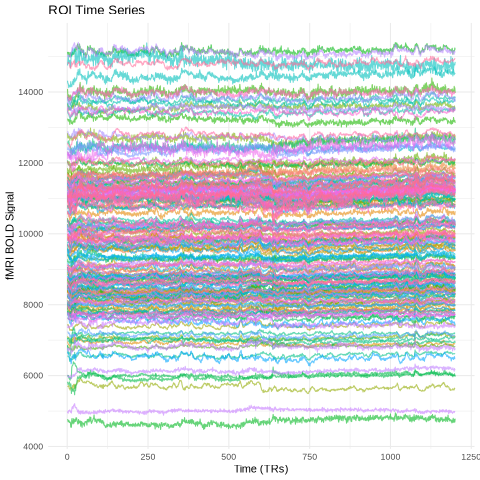
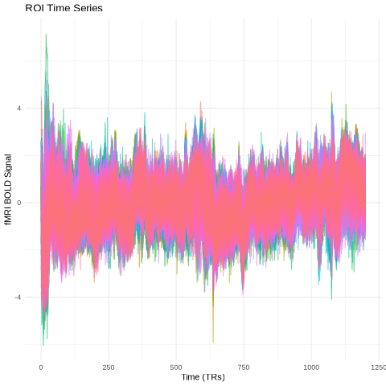
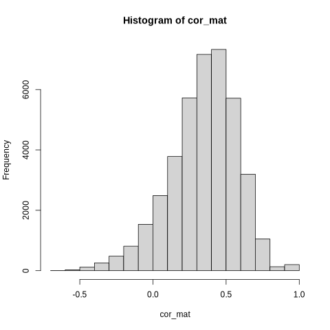
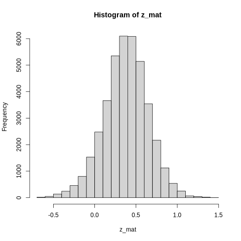
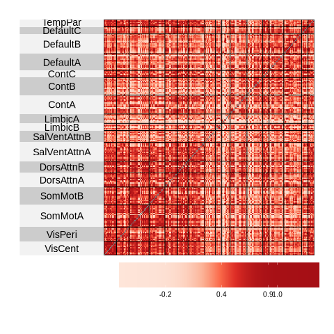
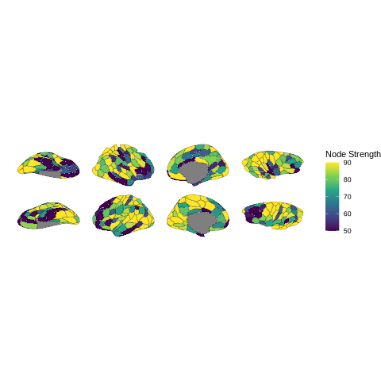
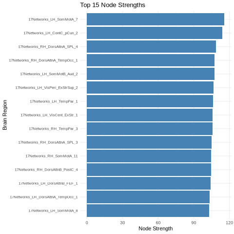
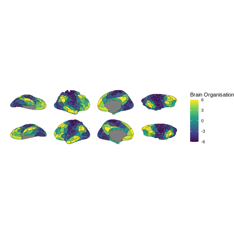
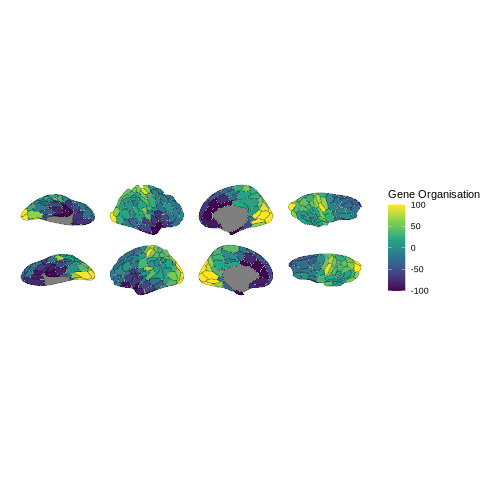

Resting-State fMRI Analysis in R#
From Preprocessed Data to Functional Connectivity#
#
Authors: Giulia Baracchini & Monika Doerig
Date: 13 Jan 2026
#
License:
Note: If this notebook uses neuroimaging tools from Neurocontainers, those tools retain their original licenses. Please see Neurodesk citation guidelines for details.
Citation and Resources:#
Tools included in this workflow#
R:
R Core Team. (2025). R: A language and environment for statistical computing (Version 4.4.3) [Software]. R Foundation for Statistical Computing. https://www.R-project.org/
Workflows this work is based on#
Original work from Giulia Baracchini:
Dataset#
HCP
Schefer parcellation
Introduction#
This notebook is adapted from Giulia Baracchini’s comprehensive fMRI preprocessing tutorial (available on GitHub), which covers the essential steps of resting-state fMRI analysis from raw data preprocessing through functional connectivity analyses.
The original tutorial provides a complete pipeline covering:
Standard fMRI preprocessing - preparing raw neuroimaging data for analysis
Resting-state fMRI denoising - removing artifacts and noise from the signal
Time-series extraction and parcellation - converting voxel-level data to meaningful brain regions
Functional connectivity analyses - examining statistical relationships between brain regions
What This Notebook Covers#
While the original tutorial works with multiple subjects and uses the Schaefer 200 region-7 network parcellation, this notebook focuses on a single-subject analysis using the Schaefer 200 region-17 network parcellation applied to subject 101309.
Key Concepts#
Parcellation: The process of grouping individual voxels into meaningful brain regions or “parcels.” Instead of analyzing thousands of individual voxels, we average signals within anatomically or functionally defined regions, making our analyses more interpretable and computationally manageable.
Functional Connectivity (FC): A statistical measure (typically Pearson’s correlation) that quantifies how synchronously different brain regions activate during rest. The result is a region × region matrix where each entry represents the strength of correlation between two brain areas.
Analysis Pipeline#
This notebook focuses on the analysis phase using already preprocessed and parcellated data. Starting with clean time series data from 200 brain regions, we implement:
Data normalization - standardizing time series signals across regions
Functional connectivity calculation - computing correlation matrices between brain regions
Fisher z-transformation - normalizing correlation values for statistical analysis
Network visualization - creating heatmaps and brain plots to visualize connectivity patterns
Nodal strength analysis - quantifying each region’s overall connectivity
Relationships to other measures of brain organisation - relating connectivity patterns to brain organization gradients and gene expression patterns
The Schaefer parcellation we’re using divides the brain into 200 regions across 17 functional networks, providing a good balance between spatial resolution and interpretability for resting-state connectivity analyses.
Running R in Jupyter with Python Kernel#
⚠️ Run R in Jupyter Notebook: This notebook uses R magic commands (%%R) to run R code within a Python kernel environment. This approach offers several advantages:
- No kernel switching required - all code runs in the Python kernel
- Seamless Python ↔ R integration - easy data exchange between languages
- Fully automated setup - no manual kernel installation needed
Note: Alternatively, Jupyter supports native R kernels, but the magic command approach keeps everything within the Python kernel for simpler workflow management.
Setup Steps#
1. Install R runtime and packages via mamba:
# Install R runtime, Python↔R bridge, and geospatial R packages via conda
# Note: r-base provides the R runtime; we avoid r-essentials (80+ packages) to prevent solver conflicts
!mamba install -c conda-forge r-base rpy2 r-sf r-units r-s2 r-ggplot2 -y -q
2. Enable %%R magic commands:
We only need to run it once for the first time. After these installations, the Jupyter Notebook now supports both Python 3 and R programming languages.
%load_ext rpy2.ipython
3. Install R packages from CRAN and r-universe:
%%R
# ==============================================================================
# Setup a User-Specific R Library and Install Packages
# ==============================================================================
# 1. Define and create a personal library path
user_lib <- "~/R/library"
dir.create(user_lib, recursive = TRUE, showWarnings = FALSE)
# 2. Add the personal library to R's library search path
.libPaths(c(user_lib, .libPaths()))
# 3. Set repositories: CRAN + ggseg r-universe
options(repos = c(
ggseg = "https://ggseg.r-universe.dev",
CRAN = "https://cloud.r-project.org"
))
# 4. Install required packages from CRAN
install.packages(c("remotes", "ggplot2", "dplyr", "tidyr", "superheat", "knitr"))
# 5. Install ggseg from r-universe
install.packages("ggseg")
# 6. Install ggsegSchaefer - try r-universe first, fall back to GitHub
# (r-universe may not have binaries for all platforms, e.g. linux/arm64)
install.packages("ggsegSchaefer")
if (!requireNamespace("ggsegSchaefer", quietly = TRUE)) {
message("ggsegSchaefer not found via r-universe, installing from GitHub...")
remotes::install_github("ggseg/ggsegSchaefer", upgrade = "never")
}
# 7. Verify the library path
print("R packages will be installed in and loaded from:")
print(.libPaths())
x86_64-conda-linux-gnu-cc -I"/opt/conda/lib/R/include" -DNDEBUG -DNDEBUG -D_FORTIFY_SOURCE=2 -O2 -isystem /opt/conda/include -I/opt/conda/include -Wl,-rpath-link,/opt/conda/lib -Iutf8lite/src -fpic -march=nocona -mtune=haswell -ftree-vectorize -fPIC -fstack-protector-strong -fno-plt -O2 -ffunction-sections -pipe -isystem /opt/conda/include -fdebug-prefix-map=/home/conda/feedstock_root/build_artifacts/r-base-split_1771898340574/work=/usr/local/src/conda/r-base-4.5.2 -fdebug-prefix-map=/opt/conda=/usr/local/src/conda-prefix -c as_utf8.c -o as_utf8.o
x86_64-conda-linux-gnu-cc -I"/opt/conda/lib/R/include" -DNDEBUG -DNDEBUG -D_FORTIFY_SOURCE=2 -O2 -isystem /opt/conda/include -I/opt/conda/include -Wl,-rpath-link,/opt/conda/lib -Iutf8lite/src -fpic -march=nocona -mtune=haswell -ftree-vectorize -fPIC -fstack-protector-strong -fno-plt -O2 -ffunction-sections -pipe -isystem /opt/conda/include -fdebug-prefix-map=/home/conda/feedstock_root/build_artifacts/r-base-split_1771898340574/work=/usr/local/src/conda/r-base-4.5.2 -fdebug-prefix-map=/opt/conda=/usr/local/src/conda-prefix -c bytes.c -o bytes.o
x86_64-conda-linux-gnu-cc -I"/opt/conda/lib/R/include" -DNDEBUG -DNDEBUG -D_FORTIFY_SOURCE=2 -O2 -isystem /opt/conda/include -I/opt/conda/include -Wl,-rpath-link,/opt/conda/lib -Iutf8lite/src -fpic -march=nocona -mtune=haswell -ftree-vectorize -fPIC -fstack-protector-strong -fno-plt -O2 -ffunction-sections -pipe -isystem /opt/conda/include -fdebug-prefix-map=/home/conda/feedstock_root/build_artifacts/r-base-split_1771898340574/work=/usr/local/src/conda/r-base-4.5.2 -fdebug-prefix-map=/opt/conda=/usr/local/src/conda-prefix -c context.c -o context.o
x86_64-conda-linux-gnu-cc -I"/opt/conda/lib/R/include" -DNDEBUG -DNDEBUG -D_FORTIFY_SOURCE=2 -O2 -isystem /opt/conda/include -I/opt/conda/include -Wl,-rpath-link,/opt/conda/lib -Iutf8lite/src -fpic -march=nocona -mtune=haswell -ftree-vectorize -fPIC -fstack-protector-strong -fno-plt -O2 -ffunction-sections -pipe -isystem /opt/conda/include -fdebug-prefix-map=/home/conda/feedstock_root/build_artifacts/r-base-split_1771898340574/work=/usr/local/src/conda/r-base-4.5.2 -fdebug-prefix-map=/opt/conda=/usr/local/src/conda-prefix -c init.c -o init.o
x86_64-conda-linux-gnu-cc -I"/opt/conda/lib/R/include" -DNDEBUG -DNDEBUG -D_FORTIFY_SOURCE=2 -O2 -isystem /opt/conda/include -I/opt/conda/include -Wl,-rpath-link,/opt/conda/lib -Iutf8lite/src -fpic -march=nocona -mtune=haswell -ftree-vectorize -fPIC -fstack-protector-strong -fno-plt -O2 -ffunction-sections -pipe -isystem /opt/conda/include -fdebug-prefix-map=/home/conda/feedstock_root/build_artifacts/r-base-split_1771898340574/work=/usr/local/src/conda/r-base-4.5.2 -fdebug-prefix-map=/opt/conda=/usr/local/src/conda-prefix -c render.c -o render.o
x86_64-conda-linux-gnu-cc -I"/opt/conda/lib/R/include" -DNDEBUG -DNDEBUG -D_FORTIFY_SOURCE=2 -O2 -isystem /opt/conda/include -I/opt/conda/include -Wl,-rpath-link,/opt/conda/lib -Iutf8lite/src -fpic -march=nocona -mtune=haswell -ftree-vectorize -fPIC -fstack-protector-strong -fno-plt -O2 -ffunction-sections -pipe -isystem /opt/conda/include -fdebug-prefix-map=/home/conda/feedstock_root/build_artifacts/r-base-split_1771898340574/work=/usr/local/src/conda/r-base-4.5.2 -fdebug-prefix-map=/opt/conda=/usr/local/src/conda-prefix -c render_table.c -o render_table.o
x86_64-conda-linux-gnu-cc -I"/opt/conda/lib/R/include" -DNDEBUG -DNDEBUG -D_FORTIFY_SOURCE=2 -O2 -isystem /opt/conda/include -I/opt/conda/include -Wl,-rpath-link,/opt/conda/lib -Iutf8lite/src -fpic -march=nocona -mtune=haswell -ftree-vectorize -fPIC -fstack-protector-strong -fno-plt -O2 -ffunction-sections -pipe -isystem /opt/conda/include -fdebug-prefix-map=/home/conda/feedstock_root/build_artifacts/r-base-split_1771898340574/work=/usr/local/src/conda/r-base-4.5.2 -fdebug-prefix-map=/opt/conda=/usr/local/src/conda-prefix -c string.c -o string.o
x86_64-conda-linux-gnu-cc -I"/opt/conda/lib/R/include" -DNDEBUG -DNDEBUG -D_FORTIFY_SOURCE=2 -O2 -isystem /opt/conda/include -I/opt/conda/include -Wl,-rpath-link,/opt/conda/lib -Iutf8lite/src -fpic -march=nocona -mtune=haswell -ftree-vectorize -fPIC -fstack-protector-strong -fno-plt -O2 -ffunction-sections -pipe -isystem /opt/conda/include -fdebug-prefix-map=/home/conda/feedstock_root/build_artifacts/r-base-split_1771898340574/work=/usr/local/src/conda/r-base-4.5.2 -fdebug-prefix-map=/opt/conda=/usr/local/src/conda-prefix -c text.c -o text.o
x86_64-conda-linux-gnu-cc -I"/opt/conda/lib/R/include" -DNDEBUG -DNDEBUG -D_FORTIFY_SOURCE=2 -O2 -isystem /opt/conda/include -I/opt/conda/include -Wl,-rpath-link,/opt/conda/lib -Iutf8lite/src -fpic -march=nocona -mtune=haswell -ftree-vectorize -fPIC -fstack-protector-strong -fno-plt -O2 -ffunction-sections -pipe -isystem /opt/conda/include -fdebug-prefix-map=/home/conda/feedstock_root/build_artifacts/r-base-split_1771898340574/work=/usr/local/src/conda/r-base-4.5.2 -fdebug-prefix-map=/opt/conda=/usr/local/src/conda-prefix -c utf8_encode.c -o utf8_encode.o
x86_64-conda-linux-gnu-cc -I"/opt/conda/lib/R/include" -DNDEBUG -DNDEBUG -D_FORTIFY_SOURCE=2 -O2 -isystem /opt/conda/include -I/opt/conda/include -Wl,-rpath-link,/opt/conda/lib -Iutf8lite/src -fpic -march=nocona -mtune=haswell -ftree-vectorize -fPIC -fstack-protector-strong -fno-plt -O2 -ffunction-sections -pipe -isystem /opt/conda/include -fdebug-prefix-map=/home/conda/feedstock_root/build_artifacts/r-base-split_1771898340574/work=/usr/local/src/conda/r-base-4.5.2 -fdebug-prefix-map=/opt/conda=/usr/local/src/conda-prefix -c utf8_format.c -o utf8_format.o
x86_64-conda-linux-gnu-cc -I"/opt/conda/lib/R/include" -DNDEBUG -DNDEBUG -D_FORTIFY_SOURCE=2 -O2 -isystem /opt/conda/include -I/opt/conda/include -Wl,-rpath-link,/opt/conda/lib -Iutf8lite/src -fpic -march=nocona -mtune=haswell -ftree-vectorize -fPIC -fstack-protector-strong -fno-plt -O2 -ffunction-sections -pipe -isystem /opt/conda/include -fdebug-prefix-map=/home/conda/feedstock_root/build_artifacts/r-base-split_1771898340574/work=/usr/local/src/conda/r-base-4.5.2 -fdebug-prefix-map=/opt/conda=/usr/local/src/conda-prefix -c utf8_normalize.c -o utf8_normalize.o
x86_64-conda-linux-gnu-cc -I"/opt/conda/lib/R/include" -DNDEBUG -DNDEBUG -D_FORTIFY_SOURCE=2 -O2 -isystem /opt/conda/include -I/opt/conda/include -Wl,-rpath-link,/opt/conda/lib -Iutf8lite/src -fpic -march=nocona -mtune=haswell -ftree-vectorize -fPIC -fstack-protector-strong -fno-plt -O2 -ffunction-sections -pipe -isystem /opt/conda/include -fdebug-prefix-map=/home/conda/feedstock_root/build_artifacts/r-base-split_1771898340574/work=/usr/local/src/conda/r-base-4.5.2 -fdebug-prefix-map=/opt/conda=/usr/local/src/conda-prefix -c utf8_valid.c -o utf8_valid.o
x86_64-conda-linux-gnu-cc -I"/opt/conda/lib/R/include" -DNDEBUG -DNDEBUG -D_FORTIFY_SOURCE=2 -O2 -isystem /opt/conda/include -I/opt/conda/include -Wl,-rpath-link,/opt/conda/lib -Iutf8lite/src -fpic -march=nocona -mtune=haswell -ftree-vectorize -fPIC -fstack-protector-strong -fno-plt -O2 -ffunction-sections -pipe -isystem /opt/conda/include -fdebug-prefix-map=/home/conda/feedstock_root/build_artifacts/r-base-split_1771898340574/work=/usr/local/src/conda/r-base-4.5.2 -fdebug-prefix-map=/opt/conda=/usr/local/src/conda-prefix -c utf8_width.c -o utf8_width.o
x86_64-conda-linux-gnu-cc -I"/opt/conda/lib/R/include" -DNDEBUG -DNDEBUG -D_FORTIFY_SOURCE=2 -O2 -isystem /opt/conda/include -I/opt/conda/include -Wl,-rpath-link,/opt/conda/lib -Iutf8lite/src -fpic -march=nocona -mtune=haswell -ftree-vectorize -fPIC -fstack-protector-strong -fno-plt -O2 -ffunction-sections -pipe -isystem /opt/conda/include -fdebug-prefix-map=/home/conda/feedstock_root/build_artifacts/r-base-split_1771898340574/work=/usr/local/src/conda/r-base-4.5.2 -fdebug-prefix-map=/opt/conda=/usr/local/src/conda-prefix -c util.c -o util.o
x86_64-conda-linux-gnu-cc -I"/opt/conda/lib/R/include" -DNDEBUG -DNDEBUG -D_FORTIFY_SOURCE=2 -O2 -isystem /opt/conda/include -I/opt/conda/include -Wl,-rpath-link,/opt/conda/lib -Iutf8lite/src -fpic -march=nocona -mtune=haswell -ftree-vectorize -fPIC -fstack-protector-strong -fno-plt -O2 -ffunction-sections -pipe -isystem /opt/conda/include -fdebug-prefix-map=/home/conda/feedstock_root/build_artifacts/r-base-split_1771898340574/work=/usr/local/src/conda/r-base-4.5.2 -fdebug-prefix-map=/opt/conda=/usr/local/src/conda-prefix -c utf8lite/src/array.c -o utf8lite/src/array.o
x86_64-conda-linux-gnu-cc -I"/opt/conda/lib/R/include" -DNDEBUG -DNDEBUG -D_FORTIFY_SOURCE=2 -O2 -isystem /opt/conda/include -I/opt/conda/include -Wl,-rpath-link,/opt/conda/lib -Iutf8lite/src -fpic -march=nocona -mtune=haswell -ftree-vectorize -fPIC -fstack-protector-strong -fno-plt -O2 -ffunction-sections -pipe -isystem /opt/conda/include -fdebug-prefix-map=/home/conda/feedstock_root/build_artifacts/r-base-split_1771898340574/work=/usr/local/src/conda/r-base-4.5.2 -fdebug-prefix-map=/opt/conda=/usr/local/src/conda-prefix -c utf8lite/src/char.c -o utf8lite/src/char.o
x86_64-conda-linux-gnu-cc -I"/opt/conda/lib/R/include" -DNDEBUG -DNDEBUG -D_FORTIFY_SOURCE=2 -O2 -isystem /opt/conda/include -I/opt/conda/include -Wl,-rpath-link,/opt/conda/lib -Iutf8lite/src -fpic -march=nocona -mtune=haswell -ftree-vectorize -fPIC -fstack-protector-strong -fno-plt -O2 -ffunction-sections -pipe -isystem /opt/conda/include -fdebug-prefix-map=/home/conda/feedstock_root/build_artifacts/r-base-split_1771898340574/work=/usr/local/src/conda/r-base-4.5.2 -fdebug-prefix-map=/opt/conda=/usr/local/src/conda-prefix -c utf8lite/src/encode.c -o utf8lite/src/encode.o
x86_64-conda-linux-gnu-cc -I"/opt/conda/lib/R/include" -DNDEBUG -DNDEBUG -D_FORTIFY_SOURCE=2 -O2 -isystem /opt/conda/include -I/opt/conda/include -Wl,-rpath-link,/opt/conda/lib -Iutf8lite/src -fpic -march=nocona -mtune=haswell -ftree-vectorize -fPIC -fstack-protector-strong -fno-plt -O2 -ffunction-sections -pipe -isystem /opt/conda/include -fdebug-prefix-map=/home/conda/feedstock_root/build_artifacts/r-base-split_1771898340574/work=/usr/local/src/conda/r-base-4.5.2 -fdebug-prefix-map=/opt/conda=/usr/local/src/conda-prefix -c utf8lite/src/error.c -o utf8lite/src/error.o
x86_64-conda-linux-gnu-cc -I"/opt/conda/lib/R/include" -DNDEBUG -DNDEBUG -D_FORTIFY_SOURCE=2 -O2 -isystem /opt/conda/include -I/opt/conda/include -Wl,-rpath-link,/opt/conda/lib -Iutf8lite/src -fpic -march=nocona -mtune=haswell -ftree-vectorize -fPIC -fstack-protector-strong -fno-plt -O2 -ffunction-sections -pipe -isystem /opt/conda/include -fdebug-prefix-map=/home/conda/feedstock_root/build_artifacts/r-base-split_1771898340574/work=/usr/local/src/conda/r-base-4.5.2 -fdebug-prefix-map=/opt/conda=/usr/local/src/conda-prefix -c utf8lite/src/escape.c -o utf8lite/src/escape.o
x86_64-conda-linux-gnu-cc -I"/opt/conda/lib/R/include" -DNDEBUG -DNDEBUG -D_FORTIFY_SOURCE=2 -O2 -isystem /opt/conda/include -I/opt/conda/include -Wl,-rpath-link,/opt/conda/lib -Iutf8lite/src -fpic -march=nocona -mtune=haswell -ftree-vectorize -fPIC -fstack-protector-strong -fno-plt -O2 -ffunction-sections -pipe -isystem /opt/conda/include -fdebug-prefix-map=/home/conda/feedstock_root/build_artifacts/r-base-split_1771898340574/work=/usr/local/src/conda/r-base-4.5.2 -fdebug-prefix-map=/opt/conda=/usr/local/src/conda-prefix -c utf8lite/src/graph.c -o utf8lite/src/graph.o
x86_64-conda-linux-gnu-cc -I"/opt/conda/lib/R/include" -DNDEBUG -DNDEBUG -D_FORTIFY_SOURCE=2 -O2 -isystem /opt/conda/include -I/opt/conda/include -Wl,-rpath-link,/opt/conda/lib -Iutf8lite/src -fpic -march=nocona -mtune=haswell -ftree-vectorize -fPIC -fstack-protector-strong -fno-plt -O2 -ffunction-sections -pipe -isystem /opt/conda/include -fdebug-prefix-map=/home/conda/feedstock_root/build_artifacts/r-base-split_1771898340574/work=/usr/local/src/conda/r-base-4.5.2 -fdebug-prefix-map=/opt/conda=/usr/local/src/conda-prefix -c utf8lite/src/graphscan.c -o utf8lite/src/graphscan.o
x86_64-conda-linux-gnu-cc -I"/opt/conda/lib/R/include" -DNDEBUG -DNDEBUG -D_FORTIFY_SOURCE=2 -O2 -isystem /opt/conda/include -I/opt/conda/include -Wl,-rpath-link,/opt/conda/lib -Iutf8lite/src -fpic -march=nocona -mtune=haswell -ftree-vectorize -fPIC -fstack-protector-strong -fno-plt -O2 -ffunction-sections -pipe -isystem /opt/conda/include -fdebug-prefix-map=/home/conda/feedstock_root/build_artifacts/r-base-split_1771898340574/work=/usr/local/src/conda/r-base-4.5.2 -fdebug-prefix-map=/opt/conda=/usr/local/src/conda-prefix -c utf8lite/src/normalize.c -o utf8lite/src/normalize.o
x86_64-conda-linux-gnu-cc -I"/opt/conda/lib/R/include" -DNDEBUG -DNDEBUG -D_FORTIFY_SOURCE=2 -O2 -isystem /opt/conda/include -I/opt/conda/include -Wl,-rpath-link,/opt/conda/lib -Iutf8lite/src -fpic -march=nocona -mtune=haswell -ftree-vectorize -fPIC -fstack-protector-strong -fno-plt -O2 -ffunction-sections -pipe -isystem /opt/conda/include -fdebug-prefix-map=/home/conda/feedstock_root/build_artifacts/r-base-split_1771898340574/work=/usr/local/src/conda/r-base-4.5.2 -fdebug-prefix-map=/opt/conda=/usr/local/src/conda-prefix -c utf8lite/src/render.c -o utf8lite/src/render.o
x86_64-conda-linux-gnu-cc -I"/opt/conda/lib/R/include" -DNDEBUG -DNDEBUG -D_FORTIFY_SOURCE=2 -O2 -isystem /opt/conda/include -I/opt/conda/include -Wl,-rpath-link,/opt/conda/lib -Iutf8lite/src -fpic -march=nocona -mtune=haswell -ftree-vectorize -fPIC -fstack-protector-strong -fno-plt -O2 -ffunction-sections -pipe -isystem /opt/conda/include -fdebug-prefix-map=/home/conda/feedstock_root/build_artifacts/r-base-split_1771898340574/work=/usr/local/src/conda/r-base-4.5.2 -fdebug-prefix-map=/opt/conda=/usr/local/src/conda-prefix -c utf8lite/src/text.c -o utf8lite/src/text.o
x86_64-conda-linux-gnu-cc -I"/opt/conda/lib/R/include" -DNDEBUG -DNDEBUG -D_FORTIFY_SOURCE=2 -O2 -isystem /opt/conda/include -I/opt/conda/include -Wl,-rpath-link,/opt/conda/lib -Iutf8lite/src -fpic -march=nocona -mtune=haswell -ftree-vectorize -fPIC -fstack-protector-strong -fno-plt -O2 -ffunction-sections -pipe -isystem /opt/conda/include -fdebug-prefix-map=/home/conda/feedstock_root/build_artifacts/r-base-split_1771898340574/work=/usr/local/src/conda/r-base-4.5.2 -fdebug-prefix-map=/opt/conda=/usr/local/src/conda-prefix -c utf8lite/src/textassign.c -o utf8lite/src/textassign.o
x86_64-conda-linux-gnu-cc -I"/opt/conda/lib/R/include" -DNDEBUG -DNDEBUG -D_FORTIFY_SOURCE=2 -O2 -isystem /opt/conda/include -I/opt/conda/include -Wl,-rpath-link,/opt/conda/lib -Iutf8lite/src -fpic -march=nocona -mtune=haswell -ftree-vectorize -fPIC -fstack-protector-strong -fno-plt -O2 -ffunction-sections -pipe -isystem /opt/conda/include -fdebug-prefix-map=/home/conda/feedstock_root/build_artifacts/r-base-split_1771898340574/work=/usr/local/src/conda/r-base-4.5.2 -fdebug-prefix-map=/opt/conda=/usr/local/src/conda-prefix -c utf8lite/src/textiter.c -o utf8lite/src/textiter.o
x86_64-conda-linux-gnu-cc -I"/opt/conda/lib/R/include" -DNDEBUG -DNDEBUG -D_FORTIFY_SOURCE=2 -O2 -isystem /opt/conda/include -I/opt/conda/include -Wl,-rpath-link,/opt/conda/lib -Iutf8lite/src -fpic -march=nocona -mtune=haswell -ftree-vectorize -fPIC -fstack-protector-strong -fno-plt -O2 -ffunction-sections -pipe -isystem /opt/conda/include -fdebug-prefix-map=/home/conda/feedstock_root/build_artifacts/r-base-split_1771898340574/work=/usr/local/src/conda/r-base-4.5.2 -fdebug-prefix-map=/opt/conda=/usr/local/src/conda-prefix -c utf8lite/src/textmap.c -o utf8lite/src/textmap.o
x86_64-conda-linux-gnu-ar rcs libcutf8lite.a utf8lite/src/array.o utf8lite/src/char.o utf8lite/src/encode.o utf8lite/src/error.o utf8lite/src/escape.o utf8lite/src/graph.o utf8lite/src/graphscan.o utf8lite/src/normalize.o utf8lite/src/render.o utf8lite/src/text.o utf8lite/src/textassign.o utf8lite/src/textiter.o utf8lite/src/textmap.o
x86_64-conda-linux-gnu-cc -shared -L/opt/conda/lib/R/lib -Wl,-O2 -Wl,--sort-common -Wl,--as-needed -Wl,-z,relro -Wl,-z,now -Wl,--disable-new-dtags -Wl,--gc-sections -Wl,--allow-shlib-undefined -Wl,-rpath,/opt/conda/lib -Wl,-rpath-link,/opt/conda/lib -L/opt/conda/lib -o utf8.so as_utf8.o bytes.o context.o init.o render.o render_table.o string.o text.o utf8_encode.o utf8_format.o utf8_normalize.o utf8_valid.o utf8_width.o util.o -L. -lcutf8lite -L/opt/conda/lib/R/lib -lR
checking for R_HOME... /opt/conda/lib/R
checking for R... /opt/conda/lib/R/bin/R
checking for endianness...
little
checking for cat... /usr/bin/cat
checking whether the C++ compiler works... yes
checking for C++ compiler default output file name... a.out
checking for suffix of executables...
checking whether we are cross compiling... no
checking for suffix of object files...
o
checking whether the compiler supports GNU C++... yes
checking whether x86_64-conda-linux-gnu-c++ -std=gnu++17 accepts -g... yes
checking for x86_64-conda-linux-gnu-c++ -std=gnu++17 option to enable C++11 features...
none needed
checking whether the C++ compiler supports the 'long long' type...
yes
checking whether the compiler implements namespaces... yes
checking whether the compiler supports the Standard Template Library...
yes
checking whether std::map is available...
yes
checking for pkg-config... /usr/bin/pkg-config
checking with 'pkg-config' for the system ICU4C (icu-i18n icu-uc)... 74.2
checking for ICU4C >= 61... yes
checking for additional CPPFLAGS, LDFLAGS, and LIBS required... done
checking whether an ICU4C-based project can be built...
no
*** This version of ICU4C cannot be used.
*** Using the ICU 74 bundle that comes with 'stringi'.
checking whether we may compile src/icu74/common/putil.cpp...
yes
checking whether we may compile src/icu74/i18n/number_affixutils.cpp...
yes
checking whether alignof(std::max_align_t) is available...
yes
checking for stdio.h... yes
checking for stdlib.h... yes
checking for string.h...
yes
checking for inttypes.h... yes
checking for stdint.h...
yes
checking for strings.h... yes
checking for sys/stat.h...
yes
checking for sys/types.h... yes
checking for unistd.h...
yes
checking for elf.h... yes
checking whether the ICU data library is available...
configure: creating ./config.status
config.status: creating src/Makevars
config.status: creating src/uconfig_local.h
config.status: creating src/install.libs.R
*** stringi configure summary:
ICU_FOUND=0
ICUDT_DIR=icu74/data
ICU_BUNDLE_VERSION=74
ICUDT_ENDIANNESS=little
STRINGI_CXXSTD=
STRINGI_CXXFLAGS= -fpic
STRINGI_CPPFLAGS=-I. -UDEBUG -DNDEBUG -DU_HAVE_ELF_H -Iicu74 -Iicu74/unicode -Iicu74/common -Iicu74/i18n -DU_STATIC_IMPLEMENTATION -DU_COMMON_IMPLEMENTATION -DU_I18N_IMPLEMENTATION -D_REENTRANT -DUCONFIG_USE_LOCAL
STRINGI_LDFLAGS=
STRINGI_LIBS=
*** Compiler settings used:
CXX=x86_64-conda-linux-gnu-c++ -std=gnu++17
LD=x86_64-conda-linux-gnu-c++ -std=gnu++17
CXXFLAGS=-fvisibility-inlines-hidden -fmessage-length=0 -march=nocona -mtune=haswell -ftree-vectorize -fPIC -fstack-protector-strong -fno-plt -O2 -ffunction-sections -pipe -isystem /opt/conda/include -fdebug-prefix-map=/home/conda/feedstock_root/build_artifacts/r-base-split_1771898340574/work=/usr/local/src/conda/r-base-4.5.2 -fdebug-prefix-map=/opt/conda=/usr/local/src/conda-prefix
CPPFLAGS=-DNDEBUG -D_FORTIFY_SOURCE=2 -O2 -isystem /opt/conda/include -I/opt/conda/include -Wl,-rpath-link,/opt/conda/lib
LDFLAGS=
LIBS=
x86_64-conda-linux-gnu-c++ -std=gnu++17 -I"/opt/conda/lib/R/include" -DNDEBUG -I. -UDEBUG -DNDEBUG -DU_HAVE_ELF_H -Iicu74 -Iicu74/unicode -Iicu74/common -Iicu74/i18n -DU_STATIC_IMPLEMENTATION -DU_COMMON_IMPLEMENTATION -DU_I18N_IMPLEMENTATION -D_REENTRANT -DUCONFIG_USE_LOCAL -DNDEBUG -D_FORTIFY_SOURCE=2 -O2 -isystem /opt/conda/include -I/opt/conda/include -Wl,-rpath-link,/opt/conda/lib -fpic -fpic -fvisibility-inlines-hidden -fmessage-length=0 -march=nocona -mtune=haswell -ftree-vectorize -fPIC -fstack-protector-strong -fno-plt -O2 -ffunction-sections -pipe -isystem /opt/conda/include -fdebug-prefix-map=/home/conda/feedstock_root/build_artifacts/r-base-split_1771898340574/work=/usr/local/src/conda/r-base-4.5.2 -fdebug-prefix-map=/opt/conda=/usr/local/src/conda-prefix -c stri_brkiter.cpp -o stri_brkiter.o
x86_64-conda-linux-gnu-c++ -std=gnu++17 -I"/opt/conda/lib/R/include" -DNDEBUG -I. -UDEBUG -DNDEBUG -DU_HAVE_ELF_H -Iicu74 -Iicu74/unicode -Iicu74/common -Iicu74/i18n -DU_STATIC_IMPLEMENTATION -DU_COMMON_IMPLEMENTATION -DU_I18N_IMPLEMENTATION -D_REENTRANT -DUCONFIG_USE_LOCAL -DNDEBUG -D_FORTIFY_SOURCE=2 -O2 -isystem /opt/conda/include -I/opt/conda/include -Wl,-rpath-link,/opt/conda/lib -fpic -fpic -fvisibility-inlines-hidden -fmessage-length=0 -march=nocona -mtune=haswell -ftree-vectorize -fPIC -fstack-protector-strong -fno-plt -O2 -ffunction-sections -pipe -isystem /opt/conda/include -fdebug-prefix-map=/home/conda/feedstock_root/build_artifacts/r-base-split_1771898340574/work=/usr/local/src/conda/r-base-4.5.2 -fdebug-prefix-map=/opt/conda=/usr/local/src/conda-prefix -c stri_callables.cpp -o stri_callables.o
x86_64-conda-linux-gnu-c++ -std=gnu++17 -I"/opt/conda/lib/R/include" -DNDEBUG -I. -UDEBUG -DNDEBUG -DU_HAVE_ELF_H -Iicu74 -Iicu74/unicode -Iicu74/common -Iicu74/i18n -DU_STATIC_IMPLEMENTATION -DU_COMMON_IMPLEMENTATION -DU_I18N_IMPLEMENTATION -D_REENTRANT -DUCONFIG_USE_LOCAL -DNDEBUG -D_FORTIFY_SOURCE=2 -O2 -isystem /opt/conda/include -I/opt/conda/include -Wl,-rpath-link,/opt/conda/lib -fpic -fpic -fvisibility-inlines-hidden -fmessage-length=0 -march=nocona -mtune=haswell -ftree-vectorize -fPIC -fstack-protector-strong -fno-plt -O2 -ffunction-sections -pipe -isystem /opt/conda/include -fdebug-prefix-map=/home/conda/feedstock_root/build_artifacts/r-base-split_1771898340574/work=/usr/local/src/conda/r-base-4.5.2 -fdebug-prefix-map=/opt/conda=/usr/local/src/conda-prefix -c stri_collator.cpp -o stri_collator.o
x86_64-conda-linux-gnu-c++ -std=gnu++17 -I"/opt/conda/lib/R/include" -DNDEBUG -I. -UDEBUG -DNDEBUG -DU_HAVE_ELF_H -Iicu74 -Iicu74/unicode -Iicu74/common -Iicu74/i18n -DU_STATIC_IMPLEMENTATION -DU_COMMON_IMPLEMENTATION -DU_I18N_IMPLEMENTATION -D_REENTRANT -DUCONFIG_USE_LOCAL -DNDEBUG -D_FORTIFY_SOURCE=2 -O2 -isystem /opt/conda/include -I/opt/conda/include -Wl,-rpath-link,/opt/conda/lib -fpic -fpic -fvisibility-inlines-hidden -fmessage-length=0 -march=nocona -mtune=haswell -ftree-vectorize -fPIC -fstack-protector-strong -fno-plt -O2 -ffunction-sections -pipe -isystem /opt/conda/include -fdebug-prefix-map=/home/conda/feedstock_root/build_artifacts/r-base-split_1771898340574/work=/usr/local/src/conda/r-base-4.5.2 -fdebug-prefix-map=/opt/conda=/usr/local/src/conda-prefix -c stri_common.cpp -o stri_common.o
x86_64-conda-linux-gnu-c++ -std=gnu++17 -I"/opt/conda/lib/R/include" -DNDEBUG -I. -UDEBUG -DNDEBUG -DU_HAVE_ELF_H -Iicu74 -Iicu74/unicode -Iicu74/common -Iicu74/i18n -DU_STATIC_IMPLEMENTATION -DU_COMMON_IMPLEMENTATION -DU_I18N_IMPLEMENTATION -D_REENTRANT -DUCONFIG_USE_LOCAL -DNDEBUG -D_FORTIFY_SOURCE=2 -O2 -isystem /opt/conda/include -I/opt/conda/include -Wl,-rpath-link,/opt/conda/lib -fpic -fpic -fvisibility-inlines-hidden -fmessage-length=0 -march=nocona -mtune=haswell -ftree-vectorize -fPIC -fstack-protector-strong -fno-plt -O2 -ffunction-sections -pipe -isystem /opt/conda/include -fdebug-prefix-map=/home/conda/feedstock_root/build_artifacts/r-base-split_1771898340574/work=/usr/local/src/conda/r-base-4.5.2 -fdebug-prefix-map=/opt/conda=/usr/local/src/conda-prefix -c stri_compare.cpp -o stri_compare.o
x86_64-conda-linux-gnu-c++ -std=gnu++17 -I"/opt/conda/lib/R/include" -DNDEBUG -I. -UDEBUG -DNDEBUG -DU_HAVE_ELF_H -Iicu74 -Iicu74/unicode -Iicu74/common -Iicu74/i18n -DU_STATIC_IMPLEMENTATION -DU_COMMON_IMPLEMENTATION -DU_I18N_IMPLEMENTATION -D_REENTRANT -DUCONFIG_USE_LOCAL -DNDEBUG -D_FORTIFY_SOURCE=2 -O2 -isystem /opt/conda/include -I/opt/conda/include -Wl,-rpath-link,/opt/conda/lib -fpic -fpic -fvisibility-inlines-hidden -fmessage-length=0 -march=nocona -mtune=haswell -ftree-vectorize -fPIC -fstack-protector-strong -fno-plt -O2 -ffunction-sections -pipe -isystem /opt/conda/include -fdebug-prefix-map=/home/conda/feedstock_root/build_artifacts/r-base-split_1771898340574/work=/usr/local/src/conda/r-base-4.5.2 -fdebug-prefix-map=/opt/conda=/usr/local/src/conda-prefix -c stri_container_base.cpp -o stri_container_base.o
x86_64-conda-linux-gnu-c++ -std=gnu++17 -I"/opt/conda/lib/R/include" -DNDEBUG -I. -UDEBUG -DNDEBUG -DU_HAVE_ELF_H -Iicu74 -Iicu74/unicode -Iicu74/common -Iicu74/i18n -DU_STATIC_IMPLEMENTATION -DU_COMMON_IMPLEMENTATION -DU_I18N_IMPLEMENTATION -D_REENTRANT -DUCONFIG_USE_LOCAL -DNDEBUG -D_FORTIFY_SOURCE=2 -O2 -isystem /opt/conda/include -I/opt/conda/include -Wl,-rpath-link,/opt/conda/lib -fpic -fpic -fvisibility-inlines-hidden -fmessage-length=0 -march=nocona -mtune=haswell -ftree-vectorize -fPIC -fstack-protector-strong -fno-plt -O2 -ffunction-sections -pipe -isystem /opt/conda/include -fdebug-prefix-map=/home/conda/feedstock_root/build_artifacts/r-base-split_1771898340574/work=/usr/local/src/conda/r-base-4.5.2 -fdebug-prefix-map=/opt/conda=/usr/local/src/conda-prefix -c stri_container_bytesearch.cpp -o stri_container_bytesearch.o
x86_64-conda-linux-gnu-c++ -std=gnu++17 -I"/opt/conda/lib/R/include" -DNDEBUG -I. -UDEBUG -DNDEBUG -DU_HAVE_ELF_H -Iicu74 -Iicu74/unicode -Iicu74/common -Iicu74/i18n -DU_STATIC_IMPLEMENTATION -DU_COMMON_IMPLEMENTATION -DU_I18N_IMPLEMENTATION -D_REENTRANT -DUCONFIG_USE_LOCAL -DNDEBUG -D_FORTIFY_SOURCE=2 -O2 -isystem /opt/conda/include -I/opt/conda/include -Wl,-rpath-link,/opt/conda/lib -fpic -fpic -fvisibility-inlines-hidden -fmessage-length=0 -march=nocona -mtune=haswell -ftree-vectorize -fPIC -fstack-protector-strong -fno-plt -O2 -ffunction-sections -pipe -isystem /opt/conda/include -fdebug-prefix-map=/home/conda/feedstock_root/build_artifacts/r-base-split_1771898340574/work=/usr/local/src/conda/r-base-4.5.2 -fdebug-prefix-map=/opt/conda=/usr/local/src/conda-prefix -c stri_container_listint.cpp -o stri_container_listint.o
x86_64-conda-linux-gnu-c++ -std=gnu++17 -I"/opt/conda/lib/R/include" -DNDEBUG -I. -UDEBUG -DNDEBUG -DU_HAVE_ELF_H -Iicu74 -Iicu74/unicode -Iicu74/common -Iicu74/i18n -DU_STATIC_IMPLEMENTATION -DU_COMMON_IMPLEMENTATION -DU_I18N_IMPLEMENTATION -D_REENTRANT -DUCONFIG_USE_LOCAL -DNDEBUG -D_FORTIFY_SOURCE=2 -O2 -isystem /opt/conda/include -I/opt/conda/include -Wl,-rpath-link,/opt/conda/lib -fpic -fpic -fvisibility-inlines-hidden -fmessage-length=0 -march=nocona -mtune=haswell -ftree-vectorize -fPIC -fstack-protector-strong -fno-plt -O2 -ffunction-sections -pipe -isystem /opt/conda/include -fdebug-prefix-map=/home/conda/feedstock_root/build_artifacts/r-base-split_1771898340574/work=/usr/local/src/conda/r-base-4.5.2 -fdebug-prefix-map=/opt/conda=/usr/local/src/conda-prefix -c stri_container_listraw.cpp -o stri_container_listraw.o
x86_64-conda-linux-gnu-c++ -std=gnu++17 -I"/opt/conda/lib/R/include" -DNDEBUG -I. -UDEBUG -DNDEBUG -DU_HAVE_ELF_H -Iicu74 -Iicu74/unicode -Iicu74/common -Iicu74/i18n -DU_STATIC_IMPLEMENTATION -DU_COMMON_IMPLEMENTATION -DU_I18N_IMPLEMENTATION -D_REENTRANT -DUCONFIG_USE_LOCAL -DNDEBUG -D_FORTIFY_SOURCE=2 -O2 -isystem /opt/conda/include -I/opt/conda/include -Wl,-rpath-link,/opt/conda/lib -fpic -fpic -fvisibility-inlines-hidden -fmessage-length=0 -march=nocona -mtune=haswell -ftree-vectorize -fPIC -fstack-protector-strong -fno-plt -O2 -ffunction-sections -pipe -isystem /opt/conda/include -fdebug-prefix-map=/home/conda/feedstock_root/build_artifacts/r-base-split_1771898340574/work=/usr/local/src/conda/r-base-4.5.2 -fdebug-prefix-map=/opt/conda=/usr/local/src/conda-prefix -c stri_container_listutf8.cpp -o stri_container_listutf8.o
x86_64-conda-linux-gnu-c++ -std=gnu++17 -I"/opt/conda/lib/R/include" -DNDEBUG -I. -UDEBUG -DNDEBUG -DU_HAVE_ELF_H -Iicu74 -Iicu74/unicode -Iicu74/common -Iicu74/i18n -DU_STATIC_IMPLEMENTATION -DU_COMMON_IMPLEMENTATION -DU_I18N_IMPLEMENTATION -D_REENTRANT -DUCONFIG_USE_LOCAL -DNDEBUG -D_FORTIFY_SOURCE=2 -O2 -isystem /opt/conda/include -I/opt/conda/include -Wl,-rpath-link,/opt/conda/lib -fpic -fpic -fvisibility-inlines-hidden -fmessage-length=0 -march=nocona -mtune=haswell -ftree-vectorize -fPIC -fstack-protector-strong -fno-plt -O2 -ffunction-sections -pipe -isystem /opt/conda/include -fdebug-prefix-map=/home/conda/feedstock_root/build_artifacts/r-base-split_1771898340574/work=/usr/local/src/conda/r-base-4.5.2 -fdebug-prefix-map=/opt/conda=/usr/local/src/conda-prefix -c stri_container_regex.cpp -o stri_container_regex.o
x86_64-conda-linux-gnu-c++ -std=gnu++17 -I"/opt/conda/lib/R/include" -DNDEBUG -I. -UDEBUG -DNDEBUG -DU_HAVE_ELF_H -Iicu74 -Iicu74/unicode -Iicu74/common -Iicu74/i18n -DU_STATIC_IMPLEMENTATION -DU_COMMON_IMPLEMENTATION -DU_I18N_IMPLEMENTATION -D_REENTRANT -DUCONFIG_USE_LOCAL -DNDEBUG -D_FORTIFY_SOURCE=2 -O2 -isystem /opt/conda/include -I/opt/conda/include -Wl,-rpath-link,/opt/conda/lib -fpic -fpic -fvisibility-inlines-hidden -fmessage-length=0 -march=nocona -mtune=haswell -ftree-vectorize -fPIC -fstack-protector-strong -fno-plt -O2 -ffunction-sections -pipe -isystem /opt/conda/include -fdebug-prefix-map=/home/conda/feedstock_root/build_artifacts/r-base-split_1771898340574/work=/usr/local/src/conda/r-base-4.5.2 -fdebug-prefix-map=/opt/conda=/usr/local/src/conda-prefix -c stri_container_usearch.cpp -o stri_container_usearch.o
x86_64-conda-linux-gnu-c++ -std=gnu++17 -I"/opt/conda/lib/R/include" -DNDEBUG -I. -UDEBUG -DNDEBUG -DU_HAVE_ELF_H -Iicu74 -Iicu74/unicode -Iicu74/common -Iicu74/i18n -DU_STATIC_IMPLEMENTATION -DU_COMMON_IMPLEMENTATION -DU_I18N_IMPLEMENTATION -D_REENTRANT -DUCONFIG_USE_LOCAL -DNDEBUG -D_FORTIFY_SOURCE=2 -O2 -isystem /opt/conda/include -I/opt/conda/include -Wl,-rpath-link,/opt/conda/lib -fpic -fpic -fvisibility-inlines-hidden -fmessage-length=0 -march=nocona -mtune=haswell -ftree-vectorize -fPIC -fstack-protector-strong -fno-plt -O2 -ffunction-sections -pipe -isystem /opt/conda/include -fdebug-prefix-map=/home/conda/feedstock_root/build_artifacts/r-base-split_1771898340574/work=/usr/local/src/conda/r-base-4.5.2 -fdebug-prefix-map=/opt/conda=/usr/local/src/conda-prefix -c stri_container_utf16.cpp -o stri_container_utf16.o
x86_64-conda-linux-gnu-c++ -std=gnu++17 -I"/opt/conda/lib/R/include" -DNDEBUG -I. -UDEBUG -DNDEBUG -DU_HAVE_ELF_H -Iicu74 -Iicu74/unicode -Iicu74/common -Iicu74/i18n -DU_STATIC_IMPLEMENTATION -DU_COMMON_IMPLEMENTATION -DU_I18N_IMPLEMENTATION -D_REENTRANT -DUCONFIG_USE_LOCAL -DNDEBUG -D_FORTIFY_SOURCE=2 -O2 -isystem /opt/conda/include -I/opt/conda/include -Wl,-rpath-link,/opt/conda/lib -fpic -fpic -fvisibility-inlines-hidden -fmessage-length=0 -march=nocona -mtune=haswell -ftree-vectorize -fPIC -fstack-protector-strong -fno-plt -O2 -ffunction-sections -pipe -isystem /opt/conda/include -fdebug-prefix-map=/home/conda/feedstock_root/build_artifacts/r-base-split_1771898340574/work=/usr/local/src/conda/r-base-4.5.2 -fdebug-prefix-map=/opt/conda=/usr/local/src/conda-prefix -c stri_container_utf8.cpp -o stri_container_utf8.o
x86_64-conda-linux-gnu-c++ -std=gnu++17 -I"/opt/conda/lib/R/include" -DNDEBUG -I. -UDEBUG -DNDEBUG -DU_HAVE_ELF_H -Iicu74 -Iicu74/unicode -Iicu74/common -Iicu74/i18n -DU_STATIC_IMPLEMENTATION -DU_COMMON_IMPLEMENTATION -DU_I18N_IMPLEMENTATION -D_REENTRANT -DUCONFIG_USE_LOCAL -DNDEBUG -D_FORTIFY_SOURCE=2 -O2 -isystem /opt/conda/include -I/opt/conda/include -Wl,-rpath-link,/opt/conda/lib -fpic -fpic -fvisibility-inlines-hidden -fmessage-length=0 -march=nocona -mtune=haswell -ftree-vectorize -fPIC -fstack-protector-strong -fno-plt -O2 -ffunction-sections -pipe -isystem /opt/conda/include -fdebug-prefix-map=/home/conda/feedstock_root/build_artifacts/r-base-split_1771898340574/work=/usr/local/src/conda/r-base-4.5.2 -fdebug-prefix-map=/opt/conda=/usr/local/src/conda-prefix -c stri_container_utf8_indexable.cpp -o stri_container_utf8_indexable.o
x86_64-conda-linux-gnu-c++ -std=gnu++17 -I"/opt/conda/lib/R/include" -DNDEBUG -I. -UDEBUG -DNDEBUG -DU_HAVE_ELF_H -Iicu74 -Iicu74/unicode -Iicu74/common -Iicu74/i18n -DU_STATIC_IMPLEMENTATION -DU_COMMON_IMPLEMENTATION -DU_I18N_IMPLEMENTATION -D_REENTRANT -DUCONFIG_USE_LOCAL -DNDEBUG -D_FORTIFY_SOURCE=2 -O2 -isystem /opt/conda/include -I/opt/conda/include -Wl,-rpath-link,/opt/conda/lib -fpic -fpic -fvisibility-inlines-hidden -fmessage-length=0 -march=nocona -mtune=haswell -ftree-vectorize -fPIC -fstack-protector-strong -fno-plt -O2 -ffunction-sections -pipe -isystem /opt/conda/include -fdebug-prefix-map=/home/conda/feedstock_root/build_artifacts/r-base-split_1771898340574/work=/usr/local/src/conda/r-base-4.5.2 -fdebug-prefix-map=/opt/conda=/usr/local/src/conda-prefix -c stri_encoding_conversion.cpp -o stri_encoding_conversion.o
x86_64-conda-linux-gnu-c++ -std=gnu++17 -I"/opt/conda/lib/R/include" -DNDEBUG -I. -UDEBUG -DNDEBUG -DU_HAVE_ELF_H -Iicu74 -Iicu74/unicode -Iicu74/common -Iicu74/i18n -DU_STATIC_IMPLEMENTATION -DU_COMMON_IMPLEMENTATION -DU_I18N_IMPLEMENTATION -D_REENTRANT -DUCONFIG_USE_LOCAL -DNDEBUG -D_FORTIFY_SOURCE=2 -O2 -isystem /opt/conda/include -I/opt/conda/include -Wl,-rpath-link,/opt/conda/lib -fpic -fpic -fvisibility-inlines-hidden -fmessage-length=0 -march=nocona -mtune=haswell -ftree-vectorize -fPIC -fstack-protector-strong -fno-plt -O2 -ffunction-sections -pipe -isystem /opt/conda/include -fdebug-prefix-map=/home/conda/feedstock_root/build_artifacts/r-base-split_1771898340574/work=/usr/local/src/conda/r-base-4.5.2 -fdebug-prefix-map=/opt/conda=/usr/local/src/conda-prefix -c stri_encoding_detection.cpp -o stri_encoding_detection.o
x86_64-conda-linux-gnu-c++ -std=gnu++17 -I"/opt/conda/lib/R/include" -DNDEBUG -I. -UDEBUG -DNDEBUG -DU_HAVE_ELF_H -Iicu74 -Iicu74/unicode -Iicu74/common -Iicu74/i18n -DU_STATIC_IMPLEMENTATION -DU_COMMON_IMPLEMENTATION -DU_I18N_IMPLEMENTATION -D_REENTRANT -DUCONFIG_USE_LOCAL -DNDEBUG -D_FORTIFY_SOURCE=2 -O2 -isystem /opt/conda/include -I/opt/conda/include -Wl,-rpath-link,/opt/conda/lib -fpic -fpic -fvisibility-inlines-hidden -fmessage-length=0 -march=nocona -mtune=haswell -ftree-vectorize -fPIC -fstack-protector-strong -fno-plt -O2 -ffunction-sections -pipe -isystem /opt/conda/include -fdebug-prefix-map=/home/conda/feedstock_root/build_artifacts/r-base-split_1771898340574/work=/usr/local/src/conda/r-base-4.5.2 -fdebug-prefix-map=/opt/conda=/usr/local/src/conda-prefix -c stri_encoding_management.cpp -o stri_encoding_management.o
x86_64-conda-linux-gnu-c++ -std=gnu++17 -I"/opt/conda/lib/R/include" -DNDEBUG -I. -UDEBUG -DNDEBUG -DU_HAVE_ELF_H -Iicu74 -Iicu74/unicode -Iicu74/common -Iicu74/i18n -DU_STATIC_IMPLEMENTATION -DU_COMMON_IMPLEMENTATION -DU_I18N_IMPLEMENTATION -D_REENTRANT -DUCONFIG_USE_LOCAL -DNDEBUG -D_FORTIFY_SOURCE=2 -O2 -isystem /opt/conda/include -I/opt/conda/include -Wl,-rpath-link,/opt/conda/lib -fpic -fpic -fvisibility-inlines-hidden -fmessage-length=0 -march=nocona -mtune=haswell -ftree-vectorize -fPIC -fstack-protector-strong -fno-plt -O2 -ffunction-sections -pipe -isystem /opt/conda/include -fdebug-prefix-map=/home/conda/feedstock_root/build_artifacts/r-base-split_1771898340574/work=/usr/local/src/conda/r-base-4.5.2 -fdebug-prefix-map=/opt/conda=/usr/local/src/conda-prefix -c stri_escape.cpp -o stri_escape.o
x86_64-conda-linux-gnu-c++ -std=gnu++17 -I"/opt/conda/lib/R/include" -DNDEBUG -I. -UDEBUG -DNDEBUG -DU_HAVE_ELF_H -Iicu74 -Iicu74/unicode -Iicu74/common -Iicu74/i18n -DU_STATIC_IMPLEMENTATION -DU_COMMON_IMPLEMENTATION -DU_I18N_IMPLEMENTATION -D_REENTRANT -DUCONFIG_USE_LOCAL -DNDEBUG -D_FORTIFY_SOURCE=2 -O2 -isystem /opt/conda/include -I/opt/conda/include -Wl,-rpath-link,/opt/conda/lib -fpic -fpic -fvisibility-inlines-hidden -fmessage-length=0 -march=nocona -mtune=haswell -ftree-vectorize -fPIC -fstack-protector-strong -fno-plt -O2 -ffunction-sections -pipe -isystem /opt/conda/include -fdebug-prefix-map=/home/conda/feedstock_root/build_artifacts/r-base-split_1771898340574/work=/usr/local/src/conda/r-base-4.5.2 -fdebug-prefix-map=/opt/conda=/usr/local/src/conda-prefix -c stri_exception.cpp -o stri_exception.o
x86_64-conda-linux-gnu-c++ -std=gnu++17 -I"/opt/conda/lib/R/include" -DNDEBUG -I. -UDEBUG -DNDEBUG -DU_HAVE_ELF_H -Iicu74 -Iicu74/unicode -Iicu74/common -Iicu74/i18n -DU_STATIC_IMPLEMENTATION -DU_COMMON_IMPLEMENTATION -DU_I18N_IMPLEMENTATION -D_REENTRANT -DUCONFIG_USE_LOCAL -DNDEBUG -D_FORTIFY_SOURCE=2 -O2 -isystem /opt/conda/include -I/opt/conda/include -Wl,-rpath-link,/opt/conda/lib -fpic -fpic -fvisibility-inlines-hidden -fmessage-length=0 -march=nocona -mtune=haswell -ftree-vectorize -fPIC -fstack-protector-strong -fno-plt -O2 -ffunction-sections -pipe -isystem /opt/conda/include -fdebug-prefix-map=/home/conda/feedstock_root/build_artifacts/r-base-split_1771898340574/work=/usr/local/src/conda/r-base-4.5.2 -fdebug-prefix-map=/opt/conda=/usr/local/src/conda-prefix -c stri_ICU_settings.cpp -o stri_ICU_settings.o
x86_64-conda-linux-gnu-c++ -std=gnu++17 -I"/opt/conda/lib/R/include" -DNDEBUG -I. -UDEBUG -DNDEBUG -DU_HAVE_ELF_H -Iicu74 -Iicu74/unicode -Iicu74/common -Iicu74/i18n -DU_STATIC_IMPLEMENTATION -DU_COMMON_IMPLEMENTATION -DU_I18N_IMPLEMENTATION -D_REENTRANT -DUCONFIG_USE_LOCAL -DNDEBUG -D_FORTIFY_SOURCE=2 -O2 -isystem /opt/conda/include -I/opt/conda/include -Wl,-rpath-link,/opt/conda/lib -fpic -fpic -fvisibility-inlines-hidden -fmessage-length=0 -march=nocona -mtune=haswell -ftree-vectorize -fPIC -fstack-protector-strong -fno-plt -O2 -ffunction-sections -pipe -isystem /opt/conda/include -fdebug-prefix-map=/home/conda/feedstock_root/build_artifacts/r-base-split_1771898340574/work=/usr/local/src/conda/r-base-4.5.2 -fdebug-prefix-map=/opt/conda=/usr/local/src/conda-prefix -c stri_join.cpp -o stri_join.o
x86_64-conda-linux-gnu-c++ -std=gnu++17 -I"/opt/conda/lib/R/include" -DNDEBUG -I. -UDEBUG -DNDEBUG -DU_HAVE_ELF_H -Iicu74 -Iicu74/unicode -Iicu74/common -Iicu74/i18n -DU_STATIC_IMPLEMENTATION -DU_COMMON_IMPLEMENTATION -DU_I18N_IMPLEMENTATION -D_REENTRANT -DUCONFIG_USE_LOCAL -DNDEBUG -D_FORTIFY_SOURCE=2 -O2 -isystem /opt/conda/include -I/opt/conda/include -Wl,-rpath-link,/opt/conda/lib -fpic -fpic -fvisibility-inlines-hidden -fmessage-length=0 -march=nocona -mtune=haswell -ftree-vectorize -fPIC -fstack-protector-strong -fno-plt -O2 -ffunction-sections -pipe -isystem /opt/conda/include -fdebug-prefix-map=/home/conda/feedstock_root/build_artifacts/r-base-split_1771898340574/work=/usr/local/src/conda/r-base-4.5.2 -fdebug-prefix-map=/opt/conda=/usr/local/src/conda-prefix -c stri_length.cpp -o stri_length.o
x86_64-conda-linux-gnu-c++ -std=gnu++17 -I"/opt/conda/lib/R/include" -DNDEBUG -I. -UDEBUG -DNDEBUG -DU_HAVE_ELF_H -Iicu74 -Iicu74/unicode -Iicu74/common -Iicu74/i18n -DU_STATIC_IMPLEMENTATION -DU_COMMON_IMPLEMENTATION -DU_I18N_IMPLEMENTATION -D_REENTRANT -DUCONFIG_USE_LOCAL -DNDEBUG -D_FORTIFY_SOURCE=2 -O2 -isystem /opt/conda/include -I/opt/conda/include -Wl,-rpath-link,/opt/conda/lib -fpic -fpic -fvisibility-inlines-hidden -fmessage-length=0 -march=nocona -mtune=haswell -ftree-vectorize -fPIC -fstack-protector-strong -fno-plt -O2 -ffunction-sections -pipe -isystem /opt/conda/include -fdebug-prefix-map=/home/conda/feedstock_root/build_artifacts/r-base-split_1771898340574/work=/usr/local/src/conda/r-base-4.5.2 -fdebug-prefix-map=/opt/conda=/usr/local/src/conda-prefix -c stri_pad.cpp -o stri_pad.o
x86_64-conda-linux-gnu-c++ -std=gnu++17 -I"/opt/conda/lib/R/include" -DNDEBUG -I. -UDEBUG -DNDEBUG -DU_HAVE_ELF_H -Iicu74 -Iicu74/unicode -Iicu74/common -Iicu74/i18n -DU_STATIC_IMPLEMENTATION -DU_COMMON_IMPLEMENTATION -DU_I18N_IMPLEMENTATION -D_REENTRANT -DUCONFIG_USE_LOCAL -DNDEBUG -D_FORTIFY_SOURCE=2 -O2 -isystem /opt/conda/include -I/opt/conda/include -Wl,-rpath-link,/opt/conda/lib -fpic -fpic -fvisibility-inlines-hidden -fmessage-length=0 -march=nocona -mtune=haswell -ftree-vectorize -fPIC -fstack-protector-strong -fno-plt -O2 -ffunction-sections -pipe -isystem /opt/conda/include -fdebug-prefix-map=/home/conda/feedstock_root/build_artifacts/r-base-split_1771898340574/work=/usr/local/src/conda/r-base-4.5.2 -fdebug-prefix-map=/opt/conda=/usr/local/src/conda-prefix -c stri_prepare_arg.cpp -o stri_prepare_arg.o
x86_64-conda-linux-gnu-c++ -std=gnu++17 -I"/opt/conda/lib/R/include" -DNDEBUG -I. -UDEBUG -DNDEBUG -DU_HAVE_ELF_H -Iicu74 -Iicu74/unicode -Iicu74/common -Iicu74/i18n -DU_STATIC_IMPLEMENTATION -DU_COMMON_IMPLEMENTATION -DU_I18N_IMPLEMENTATION -D_REENTRANT -DUCONFIG_USE_LOCAL -DNDEBUG -D_FORTIFY_SOURCE=2 -O2 -isystem /opt/conda/include -I/opt/conda/include -Wl,-rpath-link,/opt/conda/lib -fpic -fpic -fvisibility-inlines-hidden -fmessage-length=0 -march=nocona -mtune=haswell -ftree-vectorize -fPIC -fstack-protector-strong -fno-plt -O2 -ffunction-sections -pipe -isystem /opt/conda/include -fdebug-prefix-map=/home/conda/feedstock_root/build_artifacts/r-base-split_1771898340574/work=/usr/local/src/conda/r-base-4.5.2 -fdebug-prefix-map=/opt/conda=/usr/local/src/conda-prefix -c stri_random.cpp -o stri_random.o
x86_64-conda-linux-gnu-c++ -std=gnu++17 -I"/opt/conda/lib/R/include" -DNDEBUG -I. -UDEBUG -DNDEBUG -DU_HAVE_ELF_H -Iicu74 -Iicu74/unicode -Iicu74/common -Iicu74/i18n -DU_STATIC_IMPLEMENTATION -DU_COMMON_IMPLEMENTATION -DU_I18N_IMPLEMENTATION -D_REENTRANT -DUCONFIG_USE_LOCAL -DNDEBUG -D_FORTIFY_SOURCE=2 -O2 -isystem /opt/conda/include -I/opt/conda/include -Wl,-rpath-link,/opt/conda/lib -fpic -fpic -fvisibility-inlines-hidden -fmessage-length=0 -march=nocona -mtune=haswell -ftree-vectorize -fPIC -fstack-protector-strong -fno-plt -O2 -ffunction-sections -pipe -isystem /opt/conda/include -fdebug-prefix-map=/home/conda/feedstock_root/build_artifacts/r-base-split_1771898340574/work=/usr/local/src/conda/r-base-4.5.2 -fdebug-prefix-map=/opt/conda=/usr/local/src/conda-prefix -c stri_reverse.cpp -o stri_reverse.o
x86_64-conda-linux-gnu-c++ -std=gnu++17 -I"/opt/conda/lib/R/include" -DNDEBUG -I. -UDEBUG -DNDEBUG -DU_HAVE_ELF_H -Iicu74 -Iicu74/unicode -Iicu74/common -Iicu74/i18n -DU_STATIC_IMPLEMENTATION -DU_COMMON_IMPLEMENTATION -DU_I18N_IMPLEMENTATION -D_REENTRANT -DUCONFIG_USE_LOCAL -DNDEBUG -D_FORTIFY_SOURCE=2 -O2 -isystem /opt/conda/include -I/opt/conda/include -Wl,-rpath-link,/opt/conda/lib -fpic -fpic -fvisibility-inlines-hidden -fmessage-length=0 -march=nocona -mtune=haswell -ftree-vectorize -fPIC -fstack-protector-strong -fno-plt -O2 -ffunction-sections -pipe -isystem /opt/conda/include -fdebug-prefix-map=/home/conda/feedstock_root/build_artifacts/r-base-split_1771898340574/work=/usr/local/src/conda/r-base-4.5.2 -fdebug-prefix-map=/opt/conda=/usr/local/src/conda-prefix -c stri_search_class_count.cpp -o stri_search_class_count.o
x86_64-conda-linux-gnu-c++ -std=gnu++17 -I"/opt/conda/lib/R/include" -DNDEBUG -I. -UDEBUG -DNDEBUG -DU_HAVE_ELF_H -Iicu74 -Iicu74/unicode -Iicu74/common -Iicu74/i18n -DU_STATIC_IMPLEMENTATION -DU_COMMON_IMPLEMENTATION -DU_I18N_IMPLEMENTATION -D_REENTRANT -DUCONFIG_USE_LOCAL -DNDEBUG -D_FORTIFY_SOURCE=2 -O2 -isystem /opt/conda/include -I/opt/conda/include -Wl,-rpath-link,/opt/conda/lib -fpic -fpic -fvisibility-inlines-hidden -fmessage-length=0 -march=nocona -mtune=haswell -ftree-vectorize -fPIC -fstack-protector-strong -fno-plt -O2 -ffunction-sections -pipe -isystem /opt/conda/include -fdebug-prefix-map=/home/conda/feedstock_root/build_artifacts/r-base-split_1771898340574/work=/usr/local/src/conda/r-base-4.5.2 -fdebug-prefix-map=/opt/conda=/usr/local/src/conda-prefix -c stri_search_class_detect.cpp -o stri_search_class_detect.o
x86_64-conda-linux-gnu-c++ -std=gnu++17 -I"/opt/conda/lib/R/include" -DNDEBUG -I. -UDEBUG -DNDEBUG -DU_HAVE_ELF_H -Iicu74 -Iicu74/unicode -Iicu74/common -Iicu74/i18n -DU_STATIC_IMPLEMENTATION -DU_COMMON_IMPLEMENTATION -DU_I18N_IMPLEMENTATION -D_REENTRANT -DUCONFIG_USE_LOCAL -DNDEBUG -D_FORTIFY_SOURCE=2 -O2 -isystem /opt/conda/include -I/opt/conda/include -Wl,-rpath-link,/opt/conda/lib -fpic -fpic -fvisibility-inlines-hidden -fmessage-length=0 -march=nocona -mtune=haswell -ftree-vectorize -fPIC -fstack-protector-strong -fno-plt -O2 -ffunction-sections -pipe -isystem /opt/conda/include -fdebug-prefix-map=/home/conda/feedstock_root/build_artifacts/r-base-split_1771898340574/work=/usr/local/src/conda/r-base-4.5.2 -fdebug-prefix-map=/opt/conda=/usr/local/src/conda-prefix -c stri_search_class_extract.cpp -o stri_search_class_extract.o
x86_64-conda-linux-gnu-c++ -std=gnu++17 -I"/opt/conda/lib/R/include" -DNDEBUG -I. -UDEBUG -DNDEBUG -DU_HAVE_ELF_H -Iicu74 -Iicu74/unicode -Iicu74/common -Iicu74/i18n -DU_STATIC_IMPLEMENTATION -DU_COMMON_IMPLEMENTATION -DU_I18N_IMPLEMENTATION -D_REENTRANT -DUCONFIG_USE_LOCAL -DNDEBUG -D_FORTIFY_SOURCE=2 -O2 -isystem /opt/conda/include -I/opt/conda/include -Wl,-rpath-link,/opt/conda/lib -fpic -fpic -fvisibility-inlines-hidden -fmessage-length=0 -march=nocona -mtune=haswell -ftree-vectorize -fPIC -fstack-protector-strong -fno-plt -O2 -ffunction-sections -pipe -isystem /opt/conda/include -fdebug-prefix-map=/home/conda/feedstock_root/build_artifacts/r-base-split_1771898340574/work=/usr/local/src/conda/r-base-4.5.2 -fdebug-prefix-map=/opt/conda=/usr/local/src/conda-prefix -c stri_search_class_locate.cpp -o stri_search_class_locate.o
x86_64-conda-linux-gnu-c++ -std=gnu++17 -I"/opt/conda/lib/R/include" -DNDEBUG -I. -UDEBUG -DNDEBUG -DU_HAVE_ELF_H -Iicu74 -Iicu74/unicode -Iicu74/common -Iicu74/i18n -DU_STATIC_IMPLEMENTATION -DU_COMMON_IMPLEMENTATION -DU_I18N_IMPLEMENTATION -D_REENTRANT -DUCONFIG_USE_LOCAL -DNDEBUG -D_FORTIFY_SOURCE=2 -O2 -isystem /opt/conda/include -I/opt/conda/include -Wl,-rpath-link,/opt/conda/lib -fpic -fpic -fvisibility-inlines-hidden -fmessage-length=0 -march=nocona -mtune=haswell -ftree-vectorize -fPIC -fstack-protector-strong -fno-plt -O2 -ffunction-sections -pipe -isystem /opt/conda/include -fdebug-prefix-map=/home/conda/feedstock_root/build_artifacts/r-base-split_1771898340574/work=/usr/local/src/conda/r-base-4.5.2 -fdebug-prefix-map=/opt/conda=/usr/local/src/conda-prefix -c stri_search_class_replace.cpp -o stri_search_class_replace.o
x86_64-conda-linux-gnu-c++ -std=gnu++17 -I"/opt/conda/lib/R/include" -DNDEBUG -I. -UDEBUG -DNDEBUG -DU_HAVE_ELF_H -Iicu74 -Iicu74/unicode -Iicu74/common -Iicu74/i18n -DU_STATIC_IMPLEMENTATION -DU_COMMON_IMPLEMENTATION -DU_I18N_IMPLEMENTATION -D_REENTRANT -DUCONFIG_USE_LOCAL -DNDEBUG -D_FORTIFY_SOURCE=2 -O2 -isystem /opt/conda/include -I/opt/conda/include -Wl,-rpath-link,/opt/conda/lib -fpic -fpic -fvisibility-inlines-hidden -fmessage-length=0 -march=nocona -mtune=haswell -ftree-vectorize -fPIC -fstack-protector-strong -fno-plt -O2 -ffunction-sections -pipe -isystem /opt/conda/include -fdebug-prefix-map=/home/conda/feedstock_root/build_artifacts/r-base-split_1771898340574/work=/usr/local/src/conda/r-base-4.5.2 -fdebug-prefix-map=/opt/conda=/usr/local/src/conda-prefix -c stri_search_class_split.cpp -o stri_search_class_split.o
x86_64-conda-linux-gnu-c++ -std=gnu++17 -I"/opt/conda/lib/R/include" -DNDEBUG -I. -UDEBUG -DNDEBUG -DU_HAVE_ELF_H -Iicu74 -Iicu74/unicode -Iicu74/common -Iicu74/i18n -DU_STATIC_IMPLEMENTATION -DU_COMMON_IMPLEMENTATION -DU_I18N_IMPLEMENTATION -D_REENTRANT -DUCONFIG_USE_LOCAL -DNDEBUG -D_FORTIFY_SOURCE=2 -O2 -isystem /opt/conda/include -I/opt/conda/include -Wl,-rpath-link,/opt/conda/lib -fpic -fpic -fvisibility-inlines-hidden -fmessage-length=0 -march=nocona -mtune=haswell -ftree-vectorize -fPIC -fstack-protector-strong -fno-plt -O2 -ffunction-sections -pipe -isystem /opt/conda/include -fdebug-prefix-map=/home/conda/feedstock_root/build_artifacts/r-base-split_1771898340574/work=/usr/local/src/conda/r-base-4.5.2 -fdebug-prefix-map=/opt/conda=/usr/local/src/conda-prefix -c stri_search_class_startsendswith.cpp -o stri_search_class_startsendswith.o
x86_64-conda-linux-gnu-c++ -std=gnu++17 -I"/opt/conda/lib/R/include" -DNDEBUG -I. -UDEBUG -DNDEBUG -DU_HAVE_ELF_H -Iicu74 -Iicu74/unicode -Iicu74/common -Iicu74/i18n -DU_STATIC_IMPLEMENTATION -DU_COMMON_IMPLEMENTATION -DU_I18N_IMPLEMENTATION -D_REENTRANT -DUCONFIG_USE_LOCAL -DNDEBUG -D_FORTIFY_SOURCE=2 -O2 -isystem /opt/conda/include -I/opt/conda/include -Wl,-rpath-link,/opt/conda/lib -fpic -fpic -fvisibility-inlines-hidden -fmessage-length=0 -march=nocona -mtune=haswell -ftree-vectorize -fPIC -fstack-protector-strong -fno-plt -O2 -ffunction-sections -pipe -isystem /opt/conda/include -fdebug-prefix-map=/home/conda/feedstock_root/build_artifacts/r-base-split_1771898340574/work=/usr/local/src/conda/r-base-4.5.2 -fdebug-prefix-map=/opt/conda=/usr/local/src/conda-prefix -c stri_search_class_subset.cpp -o stri_search_class_subset.o
x86_64-conda-linux-gnu-c++ -std=gnu++17 -I"/opt/conda/lib/R/include" -DNDEBUG -I. -UDEBUG -DNDEBUG -DU_HAVE_ELF_H -Iicu74 -Iicu74/unicode -Iicu74/common -Iicu74/i18n -DU_STATIC_IMPLEMENTATION -DU_COMMON_IMPLEMENTATION -DU_I18N_IMPLEMENTATION -D_REENTRANT -DUCONFIG_USE_LOCAL -DNDEBUG -D_FORTIFY_SOURCE=2 -O2 -isystem /opt/conda/include -I/opt/conda/include -Wl,-rpath-link,/opt/conda/lib -fpic -fpic -fvisibility-inlines-hidden -fmessage-length=0 -march=nocona -mtune=haswell -ftree-vectorize -fPIC -fstack-protector-strong -fno-plt -O2 -ffunction-sections -pipe -isystem /opt/conda/include -fdebug-prefix-map=/home/conda/feedstock_root/build_artifacts/r-base-split_1771898340574/work=/usr/local/src/conda/r-base-4.5.2 -fdebug-prefix-map=/opt/conda=/usr/local/src/conda-prefix -c stri_search_class_trim.cpp -o stri_search_class_trim.o
x86_64-conda-linux-gnu-c++ -std=gnu++17 -I"/opt/conda/lib/R/include" -DNDEBUG -I. -UDEBUG -DNDEBUG -DU_HAVE_ELF_H -Iicu74 -Iicu74/unicode -Iicu74/common -Iicu74/i18n -DU_STATIC_IMPLEMENTATION -DU_COMMON_IMPLEMENTATION -DU_I18N_IMPLEMENTATION -D_REENTRANT -DUCONFIG_USE_LOCAL -DNDEBUG -D_FORTIFY_SOURCE=2 -O2 -isystem /opt/conda/include -I/opt/conda/include -Wl,-rpath-link,/opt/conda/lib -fpic -fpic -fvisibility-inlines-hidden -fmessage-length=0 -march=nocona -mtune=haswell -ftree-vectorize -fPIC -fstack-protector-strong -fno-plt -O2 -ffunction-sections -pipe -isystem /opt/conda/include -fdebug-prefix-map=/home/conda/feedstock_root/build_artifacts/r-base-split_1771898340574/work=/usr/local/src/conda/r-base-4.5.2 -fdebug-prefix-map=/opt/conda=/usr/local/src/conda-prefix -c stri_search_common.cpp -o stri_search_common.o
x86_64-conda-linux-gnu-c++ -std=gnu++17 -I"/opt/conda/lib/R/include" -DNDEBUG -I. -UDEBUG -DNDEBUG -DU_HAVE_ELF_H -Iicu74 -Iicu74/unicode -Iicu74/common -Iicu74/i18n -DU_STATIC_IMPLEMENTATION -DU_COMMON_IMPLEMENTATION -DU_I18N_IMPLEMENTATION -D_REENTRANT -DUCONFIG_USE_LOCAL -DNDEBUG -D_FORTIFY_SOURCE=2 -O2 -isystem /opt/conda/include -I/opt/conda/include -Wl,-rpath-link,/opt/conda/lib -fpic -fpic -fvisibility-inlines-hidden -fmessage-length=0 -march=nocona -mtune=haswell -ftree-vectorize -fPIC -fstack-protector-strong -fno-plt -O2 -ffunction-sections -pipe -isystem /opt/conda/include -fdebug-prefix-map=/home/conda/feedstock_root/build_artifacts/r-base-split_1771898340574/work=/usr/local/src/conda/r-base-4.5.2 -fdebug-prefix-map=/opt/conda=/usr/local/src/conda-prefix -c stri_search_coll_count.cpp -o stri_search_coll_count.o
x86_64-conda-linux-gnu-c++ -std=gnu++17 -I"/opt/conda/lib/R/include" -DNDEBUG -I. -UDEBUG -DNDEBUG -DU_HAVE_ELF_H -Iicu74 -Iicu74/unicode -Iicu74/common -Iicu74/i18n -DU_STATIC_IMPLEMENTATION -DU_COMMON_IMPLEMENTATION -DU_I18N_IMPLEMENTATION -D_REENTRANT -DUCONFIG_USE_LOCAL -DNDEBUG -D_FORTIFY_SOURCE=2 -O2 -isystem /opt/conda/include -I/opt/conda/include -Wl,-rpath-link,/opt/conda/lib -fpic -fpic -fvisibility-inlines-hidden -fmessage-length=0 -march=nocona -mtune=haswell -ftree-vectorize -fPIC -fstack-protector-strong -fno-plt -O2 -ffunction-sections -pipe -isystem /opt/conda/include -fdebug-prefix-map=/home/conda/feedstock_root/build_artifacts/r-base-split_1771898340574/work=/usr/local/src/conda/r-base-4.5.2 -fdebug-prefix-map=/opt/conda=/usr/local/src/conda-prefix -c stri_search_coll_detect.cpp -o stri_search_coll_detect.o
x86_64-conda-linux-gnu-c++ -std=gnu++17 -I"/opt/conda/lib/R/include" -DNDEBUG -I. -UDEBUG -DNDEBUG -DU_HAVE_ELF_H -Iicu74 -Iicu74/unicode -Iicu74/common -Iicu74/i18n -DU_STATIC_IMPLEMENTATION -DU_COMMON_IMPLEMENTATION -DU_I18N_IMPLEMENTATION -D_REENTRANT -DUCONFIG_USE_LOCAL -DNDEBUG -D_FORTIFY_SOURCE=2 -O2 -isystem /opt/conda/include -I/opt/conda/include -Wl,-rpath-link,/opt/conda/lib -fpic -fpic -fvisibility-inlines-hidden -fmessage-length=0 -march=nocona -mtune=haswell -ftree-vectorize -fPIC -fstack-protector-strong -fno-plt -O2 -ffunction-sections -pipe -isystem /opt/conda/include -fdebug-prefix-map=/home/conda/feedstock_root/build_artifacts/r-base-split_1771898340574/work=/usr/local/src/conda/r-base-4.5.2 -fdebug-prefix-map=/opt/conda=/usr/local/src/conda-prefix -c stri_search_coll_extract.cpp -o stri_search_coll_extract.o
x86_64-conda-linux-gnu-c++ -std=gnu++17 -I"/opt/conda/lib/R/include" -DNDEBUG -I. -UDEBUG -DNDEBUG -DU_HAVE_ELF_H -Iicu74 -Iicu74/unicode -Iicu74/common -Iicu74/i18n -DU_STATIC_IMPLEMENTATION -DU_COMMON_IMPLEMENTATION -DU_I18N_IMPLEMENTATION -D_REENTRANT -DUCONFIG_USE_LOCAL -DNDEBUG -D_FORTIFY_SOURCE=2 -O2 -isystem /opt/conda/include -I/opt/conda/include -Wl,-rpath-link,/opt/conda/lib -fpic -fpic -fvisibility-inlines-hidden -fmessage-length=0 -march=nocona -mtune=haswell -ftree-vectorize -fPIC -fstack-protector-strong -fno-plt -O2 -ffunction-sections -pipe -isystem /opt/conda/include -fdebug-prefix-map=/home/conda/feedstock_root/build_artifacts/r-base-split_1771898340574/work=/usr/local/src/conda/r-base-4.5.2 -fdebug-prefix-map=/opt/conda=/usr/local/src/conda-prefix -c stri_search_coll_locate.cpp -o stri_search_coll_locate.o
x86_64-conda-linux-gnu-c++ -std=gnu++17 -I"/opt/conda/lib/R/include" -DNDEBUG -I. -UDEBUG -DNDEBUG -DU_HAVE_ELF_H -Iicu74 -Iicu74/unicode -Iicu74/common -Iicu74/i18n -DU_STATIC_IMPLEMENTATION -DU_COMMON_IMPLEMENTATION -DU_I18N_IMPLEMENTATION -D_REENTRANT -DUCONFIG_USE_LOCAL -DNDEBUG -D_FORTIFY_SOURCE=2 -O2 -isystem /opt/conda/include -I/opt/conda/include -Wl,-rpath-link,/opt/conda/lib -fpic -fpic -fvisibility-inlines-hidden -fmessage-length=0 -march=nocona -mtune=haswell -ftree-vectorize -fPIC -fstack-protector-strong -fno-plt -O2 -ffunction-sections -pipe -isystem /opt/conda/include -fdebug-prefix-map=/home/conda/feedstock_root/build_artifacts/r-base-split_1771898340574/work=/usr/local/src/conda/r-base-4.5.2 -fdebug-prefix-map=/opt/conda=/usr/local/src/conda-prefix -c stri_search_coll_replace.cpp -o stri_search_coll_replace.o
x86_64-conda-linux-gnu-c++ -std=gnu++17 -I"/opt/conda/lib/R/include" -DNDEBUG -I. -UDEBUG -DNDEBUG -DU_HAVE_ELF_H -Iicu74 -Iicu74/unicode -Iicu74/common -Iicu74/i18n -DU_STATIC_IMPLEMENTATION -DU_COMMON_IMPLEMENTATION -DU_I18N_IMPLEMENTATION -D_REENTRANT -DUCONFIG_USE_LOCAL -DNDEBUG -D_FORTIFY_SOURCE=2 -O2 -isystem /opt/conda/include -I/opt/conda/include -Wl,-rpath-link,/opt/conda/lib -fpic -fpic -fvisibility-inlines-hidden -fmessage-length=0 -march=nocona -mtune=haswell -ftree-vectorize -fPIC -fstack-protector-strong -fno-plt -O2 -ffunction-sections -pipe -isystem /opt/conda/include -fdebug-prefix-map=/home/conda/feedstock_root/build_artifacts/r-base-split_1771898340574/work=/usr/local/src/conda/r-base-4.5.2 -fdebug-prefix-map=/opt/conda=/usr/local/src/conda-prefix -c stri_search_coll_split.cpp -o stri_search_coll_split.o
x86_64-conda-linux-gnu-c++ -std=gnu++17 -I"/opt/conda/lib/R/include" -DNDEBUG -I. -UDEBUG -DNDEBUG -DU_HAVE_ELF_H -Iicu74 -Iicu74/unicode -Iicu74/common -Iicu74/i18n -DU_STATIC_IMPLEMENTATION -DU_COMMON_IMPLEMENTATION -DU_I18N_IMPLEMENTATION -D_REENTRANT -DUCONFIG_USE_LOCAL -DNDEBUG -D_FORTIFY_SOURCE=2 -O2 -isystem /opt/conda/include -I/opt/conda/include -Wl,-rpath-link,/opt/conda/lib -fpic -fpic -fvisibility-inlines-hidden -fmessage-length=0 -march=nocona -mtune=haswell -ftree-vectorize -fPIC -fstack-protector-strong -fno-plt -O2 -ffunction-sections -pipe -isystem /opt/conda/include -fdebug-prefix-map=/home/conda/feedstock_root/build_artifacts/r-base-split_1771898340574/work=/usr/local/src/conda/r-base-4.5.2 -fdebug-prefix-map=/opt/conda=/usr/local/src/conda-prefix -c stri_search_coll_startsendswith.cpp -o stri_search_coll_startsendswith.o
x86_64-conda-linux-gnu-c++ -std=gnu++17 -I"/opt/conda/lib/R/include" -DNDEBUG -I. -UDEBUG -DNDEBUG -DU_HAVE_ELF_H -Iicu74 -Iicu74/unicode -Iicu74/common -Iicu74/i18n -DU_STATIC_IMPLEMENTATION -DU_COMMON_IMPLEMENTATION -DU_I18N_IMPLEMENTATION -D_REENTRANT -DUCONFIG_USE_LOCAL -DNDEBUG -D_FORTIFY_SOURCE=2 -O2 -isystem /opt/conda/include -I/opt/conda/include -Wl,-rpath-link,/opt/conda/lib -fpic -fpic -fvisibility-inlines-hidden -fmessage-length=0 -march=nocona -mtune=haswell -ftree-vectorize -fPIC -fstack-protector-strong -fno-plt -O2 -ffunction-sections -pipe -isystem /opt/conda/include -fdebug-prefix-map=/home/conda/feedstock_root/build_artifacts/r-base-split_1771898340574/work=/usr/local/src/conda/r-base-4.5.2 -fdebug-prefix-map=/opt/conda=/usr/local/src/conda-prefix -c stri_search_coll_subset.cpp -o stri_search_coll_subset.o
x86_64-conda-linux-gnu-c++ -std=gnu++17 -I"/opt/conda/lib/R/include" -DNDEBUG -I. -UDEBUG -DNDEBUG -DU_HAVE_ELF_H -Iicu74 -Iicu74/unicode -Iicu74/common -Iicu74/i18n -DU_STATIC_IMPLEMENTATION -DU_COMMON_IMPLEMENTATION -DU_I18N_IMPLEMENTATION -D_REENTRANT -DUCONFIG_USE_LOCAL -DNDEBUG -D_FORTIFY_SOURCE=2 -O2 -isystem /opt/conda/include -I/opt/conda/include -Wl,-rpath-link,/opt/conda/lib -fpic -fpic -fvisibility-inlines-hidden -fmessage-length=0 -march=nocona -mtune=haswell -ftree-vectorize -fPIC -fstack-protector-strong -fno-plt -O2 -ffunction-sections -pipe -isystem /opt/conda/include -fdebug-prefix-map=/home/conda/feedstock_root/build_artifacts/r-base-split_1771898340574/work=/usr/local/src/conda/r-base-4.5.2 -fdebug-prefix-map=/opt/conda=/usr/local/src/conda-prefix -c stri_search_boundaries_count.cpp -o stri_search_boundaries_count.o
x86_64-conda-linux-gnu-c++ -std=gnu++17 -I"/opt/conda/lib/R/include" -DNDEBUG -I. -UDEBUG -DNDEBUG -DU_HAVE_ELF_H -Iicu74 -Iicu74/unicode -Iicu74/common -Iicu74/i18n -DU_STATIC_IMPLEMENTATION -DU_COMMON_IMPLEMENTATION -DU_I18N_IMPLEMENTATION -D_REENTRANT -DUCONFIG_USE_LOCAL -DNDEBUG -D_FORTIFY_SOURCE=2 -O2 -isystem /opt/conda/include -I/opt/conda/include -Wl,-rpath-link,/opt/conda/lib -fpic -fpic -fvisibility-inlines-hidden -fmessage-length=0 -march=nocona -mtune=haswell -ftree-vectorize -fPIC -fstack-protector-strong -fno-plt -O2 -ffunction-sections -pipe -isystem /opt/conda/include -fdebug-prefix-map=/home/conda/feedstock_root/build_artifacts/r-base-split_1771898340574/work=/usr/local/src/conda/r-base-4.5.2 -fdebug-prefix-map=/opt/conda=/usr/local/src/conda-prefix -c stri_search_boundaries_extract.cpp -o stri_search_boundaries_extract.o
x86_64-conda-linux-gnu-c++ -std=gnu++17 -I"/opt/conda/lib/R/include" -DNDEBUG -I. -UDEBUG -DNDEBUG -DU_HAVE_ELF_H -Iicu74 -Iicu74/unicode -Iicu74/common -Iicu74/i18n -DU_STATIC_IMPLEMENTATION -DU_COMMON_IMPLEMENTATION -DU_I18N_IMPLEMENTATION -D_REENTRANT -DUCONFIG_USE_LOCAL -DNDEBUG -D_FORTIFY_SOURCE=2 -O2 -isystem /opt/conda/include -I/opt/conda/include -Wl,-rpath-link,/opt/conda/lib -fpic -fpic -fvisibility-inlines-hidden -fmessage-length=0 -march=nocona -mtune=haswell -ftree-vectorize -fPIC -fstack-protector-strong -fno-plt -O2 -ffunction-sections -pipe -isystem /opt/conda/include -fdebug-prefix-map=/home/conda/feedstock_root/build_artifacts/r-base-split_1771898340574/work=/usr/local/src/conda/r-base-4.5.2 -fdebug-prefix-map=/opt/conda=/usr/local/src/conda-prefix -c stri_search_boundaries_locate.cpp -o stri_search_boundaries_locate.o
x86_64-conda-linux-gnu-c++ -std=gnu++17 -I"/opt/conda/lib/R/include" -DNDEBUG -I. -UDEBUG -DNDEBUG -DU_HAVE_ELF_H -Iicu74 -Iicu74/unicode -Iicu74/common -Iicu74/i18n -DU_STATIC_IMPLEMENTATION -DU_COMMON_IMPLEMENTATION -DU_I18N_IMPLEMENTATION -D_REENTRANT -DUCONFIG_USE_LOCAL -DNDEBUG -D_FORTIFY_SOURCE=2 -O2 -isystem /opt/conda/include -I/opt/conda/include -Wl,-rpath-link,/opt/conda/lib -fpic -fpic -fvisibility-inlines-hidden -fmessage-length=0 -march=nocona -mtune=haswell -ftree-vectorize -fPIC -fstack-protector-strong -fno-plt -O2 -ffunction-sections -pipe -isystem /opt/conda/include -fdebug-prefix-map=/home/conda/feedstock_root/build_artifacts/r-base-split_1771898340574/work=/usr/local/src/conda/r-base-4.5.2 -fdebug-prefix-map=/opt/conda=/usr/local/src/conda-prefix -c stri_search_boundaries_split.cpp -o stri_search_boundaries_split.o
x86_64-conda-linux-gnu-c++ -std=gnu++17 -I"/opt/conda/lib/R/include" -DNDEBUG -I. -UDEBUG -DNDEBUG -DU_HAVE_ELF_H -Iicu74 -Iicu74/unicode -Iicu74/common -Iicu74/i18n -DU_STATIC_IMPLEMENTATION -DU_COMMON_IMPLEMENTATION -DU_I18N_IMPLEMENTATION -D_REENTRANT -DUCONFIG_USE_LOCAL -DNDEBUG -D_FORTIFY_SOURCE=2 -O2 -isystem /opt/conda/include -I/opt/conda/include -Wl,-rpath-link,/opt/conda/lib -fpic -fpic -fvisibility-inlines-hidden -fmessage-length=0 -march=nocona -mtune=haswell -ftree-vectorize -fPIC -fstack-protector-strong -fno-plt -O2 -ffunction-sections -pipe -isystem /opt/conda/include -fdebug-prefix-map=/home/conda/feedstock_root/build_artifacts/r-base-split_1771898340574/work=/usr/local/src/conda/r-base-4.5.2 -fdebug-prefix-map=/opt/conda=/usr/local/src/conda-prefix -c stri_search_fixed_count.cpp -o stri_search_fixed_count.o
x86_64-conda-linux-gnu-c++ -std=gnu++17 -I"/opt/conda/lib/R/include" -DNDEBUG -I. -UDEBUG -DNDEBUG -DU_HAVE_ELF_H -Iicu74 -Iicu74/unicode -Iicu74/common -Iicu74/i18n -DU_STATIC_IMPLEMENTATION -DU_COMMON_IMPLEMENTATION -DU_I18N_IMPLEMENTATION -D_REENTRANT -DUCONFIG_USE_LOCAL -DNDEBUG -D_FORTIFY_SOURCE=2 -O2 -isystem /opt/conda/include -I/opt/conda/include -Wl,-rpath-link,/opt/conda/lib -fpic -fpic -fvisibility-inlines-hidden -fmessage-length=0 -march=nocona -mtune=haswell -ftree-vectorize -fPIC -fstack-protector-strong -fno-plt -O2 -ffunction-sections -pipe -isystem /opt/conda/include -fdebug-prefix-map=/home/conda/feedstock_root/build_artifacts/r-base-split_1771898340574/work=/usr/local/src/conda/r-base-4.5.2 -fdebug-prefix-map=/opt/conda=/usr/local/src/conda-prefix -c stri_search_fixed_detect.cpp -o stri_search_fixed_detect.o
x86_64-conda-linux-gnu-c++ -std=gnu++17 -I"/opt/conda/lib/R/include" -DNDEBUG -I. -UDEBUG -DNDEBUG -DU_HAVE_ELF_H -Iicu74 -Iicu74/unicode -Iicu74/common -Iicu74/i18n -DU_STATIC_IMPLEMENTATION -DU_COMMON_IMPLEMENTATION -DU_I18N_IMPLEMENTATION -D_REENTRANT -DUCONFIG_USE_LOCAL -DNDEBUG -D_FORTIFY_SOURCE=2 -O2 -isystem /opt/conda/include -I/opt/conda/include -Wl,-rpath-link,/opt/conda/lib -fpic -fpic -fvisibility-inlines-hidden -fmessage-length=0 -march=nocona -mtune=haswell -ftree-vectorize -fPIC -fstack-protector-strong -fno-plt -O2 -ffunction-sections -pipe -isystem /opt/conda/include -fdebug-prefix-map=/home/conda/feedstock_root/build_artifacts/r-base-split_1771898340574/work=/usr/local/src/conda/r-base-4.5.2 -fdebug-prefix-map=/opt/conda=/usr/local/src/conda-prefix -c stri_search_fixed_extract.cpp -o stri_search_fixed_extract.o
x86_64-conda-linux-gnu-c++ -std=gnu++17 -I"/opt/conda/lib/R/include" -DNDEBUG -I. -UDEBUG -DNDEBUG -DU_HAVE_ELF_H -Iicu74 -Iicu74/unicode -Iicu74/common -Iicu74/i18n -DU_STATIC_IMPLEMENTATION -DU_COMMON_IMPLEMENTATION -DU_I18N_IMPLEMENTATION -D_REENTRANT -DUCONFIG_USE_LOCAL -DNDEBUG -D_FORTIFY_SOURCE=2 -O2 -isystem /opt/conda/include -I/opt/conda/include -Wl,-rpath-link,/opt/conda/lib -fpic -fpic -fvisibility-inlines-hidden -fmessage-length=0 -march=nocona -mtune=haswell -ftree-vectorize -fPIC -fstack-protector-strong -fno-plt -O2 -ffunction-sections -pipe -isystem /opt/conda/include -fdebug-prefix-map=/home/conda/feedstock_root/build_artifacts/r-base-split_1771898340574/work=/usr/local/src/conda/r-base-4.5.2 -fdebug-prefix-map=/opt/conda=/usr/local/src/conda-prefix -c stri_search_fixed_locate.cpp -o stri_search_fixed_locate.o
x86_64-conda-linux-gnu-c++ -std=gnu++17 -I"/opt/conda/lib/R/include" -DNDEBUG -I. -UDEBUG -DNDEBUG -DU_HAVE_ELF_H -Iicu74 -Iicu74/unicode -Iicu74/common -Iicu74/i18n -DU_STATIC_IMPLEMENTATION -DU_COMMON_IMPLEMENTATION -DU_I18N_IMPLEMENTATION -D_REENTRANT -DUCONFIG_USE_LOCAL -DNDEBUG -D_FORTIFY_SOURCE=2 -O2 -isystem /opt/conda/include -I/opt/conda/include -Wl,-rpath-link,/opt/conda/lib -fpic -fpic -fvisibility-inlines-hidden -fmessage-length=0 -march=nocona -mtune=haswell -ftree-vectorize -fPIC -fstack-protector-strong -fno-plt -O2 -ffunction-sections -pipe -isystem /opt/conda/include -fdebug-prefix-map=/home/conda/feedstock_root/build_artifacts/r-base-split_1771898340574/work=/usr/local/src/conda/r-base-4.5.2 -fdebug-prefix-map=/opt/conda=/usr/local/src/conda-prefix -c stri_search_fixed_replace.cpp -o stri_search_fixed_replace.o
x86_64-conda-linux-gnu-c++ -std=gnu++17 -I"/opt/conda/lib/R/include" -DNDEBUG -I. -UDEBUG -DNDEBUG -DU_HAVE_ELF_H -Iicu74 -Iicu74/unicode -Iicu74/common -Iicu74/i18n -DU_STATIC_IMPLEMENTATION -DU_COMMON_IMPLEMENTATION -DU_I18N_IMPLEMENTATION -D_REENTRANT -DUCONFIG_USE_LOCAL -DNDEBUG -D_FORTIFY_SOURCE=2 -O2 -isystem /opt/conda/include -I/opt/conda/include -Wl,-rpath-link,/opt/conda/lib -fpic -fpic -fvisibility-inlines-hidden -fmessage-length=0 -march=nocona -mtune=haswell -ftree-vectorize -fPIC -fstack-protector-strong -fno-plt -O2 -ffunction-sections -pipe -isystem /opt/conda/include -fdebug-prefix-map=/home/conda/feedstock_root/build_artifacts/r-base-split_1771898340574/work=/usr/local/src/conda/r-base-4.5.2 -fdebug-prefix-map=/opt/conda=/usr/local/src/conda-prefix -c stri_search_fixed_split.cpp -o stri_search_fixed_split.o
x86_64-conda-linux-gnu-c++ -std=gnu++17 -I"/opt/conda/lib/R/include" -DNDEBUG -I. -UDEBUG -DNDEBUG -DU_HAVE_ELF_H -Iicu74 -Iicu74/unicode -Iicu74/common -Iicu74/i18n -DU_STATIC_IMPLEMENTATION -DU_COMMON_IMPLEMENTATION -DU_I18N_IMPLEMENTATION -D_REENTRANT -DUCONFIG_USE_LOCAL -DNDEBUG -D_FORTIFY_SOURCE=2 -O2 -isystem /opt/conda/include -I/opt/conda/include -Wl,-rpath-link,/opt/conda/lib -fpic -fpic -fvisibility-inlines-hidden -fmessage-length=0 -march=nocona -mtune=haswell -ftree-vectorize -fPIC -fstack-protector-strong -fno-plt -O2 -ffunction-sections -pipe -isystem /opt/conda/include -fdebug-prefix-map=/home/conda/feedstock_root/build_artifacts/r-base-split_1771898340574/work=/usr/local/src/conda/r-base-4.5.2 -fdebug-prefix-map=/opt/conda=/usr/local/src/conda-prefix -c stri_search_fixed_subset.cpp -o stri_search_fixed_subset.o
x86_64-conda-linux-gnu-c++ -std=gnu++17 -I"/opt/conda/lib/R/include" -DNDEBUG -I. -UDEBUG -DNDEBUG -DU_HAVE_ELF_H -Iicu74 -Iicu74/unicode -Iicu74/common -Iicu74/i18n -DU_STATIC_IMPLEMENTATION -DU_COMMON_IMPLEMENTATION -DU_I18N_IMPLEMENTATION -D_REENTRANT -DUCONFIG_USE_LOCAL -DNDEBUG -D_FORTIFY_SOURCE=2 -O2 -isystem /opt/conda/include -I/opt/conda/include -Wl,-rpath-link,/opt/conda/lib -fpic -fpic -fvisibility-inlines-hidden -fmessage-length=0 -march=nocona -mtune=haswell -ftree-vectorize -fPIC -fstack-protector-strong -fno-plt -O2 -ffunction-sections -pipe -isystem /opt/conda/include -fdebug-prefix-map=/home/conda/feedstock_root/build_artifacts/r-base-split_1771898340574/work=/usr/local/src/conda/r-base-4.5.2 -fdebug-prefix-map=/opt/conda=/usr/local/src/conda-prefix -c stri_search_fixed_startsendswith.cpp -o stri_search_fixed_startsendswith.o
x86_64-conda-linux-gnu-c++ -std=gnu++17 -I"/opt/conda/lib/R/include" -DNDEBUG -I. -UDEBUG -DNDEBUG -DU_HAVE_ELF_H -Iicu74 -Iicu74/unicode -Iicu74/common -Iicu74/i18n -DU_STATIC_IMPLEMENTATION -DU_COMMON_IMPLEMENTATION -DU_I18N_IMPLEMENTATION -D_REENTRANT -DUCONFIG_USE_LOCAL -DNDEBUG -D_FORTIFY_SOURCE=2 -O2 -isystem /opt/conda/include -I/opt/conda/include -Wl,-rpath-link,/opt/conda/lib -fpic -fpic -fvisibility-inlines-hidden -fmessage-length=0 -march=nocona -mtune=haswell -ftree-vectorize -fPIC -fstack-protector-strong -fno-plt -O2 -ffunction-sections -pipe -isystem /opt/conda/include -fdebug-prefix-map=/home/conda/feedstock_root/build_artifacts/r-base-split_1771898340574/work=/usr/local/src/conda/r-base-4.5.2 -fdebug-prefix-map=/opt/conda=/usr/local/src/conda-prefix -c stri_search_in.cpp -o stri_search_in.o
x86_64-conda-linux-gnu-c++ -std=gnu++17 -I"/opt/conda/lib/R/include" -DNDEBUG -I. -UDEBUG -DNDEBUG -DU_HAVE_ELF_H -Iicu74 -Iicu74/unicode -Iicu74/common -Iicu74/i18n -DU_STATIC_IMPLEMENTATION -DU_COMMON_IMPLEMENTATION -DU_I18N_IMPLEMENTATION -D_REENTRANT -DUCONFIG_USE_LOCAL -DNDEBUG -D_FORTIFY_SOURCE=2 -O2 -isystem /opt/conda/include -I/opt/conda/include -Wl,-rpath-link,/opt/conda/lib -fpic -fpic -fvisibility-inlines-hidden -fmessage-length=0 -march=nocona -mtune=haswell -ftree-vectorize -fPIC -fstack-protector-strong -fno-plt -O2 -ffunction-sections -pipe -isystem /opt/conda/include -fdebug-prefix-map=/home/conda/feedstock_root/build_artifacts/r-base-split_1771898340574/work=/usr/local/src/conda/r-base-4.5.2 -fdebug-prefix-map=/opt/conda=/usr/local/src/conda-prefix -c stri_search_other_split.cpp -o stri_search_other_split.o
x86_64-conda-linux-gnu-c++ -std=gnu++17 -I"/opt/conda/lib/R/include" -DNDEBUG -I. -UDEBUG -DNDEBUG -DU_HAVE_ELF_H -Iicu74 -Iicu74/unicode -Iicu74/common -Iicu74/i18n -DU_STATIC_IMPLEMENTATION -DU_COMMON_IMPLEMENTATION -DU_I18N_IMPLEMENTATION -D_REENTRANT -DUCONFIG_USE_LOCAL -DNDEBUG -D_FORTIFY_SOURCE=2 -O2 -isystem /opt/conda/include -I/opt/conda/include -Wl,-rpath-link,/opt/conda/lib -fpic -fpic -fvisibility-inlines-hidden -fmessage-length=0 -march=nocona -mtune=haswell -ftree-vectorize -fPIC -fstack-protector-strong -fno-plt -O2 -ffunction-sections -pipe -isystem /opt/conda/include -fdebug-prefix-map=/home/conda/feedstock_root/build_artifacts/r-base-split_1771898340574/work=/usr/local/src/conda/r-base-4.5.2 -fdebug-prefix-map=/opt/conda=/usr/local/src/conda-prefix -c stri_search_regex_count.cpp -o stri_search_regex_count.o
x86_64-conda-linux-gnu-c++ -std=gnu++17 -I"/opt/conda/lib/R/include" -DNDEBUG -I. -UDEBUG -DNDEBUG -DU_HAVE_ELF_H -Iicu74 -Iicu74/unicode -Iicu74/common -Iicu74/i18n -DU_STATIC_IMPLEMENTATION -DU_COMMON_IMPLEMENTATION -DU_I18N_IMPLEMENTATION -D_REENTRANT -DUCONFIG_USE_LOCAL -DNDEBUG -D_FORTIFY_SOURCE=2 -O2 -isystem /opt/conda/include -I/opt/conda/include -Wl,-rpath-link,/opt/conda/lib -fpic -fpic -fvisibility-inlines-hidden -fmessage-length=0 -march=nocona -mtune=haswell -ftree-vectorize -fPIC -fstack-protector-strong -fno-plt -O2 -ffunction-sections -pipe -isystem /opt/conda/include -fdebug-prefix-map=/home/conda/feedstock_root/build_artifacts/r-base-split_1771898340574/work=/usr/local/src/conda/r-base-4.5.2 -fdebug-prefix-map=/opt/conda=/usr/local/src/conda-prefix -c stri_search_regex_detect.cpp -o stri_search_regex_detect.o
x86_64-conda-linux-gnu-c++ -std=gnu++17 -I"/opt/conda/lib/R/include" -DNDEBUG -I. -UDEBUG -DNDEBUG -DU_HAVE_ELF_H -Iicu74 -Iicu74/unicode -Iicu74/common -Iicu74/i18n -DU_STATIC_IMPLEMENTATION -DU_COMMON_IMPLEMENTATION -DU_I18N_IMPLEMENTATION -D_REENTRANT -DUCONFIG_USE_LOCAL -DNDEBUG -D_FORTIFY_SOURCE=2 -O2 -isystem /opt/conda/include -I/opt/conda/include -Wl,-rpath-link,/opt/conda/lib -fpic -fpic -fvisibility-inlines-hidden -fmessage-length=0 -march=nocona -mtune=haswell -ftree-vectorize -fPIC -fstack-protector-strong -fno-plt -O2 -ffunction-sections -pipe -isystem /opt/conda/include -fdebug-prefix-map=/home/conda/feedstock_root/build_artifacts/r-base-split_1771898340574/work=/usr/local/src/conda/r-base-4.5.2 -fdebug-prefix-map=/opt/conda=/usr/local/src/conda-prefix -c stri_search_regex_extract.cpp -o stri_search_regex_extract.o
x86_64-conda-linux-gnu-c++ -std=gnu++17 -I"/opt/conda/lib/R/include" -DNDEBUG -I. -UDEBUG -DNDEBUG -DU_HAVE_ELF_H -Iicu74 -Iicu74/unicode -Iicu74/common -Iicu74/i18n -DU_STATIC_IMPLEMENTATION -DU_COMMON_IMPLEMENTATION -DU_I18N_IMPLEMENTATION -D_REENTRANT -DUCONFIG_USE_LOCAL -DNDEBUG -D_FORTIFY_SOURCE=2 -O2 -isystem /opt/conda/include -I/opt/conda/include -Wl,-rpath-link,/opt/conda/lib -fpic -fpic -fvisibility-inlines-hidden -fmessage-length=0 -march=nocona -mtune=haswell -ftree-vectorize -fPIC -fstack-protector-strong -fno-plt -O2 -ffunction-sections -pipe -isystem /opt/conda/include -fdebug-prefix-map=/home/conda/feedstock_root/build_artifacts/r-base-split_1771898340574/work=/usr/local/src/conda/r-base-4.5.2 -fdebug-prefix-map=/opt/conda=/usr/local/src/conda-prefix -c stri_search_regex_locate.cpp -o stri_search_regex_locate.o
x86_64-conda-linux-gnu-c++ -std=gnu++17 -I"/opt/conda/lib/R/include" -DNDEBUG -I. -UDEBUG -DNDEBUG -DU_HAVE_ELF_H -Iicu74 -Iicu74/unicode -Iicu74/common -Iicu74/i18n -DU_STATIC_IMPLEMENTATION -DU_COMMON_IMPLEMENTATION -DU_I18N_IMPLEMENTATION -D_REENTRANT -DUCONFIG_USE_LOCAL -DNDEBUG -D_FORTIFY_SOURCE=2 -O2 -isystem /opt/conda/include -I/opt/conda/include -Wl,-rpath-link,/opt/conda/lib -fpic -fpic -fvisibility-inlines-hidden -fmessage-length=0 -march=nocona -mtune=haswell -ftree-vectorize -fPIC -fstack-protector-strong -fno-plt -O2 -ffunction-sections -pipe -isystem /opt/conda/include -fdebug-prefix-map=/home/conda/feedstock_root/build_artifacts/r-base-split_1771898340574/work=/usr/local/src/conda/r-base-4.5.2 -fdebug-prefix-map=/opt/conda=/usr/local/src/conda-prefix -c stri_search_regex_match.cpp -o stri_search_regex_match.o
x86_64-conda-linux-gnu-c++ -std=gnu++17 -I"/opt/conda/lib/R/include" -DNDEBUG -I. -UDEBUG -DNDEBUG -DU_HAVE_ELF_H -Iicu74 -Iicu74/unicode -Iicu74/common -Iicu74/i18n -DU_STATIC_IMPLEMENTATION -DU_COMMON_IMPLEMENTATION -DU_I18N_IMPLEMENTATION -D_REENTRANT -DUCONFIG_USE_LOCAL -DNDEBUG -D_FORTIFY_SOURCE=2 -O2 -isystem /opt/conda/include -I/opt/conda/include -Wl,-rpath-link,/opt/conda/lib -fpic -fpic -fvisibility-inlines-hidden -fmessage-length=0 -march=nocona -mtune=haswell -ftree-vectorize -fPIC -fstack-protector-strong -fno-plt -O2 -ffunction-sections -pipe -isystem /opt/conda/include -fdebug-prefix-map=/home/conda/feedstock_root/build_artifacts/r-base-split_1771898340574/work=/usr/local/src/conda/r-base-4.5.2 -fdebug-prefix-map=/opt/conda=/usr/local/src/conda-prefix -c stri_search_regex_replace.cpp -o stri_search_regex_replace.o
x86_64-conda-linux-gnu-c++ -std=gnu++17 -I"/opt/conda/lib/R/include" -DNDEBUG -I. -UDEBUG -DNDEBUG -DU_HAVE_ELF_H -Iicu74 -Iicu74/unicode -Iicu74/common -Iicu74/i18n -DU_STATIC_IMPLEMENTATION -DU_COMMON_IMPLEMENTATION -DU_I18N_IMPLEMENTATION -D_REENTRANT -DUCONFIG_USE_LOCAL -DNDEBUG -D_FORTIFY_SOURCE=2 -O2 -isystem /opt/conda/include -I/opt/conda/include -Wl,-rpath-link,/opt/conda/lib -fpic -fpic -fvisibility-inlines-hidden -fmessage-length=0 -march=nocona -mtune=haswell -ftree-vectorize -fPIC -fstack-protector-strong -fno-plt -O2 -ffunction-sections -pipe -isystem /opt/conda/include -fdebug-prefix-map=/home/conda/feedstock_root/build_artifacts/r-base-split_1771898340574/work=/usr/local/src/conda/r-base-4.5.2 -fdebug-prefix-map=/opt/conda=/usr/local/src/conda-prefix -c stri_search_regex_split.cpp -o stri_search_regex_split.o
x86_64-conda-linux-gnu-c++ -std=gnu++17 -I"/opt/conda/lib/R/include" -DNDEBUG -I. -UDEBUG -DNDEBUG -DU_HAVE_ELF_H -Iicu74 -Iicu74/unicode -Iicu74/common -Iicu74/i18n -DU_STATIC_IMPLEMENTATION -DU_COMMON_IMPLEMENTATION -DU_I18N_IMPLEMENTATION -D_REENTRANT -DUCONFIG_USE_LOCAL -DNDEBUG -D_FORTIFY_SOURCE=2 -O2 -isystem /opt/conda/include -I/opt/conda/include -Wl,-rpath-link,/opt/conda/lib -fpic -fpic -fvisibility-inlines-hidden -fmessage-length=0 -march=nocona -mtune=haswell -ftree-vectorize -fPIC -fstack-protector-strong -fno-plt -O2 -ffunction-sections -pipe -isystem /opt/conda/include -fdebug-prefix-map=/home/conda/feedstock_root/build_artifacts/r-base-split_1771898340574/work=/usr/local/src/conda/r-base-4.5.2 -fdebug-prefix-map=/opt/conda=/usr/local/src/conda-prefix -c stri_search_regex_subset.cpp -o stri_search_regex_subset.o
x86_64-conda-linux-gnu-c++ -std=gnu++17 -I"/opt/conda/lib/R/include" -DNDEBUG -I. -UDEBUG -DNDEBUG -DU_HAVE_ELF_H -Iicu74 -Iicu74/unicode -Iicu74/common -Iicu74/i18n -DU_STATIC_IMPLEMENTATION -DU_COMMON_IMPLEMENTATION -DU_I18N_IMPLEMENTATION -D_REENTRANT -DUCONFIG_USE_LOCAL -DNDEBUG -D_FORTIFY_SOURCE=2 -O2 -isystem /opt/conda/include -I/opt/conda/include -Wl,-rpath-link,/opt/conda/lib -fpic -fpic -fvisibility-inlines-hidden -fmessage-length=0 -march=nocona -mtune=haswell -ftree-vectorize -fPIC -fstack-protector-strong -fno-plt -O2 -ffunction-sections -pipe -isystem /opt/conda/include -fdebug-prefix-map=/home/conda/feedstock_root/build_artifacts/r-base-split_1771898340574/work=/usr/local/src/conda/r-base-4.5.2 -fdebug-prefix-map=/opt/conda=/usr/local/src/conda-prefix -c stri_sort.cpp -o stri_sort.o
x86_64-conda-linux-gnu-c++ -std=gnu++17 -I"/opt/conda/lib/R/include" -DNDEBUG -I. -UDEBUG -DNDEBUG -DU_HAVE_ELF_H -Iicu74 -Iicu74/unicode -Iicu74/common -Iicu74/i18n -DU_STATIC_IMPLEMENTATION -DU_COMMON_IMPLEMENTATION -DU_I18N_IMPLEMENTATION -D_REENTRANT -DUCONFIG_USE_LOCAL -DNDEBUG -D_FORTIFY_SOURCE=2 -O2 -isystem /opt/conda/include -I/opt/conda/include -Wl,-rpath-link,/opt/conda/lib -fpic -fpic -fvisibility-inlines-hidden -fmessage-length=0 -march=nocona -mtune=haswell -ftree-vectorize -fPIC -fstack-protector-strong -fno-plt -O2 -ffunction-sections -pipe -isystem /opt/conda/include -fdebug-prefix-map=/home/conda/feedstock_root/build_artifacts/r-base-split_1771898340574/work=/usr/local/src/conda/r-base-4.5.2 -fdebug-prefix-map=/opt/conda=/usr/local/src/conda-prefix -c stri_sprintf.cpp -o stri_sprintf.o
x86_64-conda-linux-gnu-c++ -std=gnu++17 -I"/opt/conda/lib/R/include" -DNDEBUG -I. -UDEBUG -DNDEBUG -DU_HAVE_ELF_H -Iicu74 -Iicu74/unicode -Iicu74/common -Iicu74/i18n -DU_STATIC_IMPLEMENTATION -DU_COMMON_IMPLEMENTATION -DU_I18N_IMPLEMENTATION -D_REENTRANT -DUCONFIG_USE_LOCAL -DNDEBUG -D_FORTIFY_SOURCE=2 -O2 -isystem /opt/conda/include -I/opt/conda/include -Wl,-rpath-link,/opt/conda/lib -fpic -fpic -fvisibility-inlines-hidden -fmessage-length=0 -march=nocona -mtune=haswell -ftree-vectorize -fPIC -fstack-protector-strong -fno-plt -O2 -ffunction-sections -pipe -isystem /opt/conda/include -fdebug-prefix-map=/home/conda/feedstock_root/build_artifacts/r-base-split_1771898340574/work=/usr/local/src/conda/r-base-4.5.2 -fdebug-prefix-map=/opt/conda=/usr/local/src/conda-prefix -c stri_stats.cpp -o stri_stats.o
x86_64-conda-linux-gnu-c++ -std=gnu++17 -I"/opt/conda/lib/R/include" -DNDEBUG -I. -UDEBUG -DNDEBUG -DU_HAVE_ELF_H -Iicu74 -Iicu74/unicode -Iicu74/common -Iicu74/i18n -DU_STATIC_IMPLEMENTATION -DU_COMMON_IMPLEMENTATION -DU_I18N_IMPLEMENTATION -D_REENTRANT -DUCONFIG_USE_LOCAL -DNDEBUG -D_FORTIFY_SOURCE=2 -O2 -isystem /opt/conda/include -I/opt/conda/include -Wl,-rpath-link,/opt/conda/lib -fpic -fpic -fvisibility-inlines-hidden -fmessage-length=0 -march=nocona -mtune=haswell -ftree-vectorize -fPIC -fstack-protector-strong -fno-plt -O2 -ffunction-sections -pipe -isystem /opt/conda/include -fdebug-prefix-map=/home/conda/feedstock_root/build_artifacts/r-base-split_1771898340574/work=/usr/local/src/conda/r-base-4.5.2 -fdebug-prefix-map=/opt/conda=/usr/local/src/conda-prefix -c stri_string8.cpp -o stri_string8.o
x86_64-conda-linux-gnu-c++ -std=gnu++17 -I"/opt/conda/lib/R/include" -DNDEBUG -I. -UDEBUG -DNDEBUG -DU_HAVE_ELF_H -Iicu74 -Iicu74/unicode -Iicu74/common -Iicu74/i18n -DU_STATIC_IMPLEMENTATION -DU_COMMON_IMPLEMENTATION -DU_I18N_IMPLEMENTATION -D_REENTRANT -DUCONFIG_USE_LOCAL -DNDEBUG -D_FORTIFY_SOURCE=2 -O2 -isystem /opt/conda/include -I/opt/conda/include -Wl,-rpath-link,/opt/conda/lib -fpic -fpic -fvisibility-inlines-hidden -fmessage-length=0 -march=nocona -mtune=haswell -ftree-vectorize -fPIC -fstack-protector-strong -fno-plt -O2 -ffunction-sections -pipe -isystem /opt/conda/include -fdebug-prefix-map=/home/conda/feedstock_root/build_artifacts/r-base-split_1771898340574/work=/usr/local/src/conda/r-base-4.5.2 -fdebug-prefix-map=/opt/conda=/usr/local/src/conda-prefix -c stri_stringi.cpp -o stri_stringi.o
x86_64-conda-linux-gnu-c++ -std=gnu++17 -I"/opt/conda/lib/R/include" -DNDEBUG -I. -UDEBUG -DNDEBUG -DU_HAVE_ELF_H -Iicu74 -Iicu74/unicode -Iicu74/common -Iicu74/i18n -DU_STATIC_IMPLEMENTATION -DU_COMMON_IMPLEMENTATION -DU_I18N_IMPLEMENTATION -D_REENTRANT -DUCONFIG_USE_LOCAL -DNDEBUG -D_FORTIFY_SOURCE=2 -O2 -isystem /opt/conda/include -I/opt/conda/include -Wl,-rpath-link,/opt/conda/lib -fpic -fpic -fvisibility-inlines-hidden -fmessage-length=0 -march=nocona -mtune=haswell -ftree-vectorize -fPIC -fstack-protector-strong -fno-plt -O2 -ffunction-sections -pipe -isystem /opt/conda/include -fdebug-prefix-map=/home/conda/feedstock_root/build_artifacts/r-base-split_1771898340574/work=/usr/local/src/conda/r-base-4.5.2 -fdebug-prefix-map=/opt/conda=/usr/local/src/conda-prefix -c stri_sub.cpp -o stri_sub.o
x86_64-conda-linux-gnu-c++ -std=gnu++17 -I"/opt/conda/lib/R/include" -DNDEBUG -I. -UDEBUG -DNDEBUG -DU_HAVE_ELF_H -Iicu74 -Iicu74/unicode -Iicu74/common -Iicu74/i18n -DU_STATIC_IMPLEMENTATION -DU_COMMON_IMPLEMENTATION -DU_I18N_IMPLEMENTATION -D_REENTRANT -DUCONFIG_USE_LOCAL -DNDEBUG -D_FORTIFY_SOURCE=2 -O2 -isystem /opt/conda/include -I/opt/conda/include -Wl,-rpath-link,/opt/conda/lib -fpic -fpic -fvisibility-inlines-hidden -fmessage-length=0 -march=nocona -mtune=haswell -ftree-vectorize -fPIC -fstack-protector-strong -fno-plt -O2 -ffunction-sections -pipe -isystem /opt/conda/include -fdebug-prefix-map=/home/conda/feedstock_root/build_artifacts/r-base-split_1771898340574/work=/usr/local/src/conda/r-base-4.5.2 -fdebug-prefix-map=/opt/conda=/usr/local/src/conda-prefix -c stri_test.cpp -o stri_test.o
x86_64-conda-linux-gnu-c++ -std=gnu++17 -I"/opt/conda/lib/R/include" -DNDEBUG -I. -UDEBUG -DNDEBUG -DU_HAVE_ELF_H -Iicu74 -Iicu74/unicode -Iicu74/common -Iicu74/i18n -DU_STATIC_IMPLEMENTATION -DU_COMMON_IMPLEMENTATION -DU_I18N_IMPLEMENTATION -D_REENTRANT -DUCONFIG_USE_LOCAL -DNDEBUG -D_FORTIFY_SOURCE=2 -O2 -isystem /opt/conda/include -I/opt/conda/include -Wl,-rpath-link,/opt/conda/lib -fpic -fpic -fvisibility-inlines-hidden -fmessage-length=0 -march=nocona -mtune=haswell -ftree-vectorize -fPIC -fstack-protector-strong -fno-plt -O2 -ffunction-sections -pipe -isystem /opt/conda/include -fdebug-prefix-map=/home/conda/feedstock_root/build_artifacts/r-base-split_1771898340574/work=/usr/local/src/conda/r-base-4.5.2 -fdebug-prefix-map=/opt/conda=/usr/local/src/conda-prefix -c stri_time_zone.cpp -o stri_time_zone.o
x86_64-conda-linux-gnu-c++ -std=gnu++17 -I"/opt/conda/lib/R/include" -DNDEBUG -I. -UDEBUG -DNDEBUG -DU_HAVE_ELF_H -Iicu74 -Iicu74/unicode -Iicu74/common -Iicu74/i18n -DU_STATIC_IMPLEMENTATION -DU_COMMON_IMPLEMENTATION -DU_I18N_IMPLEMENTATION -D_REENTRANT -DUCONFIG_USE_LOCAL -DNDEBUG -D_FORTIFY_SOURCE=2 -O2 -isystem /opt/conda/include -I/opt/conda/include -Wl,-rpath-link,/opt/conda/lib -fpic -fpic -fvisibility-inlines-hidden -fmessage-length=0 -march=nocona -mtune=haswell -ftree-vectorize -fPIC -fstack-protector-strong -fno-plt -O2 -ffunction-sections -pipe -isystem /opt/conda/include -fdebug-prefix-map=/home/conda/feedstock_root/build_artifacts/r-base-split_1771898340574/work=/usr/local/src/conda/r-base-4.5.2 -fdebug-prefix-map=/opt/conda=/usr/local/src/conda-prefix -c stri_time_calendar.cpp -o stri_time_calendar.o
x86_64-conda-linux-gnu-c++ -std=gnu++17 -I"/opt/conda/lib/R/include" -DNDEBUG -I. -UDEBUG -DNDEBUG -DU_HAVE_ELF_H -Iicu74 -Iicu74/unicode -Iicu74/common -Iicu74/i18n -DU_STATIC_IMPLEMENTATION -DU_COMMON_IMPLEMENTATION -DU_I18N_IMPLEMENTATION -D_REENTRANT -DUCONFIG_USE_LOCAL -DNDEBUG -D_FORTIFY_SOURCE=2 -O2 -isystem /opt/conda/include -I/opt/conda/include -Wl,-rpath-link,/opt/conda/lib -fpic -fpic -fvisibility-inlines-hidden -fmessage-length=0 -march=nocona -mtune=haswell -ftree-vectorize -fPIC -fstack-protector-strong -fno-plt -O2 -ffunction-sections -pipe -isystem /opt/conda/include -fdebug-prefix-map=/home/conda/feedstock_root/build_artifacts/r-base-split_1771898340574/work=/usr/local/src/conda/r-base-4.5.2 -fdebug-prefix-map=/opt/conda=/usr/local/src/conda-prefix -c stri_time_symbols.cpp -o stri_time_symbols.o
x86_64-conda-linux-gnu-c++ -std=gnu++17 -I"/opt/conda/lib/R/include" -DNDEBUG -I. -UDEBUG -DNDEBUG -DU_HAVE_ELF_H -Iicu74 -Iicu74/unicode -Iicu74/common -Iicu74/i18n -DU_STATIC_IMPLEMENTATION -DU_COMMON_IMPLEMENTATION -DU_I18N_IMPLEMENTATION -D_REENTRANT -DUCONFIG_USE_LOCAL -DNDEBUG -D_FORTIFY_SOURCE=2 -O2 -isystem /opt/conda/include -I/opt/conda/include -Wl,-rpath-link,/opt/conda/lib -fpic -fpic -fvisibility-inlines-hidden -fmessage-length=0 -march=nocona -mtune=haswell -ftree-vectorize -fPIC -fstack-protector-strong -fno-plt -O2 -ffunction-sections -pipe -isystem /opt/conda/include -fdebug-prefix-map=/home/conda/feedstock_root/build_artifacts/r-base-split_1771898340574/work=/usr/local/src/conda/r-base-4.5.2 -fdebug-prefix-map=/opt/conda=/usr/local/src/conda-prefix -c stri_time_format.cpp -o stri_time_format.o
x86_64-conda-linux-gnu-c++ -std=gnu++17 -I"/opt/conda/lib/R/include" -DNDEBUG -I. -UDEBUG -DNDEBUG -DU_HAVE_ELF_H -Iicu74 -Iicu74/unicode -Iicu74/common -Iicu74/i18n -DU_STATIC_IMPLEMENTATION -DU_COMMON_IMPLEMENTATION -DU_I18N_IMPLEMENTATION -D_REENTRANT -DUCONFIG_USE_LOCAL -DNDEBUG -D_FORTIFY_SOURCE=2 -O2 -isystem /opt/conda/include -I/opt/conda/include -Wl,-rpath-link,/opt/conda/lib -fpic -fpic -fvisibility-inlines-hidden -fmessage-length=0 -march=nocona -mtune=haswell -ftree-vectorize -fPIC -fstack-protector-strong -fno-plt -O2 -ffunction-sections -pipe -isystem /opt/conda/include -fdebug-prefix-map=/home/conda/feedstock_root/build_artifacts/r-base-split_1771898340574/work=/usr/local/src/conda/r-base-4.5.2 -fdebug-prefix-map=/opt/conda=/usr/local/src/conda-prefix -c stri_trans_casemap.cpp -o stri_trans_casemap.o
x86_64-conda-linux-gnu-c++ -std=gnu++17 -I"/opt/conda/lib/R/include" -DNDEBUG -I. -UDEBUG -DNDEBUG -DU_HAVE_ELF_H -Iicu74 -Iicu74/unicode -Iicu74/common -Iicu74/i18n -DU_STATIC_IMPLEMENTATION -DU_COMMON_IMPLEMENTATION -DU_I18N_IMPLEMENTATION -D_REENTRANT -DUCONFIG_USE_LOCAL -DNDEBUG -D_FORTIFY_SOURCE=2 -O2 -isystem /opt/conda/include -I/opt/conda/include -Wl,-rpath-link,/opt/conda/lib -fpic -fpic -fvisibility-inlines-hidden -fmessage-length=0 -march=nocona -mtune=haswell -ftree-vectorize -fPIC -fstack-protector-strong -fno-plt -O2 -ffunction-sections -pipe -isystem /opt/conda/include -fdebug-prefix-map=/home/conda/feedstock_root/build_artifacts/r-base-split_1771898340574/work=/usr/local/src/conda/r-base-4.5.2 -fdebug-prefix-map=/opt/conda=/usr/local/src/conda-prefix -c stri_trans_other.cpp -o stri_trans_other.o
x86_64-conda-linux-gnu-c++ -std=gnu++17 -I"/opt/conda/lib/R/include" -DNDEBUG -I. -UDEBUG -DNDEBUG -DU_HAVE_ELF_H -Iicu74 -Iicu74/unicode -Iicu74/common -Iicu74/i18n -DU_STATIC_IMPLEMENTATION -DU_COMMON_IMPLEMENTATION -DU_I18N_IMPLEMENTATION -D_REENTRANT -DUCONFIG_USE_LOCAL -DNDEBUG -D_FORTIFY_SOURCE=2 -O2 -isystem /opt/conda/include -I/opt/conda/include -Wl,-rpath-link,/opt/conda/lib -fpic -fpic -fvisibility-inlines-hidden -fmessage-length=0 -march=nocona -mtune=haswell -ftree-vectorize -fPIC -fstack-protector-strong -fno-plt -O2 -ffunction-sections -pipe -isystem /opt/conda/include -fdebug-prefix-map=/home/conda/feedstock_root/build_artifacts/r-base-split_1771898340574/work=/usr/local/src/conda/r-base-4.5.2 -fdebug-prefix-map=/opt/conda=/usr/local/src/conda-prefix -c stri_trans_normalization.cpp -o stri_trans_normalization.o
x86_64-conda-linux-gnu-c++ -std=gnu++17 -I"/opt/conda/lib/R/include" -DNDEBUG -I. -UDEBUG -DNDEBUG -DU_HAVE_ELF_H -Iicu74 -Iicu74/unicode -Iicu74/common -Iicu74/i18n -DU_STATIC_IMPLEMENTATION -DU_COMMON_IMPLEMENTATION -DU_I18N_IMPLEMENTATION -D_REENTRANT -DUCONFIG_USE_LOCAL -DNDEBUG -D_FORTIFY_SOURCE=2 -O2 -isystem /opt/conda/include -I/opt/conda/include -Wl,-rpath-link,/opt/conda/lib -fpic -fpic -fvisibility-inlines-hidden -fmessage-length=0 -march=nocona -mtune=haswell -ftree-vectorize -fPIC -fstack-protector-strong -fno-plt -O2 -ffunction-sections -pipe -isystem /opt/conda/include -fdebug-prefix-map=/home/conda/feedstock_root/build_artifacts/r-base-split_1771898340574/work=/usr/local/src/conda/r-base-4.5.2 -fdebug-prefix-map=/opt/conda=/usr/local/src/conda-prefix -c stri_trans_transliterate.cpp -o stri_trans_transliterate.o
x86_64-conda-linux-gnu-c++ -std=gnu++17 -I"/opt/conda/lib/R/include" -DNDEBUG -I. -UDEBUG -DNDEBUG -DU_HAVE_ELF_H -Iicu74 -Iicu74/unicode -Iicu74/common -Iicu74/i18n -DU_STATIC_IMPLEMENTATION -DU_COMMON_IMPLEMENTATION -DU_I18N_IMPLEMENTATION -D_REENTRANT -DUCONFIG_USE_LOCAL -DNDEBUG -D_FORTIFY_SOURCE=2 -O2 -isystem /opt/conda/include -I/opt/conda/include -Wl,-rpath-link,/opt/conda/lib -fpic -fpic -fvisibility-inlines-hidden -fmessage-length=0 -march=nocona -mtune=haswell -ftree-vectorize -fPIC -fstack-protector-strong -fno-plt -O2 -ffunction-sections -pipe -isystem /opt/conda/include -fdebug-prefix-map=/home/conda/feedstock_root/build_artifacts/r-base-split_1771898340574/work=/usr/local/src/conda/r-base-4.5.2 -fdebug-prefix-map=/opt/conda=/usr/local/src/conda-prefix -c stri_ucnv.cpp -o stri_ucnv.o
x86_64-conda-linux-gnu-c++ -std=gnu++17 -I"/opt/conda/lib/R/include" -DNDEBUG -I. -UDEBUG -DNDEBUG -DU_HAVE_ELF_H -Iicu74 -Iicu74/unicode -Iicu74/common -Iicu74/i18n -DU_STATIC_IMPLEMENTATION -DU_COMMON_IMPLEMENTATION -DU_I18N_IMPLEMENTATION -D_REENTRANT -DUCONFIG_USE_LOCAL -DNDEBUG -D_FORTIFY_SOURCE=2 -O2 -isystem /opt/conda/include -I/opt/conda/include -Wl,-rpath-link,/opt/conda/lib -fpic -fpic -fvisibility-inlines-hidden -fmessage-length=0 -march=nocona -mtune=haswell -ftree-vectorize -fPIC -fstack-protector-strong -fno-plt -O2 -ffunction-sections -pipe -isystem /opt/conda/include -fdebug-prefix-map=/home/conda/feedstock_root/build_artifacts/r-base-split_1771898340574/work=/usr/local/src/conda/r-base-4.5.2 -fdebug-prefix-map=/opt/conda=/usr/local/src/conda-prefix -c stri_uloc.cpp -o stri_uloc.o
x86_64-conda-linux-gnu-c++ -std=gnu++17 -I"/opt/conda/lib/R/include" -DNDEBUG -I. -UDEBUG -DNDEBUG -DU_HAVE_ELF_H -Iicu74 -Iicu74/unicode -Iicu74/common -Iicu74/i18n -DU_STATIC_IMPLEMENTATION -DU_COMMON_IMPLEMENTATION -DU_I18N_IMPLEMENTATION -D_REENTRANT -DUCONFIG_USE_LOCAL -DNDEBUG -D_FORTIFY_SOURCE=2 -O2 -isystem /opt/conda/include -I/opt/conda/include -Wl,-rpath-link,/opt/conda/lib -fpic -fpic -fvisibility-inlines-hidden -fmessage-length=0 -march=nocona -mtune=haswell -ftree-vectorize -fPIC -fstack-protector-strong -fno-plt -O2 -ffunction-sections -pipe -isystem /opt/conda/include -fdebug-prefix-map=/home/conda/feedstock_root/build_artifacts/r-base-split_1771898340574/work=/usr/local/src/conda/r-base-4.5.2 -fdebug-prefix-map=/opt/conda=/usr/local/src/conda-prefix -c stri_utils.cpp -o stri_utils.o
x86_64-conda-linux-gnu-c++ -std=gnu++17 -I"/opt/conda/lib/R/include" -DNDEBUG -I. -UDEBUG -DNDEBUG -DU_HAVE_ELF_H -Iicu74 -Iicu74/unicode -Iicu74/common -Iicu74/i18n -DU_STATIC_IMPLEMENTATION -DU_COMMON_IMPLEMENTATION -DU_I18N_IMPLEMENTATION -D_REENTRANT -DUCONFIG_USE_LOCAL -DNDEBUG -D_FORTIFY_SOURCE=2 -O2 -isystem /opt/conda/include -I/opt/conda/include -Wl,-rpath-link,/opt/conda/lib -fpic -fpic -fvisibility-inlines-hidden -fmessage-length=0 -march=nocona -mtune=haswell -ftree-vectorize -fPIC -fstack-protector-strong -fno-plt -O2 -ffunction-sections -pipe -isystem /opt/conda/include -fdebug-prefix-map=/home/conda/feedstock_root/build_artifacts/r-base-split_1771898340574/work=/usr/local/src/conda/r-base-4.5.2 -fdebug-prefix-map=/opt/conda=/usr/local/src/conda-prefix -c stri_wrap.cpp -o stri_wrap.o
x86_64-conda-linux-gnu-c++ -std=gnu++17 -I"/opt/conda/lib/R/include" -DNDEBUG -I. -UDEBUG -DNDEBUG -DU_HAVE_ELF_H -Iicu74 -Iicu74/unicode -Iicu74/common -Iicu74/i18n -DU_STATIC_IMPLEMENTATION -DU_COMMON_IMPLEMENTATION -DU_I18N_IMPLEMENTATION -D_REENTRANT -DUCONFIG_USE_LOCAL -DNDEBUG -D_FORTIFY_SOURCE=2 -O2 -isystem /opt/conda/include -I/opt/conda/include -Wl,-rpath-link,/opt/conda/lib -fpic -fpic -fvisibility-inlines-hidden -fmessage-length=0 -march=nocona -mtune=haswell -ftree-vectorize -fPIC -fstack-protector-strong -fno-plt -O2 -ffunction-sections -pipe -isystem /opt/conda/include -fdebug-prefix-map=/home/conda/feedstock_root/build_artifacts/r-base-split_1771898340574/work=/usr/local/src/conda/r-base-4.5.2 -fdebug-prefix-map=/opt/conda=/usr/local/src/conda-prefix -c icu74/common/appendable.cpp -o icu74/common/appendable.o
x86_64-conda-linux-gnu-c++ -std=gnu++17 -I"/opt/conda/lib/R/include" -DNDEBUG -I. -UDEBUG -DNDEBUG -DU_HAVE_ELF_H -Iicu74 -Iicu74/unicode -Iicu74/common -Iicu74/i18n -DU_STATIC_IMPLEMENTATION -DU_COMMON_IMPLEMENTATION -DU_I18N_IMPLEMENTATION -D_REENTRANT -DUCONFIG_USE_LOCAL -DNDEBUG -D_FORTIFY_SOURCE=2 -O2 -isystem /opt/conda/include -I/opt/conda/include -Wl,-rpath-link,/opt/conda/lib -fpic -fpic -fvisibility-inlines-hidden -fmessage-length=0 -march=nocona -mtune=haswell -ftree-vectorize -fPIC -fstack-protector-strong -fno-plt -O2 -ffunction-sections -pipe -isystem /opt/conda/include -fdebug-prefix-map=/home/conda/feedstock_root/build_artifacts/r-base-split_1771898340574/work=/usr/local/src/conda/r-base-4.5.2 -fdebug-prefix-map=/opt/conda=/usr/local/src/conda-prefix -c icu74/common/bmpset.cpp -o icu74/common/bmpset.o
x86_64-conda-linux-gnu-c++ -std=gnu++17 -I"/opt/conda/lib/R/include" -DNDEBUG -I. -UDEBUG -DNDEBUG -DU_HAVE_ELF_H -Iicu74 -Iicu74/unicode -Iicu74/common -Iicu74/i18n -DU_STATIC_IMPLEMENTATION -DU_COMMON_IMPLEMENTATION -DU_I18N_IMPLEMENTATION -D_REENTRANT -DUCONFIG_USE_LOCAL -DNDEBUG -D_FORTIFY_SOURCE=2 -O2 -isystem /opt/conda/include -I/opt/conda/include -Wl,-rpath-link,/opt/conda/lib -fpic -fpic -fvisibility-inlines-hidden -fmessage-length=0 -march=nocona -mtune=haswell -ftree-vectorize -fPIC -fstack-protector-strong -fno-plt -O2 -ffunction-sections -pipe -isystem /opt/conda/include -fdebug-prefix-map=/home/conda/feedstock_root/build_artifacts/r-base-split_1771898340574/work=/usr/local/src/conda/r-base-4.5.2 -fdebug-prefix-map=/opt/conda=/usr/local/src/conda-prefix -c icu74/common/brkeng.cpp -o icu74/common/brkeng.o
x86_64-conda-linux-gnu-c++ -std=gnu++17 -I"/opt/conda/lib/R/include" -DNDEBUG -I. -UDEBUG -DNDEBUG -DU_HAVE_ELF_H -Iicu74 -Iicu74/unicode -Iicu74/common -Iicu74/i18n -DU_STATIC_IMPLEMENTATION -DU_COMMON_IMPLEMENTATION -DU_I18N_IMPLEMENTATION -D_REENTRANT -DUCONFIG_USE_LOCAL -DNDEBUG -D_FORTIFY_SOURCE=2 -O2 -isystem /opt/conda/include -I/opt/conda/include -Wl,-rpath-link,/opt/conda/lib -fpic -fpic -fvisibility-inlines-hidden -fmessage-length=0 -march=nocona -mtune=haswell -ftree-vectorize -fPIC -fstack-protector-strong -fno-plt -O2 -ffunction-sections -pipe -isystem /opt/conda/include -fdebug-prefix-map=/home/conda/feedstock_root/build_artifacts/r-base-split_1771898340574/work=/usr/local/src/conda/r-base-4.5.2 -fdebug-prefix-map=/opt/conda=/usr/local/src/conda-prefix -c icu74/common/brkiter.cpp -o icu74/common/brkiter.o
x86_64-conda-linux-gnu-c++ -std=gnu++17 -I"/opt/conda/lib/R/include" -DNDEBUG -I. -UDEBUG -DNDEBUG -DU_HAVE_ELF_H -Iicu74 -Iicu74/unicode -Iicu74/common -Iicu74/i18n -DU_STATIC_IMPLEMENTATION -DU_COMMON_IMPLEMENTATION -DU_I18N_IMPLEMENTATION -D_REENTRANT -DUCONFIG_USE_LOCAL -DNDEBUG -D_FORTIFY_SOURCE=2 -O2 -isystem /opt/conda/include -I/opt/conda/include -Wl,-rpath-link,/opt/conda/lib -fpic -fpic -fvisibility-inlines-hidden -fmessage-length=0 -march=nocona -mtune=haswell -ftree-vectorize -fPIC -fstack-protector-strong -fno-plt -O2 -ffunction-sections -pipe -isystem /opt/conda/include -fdebug-prefix-map=/home/conda/feedstock_root/build_artifacts/r-base-split_1771898340574/work=/usr/local/src/conda/r-base-4.5.2 -fdebug-prefix-map=/opt/conda=/usr/local/src/conda-prefix -c icu74/common/bytesinkutil.cpp -o icu74/common/bytesinkutil.o
x86_64-conda-linux-gnu-c++ -std=gnu++17 -I"/opt/conda/lib/R/include" -DNDEBUG -I. -UDEBUG -DNDEBUG -DU_HAVE_ELF_H -Iicu74 -Iicu74/unicode -Iicu74/common -Iicu74/i18n -DU_STATIC_IMPLEMENTATION -DU_COMMON_IMPLEMENTATION -DU_I18N_IMPLEMENTATION -D_REENTRANT -DUCONFIG_USE_LOCAL -DNDEBUG -D_FORTIFY_SOURCE=2 -O2 -isystem /opt/conda/include -I/opt/conda/include -Wl,-rpath-link,/opt/conda/lib -fpic -fpic -fvisibility-inlines-hidden -fmessage-length=0 -march=nocona -mtune=haswell -ftree-vectorize -fPIC -fstack-protector-strong -fno-plt -O2 -ffunction-sections -pipe -isystem /opt/conda/include -fdebug-prefix-map=/home/conda/feedstock_root/build_artifacts/r-base-split_1771898340574/work=/usr/local/src/conda/r-base-4.5.2 -fdebug-prefix-map=/opt/conda=/usr/local/src/conda-prefix -c icu74/common/bytestream.cpp -o icu74/common/bytestream.o
x86_64-conda-linux-gnu-c++ -std=gnu++17 -I"/opt/conda/lib/R/include" -DNDEBUG -I. -UDEBUG -DNDEBUG -DU_HAVE_ELF_H -Iicu74 -Iicu74/unicode -Iicu74/common -Iicu74/i18n -DU_STATIC_IMPLEMENTATION -DU_COMMON_IMPLEMENTATION -DU_I18N_IMPLEMENTATION -D_REENTRANT -DUCONFIG_USE_LOCAL -DNDEBUG -D_FORTIFY_SOURCE=2 -O2 -isystem /opt/conda/include -I/opt/conda/include -Wl,-rpath-link,/opt/conda/lib -fpic -fpic -fvisibility-inlines-hidden -fmessage-length=0 -march=nocona -mtune=haswell -ftree-vectorize -fPIC -fstack-protector-strong -fno-plt -O2 -ffunction-sections -pipe -isystem /opt/conda/include -fdebug-prefix-map=/home/conda/feedstock_root/build_artifacts/r-base-split_1771898340574/work=/usr/local/src/conda/r-base-4.5.2 -fdebug-prefix-map=/opt/conda=/usr/local/src/conda-prefix -c icu74/common/bytestrie.cpp -o icu74/common/bytestrie.o
x86_64-conda-linux-gnu-c++ -std=gnu++17 -I"/opt/conda/lib/R/include" -DNDEBUG -I. -UDEBUG -DNDEBUG -DU_HAVE_ELF_H -Iicu74 -Iicu74/unicode -Iicu74/common -Iicu74/i18n -DU_STATIC_IMPLEMENTATION -DU_COMMON_IMPLEMENTATION -DU_I18N_IMPLEMENTATION -D_REENTRANT -DUCONFIG_USE_LOCAL -DNDEBUG -D_FORTIFY_SOURCE=2 -O2 -isystem /opt/conda/include -I/opt/conda/include -Wl,-rpath-link,/opt/conda/lib -fpic -fpic -fvisibility-inlines-hidden -fmessage-length=0 -march=nocona -mtune=haswell -ftree-vectorize -fPIC -fstack-protector-strong -fno-plt -O2 -ffunction-sections -pipe -isystem /opt/conda/include -fdebug-prefix-map=/home/conda/feedstock_root/build_artifacts/r-base-split_1771898340574/work=/usr/local/src/conda/r-base-4.5.2 -fdebug-prefix-map=/opt/conda=/usr/local/src/conda-prefix -c icu74/common/bytestriebuilder.cpp -o icu74/common/bytestriebuilder.o
x86_64-conda-linux-gnu-c++ -std=gnu++17 -I"/opt/conda/lib/R/include" -DNDEBUG -I. -UDEBUG -DNDEBUG -DU_HAVE_ELF_H -Iicu74 -Iicu74/unicode -Iicu74/common -Iicu74/i18n -DU_STATIC_IMPLEMENTATION -DU_COMMON_IMPLEMENTATION -DU_I18N_IMPLEMENTATION -D_REENTRANT -DUCONFIG_USE_LOCAL -DNDEBUG -D_FORTIFY_SOURCE=2 -O2 -isystem /opt/conda/include -I/opt/conda/include -Wl,-rpath-link,/opt/conda/lib -fpic -fpic -fvisibility-inlines-hidden -fmessage-length=0 -march=nocona -mtune=haswell -ftree-vectorize -fPIC -fstack-protector-strong -fno-plt -O2 -ffunction-sections -pipe -isystem /opt/conda/include -fdebug-prefix-map=/home/conda/feedstock_root/build_artifacts/r-base-split_1771898340574/work=/usr/local/src/conda/r-base-4.5.2 -fdebug-prefix-map=/opt/conda=/usr/local/src/conda-prefix -c icu74/common/bytestrieiterator.cpp -o icu74/common/bytestrieiterator.o
x86_64-conda-linux-gnu-c++ -std=gnu++17 -I"/opt/conda/lib/R/include" -DNDEBUG -I. -UDEBUG -DNDEBUG -DU_HAVE_ELF_H -Iicu74 -Iicu74/unicode -Iicu74/common -Iicu74/i18n -DU_STATIC_IMPLEMENTATION -DU_COMMON_IMPLEMENTATION -DU_I18N_IMPLEMENTATION -D_REENTRANT -DUCONFIG_USE_LOCAL -DNDEBUG -D_FORTIFY_SOURCE=2 -O2 -isystem /opt/conda/include -I/opt/conda/include -Wl,-rpath-link,/opt/conda/lib -fpic -fpic -fvisibility-inlines-hidden -fmessage-length=0 -march=nocona -mtune=haswell -ftree-vectorize -fPIC -fstack-protector-strong -fno-plt -O2 -ffunction-sections -pipe -isystem /opt/conda/include -fdebug-prefix-map=/home/conda/feedstock_root/build_artifacts/r-base-split_1771898340574/work=/usr/local/src/conda/r-base-4.5.2 -fdebug-prefix-map=/opt/conda=/usr/local/src/conda-prefix -c icu74/common/caniter.cpp -o icu74/common/caniter.o
x86_64-conda-linux-gnu-c++ -std=gnu++17 -I"/opt/conda/lib/R/include" -DNDEBUG -I. -UDEBUG -DNDEBUG -DU_HAVE_ELF_H -Iicu74 -Iicu74/unicode -Iicu74/common -Iicu74/i18n -DU_STATIC_IMPLEMENTATION -DU_COMMON_IMPLEMENTATION -DU_I18N_IMPLEMENTATION -D_REENTRANT -DUCONFIG_USE_LOCAL -DNDEBUG -D_FORTIFY_SOURCE=2 -O2 -isystem /opt/conda/include -I/opt/conda/include -Wl,-rpath-link,/opt/conda/lib -fpic -fpic -fvisibility-inlines-hidden -fmessage-length=0 -march=nocona -mtune=haswell -ftree-vectorize -fPIC -fstack-protector-strong -fno-plt -O2 -ffunction-sections -pipe -isystem /opt/conda/include -fdebug-prefix-map=/home/conda/feedstock_root/build_artifacts/r-base-split_1771898340574/work=/usr/local/src/conda/r-base-4.5.2 -fdebug-prefix-map=/opt/conda=/usr/local/src/conda-prefix -c icu74/common/characterproperties.cpp -o icu74/common/characterproperties.o
x86_64-conda-linux-gnu-c++ -std=gnu++17 -I"/opt/conda/lib/R/include" -DNDEBUG -I. -UDEBUG -DNDEBUG -DU_HAVE_ELF_H -Iicu74 -Iicu74/unicode -Iicu74/common -Iicu74/i18n -DU_STATIC_IMPLEMENTATION -DU_COMMON_IMPLEMENTATION -DU_I18N_IMPLEMENTATION -D_REENTRANT -DUCONFIG_USE_LOCAL -DNDEBUG -D_FORTIFY_SOURCE=2 -O2 -isystem /opt/conda/include -I/opt/conda/include -Wl,-rpath-link,/opt/conda/lib -fpic -fpic -fvisibility-inlines-hidden -fmessage-length=0 -march=nocona -mtune=haswell -ftree-vectorize -fPIC -fstack-protector-strong -fno-plt -O2 -ffunction-sections -pipe -isystem /opt/conda/include -fdebug-prefix-map=/home/conda/feedstock_root/build_artifacts/r-base-split_1771898340574/work=/usr/local/src/conda/r-base-4.5.2 -fdebug-prefix-map=/opt/conda=/usr/local/src/conda-prefix -c icu74/common/chariter.cpp -o icu74/common/chariter.o
x86_64-conda-linux-gnu-c++ -std=gnu++17 -I"/opt/conda/lib/R/include" -DNDEBUG -I. -UDEBUG -DNDEBUG -DU_HAVE_ELF_H -Iicu74 -Iicu74/unicode -Iicu74/common -Iicu74/i18n -DU_STATIC_IMPLEMENTATION -DU_COMMON_IMPLEMENTATION -DU_I18N_IMPLEMENTATION -D_REENTRANT -DUCONFIG_USE_LOCAL -DNDEBUG -D_FORTIFY_SOURCE=2 -O2 -isystem /opt/conda/include -I/opt/conda/include -Wl,-rpath-link,/opt/conda/lib -fpic -fpic -fvisibility-inlines-hidden -fmessage-length=0 -march=nocona -mtune=haswell -ftree-vectorize -fPIC -fstack-protector-strong -fno-plt -O2 -ffunction-sections -pipe -isystem /opt/conda/include -fdebug-prefix-map=/home/conda/feedstock_root/build_artifacts/r-base-split_1771898340574/work=/usr/local/src/conda/r-base-4.5.2 -fdebug-prefix-map=/opt/conda=/usr/local/src/conda-prefix -c icu74/common/charstr.cpp -o icu74/common/charstr.o
x86_64-conda-linux-gnu-c++ -std=gnu++17 -I"/opt/conda/lib/R/include" -DNDEBUG -I. -UDEBUG -DNDEBUG -DU_HAVE_ELF_H -Iicu74 -Iicu74/unicode -Iicu74/common -Iicu74/i18n -DU_STATIC_IMPLEMENTATION -DU_COMMON_IMPLEMENTATION -DU_I18N_IMPLEMENTATION -D_REENTRANT -DUCONFIG_USE_LOCAL -DNDEBUG -D_FORTIFY_SOURCE=2 -O2 -isystem /opt/conda/include -I/opt/conda/include -Wl,-rpath-link,/opt/conda/lib -fpic -fpic -fvisibility-inlines-hidden -fmessage-length=0 -march=nocona -mtune=haswell -ftree-vectorize -fPIC -fstack-protector-strong -fno-plt -O2 -ffunction-sections -pipe -isystem /opt/conda/include -fdebug-prefix-map=/home/conda/feedstock_root/build_artifacts/r-base-split_1771898340574/work=/usr/local/src/conda/r-base-4.5.2 -fdebug-prefix-map=/opt/conda=/usr/local/src/conda-prefix -c icu74/common/cmemory.cpp -o icu74/common/cmemory.o
x86_64-conda-linux-gnu-c++ -std=gnu++17 -I"/opt/conda/lib/R/include" -DNDEBUG -I. -UDEBUG -DNDEBUG -DU_HAVE_ELF_H -Iicu74 -Iicu74/unicode -Iicu74/common -Iicu74/i18n -DU_STATIC_IMPLEMENTATION -DU_COMMON_IMPLEMENTATION -DU_I18N_IMPLEMENTATION -D_REENTRANT -DUCONFIG_USE_LOCAL -DNDEBUG -D_FORTIFY_SOURCE=2 -O2 -isystem /opt/conda/include -I/opt/conda/include -Wl,-rpath-link,/opt/conda/lib -fpic -fpic -fvisibility-inlines-hidden -fmessage-length=0 -march=nocona -mtune=haswell -ftree-vectorize -fPIC -fstack-protector-strong -fno-plt -O2 -ffunction-sections -pipe -isystem /opt/conda/include -fdebug-prefix-map=/home/conda/feedstock_root/build_artifacts/r-base-split_1771898340574/work=/usr/local/src/conda/r-base-4.5.2 -fdebug-prefix-map=/opt/conda=/usr/local/src/conda-prefix -c icu74/common/cstr.cpp -o icu74/common/cstr.o
x86_64-conda-linux-gnu-c++ -std=gnu++17 -I"/opt/conda/lib/R/include" -DNDEBUG -I. -UDEBUG -DNDEBUG -DU_HAVE_ELF_H -Iicu74 -Iicu74/unicode -Iicu74/common -Iicu74/i18n -DU_STATIC_IMPLEMENTATION -DU_COMMON_IMPLEMENTATION -DU_I18N_IMPLEMENTATION -D_REENTRANT -DUCONFIG_USE_LOCAL -DNDEBUG -D_FORTIFY_SOURCE=2 -O2 -isystem /opt/conda/include -I/opt/conda/include -Wl,-rpath-link,/opt/conda/lib -fpic -fpic -fvisibility-inlines-hidden -fmessage-length=0 -march=nocona -mtune=haswell -ftree-vectorize -fPIC -fstack-protector-strong -fno-plt -O2 -ffunction-sections -pipe -isystem /opt/conda/include -fdebug-prefix-map=/home/conda/feedstock_root/build_artifacts/r-base-split_1771898340574/work=/usr/local/src/conda/r-base-4.5.2 -fdebug-prefix-map=/opt/conda=/usr/local/src/conda-prefix -c icu74/common/cstring.cpp -o icu74/common/cstring.o
x86_64-conda-linux-gnu-c++ -std=gnu++17 -I"/opt/conda/lib/R/include" -DNDEBUG -I. -UDEBUG -DNDEBUG -DU_HAVE_ELF_H -Iicu74 -Iicu74/unicode -Iicu74/common -Iicu74/i18n -DU_STATIC_IMPLEMENTATION -DU_COMMON_IMPLEMENTATION -DU_I18N_IMPLEMENTATION -D_REENTRANT -DUCONFIG_USE_LOCAL -DNDEBUG -D_FORTIFY_SOURCE=2 -O2 -isystem /opt/conda/include -I/opt/conda/include -Wl,-rpath-link,/opt/conda/lib -fpic -fpic -fvisibility-inlines-hidden -fmessage-length=0 -march=nocona -mtune=haswell -ftree-vectorize -fPIC -fstack-protector-strong -fno-plt -O2 -ffunction-sections -pipe -isystem /opt/conda/include -fdebug-prefix-map=/home/conda/feedstock_root/build_artifacts/r-base-split_1771898340574/work=/usr/local/src/conda/r-base-4.5.2 -fdebug-prefix-map=/opt/conda=/usr/local/src/conda-prefix -c icu74/common/cwchar.cpp -o icu74/common/cwchar.o
x86_64-conda-linux-gnu-c++ -std=gnu++17 -I"/opt/conda/lib/R/include" -DNDEBUG -I. -UDEBUG -DNDEBUG -DU_HAVE_ELF_H -Iicu74 -Iicu74/unicode -Iicu74/common -Iicu74/i18n -DU_STATIC_IMPLEMENTATION -DU_COMMON_IMPLEMENTATION -DU_I18N_IMPLEMENTATION -D_REENTRANT -DUCONFIG_USE_LOCAL -DNDEBUG -D_FORTIFY_SOURCE=2 -O2 -isystem /opt/conda/include -I/opt/conda/include -Wl,-rpath-link,/opt/conda/lib -fpic -fpic -fvisibility-inlines-hidden -fmessage-length=0 -march=nocona -mtune=haswell -ftree-vectorize -fPIC -fstack-protector-strong -fno-plt -O2 -ffunction-sections -pipe -isystem /opt/conda/include -fdebug-prefix-map=/home/conda/feedstock_root/build_artifacts/r-base-split_1771898340574/work=/usr/local/src/conda/r-base-4.5.2 -fdebug-prefix-map=/opt/conda=/usr/local/src/conda-prefix -c icu74/common/dictbe.cpp -o icu74/common/dictbe.o
x86_64-conda-linux-gnu-c++ -std=gnu++17 -I"/opt/conda/lib/R/include" -DNDEBUG -I. -UDEBUG -DNDEBUG -DU_HAVE_ELF_H -Iicu74 -Iicu74/unicode -Iicu74/common -Iicu74/i18n -DU_STATIC_IMPLEMENTATION -DU_COMMON_IMPLEMENTATION -DU_I18N_IMPLEMENTATION -D_REENTRANT -DUCONFIG_USE_LOCAL -DNDEBUG -D_FORTIFY_SOURCE=2 -O2 -isystem /opt/conda/include -I/opt/conda/include -Wl,-rpath-link,/opt/conda/lib -fpic -fpic -fvisibility-inlines-hidden -fmessage-length=0 -march=nocona -mtune=haswell -ftree-vectorize -fPIC -fstack-protector-strong -fno-plt -O2 -ffunction-sections -pipe -isystem /opt/conda/include -fdebug-prefix-map=/home/conda/feedstock_root/build_artifacts/r-base-split_1771898340574/work=/usr/local/src/conda/r-base-4.5.2 -fdebug-prefix-map=/opt/conda=/usr/local/src/conda-prefix -c icu74/common/dictionarydata.cpp -o icu74/common/dictionarydata.o
x86_64-conda-linux-gnu-c++ -std=gnu++17 -I"/opt/conda/lib/R/include" -DNDEBUG -I. -UDEBUG -DNDEBUG -DU_HAVE_ELF_H -Iicu74 -Iicu74/unicode -Iicu74/common -Iicu74/i18n -DU_STATIC_IMPLEMENTATION -DU_COMMON_IMPLEMENTATION -DU_I18N_IMPLEMENTATION -D_REENTRANT -DUCONFIG_USE_LOCAL -DNDEBUG -D_FORTIFY_SOURCE=2 -O2 -isystem /opt/conda/include -I/opt/conda/include -Wl,-rpath-link,/opt/conda/lib -fpic -fpic -fvisibility-inlines-hidden -fmessage-length=0 -march=nocona -mtune=haswell -ftree-vectorize -fPIC -fstack-protector-strong -fno-plt -O2 -ffunction-sections -pipe -isystem /opt/conda/include -fdebug-prefix-map=/home/conda/feedstock_root/build_artifacts/r-base-split_1771898340574/work=/usr/local/src/conda/r-base-4.5.2 -fdebug-prefix-map=/opt/conda=/usr/local/src/conda-prefix -c icu74/common/dtintrv.cpp -o icu74/common/dtintrv.o
x86_64-conda-linux-gnu-c++ -std=gnu++17 -I"/opt/conda/lib/R/include" -DNDEBUG -I. -UDEBUG -DNDEBUG -DU_HAVE_ELF_H -Iicu74 -Iicu74/unicode -Iicu74/common -Iicu74/i18n -DU_STATIC_IMPLEMENTATION -DU_COMMON_IMPLEMENTATION -DU_I18N_IMPLEMENTATION -D_REENTRANT -DUCONFIG_USE_LOCAL -DNDEBUG -D_FORTIFY_SOURCE=2 -O2 -isystem /opt/conda/include -I/opt/conda/include -Wl,-rpath-link,/opt/conda/lib -fpic -fpic -fvisibility-inlines-hidden -fmessage-length=0 -march=nocona -mtune=haswell -ftree-vectorize -fPIC -fstack-protector-strong -fno-plt -O2 -ffunction-sections -pipe -isystem /opt/conda/include -fdebug-prefix-map=/home/conda/feedstock_root/build_artifacts/r-base-split_1771898340574/work=/usr/local/src/conda/r-base-4.5.2 -fdebug-prefix-map=/opt/conda=/usr/local/src/conda-prefix -c icu74/common/edits.cpp -o icu74/common/edits.o
x86_64-conda-linux-gnu-c++ -std=gnu++17 -I"/opt/conda/lib/R/include" -DNDEBUG -I. -UDEBUG -DNDEBUG -DU_HAVE_ELF_H -Iicu74 -Iicu74/unicode -Iicu74/common -Iicu74/i18n -DU_STATIC_IMPLEMENTATION -DU_COMMON_IMPLEMENTATION -DU_I18N_IMPLEMENTATION -D_REENTRANT -DUCONFIG_USE_LOCAL -DNDEBUG -D_FORTIFY_SOURCE=2 -O2 -isystem /opt/conda/include -I/opt/conda/include -Wl,-rpath-link,/opt/conda/lib -fpic -fpic -fvisibility-inlines-hidden -fmessage-length=0 -march=nocona -mtune=haswell -ftree-vectorize -fPIC -fstack-protector-strong -fno-plt -O2 -ffunction-sections -pipe -isystem /opt/conda/include -fdebug-prefix-map=/home/conda/feedstock_root/build_artifacts/r-base-split_1771898340574/work=/usr/local/src/conda/r-base-4.5.2 -fdebug-prefix-map=/opt/conda=/usr/local/src/conda-prefix -c icu74/common/emojiprops.cpp -o icu74/common/emojiprops.o
x86_64-conda-linux-gnu-c++ -std=gnu++17 -I"/opt/conda/lib/R/include" -DNDEBUG -I. -UDEBUG -DNDEBUG -DU_HAVE_ELF_H -Iicu74 -Iicu74/unicode -Iicu74/common -Iicu74/i18n -DU_STATIC_IMPLEMENTATION -DU_COMMON_IMPLEMENTATION -DU_I18N_IMPLEMENTATION -D_REENTRANT -DUCONFIG_USE_LOCAL -DNDEBUG -D_FORTIFY_SOURCE=2 -O2 -isystem /opt/conda/include -I/opt/conda/include -Wl,-rpath-link,/opt/conda/lib -fpic -fpic -fvisibility-inlines-hidden -fmessage-length=0 -march=nocona -mtune=haswell -ftree-vectorize -fPIC -fstack-protector-strong -fno-plt -O2 -ffunction-sections -pipe -isystem /opt/conda/include -fdebug-prefix-map=/home/conda/feedstock_root/build_artifacts/r-base-split_1771898340574/work=/usr/local/src/conda/r-base-4.5.2 -fdebug-prefix-map=/opt/conda=/usr/local/src/conda-prefix -c icu74/common/errorcode.cpp -o icu74/common/errorcode.o
x86_64-conda-linux-gnu-c++ -std=gnu++17 -I"/opt/conda/lib/R/include" -DNDEBUG -I. -UDEBUG -DNDEBUG -DU_HAVE_ELF_H -Iicu74 -Iicu74/unicode -Iicu74/common -Iicu74/i18n -DU_STATIC_IMPLEMENTATION -DU_COMMON_IMPLEMENTATION -DU_I18N_IMPLEMENTATION -D_REENTRANT -DUCONFIG_USE_LOCAL -DNDEBUG -D_FORTIFY_SOURCE=2 -O2 -isystem /opt/conda/include -I/opt/conda/include -Wl,-rpath-link,/opt/conda/lib -fpic -fpic -fvisibility-inlines-hidden -fmessage-length=0 -march=nocona -mtune=haswell -ftree-vectorize -fPIC -fstack-protector-strong -fno-plt -O2 -ffunction-sections -pipe -isystem /opt/conda/include -fdebug-prefix-map=/home/conda/feedstock_root/build_artifacts/r-base-split_1771898340574/work=/usr/local/src/conda/r-base-4.5.2 -fdebug-prefix-map=/opt/conda=/usr/local/src/conda-prefix -c icu74/common/filteredbrk.cpp -o icu74/common/filteredbrk.o
x86_64-conda-linux-gnu-c++ -std=gnu++17 -I"/opt/conda/lib/R/include" -DNDEBUG -I. -UDEBUG -DNDEBUG -DU_HAVE_ELF_H -Iicu74 -Iicu74/unicode -Iicu74/common -Iicu74/i18n -DU_STATIC_IMPLEMENTATION -DU_COMMON_IMPLEMENTATION -DU_I18N_IMPLEMENTATION -D_REENTRANT -DUCONFIG_USE_LOCAL -DNDEBUG -D_FORTIFY_SOURCE=2 -O2 -isystem /opt/conda/include -I/opt/conda/include -Wl,-rpath-link,/opt/conda/lib -fpic -fpic -fvisibility-inlines-hidden -fmessage-length=0 -march=nocona -mtune=haswell -ftree-vectorize -fPIC -fstack-protector-strong -fno-plt -O2 -ffunction-sections -pipe -isystem /opt/conda/include -fdebug-prefix-map=/home/conda/feedstock_root/build_artifacts/r-base-split_1771898340574/work=/usr/local/src/conda/r-base-4.5.2 -fdebug-prefix-map=/opt/conda=/usr/local/src/conda-prefix -c icu74/common/filterednormalizer2.cpp -o icu74/common/filterednormalizer2.o
x86_64-conda-linux-gnu-c++ -std=gnu++17 -I"/opt/conda/lib/R/include" -DNDEBUG -I. -UDEBUG -DNDEBUG -DU_HAVE_ELF_H -Iicu74 -Iicu74/unicode -Iicu74/common -Iicu74/i18n -DU_STATIC_IMPLEMENTATION -DU_COMMON_IMPLEMENTATION -DU_I18N_IMPLEMENTATION -D_REENTRANT -DUCONFIG_USE_LOCAL -DNDEBUG -D_FORTIFY_SOURCE=2 -O2 -isystem /opt/conda/include -I/opt/conda/include -Wl,-rpath-link,/opt/conda/lib -fpic -fpic -fvisibility-inlines-hidden -fmessage-length=0 -march=nocona -mtune=haswell -ftree-vectorize -fPIC -fstack-protector-strong -fno-plt -O2 -ffunction-sections -pipe -isystem /opt/conda/include -fdebug-prefix-map=/home/conda/feedstock_root/build_artifacts/r-base-split_1771898340574/work=/usr/local/src/conda/r-base-4.5.2 -fdebug-prefix-map=/opt/conda=/usr/local/src/conda-prefix -c icu74/common/icudataver.cpp -o icu74/common/icudataver.o
x86_64-conda-linux-gnu-c++ -std=gnu++17 -I"/opt/conda/lib/R/include" -DNDEBUG -I. -UDEBUG -DNDEBUG -DU_HAVE_ELF_H -Iicu74 -Iicu74/unicode -Iicu74/common -Iicu74/i18n -DU_STATIC_IMPLEMENTATION -DU_COMMON_IMPLEMENTATION -DU_I18N_IMPLEMENTATION -D_REENTRANT -DUCONFIG_USE_LOCAL -DNDEBUG -D_FORTIFY_SOURCE=2 -O2 -isystem /opt/conda/include -I/opt/conda/include -Wl,-rpath-link,/opt/conda/lib -fpic -fpic -fvisibility-inlines-hidden -fmessage-length=0 -march=nocona -mtune=haswell -ftree-vectorize -fPIC -fstack-protector-strong -fno-plt -O2 -ffunction-sections -pipe -isystem /opt/conda/include -fdebug-prefix-map=/home/conda/feedstock_root/build_artifacts/r-base-split_1771898340574/work=/usr/local/src/conda/r-base-4.5.2 -fdebug-prefix-map=/opt/conda=/usr/local/src/conda-prefix -c icu74/common/icuplug.cpp -o icu74/common/icuplug.o
x86_64-conda-linux-gnu-c++ -std=gnu++17 -I"/opt/conda/lib/R/include" -DNDEBUG -I. -UDEBUG -DNDEBUG -DU_HAVE_ELF_H -Iicu74 -Iicu74/unicode -Iicu74/common -Iicu74/i18n -DU_STATIC_IMPLEMENTATION -DU_COMMON_IMPLEMENTATION -DU_I18N_IMPLEMENTATION -D_REENTRANT -DUCONFIG_USE_LOCAL -DNDEBUG -D_FORTIFY_SOURCE=2 -O2 -isystem /opt/conda/include -I/opt/conda/include -Wl,-rpath-link,/opt/conda/lib -fpic -fpic -fvisibility-inlines-hidden -fmessage-length=0 -march=nocona -mtune=haswell -ftree-vectorize -fPIC -fstack-protector-strong -fno-plt -O2 -ffunction-sections -pipe -isystem /opt/conda/include -fdebug-prefix-map=/home/conda/feedstock_root/build_artifacts/r-base-split_1771898340574/work=/usr/local/src/conda/r-base-4.5.2 -fdebug-prefix-map=/opt/conda=/usr/local/src/conda-prefix -c icu74/common/loadednormalizer2impl.cpp -o icu74/common/loadednormalizer2impl.o
x86_64-conda-linux-gnu-c++ -std=gnu++17 -I"/opt/conda/lib/R/include" -DNDEBUG -I. -UDEBUG -DNDEBUG -DU_HAVE_ELF_H -Iicu74 -Iicu74/unicode -Iicu74/common -Iicu74/i18n -DU_STATIC_IMPLEMENTATION -DU_COMMON_IMPLEMENTATION -DU_I18N_IMPLEMENTATION -D_REENTRANT -DUCONFIG_USE_LOCAL -DNDEBUG -D_FORTIFY_SOURCE=2 -O2 -isystem /opt/conda/include -I/opt/conda/include -Wl,-rpath-link,/opt/conda/lib -fpic -fpic -fvisibility-inlines-hidden -fmessage-length=0 -march=nocona -mtune=haswell -ftree-vectorize -fPIC -fstack-protector-strong -fno-plt -O2 -ffunction-sections -pipe -isystem /opt/conda/include -fdebug-prefix-map=/home/conda/feedstock_root/build_artifacts/r-base-split_1771898340574/work=/usr/local/src/conda/r-base-4.5.2 -fdebug-prefix-map=/opt/conda=/usr/local/src/conda-prefix -c icu74/common/localebuilder.cpp -o icu74/common/localebuilder.o
x86_64-conda-linux-gnu-c++ -std=gnu++17 -I"/opt/conda/lib/R/include" -DNDEBUG -I. -UDEBUG -DNDEBUG -DU_HAVE_ELF_H -Iicu74 -Iicu74/unicode -Iicu74/common -Iicu74/i18n -DU_STATIC_IMPLEMENTATION -DU_COMMON_IMPLEMENTATION -DU_I18N_IMPLEMENTATION -D_REENTRANT -DUCONFIG_USE_LOCAL -DNDEBUG -D_FORTIFY_SOURCE=2 -O2 -isystem /opt/conda/include -I/opt/conda/include -Wl,-rpath-link,/opt/conda/lib -fpic -fpic -fvisibility-inlines-hidden -fmessage-length=0 -march=nocona -mtune=haswell -ftree-vectorize -fPIC -fstack-protector-strong -fno-plt -O2 -ffunction-sections -pipe -isystem /opt/conda/include -fdebug-prefix-map=/home/conda/feedstock_root/build_artifacts/r-base-split_1771898340574/work=/usr/local/src/conda/r-base-4.5.2 -fdebug-prefix-map=/opt/conda=/usr/local/src/conda-prefix -c icu74/common/localematcher.cpp -o icu74/common/localematcher.o
x86_64-conda-linux-gnu-c++ -std=gnu++17 -I"/opt/conda/lib/R/include" -DNDEBUG -I. -UDEBUG -DNDEBUG -DU_HAVE_ELF_H -Iicu74 -Iicu74/unicode -Iicu74/common -Iicu74/i18n -DU_STATIC_IMPLEMENTATION -DU_COMMON_IMPLEMENTATION -DU_I18N_IMPLEMENTATION -D_REENTRANT -DUCONFIG_USE_LOCAL -DNDEBUG -D_FORTIFY_SOURCE=2 -O2 -isystem /opt/conda/include -I/opt/conda/include -Wl,-rpath-link,/opt/conda/lib -fpic -fpic -fvisibility-inlines-hidden -fmessage-length=0 -march=nocona -mtune=haswell -ftree-vectorize -fPIC -fstack-protector-strong -fno-plt -O2 -ffunction-sections -pipe -isystem /opt/conda/include -fdebug-prefix-map=/home/conda/feedstock_root/build_artifacts/r-base-split_1771898340574/work=/usr/local/src/conda/r-base-4.5.2 -fdebug-prefix-map=/opt/conda=/usr/local/src/conda-prefix -c icu74/common/localeprioritylist.cpp -o icu74/common/localeprioritylist.o
x86_64-conda-linux-gnu-c++ -std=gnu++17 -I"/opt/conda/lib/R/include" -DNDEBUG -I. -UDEBUG -DNDEBUG -DU_HAVE_ELF_H -Iicu74 -Iicu74/unicode -Iicu74/common -Iicu74/i18n -DU_STATIC_IMPLEMENTATION -DU_COMMON_IMPLEMENTATION -DU_I18N_IMPLEMENTATION -D_REENTRANT -DUCONFIG_USE_LOCAL -DNDEBUG -D_FORTIFY_SOURCE=2 -O2 -isystem /opt/conda/include -I/opt/conda/include -Wl,-rpath-link,/opt/conda/lib -fpic -fpic -fvisibility-inlines-hidden -fmessage-length=0 -march=nocona -mtune=haswell -ftree-vectorize -fPIC -fstack-protector-strong -fno-plt -O2 -ffunction-sections -pipe -isystem /opt/conda/include -fdebug-prefix-map=/home/conda/feedstock_root/build_artifacts/r-base-split_1771898340574/work=/usr/local/src/conda/r-base-4.5.2 -fdebug-prefix-map=/opt/conda=/usr/local/src/conda-prefix -c icu74/common/locavailable.cpp -o icu74/common/locavailable.o
x86_64-conda-linux-gnu-c++ -std=gnu++17 -I"/opt/conda/lib/R/include" -DNDEBUG -I. -UDEBUG -DNDEBUG -DU_HAVE_ELF_H -Iicu74 -Iicu74/unicode -Iicu74/common -Iicu74/i18n -DU_STATIC_IMPLEMENTATION -DU_COMMON_IMPLEMENTATION -DU_I18N_IMPLEMENTATION -D_REENTRANT -DUCONFIG_USE_LOCAL -DNDEBUG -D_FORTIFY_SOURCE=2 -O2 -isystem /opt/conda/include -I/opt/conda/include -Wl,-rpath-link,/opt/conda/lib -fpic -fpic -fvisibility-inlines-hidden -fmessage-length=0 -march=nocona -mtune=haswell -ftree-vectorize -fPIC -fstack-protector-strong -fno-plt -O2 -ffunction-sections -pipe -isystem /opt/conda/include -fdebug-prefix-map=/home/conda/feedstock_root/build_artifacts/r-base-split_1771898340574/work=/usr/local/src/conda/r-base-4.5.2 -fdebug-prefix-map=/opt/conda=/usr/local/src/conda-prefix -c icu74/common/locbased.cpp -o icu74/common/locbased.o
x86_64-conda-linux-gnu-c++ -std=gnu++17 -I"/opt/conda/lib/R/include" -DNDEBUG -I. -UDEBUG -DNDEBUG -DU_HAVE_ELF_H -Iicu74 -Iicu74/unicode -Iicu74/common -Iicu74/i18n -DU_STATIC_IMPLEMENTATION -DU_COMMON_IMPLEMENTATION -DU_I18N_IMPLEMENTATION -D_REENTRANT -DUCONFIG_USE_LOCAL -DNDEBUG -D_FORTIFY_SOURCE=2 -O2 -isystem /opt/conda/include -I/opt/conda/include -Wl,-rpath-link,/opt/conda/lib -fpic -fpic -fvisibility-inlines-hidden -fmessage-length=0 -march=nocona -mtune=haswell -ftree-vectorize -fPIC -fstack-protector-strong -fno-plt -O2 -ffunction-sections -pipe -isystem /opt/conda/include -fdebug-prefix-map=/home/conda/feedstock_root/build_artifacts/r-base-split_1771898340574/work=/usr/local/src/conda/r-base-4.5.2 -fdebug-prefix-map=/opt/conda=/usr/local/src/conda-prefix -c icu74/common/locdispnames.cpp -o icu74/common/locdispnames.o
x86_64-conda-linux-gnu-c++ -std=gnu++17 -I"/opt/conda/lib/R/include" -DNDEBUG -I. -UDEBUG -DNDEBUG -DU_HAVE_ELF_H -Iicu74 -Iicu74/unicode -Iicu74/common -Iicu74/i18n -DU_STATIC_IMPLEMENTATION -DU_COMMON_IMPLEMENTATION -DU_I18N_IMPLEMENTATION -D_REENTRANT -DUCONFIG_USE_LOCAL -DNDEBUG -D_FORTIFY_SOURCE=2 -O2 -isystem /opt/conda/include -I/opt/conda/include -Wl,-rpath-link,/opt/conda/lib -fpic -fpic -fvisibility-inlines-hidden -fmessage-length=0 -march=nocona -mtune=haswell -ftree-vectorize -fPIC -fstack-protector-strong -fno-plt -O2 -ffunction-sections -pipe -isystem /opt/conda/include -fdebug-prefix-map=/home/conda/feedstock_root/build_artifacts/r-base-split_1771898340574/work=/usr/local/src/conda/r-base-4.5.2 -fdebug-prefix-map=/opt/conda=/usr/local/src/conda-prefix -c icu74/common/locdistance.cpp -o icu74/common/locdistance.o
x86_64-conda-linux-gnu-c++ -std=gnu++17 -I"/opt/conda/lib/R/include" -DNDEBUG -I. -UDEBUG -DNDEBUG -DU_HAVE_ELF_H -Iicu74 -Iicu74/unicode -Iicu74/common -Iicu74/i18n -DU_STATIC_IMPLEMENTATION -DU_COMMON_IMPLEMENTATION -DU_I18N_IMPLEMENTATION -D_REENTRANT -DUCONFIG_USE_LOCAL -DNDEBUG -D_FORTIFY_SOURCE=2 -O2 -isystem /opt/conda/include -I/opt/conda/include -Wl,-rpath-link,/opt/conda/lib -fpic -fpic -fvisibility-inlines-hidden -fmessage-length=0 -march=nocona -mtune=haswell -ftree-vectorize -fPIC -fstack-protector-strong -fno-plt -O2 -ffunction-sections -pipe -isystem /opt/conda/include -fdebug-prefix-map=/home/conda/feedstock_root/build_artifacts/r-base-split_1771898340574/work=/usr/local/src/conda/r-base-4.5.2 -fdebug-prefix-map=/opt/conda=/usr/local/src/conda-prefix -c icu74/common/locdspnm.cpp -o icu74/common/locdspnm.o
x86_64-conda-linux-gnu-c++ -std=gnu++17 -I"/opt/conda/lib/R/include" -DNDEBUG -I. -UDEBUG -DNDEBUG -DU_HAVE_ELF_H -Iicu74 -Iicu74/unicode -Iicu74/common -Iicu74/i18n -DU_STATIC_IMPLEMENTATION -DU_COMMON_IMPLEMENTATION -DU_I18N_IMPLEMENTATION -D_REENTRANT -DUCONFIG_USE_LOCAL -DNDEBUG -D_FORTIFY_SOURCE=2 -O2 -isystem /opt/conda/include -I/opt/conda/include -Wl,-rpath-link,/opt/conda/lib -fpic -fpic -fvisibility-inlines-hidden -fmessage-length=0 -march=nocona -mtune=haswell -ftree-vectorize -fPIC -fstack-protector-strong -fno-plt -O2 -ffunction-sections -pipe -isystem /opt/conda/include -fdebug-prefix-map=/home/conda/feedstock_root/build_artifacts/r-base-split_1771898340574/work=/usr/local/src/conda/r-base-4.5.2 -fdebug-prefix-map=/opt/conda=/usr/local/src/conda-prefix -c icu74/common/locid.cpp -o icu74/common/locid.o
x86_64-conda-linux-gnu-c++ -std=gnu++17 -I"/opt/conda/lib/R/include" -DNDEBUG -I. -UDEBUG -DNDEBUG -DU_HAVE_ELF_H -Iicu74 -Iicu74/unicode -Iicu74/common -Iicu74/i18n -DU_STATIC_IMPLEMENTATION -DU_COMMON_IMPLEMENTATION -DU_I18N_IMPLEMENTATION -D_REENTRANT -DUCONFIG_USE_LOCAL -DNDEBUG -D_FORTIFY_SOURCE=2 -O2 -isystem /opt/conda/include -I/opt/conda/include -Wl,-rpath-link,/opt/conda/lib -fpic -fpic -fvisibility-inlines-hidden -fmessage-length=0 -march=nocona -mtune=haswell -ftree-vectorize -fPIC -fstack-protector-strong -fno-plt -O2 -ffunction-sections -pipe -isystem /opt/conda/include -fdebug-prefix-map=/home/conda/feedstock_root/build_artifacts/r-base-split_1771898340574/work=/usr/local/src/conda/r-base-4.5.2 -fdebug-prefix-map=/opt/conda=/usr/local/src/conda-prefix -c icu74/common/loclikely.cpp -o icu74/common/loclikely.o
x86_64-conda-linux-gnu-c++ -std=gnu++17 -I"/opt/conda/lib/R/include" -DNDEBUG -I. -UDEBUG -DNDEBUG -DU_HAVE_ELF_H -Iicu74 -Iicu74/unicode -Iicu74/common -Iicu74/i18n -DU_STATIC_IMPLEMENTATION -DU_COMMON_IMPLEMENTATION -DU_I18N_IMPLEMENTATION -D_REENTRANT -DUCONFIG_USE_LOCAL -DNDEBUG -D_FORTIFY_SOURCE=2 -O2 -isystem /opt/conda/include -I/opt/conda/include -Wl,-rpath-link,/opt/conda/lib -fpic -fpic -fvisibility-inlines-hidden -fmessage-length=0 -march=nocona -mtune=haswell -ftree-vectorize -fPIC -fstack-protector-strong -fno-plt -O2 -ffunction-sections -pipe -isystem /opt/conda/include -fdebug-prefix-map=/home/conda/feedstock_root/build_artifacts/r-base-split_1771898340574/work=/usr/local/src/conda/r-base-4.5.2 -fdebug-prefix-map=/opt/conda=/usr/local/src/conda-prefix -c icu74/common/loclikelysubtags.cpp -o icu74/common/loclikelysubtags.o
x86_64-conda-linux-gnu-c++ -std=gnu++17 -I"/opt/conda/lib/R/include" -DNDEBUG -I. -UDEBUG -DNDEBUG -DU_HAVE_ELF_H -Iicu74 -Iicu74/unicode -Iicu74/common -Iicu74/i18n -DU_STATIC_IMPLEMENTATION -DU_COMMON_IMPLEMENTATION -DU_I18N_IMPLEMENTATION -D_REENTRANT -DUCONFIG_USE_LOCAL -DNDEBUG -D_FORTIFY_SOURCE=2 -O2 -isystem /opt/conda/include -I/opt/conda/include -Wl,-rpath-link,/opt/conda/lib -fpic -fpic -fvisibility-inlines-hidden -fmessage-length=0 -march=nocona -mtune=haswell -ftree-vectorize -fPIC -fstack-protector-strong -fno-plt -O2 -ffunction-sections -pipe -isystem /opt/conda/include -fdebug-prefix-map=/home/conda/feedstock_root/build_artifacts/r-base-split_1771898340574/work=/usr/local/src/conda/r-base-4.5.2 -fdebug-prefix-map=/opt/conda=/usr/local/src/conda-prefix -c icu74/common/locmap.cpp -o icu74/common/locmap.o
x86_64-conda-linux-gnu-c++ -std=gnu++17 -I"/opt/conda/lib/R/include" -DNDEBUG -I. -UDEBUG -DNDEBUG -DU_HAVE_ELF_H -Iicu74 -Iicu74/unicode -Iicu74/common -Iicu74/i18n -DU_STATIC_IMPLEMENTATION -DU_COMMON_IMPLEMENTATION -DU_I18N_IMPLEMENTATION -D_REENTRANT -DUCONFIG_USE_LOCAL -DNDEBUG -D_FORTIFY_SOURCE=2 -O2 -isystem /opt/conda/include -I/opt/conda/include -Wl,-rpath-link,/opt/conda/lib -fpic -fpic -fvisibility-inlines-hidden -fmessage-length=0 -march=nocona -mtune=haswell -ftree-vectorize -fPIC -fstack-protector-strong -fno-plt -O2 -ffunction-sections -pipe -isystem /opt/conda/include -fdebug-prefix-map=/home/conda/feedstock_root/build_artifacts/r-base-split_1771898340574/work=/usr/local/src/conda/r-base-4.5.2 -fdebug-prefix-map=/opt/conda=/usr/local/src/conda-prefix -c icu74/common/locresdata.cpp -o icu74/common/locresdata.o
x86_64-conda-linux-gnu-c++ -std=gnu++17 -I"/opt/conda/lib/R/include" -DNDEBUG -I. -UDEBUG -DNDEBUG -DU_HAVE_ELF_H -Iicu74 -Iicu74/unicode -Iicu74/common -Iicu74/i18n -DU_STATIC_IMPLEMENTATION -DU_COMMON_IMPLEMENTATION -DU_I18N_IMPLEMENTATION -D_REENTRANT -DUCONFIG_USE_LOCAL -DNDEBUG -D_FORTIFY_SOURCE=2 -O2 -isystem /opt/conda/include -I/opt/conda/include -Wl,-rpath-link,/opt/conda/lib -fpic -fpic -fvisibility-inlines-hidden -fmessage-length=0 -march=nocona -mtune=haswell -ftree-vectorize -fPIC -fstack-protector-strong -fno-plt -O2 -ffunction-sections -pipe -isystem /opt/conda/include -fdebug-prefix-map=/home/conda/feedstock_root/build_artifacts/r-base-split_1771898340574/work=/usr/local/src/conda/r-base-4.5.2 -fdebug-prefix-map=/opt/conda=/usr/local/src/conda-prefix -c icu74/common/locutil.cpp -o icu74/common/locutil.o
x86_64-conda-linux-gnu-c++ -std=gnu++17 -I"/opt/conda/lib/R/include" -DNDEBUG -I. -UDEBUG -DNDEBUG -DU_HAVE_ELF_H -Iicu74 -Iicu74/unicode -Iicu74/common -Iicu74/i18n -DU_STATIC_IMPLEMENTATION -DU_COMMON_IMPLEMENTATION -DU_I18N_IMPLEMENTATION -D_REENTRANT -DUCONFIG_USE_LOCAL -DNDEBUG -D_FORTIFY_SOURCE=2 -O2 -isystem /opt/conda/include -I/opt/conda/include -Wl,-rpath-link,/opt/conda/lib -fpic -fpic -fvisibility-inlines-hidden -fmessage-length=0 -march=nocona -mtune=haswell -ftree-vectorize -fPIC -fstack-protector-strong -fno-plt -O2 -ffunction-sections -pipe -isystem /opt/conda/include -fdebug-prefix-map=/home/conda/feedstock_root/build_artifacts/r-base-split_1771898340574/work=/usr/local/src/conda/r-base-4.5.2 -fdebug-prefix-map=/opt/conda=/usr/local/src/conda-prefix -c icu74/common/lsr.cpp -o icu74/common/lsr.o
x86_64-conda-linux-gnu-c++ -std=gnu++17 -I"/opt/conda/lib/R/include" -DNDEBUG -I. -UDEBUG -DNDEBUG -DU_HAVE_ELF_H -Iicu74 -Iicu74/unicode -Iicu74/common -Iicu74/i18n -DU_STATIC_IMPLEMENTATION -DU_COMMON_IMPLEMENTATION -DU_I18N_IMPLEMENTATION -D_REENTRANT -DUCONFIG_USE_LOCAL -DNDEBUG -D_FORTIFY_SOURCE=2 -O2 -isystem /opt/conda/include -I/opt/conda/include -Wl,-rpath-link,/opt/conda/lib -fpic -fpic -fvisibility-inlines-hidden -fmessage-length=0 -march=nocona -mtune=haswell -ftree-vectorize -fPIC -fstack-protector-strong -fno-plt -O2 -ffunction-sections -pipe -isystem /opt/conda/include -fdebug-prefix-map=/home/conda/feedstock_root/build_artifacts/r-base-split_1771898340574/work=/usr/local/src/conda/r-base-4.5.2 -fdebug-prefix-map=/opt/conda=/usr/local/src/conda-prefix -c icu74/common/lstmbe.cpp -o icu74/common/lstmbe.o
x86_64-conda-linux-gnu-c++ -std=gnu++17 -I"/opt/conda/lib/R/include" -DNDEBUG -I. -UDEBUG -DNDEBUG -DU_HAVE_ELF_H -Iicu74 -Iicu74/unicode -Iicu74/common -Iicu74/i18n -DU_STATIC_IMPLEMENTATION -DU_COMMON_IMPLEMENTATION -DU_I18N_IMPLEMENTATION -D_REENTRANT -DUCONFIG_USE_LOCAL -DNDEBUG -D_FORTIFY_SOURCE=2 -O2 -isystem /opt/conda/include -I/opt/conda/include -Wl,-rpath-link,/opt/conda/lib -fpic -fpic -fvisibility-inlines-hidden -fmessage-length=0 -march=nocona -mtune=haswell -ftree-vectorize -fPIC -fstack-protector-strong -fno-plt -O2 -ffunction-sections -pipe -isystem /opt/conda/include -fdebug-prefix-map=/home/conda/feedstock_root/build_artifacts/r-base-split_1771898340574/work=/usr/local/src/conda/r-base-4.5.2 -fdebug-prefix-map=/opt/conda=/usr/local/src/conda-prefix -c icu74/common/messagepattern.cpp -o icu74/common/messagepattern.o
x86_64-conda-linux-gnu-c++ -std=gnu++17 -I"/opt/conda/lib/R/include" -DNDEBUG -I. -UDEBUG -DNDEBUG -DU_HAVE_ELF_H -Iicu74 -Iicu74/unicode -Iicu74/common -Iicu74/i18n -DU_STATIC_IMPLEMENTATION -DU_COMMON_IMPLEMENTATION -DU_I18N_IMPLEMENTATION -D_REENTRANT -DUCONFIG_USE_LOCAL -DNDEBUG -D_FORTIFY_SOURCE=2 -O2 -isystem /opt/conda/include -I/opt/conda/include -Wl,-rpath-link,/opt/conda/lib -fpic -fpic -fvisibility-inlines-hidden -fmessage-length=0 -march=nocona -mtune=haswell -ftree-vectorize -fPIC -fstack-protector-strong -fno-plt -O2 -ffunction-sections -pipe -isystem /opt/conda/include -fdebug-prefix-map=/home/conda/feedstock_root/build_artifacts/r-base-split_1771898340574/work=/usr/local/src/conda/r-base-4.5.2 -fdebug-prefix-map=/opt/conda=/usr/local/src/conda-prefix -c icu74/common/mlbe.cpp -o icu74/common/mlbe.o
x86_64-conda-linux-gnu-c++ -std=gnu++17 -I"/opt/conda/lib/R/include" -DNDEBUG -I. -UDEBUG -DNDEBUG -DU_HAVE_ELF_H -Iicu74 -Iicu74/unicode -Iicu74/common -Iicu74/i18n -DU_STATIC_IMPLEMENTATION -DU_COMMON_IMPLEMENTATION -DU_I18N_IMPLEMENTATION -D_REENTRANT -DUCONFIG_USE_LOCAL -DNDEBUG -D_FORTIFY_SOURCE=2 -O2 -isystem /opt/conda/include -I/opt/conda/include -Wl,-rpath-link,/opt/conda/lib -fpic -fpic -fvisibility-inlines-hidden -fmessage-length=0 -march=nocona -mtune=haswell -ftree-vectorize -fPIC -fstack-protector-strong -fno-plt -O2 -ffunction-sections -pipe -isystem /opt/conda/include -fdebug-prefix-map=/home/conda/feedstock_root/build_artifacts/r-base-split_1771898340574/work=/usr/local/src/conda/r-base-4.5.2 -fdebug-prefix-map=/opt/conda=/usr/local/src/conda-prefix -c icu74/common/normalizer2.cpp -o icu74/common/normalizer2.o
x86_64-conda-linux-gnu-c++ -std=gnu++17 -I"/opt/conda/lib/R/include" -DNDEBUG -I. -UDEBUG -DNDEBUG -DU_HAVE_ELF_H -Iicu74 -Iicu74/unicode -Iicu74/common -Iicu74/i18n -DU_STATIC_IMPLEMENTATION -DU_COMMON_IMPLEMENTATION -DU_I18N_IMPLEMENTATION -D_REENTRANT -DUCONFIG_USE_LOCAL -DNDEBUG -D_FORTIFY_SOURCE=2 -O2 -isystem /opt/conda/include -I/opt/conda/include -Wl,-rpath-link,/opt/conda/lib -fpic -fpic -fvisibility-inlines-hidden -fmessage-length=0 -march=nocona -mtune=haswell -ftree-vectorize -fPIC -fstack-protector-strong -fno-plt -O2 -ffunction-sections -pipe -isystem /opt/conda/include -fdebug-prefix-map=/home/conda/feedstock_root/build_artifacts/r-base-split_1771898340574/work=/usr/local/src/conda/r-base-4.5.2 -fdebug-prefix-map=/opt/conda=/usr/local/src/conda-prefix -c icu74/common/normalizer2impl.cpp -o icu74/common/normalizer2impl.o
x86_64-conda-linux-gnu-c++ -std=gnu++17 -I"/opt/conda/lib/R/include" -DNDEBUG -I. -UDEBUG -DNDEBUG -DU_HAVE_ELF_H -Iicu74 -Iicu74/unicode -Iicu74/common -Iicu74/i18n -DU_STATIC_IMPLEMENTATION -DU_COMMON_IMPLEMENTATION -DU_I18N_IMPLEMENTATION -D_REENTRANT -DUCONFIG_USE_LOCAL -DNDEBUG -D_FORTIFY_SOURCE=2 -O2 -isystem /opt/conda/include -I/opt/conda/include -Wl,-rpath-link,/opt/conda/lib -fpic -fpic -fvisibility-inlines-hidden -fmessage-length=0 -march=nocona -mtune=haswell -ftree-vectorize -fPIC -fstack-protector-strong -fno-plt -O2 -ffunction-sections -pipe -isystem /opt/conda/include -fdebug-prefix-map=/home/conda/feedstock_root/build_artifacts/r-base-split_1771898340574/work=/usr/local/src/conda/r-base-4.5.2 -fdebug-prefix-map=/opt/conda=/usr/local/src/conda-prefix -c icu74/common/normlzr.cpp -o icu74/common/normlzr.o
x86_64-conda-linux-gnu-c++ -std=gnu++17 -I"/opt/conda/lib/R/include" -DNDEBUG -I. -UDEBUG -DNDEBUG -DU_HAVE_ELF_H -Iicu74 -Iicu74/unicode -Iicu74/common -Iicu74/i18n -DU_STATIC_IMPLEMENTATION -DU_COMMON_IMPLEMENTATION -DU_I18N_IMPLEMENTATION -D_REENTRANT -DUCONFIG_USE_LOCAL -DNDEBUG -D_FORTIFY_SOURCE=2 -O2 -isystem /opt/conda/include -I/opt/conda/include -Wl,-rpath-link,/opt/conda/lib -fpic -fpic -fvisibility-inlines-hidden -fmessage-length=0 -march=nocona -mtune=haswell -ftree-vectorize -fPIC -fstack-protector-strong -fno-plt -O2 -ffunction-sections -pipe -isystem /opt/conda/include -fdebug-prefix-map=/home/conda/feedstock_root/build_artifacts/r-base-split_1771898340574/work=/usr/local/src/conda/r-base-4.5.2 -fdebug-prefix-map=/opt/conda=/usr/local/src/conda-prefix -c icu74/common/parsepos.cpp -o icu74/common/parsepos.o
x86_64-conda-linux-gnu-c++ -std=gnu++17 -I"/opt/conda/lib/R/include" -DNDEBUG -I. -UDEBUG -DNDEBUG -DU_HAVE_ELF_H -Iicu74 -Iicu74/unicode -Iicu74/common -Iicu74/i18n -DU_STATIC_IMPLEMENTATION -DU_COMMON_IMPLEMENTATION -DU_I18N_IMPLEMENTATION -D_REENTRANT -DUCONFIG_USE_LOCAL -DNDEBUG -D_FORTIFY_SOURCE=2 -O2 -isystem /opt/conda/include -I/opt/conda/include -Wl,-rpath-link,/opt/conda/lib -fpic -fpic -fvisibility-inlines-hidden -fmessage-length=0 -march=nocona -mtune=haswell -ftree-vectorize -fPIC -fstack-protector-strong -fno-plt -O2 -ffunction-sections -pipe -isystem /opt/conda/include -fdebug-prefix-map=/home/conda/feedstock_root/build_artifacts/r-base-split_1771898340574/work=/usr/local/src/conda/r-base-4.5.2 -fdebug-prefix-map=/opt/conda=/usr/local/src/conda-prefix -c icu74/common/patternprops.cpp -o icu74/common/patternprops.o
x86_64-conda-linux-gnu-c++ -std=gnu++17 -I"/opt/conda/lib/R/include" -DNDEBUG -I. -UDEBUG -DNDEBUG -DU_HAVE_ELF_H -Iicu74 -Iicu74/unicode -Iicu74/common -Iicu74/i18n -DU_STATIC_IMPLEMENTATION -DU_COMMON_IMPLEMENTATION -DU_I18N_IMPLEMENTATION -D_REENTRANT -DUCONFIG_USE_LOCAL -DNDEBUG -D_FORTIFY_SOURCE=2 -O2 -isystem /opt/conda/include -I/opt/conda/include -Wl,-rpath-link,/opt/conda/lib -fpic -fpic -fvisibility-inlines-hidden -fmessage-length=0 -march=nocona -mtune=haswell -ftree-vectorize -fPIC -fstack-protector-strong -fno-plt -O2 -ffunction-sections -pipe -isystem /opt/conda/include -fdebug-prefix-map=/home/conda/feedstock_root/build_artifacts/r-base-split_1771898340574/work=/usr/local/src/conda/r-base-4.5.2 -fdebug-prefix-map=/opt/conda=/usr/local/src/conda-prefix -c icu74/common/pluralmap.cpp -o icu74/common/pluralmap.o
x86_64-conda-linux-gnu-c++ -std=gnu++17 -I"/opt/conda/lib/R/include" -DNDEBUG -I. -UDEBUG -DNDEBUG -DU_HAVE_ELF_H -Iicu74 -Iicu74/unicode -Iicu74/common -Iicu74/i18n -DU_STATIC_IMPLEMENTATION -DU_COMMON_IMPLEMENTATION -DU_I18N_IMPLEMENTATION -D_REENTRANT -DUCONFIG_USE_LOCAL -DNDEBUG -D_FORTIFY_SOURCE=2 -O2 -isystem /opt/conda/include -I/opt/conda/include -Wl,-rpath-link,/opt/conda/lib -fpic -fpic -fvisibility-inlines-hidden -fmessage-length=0 -march=nocona -mtune=haswell -ftree-vectorize -fPIC -fstack-protector-strong -fno-plt -O2 -ffunction-sections -pipe -isystem /opt/conda/include -fdebug-prefix-map=/home/conda/feedstock_root/build_artifacts/r-base-split_1771898340574/work=/usr/local/src/conda/r-base-4.5.2 -fdebug-prefix-map=/opt/conda=/usr/local/src/conda-prefix -c icu74/common/propname.cpp -o icu74/common/propname.o
x86_64-conda-linux-gnu-c++ -std=gnu++17 -I"/opt/conda/lib/R/include" -DNDEBUG -I. -UDEBUG -DNDEBUG -DU_HAVE_ELF_H -Iicu74 -Iicu74/unicode -Iicu74/common -Iicu74/i18n -DU_STATIC_IMPLEMENTATION -DU_COMMON_IMPLEMENTATION -DU_I18N_IMPLEMENTATION -D_REENTRANT -DUCONFIG_USE_LOCAL -DNDEBUG -D_FORTIFY_SOURCE=2 -O2 -isystem /opt/conda/include -I/opt/conda/include -Wl,-rpath-link,/opt/conda/lib -fpic -fpic -fvisibility-inlines-hidden -fmessage-length=0 -march=nocona -mtune=haswell -ftree-vectorize -fPIC -fstack-protector-strong -fno-plt -O2 -ffunction-sections -pipe -isystem /opt/conda/include -fdebug-prefix-map=/home/conda/feedstock_root/build_artifacts/r-base-split_1771898340574/work=/usr/local/src/conda/r-base-4.5.2 -fdebug-prefix-map=/opt/conda=/usr/local/src/conda-prefix -c icu74/common/propsvec.cpp -o icu74/common/propsvec.o
x86_64-conda-linux-gnu-c++ -std=gnu++17 -I"/opt/conda/lib/R/include" -DNDEBUG -I. -UDEBUG -DNDEBUG -DU_HAVE_ELF_H -Iicu74 -Iicu74/unicode -Iicu74/common -Iicu74/i18n -DU_STATIC_IMPLEMENTATION -DU_COMMON_IMPLEMENTATION -DU_I18N_IMPLEMENTATION -D_REENTRANT -DUCONFIG_USE_LOCAL -DNDEBUG -D_FORTIFY_SOURCE=2 -O2 -isystem /opt/conda/include -I/opt/conda/include -Wl,-rpath-link,/opt/conda/lib -fpic -fpic -fvisibility-inlines-hidden -fmessage-length=0 -march=nocona -mtune=haswell -ftree-vectorize -fPIC -fstack-protector-strong -fno-plt -O2 -ffunction-sections -pipe -isystem /opt/conda/include -fdebug-prefix-map=/home/conda/feedstock_root/build_artifacts/r-base-split_1771898340574/work=/usr/local/src/conda/r-base-4.5.2 -fdebug-prefix-map=/opt/conda=/usr/local/src/conda-prefix -c icu74/common/punycode.cpp -o icu74/common/punycode.o
x86_64-conda-linux-gnu-c++ -std=gnu++17 -I"/opt/conda/lib/R/include" -DNDEBUG -I. -UDEBUG -DNDEBUG -DU_HAVE_ELF_H -Iicu74 -Iicu74/unicode -Iicu74/common -Iicu74/i18n -DU_STATIC_IMPLEMENTATION -DU_COMMON_IMPLEMENTATION -DU_I18N_IMPLEMENTATION -D_REENTRANT -DUCONFIG_USE_LOCAL -DNDEBUG -D_FORTIFY_SOURCE=2 -O2 -isystem /opt/conda/include -I/opt/conda/include -Wl,-rpath-link,/opt/conda/lib -fpic -fpic -fvisibility-inlines-hidden -fmessage-length=0 -march=nocona -mtune=haswell -ftree-vectorize -fPIC -fstack-protector-strong -fno-plt -O2 -ffunction-sections -pipe -isystem /opt/conda/include -fdebug-prefix-map=/home/conda/feedstock_root/build_artifacts/r-base-split_1771898340574/work=/usr/local/src/conda/r-base-4.5.2 -fdebug-prefix-map=/opt/conda=/usr/local/src/conda-prefix -c icu74/common/putil.cpp -o icu74/common/putil.o
x86_64-conda-linux-gnu-c++ -std=gnu++17 -I"/opt/conda/lib/R/include" -DNDEBUG -I. -UDEBUG -DNDEBUG -DU_HAVE_ELF_H -Iicu74 -Iicu74/unicode -Iicu74/common -Iicu74/i18n -DU_STATIC_IMPLEMENTATION -DU_COMMON_IMPLEMENTATION -DU_I18N_IMPLEMENTATION -D_REENTRANT -DUCONFIG_USE_LOCAL -DNDEBUG -D_FORTIFY_SOURCE=2 -O2 -isystem /opt/conda/include -I/opt/conda/include -Wl,-rpath-link,/opt/conda/lib -fpic -fpic -fvisibility-inlines-hidden -fmessage-length=0 -march=nocona -mtune=haswell -ftree-vectorize -fPIC -fstack-protector-strong -fno-plt -O2 -ffunction-sections -pipe -isystem /opt/conda/include -fdebug-prefix-map=/home/conda/feedstock_root/build_artifacts/r-base-split_1771898340574/work=/usr/local/src/conda/r-base-4.5.2 -fdebug-prefix-map=/opt/conda=/usr/local/src/conda-prefix -c icu74/common/rbbi_cache.cpp -o icu74/common/rbbi_cache.o
x86_64-conda-linux-gnu-c++ -std=gnu++17 -I"/opt/conda/lib/R/include" -DNDEBUG -I. -UDEBUG -DNDEBUG -DU_HAVE_ELF_H -Iicu74 -Iicu74/unicode -Iicu74/common -Iicu74/i18n -DU_STATIC_IMPLEMENTATION -DU_COMMON_IMPLEMENTATION -DU_I18N_IMPLEMENTATION -D_REENTRANT -DUCONFIG_USE_LOCAL -DNDEBUG -D_FORTIFY_SOURCE=2 -O2 -isystem /opt/conda/include -I/opt/conda/include -Wl,-rpath-link,/opt/conda/lib -fpic -fpic -fvisibility-inlines-hidden -fmessage-length=0 -march=nocona -mtune=haswell -ftree-vectorize -fPIC -fstack-protector-strong -fno-plt -O2 -ffunction-sections -pipe -isystem /opt/conda/include -fdebug-prefix-map=/home/conda/feedstock_root/build_artifacts/r-base-split_1771898340574/work=/usr/local/src/conda/r-base-4.5.2 -fdebug-prefix-map=/opt/conda=/usr/local/src/conda-prefix -c icu74/common/rbbi.cpp -o icu74/common/rbbi.o
x86_64-conda-linux-gnu-c++ -std=gnu++17 -I"/opt/conda/lib/R/include" -DNDEBUG -I. -UDEBUG -DNDEBUG -DU_HAVE_ELF_H -Iicu74 -Iicu74/unicode -Iicu74/common -Iicu74/i18n -DU_STATIC_IMPLEMENTATION -DU_COMMON_IMPLEMENTATION -DU_I18N_IMPLEMENTATION -D_REENTRANT -DUCONFIG_USE_LOCAL -DNDEBUG -D_FORTIFY_SOURCE=2 -O2 -isystem /opt/conda/include -I/opt/conda/include -Wl,-rpath-link,/opt/conda/lib -fpic -fpic -fvisibility-inlines-hidden -fmessage-length=0 -march=nocona -mtune=haswell -ftree-vectorize -fPIC -fstack-protector-strong -fno-plt -O2 -ffunction-sections -pipe -isystem /opt/conda/include -fdebug-prefix-map=/home/conda/feedstock_root/build_artifacts/r-base-split_1771898340574/work=/usr/local/src/conda/r-base-4.5.2 -fdebug-prefix-map=/opt/conda=/usr/local/src/conda-prefix -c icu74/common/rbbidata.cpp -o icu74/common/rbbidata.o
x86_64-conda-linux-gnu-c++ -std=gnu++17 -I"/opt/conda/lib/R/include" -DNDEBUG -I. -UDEBUG -DNDEBUG -DU_HAVE_ELF_H -Iicu74 -Iicu74/unicode -Iicu74/common -Iicu74/i18n -DU_STATIC_IMPLEMENTATION -DU_COMMON_IMPLEMENTATION -DU_I18N_IMPLEMENTATION -D_REENTRANT -DUCONFIG_USE_LOCAL -DNDEBUG -D_FORTIFY_SOURCE=2 -O2 -isystem /opt/conda/include -I/opt/conda/include -Wl,-rpath-link,/opt/conda/lib -fpic -fpic -fvisibility-inlines-hidden -fmessage-length=0 -march=nocona -mtune=haswell -ftree-vectorize -fPIC -fstack-protector-strong -fno-plt -O2 -ffunction-sections -pipe -isystem /opt/conda/include -fdebug-prefix-map=/home/conda/feedstock_root/build_artifacts/r-base-split_1771898340574/work=/usr/local/src/conda/r-base-4.5.2 -fdebug-prefix-map=/opt/conda=/usr/local/src/conda-prefix -c icu74/common/rbbinode.cpp -o icu74/common/rbbinode.o
x86_64-conda-linux-gnu-c++ -std=gnu++17 -I"/opt/conda/lib/R/include" -DNDEBUG -I. -UDEBUG -DNDEBUG -DU_HAVE_ELF_H -Iicu74 -Iicu74/unicode -Iicu74/common -Iicu74/i18n -DU_STATIC_IMPLEMENTATION -DU_COMMON_IMPLEMENTATION -DU_I18N_IMPLEMENTATION -D_REENTRANT -DUCONFIG_USE_LOCAL -DNDEBUG -D_FORTIFY_SOURCE=2 -O2 -isystem /opt/conda/include -I/opt/conda/include -Wl,-rpath-link,/opt/conda/lib -fpic -fpic -fvisibility-inlines-hidden -fmessage-length=0 -march=nocona -mtune=haswell -ftree-vectorize -fPIC -fstack-protector-strong -fno-plt -O2 -ffunction-sections -pipe -isystem /opt/conda/include -fdebug-prefix-map=/home/conda/feedstock_root/build_artifacts/r-base-split_1771898340574/work=/usr/local/src/conda/r-base-4.5.2 -fdebug-prefix-map=/opt/conda=/usr/local/src/conda-prefix -c icu74/common/rbbirb.cpp -o icu74/common/rbbirb.o
x86_64-conda-linux-gnu-c++ -std=gnu++17 -I"/opt/conda/lib/R/include" -DNDEBUG -I. -UDEBUG -DNDEBUG -DU_HAVE_ELF_H -Iicu74 -Iicu74/unicode -Iicu74/common -Iicu74/i18n -DU_STATIC_IMPLEMENTATION -DU_COMMON_IMPLEMENTATION -DU_I18N_IMPLEMENTATION -D_REENTRANT -DUCONFIG_USE_LOCAL -DNDEBUG -D_FORTIFY_SOURCE=2 -O2 -isystem /opt/conda/include -I/opt/conda/include -Wl,-rpath-link,/opt/conda/lib -fpic -fpic -fvisibility-inlines-hidden -fmessage-length=0 -march=nocona -mtune=haswell -ftree-vectorize -fPIC -fstack-protector-strong -fno-plt -O2 -ffunction-sections -pipe -isystem /opt/conda/include -fdebug-prefix-map=/home/conda/feedstock_root/build_artifacts/r-base-split_1771898340574/work=/usr/local/src/conda/r-base-4.5.2 -fdebug-prefix-map=/opt/conda=/usr/local/src/conda-prefix -c icu74/common/rbbiscan.cpp -o icu74/common/rbbiscan.o
x86_64-conda-linux-gnu-c++ -std=gnu++17 -I"/opt/conda/lib/R/include" -DNDEBUG -I. -UDEBUG -DNDEBUG -DU_HAVE_ELF_H -Iicu74 -Iicu74/unicode -Iicu74/common -Iicu74/i18n -DU_STATIC_IMPLEMENTATION -DU_COMMON_IMPLEMENTATION -DU_I18N_IMPLEMENTATION -D_REENTRANT -DUCONFIG_USE_LOCAL -DNDEBUG -D_FORTIFY_SOURCE=2 -O2 -isystem /opt/conda/include -I/opt/conda/include -Wl,-rpath-link,/opt/conda/lib -fpic -fpic -fvisibility-inlines-hidden -fmessage-length=0 -march=nocona -mtune=haswell -ftree-vectorize -fPIC -fstack-protector-strong -fno-plt -O2 -ffunction-sections -pipe -isystem /opt/conda/include -fdebug-prefix-map=/home/conda/feedstock_root/build_artifacts/r-base-split_1771898340574/work=/usr/local/src/conda/r-base-4.5.2 -fdebug-prefix-map=/opt/conda=/usr/local/src/conda-prefix -c icu74/common/rbbisetb.cpp -o icu74/common/rbbisetb.o
x86_64-conda-linux-gnu-c++ -std=gnu++17 -I"/opt/conda/lib/R/include" -DNDEBUG -I. -UDEBUG -DNDEBUG -DU_HAVE_ELF_H -Iicu74 -Iicu74/unicode -Iicu74/common -Iicu74/i18n -DU_STATIC_IMPLEMENTATION -DU_COMMON_IMPLEMENTATION -DU_I18N_IMPLEMENTATION -D_REENTRANT -DUCONFIG_USE_LOCAL -DNDEBUG -D_FORTIFY_SOURCE=2 -O2 -isystem /opt/conda/include -I/opt/conda/include -Wl,-rpath-link,/opt/conda/lib -fpic -fpic -fvisibility-inlines-hidden -fmessage-length=0 -march=nocona -mtune=haswell -ftree-vectorize -fPIC -fstack-protector-strong -fno-plt -O2 -ffunction-sections -pipe -isystem /opt/conda/include -fdebug-prefix-map=/home/conda/feedstock_root/build_artifacts/r-base-split_1771898340574/work=/usr/local/src/conda/r-base-4.5.2 -fdebug-prefix-map=/opt/conda=/usr/local/src/conda-prefix -c icu74/common/rbbistbl.cpp -o icu74/common/rbbistbl.o
x86_64-conda-linux-gnu-c++ -std=gnu++17 -I"/opt/conda/lib/R/include" -DNDEBUG -I. -UDEBUG -DNDEBUG -DU_HAVE_ELF_H -Iicu74 -Iicu74/unicode -Iicu74/common -Iicu74/i18n -DU_STATIC_IMPLEMENTATION -DU_COMMON_IMPLEMENTATION -DU_I18N_IMPLEMENTATION -D_REENTRANT -DUCONFIG_USE_LOCAL -DNDEBUG -D_FORTIFY_SOURCE=2 -O2 -isystem /opt/conda/include -I/opt/conda/include -Wl,-rpath-link,/opt/conda/lib -fpic -fpic -fvisibility-inlines-hidden -fmessage-length=0 -march=nocona -mtune=haswell -ftree-vectorize -fPIC -fstack-protector-strong -fno-plt -O2 -ffunction-sections -pipe -isystem /opt/conda/include -fdebug-prefix-map=/home/conda/feedstock_root/build_artifacts/r-base-split_1771898340574/work=/usr/local/src/conda/r-base-4.5.2 -fdebug-prefix-map=/opt/conda=/usr/local/src/conda-prefix -c icu74/common/rbbitblb.cpp -o icu74/common/rbbitblb.o
x86_64-conda-linux-gnu-c++ -std=gnu++17 -I"/opt/conda/lib/R/include" -DNDEBUG -I. -UDEBUG -DNDEBUG -DU_HAVE_ELF_H -Iicu74 -Iicu74/unicode -Iicu74/common -Iicu74/i18n -DU_STATIC_IMPLEMENTATION -DU_COMMON_IMPLEMENTATION -DU_I18N_IMPLEMENTATION -D_REENTRANT -DUCONFIG_USE_LOCAL -DNDEBUG -D_FORTIFY_SOURCE=2 -O2 -isystem /opt/conda/include -I/opt/conda/include -Wl,-rpath-link,/opt/conda/lib -fpic -fpic -fvisibility-inlines-hidden -fmessage-length=0 -march=nocona -mtune=haswell -ftree-vectorize -fPIC -fstack-protector-strong -fno-plt -O2 -ffunction-sections -pipe -isystem /opt/conda/include -fdebug-prefix-map=/home/conda/feedstock_root/build_artifacts/r-base-split_1771898340574/work=/usr/local/src/conda/r-base-4.5.2 -fdebug-prefix-map=/opt/conda=/usr/local/src/conda-prefix -c icu74/common/resbund_cnv.cpp -o icu74/common/resbund_cnv.o
x86_64-conda-linux-gnu-c++ -std=gnu++17 -I"/opt/conda/lib/R/include" -DNDEBUG -I. -UDEBUG -DNDEBUG -DU_HAVE_ELF_H -Iicu74 -Iicu74/unicode -Iicu74/common -Iicu74/i18n -DU_STATIC_IMPLEMENTATION -DU_COMMON_IMPLEMENTATION -DU_I18N_IMPLEMENTATION -D_REENTRANT -DUCONFIG_USE_LOCAL -DNDEBUG -D_FORTIFY_SOURCE=2 -O2 -isystem /opt/conda/include -I/opt/conda/include -Wl,-rpath-link,/opt/conda/lib -fpic -fpic -fvisibility-inlines-hidden -fmessage-length=0 -march=nocona -mtune=haswell -ftree-vectorize -fPIC -fstack-protector-strong -fno-plt -O2 -ffunction-sections -pipe -isystem /opt/conda/include -fdebug-prefix-map=/home/conda/feedstock_root/build_artifacts/r-base-split_1771898340574/work=/usr/local/src/conda/r-base-4.5.2 -fdebug-prefix-map=/opt/conda=/usr/local/src/conda-prefix -c icu74/common/resbund.cpp -o icu74/common/resbund.o
x86_64-conda-linux-gnu-c++ -std=gnu++17 -I"/opt/conda/lib/R/include" -DNDEBUG -I. -UDEBUG -DNDEBUG -DU_HAVE_ELF_H -Iicu74 -Iicu74/unicode -Iicu74/common -Iicu74/i18n -DU_STATIC_IMPLEMENTATION -DU_COMMON_IMPLEMENTATION -DU_I18N_IMPLEMENTATION -D_REENTRANT -DUCONFIG_USE_LOCAL -DNDEBUG -D_FORTIFY_SOURCE=2 -O2 -isystem /opt/conda/include -I/opt/conda/include -Wl,-rpath-link,/opt/conda/lib -fpic -fpic -fvisibility-inlines-hidden -fmessage-length=0 -march=nocona -mtune=haswell -ftree-vectorize -fPIC -fstack-protector-strong -fno-plt -O2 -ffunction-sections -pipe -isystem /opt/conda/include -fdebug-prefix-map=/home/conda/feedstock_root/build_artifacts/r-base-split_1771898340574/work=/usr/local/src/conda/r-base-4.5.2 -fdebug-prefix-map=/opt/conda=/usr/local/src/conda-prefix -c icu74/common/resource.cpp -o icu74/common/resource.o
x86_64-conda-linux-gnu-c++ -std=gnu++17 -I"/opt/conda/lib/R/include" -DNDEBUG -I. -UDEBUG -DNDEBUG -DU_HAVE_ELF_H -Iicu74 -Iicu74/unicode -Iicu74/common -Iicu74/i18n -DU_STATIC_IMPLEMENTATION -DU_COMMON_IMPLEMENTATION -DU_I18N_IMPLEMENTATION -D_REENTRANT -DUCONFIG_USE_LOCAL -DNDEBUG -D_FORTIFY_SOURCE=2 -O2 -isystem /opt/conda/include -I/opt/conda/include -Wl,-rpath-link,/opt/conda/lib -fpic -fpic -fvisibility-inlines-hidden -fmessage-length=0 -march=nocona -mtune=haswell -ftree-vectorize -fPIC -fstack-protector-strong -fno-plt -O2 -ffunction-sections -pipe -isystem /opt/conda/include -fdebug-prefix-map=/home/conda/feedstock_root/build_artifacts/r-base-split_1771898340574/work=/usr/local/src/conda/r-base-4.5.2 -fdebug-prefix-map=/opt/conda=/usr/local/src/conda-prefix -c icu74/common/restrace.cpp -o icu74/common/restrace.o
x86_64-conda-linux-gnu-c++ -std=gnu++17 -I"/opt/conda/lib/R/include" -DNDEBUG -I. -UDEBUG -DNDEBUG -DU_HAVE_ELF_H -Iicu74 -Iicu74/unicode -Iicu74/common -Iicu74/i18n -DU_STATIC_IMPLEMENTATION -DU_COMMON_IMPLEMENTATION -DU_I18N_IMPLEMENTATION -D_REENTRANT -DUCONFIG_USE_LOCAL -DNDEBUG -D_FORTIFY_SOURCE=2 -O2 -isystem /opt/conda/include -I/opt/conda/include -Wl,-rpath-link,/opt/conda/lib -fpic -fpic -fvisibility-inlines-hidden -fmessage-length=0 -march=nocona -mtune=haswell -ftree-vectorize -fPIC -fstack-protector-strong -fno-plt -O2 -ffunction-sections -pipe -isystem /opt/conda/include -fdebug-prefix-map=/home/conda/feedstock_root/build_artifacts/r-base-split_1771898340574/work=/usr/local/src/conda/r-base-4.5.2 -fdebug-prefix-map=/opt/conda=/usr/local/src/conda-prefix -c icu74/common/ruleiter.cpp -o icu74/common/ruleiter.o
x86_64-conda-linux-gnu-c++ -std=gnu++17 -I"/opt/conda/lib/R/include" -DNDEBUG -I. -UDEBUG -DNDEBUG -DU_HAVE_ELF_H -Iicu74 -Iicu74/unicode -Iicu74/common -Iicu74/i18n -DU_STATIC_IMPLEMENTATION -DU_COMMON_IMPLEMENTATION -DU_I18N_IMPLEMENTATION -D_REENTRANT -DUCONFIG_USE_LOCAL -DNDEBUG -D_FORTIFY_SOURCE=2 -O2 -isystem /opt/conda/include -I/opt/conda/include -Wl,-rpath-link,/opt/conda/lib -fpic -fpic -fvisibility-inlines-hidden -fmessage-length=0 -march=nocona -mtune=haswell -ftree-vectorize -fPIC -fstack-protector-strong -fno-plt -O2 -ffunction-sections -pipe -isystem /opt/conda/include -fdebug-prefix-map=/home/conda/feedstock_root/build_artifacts/r-base-split_1771898340574/work=/usr/local/src/conda/r-base-4.5.2 -fdebug-prefix-map=/opt/conda=/usr/local/src/conda-prefix -c icu74/common/schriter.cpp -o icu74/common/schriter.o
x86_64-conda-linux-gnu-c++ -std=gnu++17 -I"/opt/conda/lib/R/include" -DNDEBUG -I. -UDEBUG -DNDEBUG -DU_HAVE_ELF_H -Iicu74 -Iicu74/unicode -Iicu74/common -Iicu74/i18n -DU_STATIC_IMPLEMENTATION -DU_COMMON_IMPLEMENTATION -DU_I18N_IMPLEMENTATION -D_REENTRANT -DUCONFIG_USE_LOCAL -DNDEBUG -D_FORTIFY_SOURCE=2 -O2 -isystem /opt/conda/include -I/opt/conda/include -Wl,-rpath-link,/opt/conda/lib -fpic -fpic -fvisibility-inlines-hidden -fmessage-length=0 -march=nocona -mtune=haswell -ftree-vectorize -fPIC -fstack-protector-strong -fno-plt -O2 -ffunction-sections -pipe -isystem /opt/conda/include -fdebug-prefix-map=/home/conda/feedstock_root/build_artifacts/r-base-split_1771898340574/work=/usr/local/src/conda/r-base-4.5.2 -fdebug-prefix-map=/opt/conda=/usr/local/src/conda-prefix -c icu74/common/serv.cpp -o icu74/common/serv.o
x86_64-conda-linux-gnu-c++ -std=gnu++17 -I"/opt/conda/lib/R/include" -DNDEBUG -I. -UDEBUG -DNDEBUG -DU_HAVE_ELF_H -Iicu74 -Iicu74/unicode -Iicu74/common -Iicu74/i18n -DU_STATIC_IMPLEMENTATION -DU_COMMON_IMPLEMENTATION -DU_I18N_IMPLEMENTATION -D_REENTRANT -DUCONFIG_USE_LOCAL -DNDEBUG -D_FORTIFY_SOURCE=2 -O2 -isystem /opt/conda/include -I/opt/conda/include -Wl,-rpath-link,/opt/conda/lib -fpic -fpic -fvisibility-inlines-hidden -fmessage-length=0 -march=nocona -mtune=haswell -ftree-vectorize -fPIC -fstack-protector-strong -fno-plt -O2 -ffunction-sections -pipe -isystem /opt/conda/include -fdebug-prefix-map=/home/conda/feedstock_root/build_artifacts/r-base-split_1771898340574/work=/usr/local/src/conda/r-base-4.5.2 -fdebug-prefix-map=/opt/conda=/usr/local/src/conda-prefix -c icu74/common/servlk.cpp -o icu74/common/servlk.o
x86_64-conda-linux-gnu-c++ -std=gnu++17 -I"/opt/conda/lib/R/include" -DNDEBUG -I. -UDEBUG -DNDEBUG -DU_HAVE_ELF_H -Iicu74 -Iicu74/unicode -Iicu74/common -Iicu74/i18n -DU_STATIC_IMPLEMENTATION -DU_COMMON_IMPLEMENTATION -DU_I18N_IMPLEMENTATION -D_REENTRANT -DUCONFIG_USE_LOCAL -DNDEBUG -D_FORTIFY_SOURCE=2 -O2 -isystem /opt/conda/include -I/opt/conda/include -Wl,-rpath-link,/opt/conda/lib -fpic -fpic -fvisibility-inlines-hidden -fmessage-length=0 -march=nocona -mtune=haswell -ftree-vectorize -fPIC -fstack-protector-strong -fno-plt -O2 -ffunction-sections -pipe -isystem /opt/conda/include -fdebug-prefix-map=/home/conda/feedstock_root/build_artifacts/r-base-split_1771898340574/work=/usr/local/src/conda/r-base-4.5.2 -fdebug-prefix-map=/opt/conda=/usr/local/src/conda-prefix -c icu74/common/servlkf.cpp -o icu74/common/servlkf.o
x86_64-conda-linux-gnu-c++ -std=gnu++17 -I"/opt/conda/lib/R/include" -DNDEBUG -I. -UDEBUG -DNDEBUG -DU_HAVE_ELF_H -Iicu74 -Iicu74/unicode -Iicu74/common -Iicu74/i18n -DU_STATIC_IMPLEMENTATION -DU_COMMON_IMPLEMENTATION -DU_I18N_IMPLEMENTATION -D_REENTRANT -DUCONFIG_USE_LOCAL -DNDEBUG -D_FORTIFY_SOURCE=2 -O2 -isystem /opt/conda/include -I/opt/conda/include -Wl,-rpath-link,/opt/conda/lib -fpic -fpic -fvisibility-inlines-hidden -fmessage-length=0 -march=nocona -mtune=haswell -ftree-vectorize -fPIC -fstack-protector-strong -fno-plt -O2 -ffunction-sections -pipe -isystem /opt/conda/include -fdebug-prefix-map=/home/conda/feedstock_root/build_artifacts/r-base-split_1771898340574/work=/usr/local/src/conda/r-base-4.5.2 -fdebug-prefix-map=/opt/conda=/usr/local/src/conda-prefix -c icu74/common/servls.cpp -o icu74/common/servls.o
x86_64-conda-linux-gnu-c++ -std=gnu++17 -I"/opt/conda/lib/R/include" -DNDEBUG -I. -UDEBUG -DNDEBUG -DU_HAVE_ELF_H -Iicu74 -Iicu74/unicode -Iicu74/common -Iicu74/i18n -DU_STATIC_IMPLEMENTATION -DU_COMMON_IMPLEMENTATION -DU_I18N_IMPLEMENTATION -D_REENTRANT -DUCONFIG_USE_LOCAL -DNDEBUG -D_FORTIFY_SOURCE=2 -O2 -isystem /opt/conda/include -I/opt/conda/include -Wl,-rpath-link,/opt/conda/lib -fpic -fpic -fvisibility-inlines-hidden -fmessage-length=0 -march=nocona -mtune=haswell -ftree-vectorize -fPIC -fstack-protector-strong -fno-plt -O2 -ffunction-sections -pipe -isystem /opt/conda/include -fdebug-prefix-map=/home/conda/feedstock_root/build_artifacts/r-base-split_1771898340574/work=/usr/local/src/conda/r-base-4.5.2 -fdebug-prefix-map=/opt/conda=/usr/local/src/conda-prefix -c icu74/common/servnotf.cpp -o icu74/common/servnotf.o
x86_64-conda-linux-gnu-c++ -std=gnu++17 -I"/opt/conda/lib/R/include" -DNDEBUG -I. -UDEBUG -DNDEBUG -DU_HAVE_ELF_H -Iicu74 -Iicu74/unicode -Iicu74/common -Iicu74/i18n -DU_STATIC_IMPLEMENTATION -DU_COMMON_IMPLEMENTATION -DU_I18N_IMPLEMENTATION -D_REENTRANT -DUCONFIG_USE_LOCAL -DNDEBUG -D_FORTIFY_SOURCE=2 -O2 -isystem /opt/conda/include -I/opt/conda/include -Wl,-rpath-link,/opt/conda/lib -fpic -fpic -fvisibility-inlines-hidden -fmessage-length=0 -march=nocona -mtune=haswell -ftree-vectorize -fPIC -fstack-protector-strong -fno-plt -O2 -ffunction-sections -pipe -isystem /opt/conda/include -fdebug-prefix-map=/home/conda/feedstock_root/build_artifacts/r-base-split_1771898340574/work=/usr/local/src/conda/r-base-4.5.2 -fdebug-prefix-map=/opt/conda=/usr/local/src/conda-prefix -c icu74/common/servrbf.cpp -o icu74/common/servrbf.o
x86_64-conda-linux-gnu-c++ -std=gnu++17 -I"/opt/conda/lib/R/include" -DNDEBUG -I. -UDEBUG -DNDEBUG -DU_HAVE_ELF_H -Iicu74 -Iicu74/unicode -Iicu74/common -Iicu74/i18n -DU_STATIC_IMPLEMENTATION -DU_COMMON_IMPLEMENTATION -DU_I18N_IMPLEMENTATION -D_REENTRANT -DUCONFIG_USE_LOCAL -DNDEBUG -D_FORTIFY_SOURCE=2 -O2 -isystem /opt/conda/include -I/opt/conda/include -Wl,-rpath-link,/opt/conda/lib -fpic -fpic -fvisibility-inlines-hidden -fmessage-length=0 -march=nocona -mtune=haswell -ftree-vectorize -fPIC -fstack-protector-strong -fno-plt -O2 -ffunction-sections -pipe -isystem /opt/conda/include -fdebug-prefix-map=/home/conda/feedstock_root/build_artifacts/r-base-split_1771898340574/work=/usr/local/src/conda/r-base-4.5.2 -fdebug-prefix-map=/opt/conda=/usr/local/src/conda-prefix -c icu74/common/servslkf.cpp -o icu74/common/servslkf.o
x86_64-conda-linux-gnu-c++ -std=gnu++17 -I"/opt/conda/lib/R/include" -DNDEBUG -I. -UDEBUG -DNDEBUG -DU_HAVE_ELF_H -Iicu74 -Iicu74/unicode -Iicu74/common -Iicu74/i18n -DU_STATIC_IMPLEMENTATION -DU_COMMON_IMPLEMENTATION -DU_I18N_IMPLEMENTATION -D_REENTRANT -DUCONFIG_USE_LOCAL -DNDEBUG -D_FORTIFY_SOURCE=2 -O2 -isystem /opt/conda/include -I/opt/conda/include -Wl,-rpath-link,/opt/conda/lib -fpic -fpic -fvisibility-inlines-hidden -fmessage-length=0 -march=nocona -mtune=haswell -ftree-vectorize -fPIC -fstack-protector-strong -fno-plt -O2 -ffunction-sections -pipe -isystem /opt/conda/include -fdebug-prefix-map=/home/conda/feedstock_root/build_artifacts/r-base-split_1771898340574/work=/usr/local/src/conda/r-base-4.5.2 -fdebug-prefix-map=/opt/conda=/usr/local/src/conda-prefix -c icu74/common/sharedobject.cpp -o icu74/common/sharedobject.o
x86_64-conda-linux-gnu-c++ -std=gnu++17 -I"/opt/conda/lib/R/include" -DNDEBUG -I. -UDEBUG -DNDEBUG -DU_HAVE_ELF_H -Iicu74 -Iicu74/unicode -Iicu74/common -Iicu74/i18n -DU_STATIC_IMPLEMENTATION -DU_COMMON_IMPLEMENTATION -DU_I18N_IMPLEMENTATION -D_REENTRANT -DUCONFIG_USE_LOCAL -DNDEBUG -D_FORTIFY_SOURCE=2 -O2 -isystem /opt/conda/include -I/opt/conda/include -Wl,-rpath-link,/opt/conda/lib -fpic -fpic -fvisibility-inlines-hidden -fmessage-length=0 -march=nocona -mtune=haswell -ftree-vectorize -fPIC -fstack-protector-strong -fno-plt -O2 -ffunction-sections -pipe -isystem /opt/conda/include -fdebug-prefix-map=/home/conda/feedstock_root/build_artifacts/r-base-split_1771898340574/work=/usr/local/src/conda/r-base-4.5.2 -fdebug-prefix-map=/opt/conda=/usr/local/src/conda-prefix -c icu74/common/simpleformatter.cpp -o icu74/common/simpleformatter.o
x86_64-conda-linux-gnu-c++ -std=gnu++17 -I"/opt/conda/lib/R/include" -DNDEBUG -I. -UDEBUG -DNDEBUG -DU_HAVE_ELF_H -Iicu74 -Iicu74/unicode -Iicu74/common -Iicu74/i18n -DU_STATIC_IMPLEMENTATION -DU_COMMON_IMPLEMENTATION -DU_I18N_IMPLEMENTATION -D_REENTRANT -DUCONFIG_USE_LOCAL -DNDEBUG -D_FORTIFY_SOURCE=2 -O2 -isystem /opt/conda/include -I/opt/conda/include -Wl,-rpath-link,/opt/conda/lib -fpic -fpic -fvisibility-inlines-hidden -fmessage-length=0 -march=nocona -mtune=haswell -ftree-vectorize -fPIC -fstack-protector-strong -fno-plt -O2 -ffunction-sections -pipe -isystem /opt/conda/include -fdebug-prefix-map=/home/conda/feedstock_root/build_artifacts/r-base-split_1771898340574/work=/usr/local/src/conda/r-base-4.5.2 -fdebug-prefix-map=/opt/conda=/usr/local/src/conda-prefix -c icu74/common/static_unicode_sets.cpp -o icu74/common/static_unicode_sets.o
x86_64-conda-linux-gnu-c++ -std=gnu++17 -I"/opt/conda/lib/R/include" -DNDEBUG -I. -UDEBUG -DNDEBUG -DU_HAVE_ELF_H -Iicu74 -Iicu74/unicode -Iicu74/common -Iicu74/i18n -DU_STATIC_IMPLEMENTATION -DU_COMMON_IMPLEMENTATION -DU_I18N_IMPLEMENTATION -D_REENTRANT -DUCONFIG_USE_LOCAL -DNDEBUG -D_FORTIFY_SOURCE=2 -O2 -isystem /opt/conda/include -I/opt/conda/include -Wl,-rpath-link,/opt/conda/lib -fpic -fpic -fvisibility-inlines-hidden -fmessage-length=0 -march=nocona -mtune=haswell -ftree-vectorize -fPIC -fstack-protector-strong -fno-plt -O2 -ffunction-sections -pipe -isystem /opt/conda/include -fdebug-prefix-map=/home/conda/feedstock_root/build_artifacts/r-base-split_1771898340574/work=/usr/local/src/conda/r-base-4.5.2 -fdebug-prefix-map=/opt/conda=/usr/local/src/conda-prefix -c icu74/common/stringpiece.cpp -o icu74/common/stringpiece.o
x86_64-conda-linux-gnu-c++ -std=gnu++17 -I"/opt/conda/lib/R/include" -DNDEBUG -I. -UDEBUG -DNDEBUG -DU_HAVE_ELF_H -Iicu74 -Iicu74/unicode -Iicu74/common -Iicu74/i18n -DU_STATIC_IMPLEMENTATION -DU_COMMON_IMPLEMENTATION -DU_I18N_IMPLEMENTATION -D_REENTRANT -DUCONFIG_USE_LOCAL -DNDEBUG -D_FORTIFY_SOURCE=2 -O2 -isystem /opt/conda/include -I/opt/conda/include -Wl,-rpath-link,/opt/conda/lib -fpic -fpic -fvisibility-inlines-hidden -fmessage-length=0 -march=nocona -mtune=haswell -ftree-vectorize -fPIC -fstack-protector-strong -fno-plt -O2 -ffunction-sections -pipe -isystem /opt/conda/include -fdebug-prefix-map=/home/conda/feedstock_root/build_artifacts/r-base-split_1771898340574/work=/usr/local/src/conda/r-base-4.5.2 -fdebug-prefix-map=/opt/conda=/usr/local/src/conda-prefix -c icu74/common/stringtriebuilder.cpp -o icu74/common/stringtriebuilder.o
x86_64-conda-linux-gnu-c++ -std=gnu++17 -I"/opt/conda/lib/R/include" -DNDEBUG -I. -UDEBUG -DNDEBUG -DU_HAVE_ELF_H -Iicu74 -Iicu74/unicode -Iicu74/common -Iicu74/i18n -DU_STATIC_IMPLEMENTATION -DU_COMMON_IMPLEMENTATION -DU_I18N_IMPLEMENTATION -D_REENTRANT -DUCONFIG_USE_LOCAL -DNDEBUG -D_FORTIFY_SOURCE=2 -O2 -isystem /opt/conda/include -I/opt/conda/include -Wl,-rpath-link,/opt/conda/lib -fpic -fpic -fvisibility-inlines-hidden -fmessage-length=0 -march=nocona -mtune=haswell -ftree-vectorize -fPIC -fstack-protector-strong -fno-plt -O2 -ffunction-sections -pipe -isystem /opt/conda/include -fdebug-prefix-map=/home/conda/feedstock_root/build_artifacts/r-base-split_1771898340574/work=/usr/local/src/conda/r-base-4.5.2 -fdebug-prefix-map=/opt/conda=/usr/local/src/conda-prefix -c icu74/common/uarrsort.cpp -o icu74/common/uarrsort.o
x86_64-conda-linux-gnu-c++ -std=gnu++17 -I"/opt/conda/lib/R/include" -DNDEBUG -I. -UDEBUG -DNDEBUG -DU_HAVE_ELF_H -Iicu74 -Iicu74/unicode -Iicu74/common -Iicu74/i18n -DU_STATIC_IMPLEMENTATION -DU_COMMON_IMPLEMENTATION -DU_I18N_IMPLEMENTATION -D_REENTRANT -DUCONFIG_USE_LOCAL -DNDEBUG -D_FORTIFY_SOURCE=2 -O2 -isystem /opt/conda/include -I/opt/conda/include -Wl,-rpath-link,/opt/conda/lib -fpic -fpic -fvisibility-inlines-hidden -fmessage-length=0 -march=nocona -mtune=haswell -ftree-vectorize -fPIC -fstack-protector-strong -fno-plt -O2 -ffunction-sections -pipe -isystem /opt/conda/include -fdebug-prefix-map=/home/conda/feedstock_root/build_artifacts/r-base-split_1771898340574/work=/usr/local/src/conda/r-base-4.5.2 -fdebug-prefix-map=/opt/conda=/usr/local/src/conda-prefix -c icu74/common/ubidi_props.cpp -o icu74/common/ubidi_props.o
x86_64-conda-linux-gnu-c++ -std=gnu++17 -I"/opt/conda/lib/R/include" -DNDEBUG -I. -UDEBUG -DNDEBUG -DU_HAVE_ELF_H -Iicu74 -Iicu74/unicode -Iicu74/common -Iicu74/i18n -DU_STATIC_IMPLEMENTATION -DU_COMMON_IMPLEMENTATION -DU_I18N_IMPLEMENTATION -D_REENTRANT -DUCONFIG_USE_LOCAL -DNDEBUG -D_FORTIFY_SOURCE=2 -O2 -isystem /opt/conda/include -I/opt/conda/include -Wl,-rpath-link,/opt/conda/lib -fpic -fpic -fvisibility-inlines-hidden -fmessage-length=0 -march=nocona -mtune=haswell -ftree-vectorize -fPIC -fstack-protector-strong -fno-plt -O2 -ffunction-sections -pipe -isystem /opt/conda/include -fdebug-prefix-map=/home/conda/feedstock_root/build_artifacts/r-base-split_1771898340574/work=/usr/local/src/conda/r-base-4.5.2 -fdebug-prefix-map=/opt/conda=/usr/local/src/conda-prefix -c icu74/common/ubidi.cpp -o icu74/common/ubidi.o
x86_64-conda-linux-gnu-c++ -std=gnu++17 -I"/opt/conda/lib/R/include" -DNDEBUG -I. -UDEBUG -DNDEBUG -DU_HAVE_ELF_H -Iicu74 -Iicu74/unicode -Iicu74/common -Iicu74/i18n -DU_STATIC_IMPLEMENTATION -DU_COMMON_IMPLEMENTATION -DU_I18N_IMPLEMENTATION -D_REENTRANT -DUCONFIG_USE_LOCAL -DNDEBUG -D_FORTIFY_SOURCE=2 -O2 -isystem /opt/conda/include -I/opt/conda/include -Wl,-rpath-link,/opt/conda/lib -fpic -fpic -fvisibility-inlines-hidden -fmessage-length=0 -march=nocona -mtune=haswell -ftree-vectorize -fPIC -fstack-protector-strong -fno-plt -O2 -ffunction-sections -pipe -isystem /opt/conda/include -fdebug-prefix-map=/home/conda/feedstock_root/build_artifacts/r-base-split_1771898340574/work=/usr/local/src/conda/r-base-4.5.2 -fdebug-prefix-map=/opt/conda=/usr/local/src/conda-prefix -c icu74/common/ubidiln.cpp -o icu74/common/ubidiln.o
x86_64-conda-linux-gnu-c++ -std=gnu++17 -I"/opt/conda/lib/R/include" -DNDEBUG -I. -UDEBUG -DNDEBUG -DU_HAVE_ELF_H -Iicu74 -Iicu74/unicode -Iicu74/common -Iicu74/i18n -DU_STATIC_IMPLEMENTATION -DU_COMMON_IMPLEMENTATION -DU_I18N_IMPLEMENTATION -D_REENTRANT -DUCONFIG_USE_LOCAL -DNDEBUG -D_FORTIFY_SOURCE=2 -O2 -isystem /opt/conda/include -I/opt/conda/include -Wl,-rpath-link,/opt/conda/lib -fpic -fpic -fvisibility-inlines-hidden -fmessage-length=0 -march=nocona -mtune=haswell -ftree-vectorize -fPIC -fstack-protector-strong -fno-plt -O2 -ffunction-sections -pipe -isystem /opt/conda/include -fdebug-prefix-map=/home/conda/feedstock_root/build_artifacts/r-base-split_1771898340574/work=/usr/local/src/conda/r-base-4.5.2 -fdebug-prefix-map=/opt/conda=/usr/local/src/conda-prefix -c icu74/common/ubiditransform.cpp -o icu74/common/ubiditransform.o
x86_64-conda-linux-gnu-c++ -std=gnu++17 -I"/opt/conda/lib/R/include" -DNDEBUG -I. -UDEBUG -DNDEBUG -DU_HAVE_ELF_H -Iicu74 -Iicu74/unicode -Iicu74/common -Iicu74/i18n -DU_STATIC_IMPLEMENTATION -DU_COMMON_IMPLEMENTATION -DU_I18N_IMPLEMENTATION -D_REENTRANT -DUCONFIG_USE_LOCAL -DNDEBUG -D_FORTIFY_SOURCE=2 -O2 -isystem /opt/conda/include -I/opt/conda/include -Wl,-rpath-link,/opt/conda/lib -fpic -fpic -fvisibility-inlines-hidden -fmessage-length=0 -march=nocona -mtune=haswell -ftree-vectorize -fPIC -fstack-protector-strong -fno-plt -O2 -ffunction-sections -pipe -isystem /opt/conda/include -fdebug-prefix-map=/home/conda/feedstock_root/build_artifacts/r-base-split_1771898340574/work=/usr/local/src/conda/r-base-4.5.2 -fdebug-prefix-map=/opt/conda=/usr/local/src/conda-prefix -c icu74/common/ubidiwrt.cpp -o icu74/common/ubidiwrt.o
x86_64-conda-linux-gnu-c++ -std=gnu++17 -I"/opt/conda/lib/R/include" -DNDEBUG -I. -UDEBUG -DNDEBUG -DU_HAVE_ELF_H -Iicu74 -Iicu74/unicode -Iicu74/common -Iicu74/i18n -DU_STATIC_IMPLEMENTATION -DU_COMMON_IMPLEMENTATION -DU_I18N_IMPLEMENTATION -D_REENTRANT -DUCONFIG_USE_LOCAL -DNDEBUG -D_FORTIFY_SOURCE=2 -O2 -isystem /opt/conda/include -I/opt/conda/include -Wl,-rpath-link,/opt/conda/lib -fpic -fpic -fvisibility-inlines-hidden -fmessage-length=0 -march=nocona -mtune=haswell -ftree-vectorize -fPIC -fstack-protector-strong -fno-plt -O2 -ffunction-sections -pipe -isystem /opt/conda/include -fdebug-prefix-map=/home/conda/feedstock_root/build_artifacts/r-base-split_1771898340574/work=/usr/local/src/conda/r-base-4.5.2 -fdebug-prefix-map=/opt/conda=/usr/local/src/conda-prefix -c icu74/common/ubrk.cpp -o icu74/common/ubrk.o
x86_64-conda-linux-gnu-c++ -std=gnu++17 -I"/opt/conda/lib/R/include" -DNDEBUG -I. -UDEBUG -DNDEBUG -DU_HAVE_ELF_H -Iicu74 -Iicu74/unicode -Iicu74/common -Iicu74/i18n -DU_STATIC_IMPLEMENTATION -DU_COMMON_IMPLEMENTATION -DU_I18N_IMPLEMENTATION -D_REENTRANT -DUCONFIG_USE_LOCAL -DNDEBUG -D_FORTIFY_SOURCE=2 -O2 -isystem /opt/conda/include -I/opt/conda/include -Wl,-rpath-link,/opt/conda/lib -fpic -fpic -fvisibility-inlines-hidden -fmessage-length=0 -march=nocona -mtune=haswell -ftree-vectorize -fPIC -fstack-protector-strong -fno-plt -O2 -ffunction-sections -pipe -isystem /opt/conda/include -fdebug-prefix-map=/home/conda/feedstock_root/build_artifacts/r-base-split_1771898340574/work=/usr/local/src/conda/r-base-4.5.2 -fdebug-prefix-map=/opt/conda=/usr/local/src/conda-prefix -c icu74/common/ucase.cpp -o icu74/common/ucase.o
x86_64-conda-linux-gnu-c++ -std=gnu++17 -I"/opt/conda/lib/R/include" -DNDEBUG -I. -UDEBUG -DNDEBUG -DU_HAVE_ELF_H -Iicu74 -Iicu74/unicode -Iicu74/common -Iicu74/i18n -DU_STATIC_IMPLEMENTATION -DU_COMMON_IMPLEMENTATION -DU_I18N_IMPLEMENTATION -D_REENTRANT -DUCONFIG_USE_LOCAL -DNDEBUG -D_FORTIFY_SOURCE=2 -O2 -isystem /opt/conda/include -I/opt/conda/include -Wl,-rpath-link,/opt/conda/lib -fpic -fpic -fvisibility-inlines-hidden -fmessage-length=0 -march=nocona -mtune=haswell -ftree-vectorize -fPIC -fstack-protector-strong -fno-plt -O2 -ffunction-sections -pipe -isystem /opt/conda/include -fdebug-prefix-map=/home/conda/feedstock_root/build_artifacts/r-base-split_1771898340574/work=/usr/local/src/conda/r-base-4.5.2 -fdebug-prefix-map=/opt/conda=/usr/local/src/conda-prefix -c icu74/common/ucasemap_titlecase_brkiter.cpp -o icu74/common/ucasemap_titlecase_brkiter.o
x86_64-conda-linux-gnu-c++ -std=gnu++17 -I"/opt/conda/lib/R/include" -DNDEBUG -I. -UDEBUG -DNDEBUG -DU_HAVE_ELF_H -Iicu74 -Iicu74/unicode -Iicu74/common -Iicu74/i18n -DU_STATIC_IMPLEMENTATION -DU_COMMON_IMPLEMENTATION -DU_I18N_IMPLEMENTATION -D_REENTRANT -DUCONFIG_USE_LOCAL -DNDEBUG -D_FORTIFY_SOURCE=2 -O2 -isystem /opt/conda/include -I/opt/conda/include -Wl,-rpath-link,/opt/conda/lib -fpic -fpic -fvisibility-inlines-hidden -fmessage-length=0 -march=nocona -mtune=haswell -ftree-vectorize -fPIC -fstack-protector-strong -fno-plt -O2 -ffunction-sections -pipe -isystem /opt/conda/include -fdebug-prefix-map=/home/conda/feedstock_root/build_artifacts/r-base-split_1771898340574/work=/usr/local/src/conda/r-base-4.5.2 -fdebug-prefix-map=/opt/conda=/usr/local/src/conda-prefix -c icu74/common/ucasemap.cpp -o icu74/common/ucasemap.o
x86_64-conda-linux-gnu-c++ -std=gnu++17 -I"/opt/conda/lib/R/include" -DNDEBUG -I. -UDEBUG -DNDEBUG -DU_HAVE_ELF_H -Iicu74 -Iicu74/unicode -Iicu74/common -Iicu74/i18n -DU_STATIC_IMPLEMENTATION -DU_COMMON_IMPLEMENTATION -DU_I18N_IMPLEMENTATION -D_REENTRANT -DUCONFIG_USE_LOCAL -DNDEBUG -D_FORTIFY_SOURCE=2 -O2 -isystem /opt/conda/include -I/opt/conda/include -Wl,-rpath-link,/opt/conda/lib -fpic -fpic -fvisibility-inlines-hidden -fmessage-length=0 -march=nocona -mtune=haswell -ftree-vectorize -fPIC -fstack-protector-strong -fno-plt -O2 -ffunction-sections -pipe -isystem /opt/conda/include -fdebug-prefix-map=/home/conda/feedstock_root/build_artifacts/r-base-split_1771898340574/work=/usr/local/src/conda/r-base-4.5.2 -fdebug-prefix-map=/opt/conda=/usr/local/src/conda-prefix -c icu74/common/ucat.cpp -o icu74/common/ucat.o
x86_64-conda-linux-gnu-c++ -std=gnu++17 -I"/opt/conda/lib/R/include" -DNDEBUG -I. -UDEBUG -DNDEBUG -DU_HAVE_ELF_H -Iicu74 -Iicu74/unicode -Iicu74/common -Iicu74/i18n -DU_STATIC_IMPLEMENTATION -DU_COMMON_IMPLEMENTATION -DU_I18N_IMPLEMENTATION -D_REENTRANT -DUCONFIG_USE_LOCAL -DNDEBUG -D_FORTIFY_SOURCE=2 -O2 -isystem /opt/conda/include -I/opt/conda/include -Wl,-rpath-link,/opt/conda/lib -fpic -fpic -fvisibility-inlines-hidden -fmessage-length=0 -march=nocona -mtune=haswell -ftree-vectorize -fPIC -fstack-protector-strong -fno-plt -O2 -ffunction-sections -pipe -isystem /opt/conda/include -fdebug-prefix-map=/home/conda/feedstock_root/build_artifacts/r-base-split_1771898340574/work=/usr/local/src/conda/r-base-4.5.2 -fdebug-prefix-map=/opt/conda=/usr/local/src/conda-prefix -c icu74/common/uchar.cpp -o icu74/common/uchar.o
x86_64-conda-linux-gnu-c++ -std=gnu++17 -I"/opt/conda/lib/R/include" -DNDEBUG -I. -UDEBUG -DNDEBUG -DU_HAVE_ELF_H -Iicu74 -Iicu74/unicode -Iicu74/common -Iicu74/i18n -DU_STATIC_IMPLEMENTATION -DU_COMMON_IMPLEMENTATION -DU_I18N_IMPLEMENTATION -D_REENTRANT -DUCONFIG_USE_LOCAL -DNDEBUG -D_FORTIFY_SOURCE=2 -O2 -isystem /opt/conda/include -I/opt/conda/include -Wl,-rpath-link,/opt/conda/lib -fpic -fpic -fvisibility-inlines-hidden -fmessage-length=0 -march=nocona -mtune=haswell -ftree-vectorize -fPIC -fstack-protector-strong -fno-plt -O2 -ffunction-sections -pipe -isystem /opt/conda/include -fdebug-prefix-map=/home/conda/feedstock_root/build_artifacts/r-base-split_1771898340574/work=/usr/local/src/conda/r-base-4.5.2 -fdebug-prefix-map=/opt/conda=/usr/local/src/conda-prefix -c icu74/common/ucharstrie.cpp -o icu74/common/ucharstrie.o
x86_64-conda-linux-gnu-c++ -std=gnu++17 -I"/opt/conda/lib/R/include" -DNDEBUG -I. -UDEBUG -DNDEBUG -DU_HAVE_ELF_H -Iicu74 -Iicu74/unicode -Iicu74/common -Iicu74/i18n -DU_STATIC_IMPLEMENTATION -DU_COMMON_IMPLEMENTATION -DU_I18N_IMPLEMENTATION -D_REENTRANT -DUCONFIG_USE_LOCAL -DNDEBUG -D_FORTIFY_SOURCE=2 -O2 -isystem /opt/conda/include -I/opt/conda/include -Wl,-rpath-link,/opt/conda/lib -fpic -fpic -fvisibility-inlines-hidden -fmessage-length=0 -march=nocona -mtune=haswell -ftree-vectorize -fPIC -fstack-protector-strong -fno-plt -O2 -ffunction-sections -pipe -isystem /opt/conda/include -fdebug-prefix-map=/home/conda/feedstock_root/build_artifacts/r-base-split_1771898340574/work=/usr/local/src/conda/r-base-4.5.2 -fdebug-prefix-map=/opt/conda=/usr/local/src/conda-prefix -c icu74/common/ucharstriebuilder.cpp -o icu74/common/ucharstriebuilder.o
x86_64-conda-linux-gnu-c++ -std=gnu++17 -I"/opt/conda/lib/R/include" -DNDEBUG -I. -UDEBUG -DNDEBUG -DU_HAVE_ELF_H -Iicu74 -Iicu74/unicode -Iicu74/common -Iicu74/i18n -DU_STATIC_IMPLEMENTATION -DU_COMMON_IMPLEMENTATION -DU_I18N_IMPLEMENTATION -D_REENTRANT -DUCONFIG_USE_LOCAL -DNDEBUG -D_FORTIFY_SOURCE=2 -O2 -isystem /opt/conda/include -I/opt/conda/include -Wl,-rpath-link,/opt/conda/lib -fpic -fpic -fvisibility-inlines-hidden -fmessage-length=0 -march=nocona -mtune=haswell -ftree-vectorize -fPIC -fstack-protector-strong -fno-plt -O2 -ffunction-sections -pipe -isystem /opt/conda/include -fdebug-prefix-map=/home/conda/feedstock_root/build_artifacts/r-base-split_1771898340574/work=/usr/local/src/conda/r-base-4.5.2 -fdebug-prefix-map=/opt/conda=/usr/local/src/conda-prefix -c icu74/common/ucharstrieiterator.cpp -o icu74/common/ucharstrieiterator.o
x86_64-conda-linux-gnu-c++ -std=gnu++17 -I"/opt/conda/lib/R/include" -DNDEBUG -I. -UDEBUG -DNDEBUG -DU_HAVE_ELF_H -Iicu74 -Iicu74/unicode -Iicu74/common -Iicu74/i18n -DU_STATIC_IMPLEMENTATION -DU_COMMON_IMPLEMENTATION -DU_I18N_IMPLEMENTATION -D_REENTRANT -DUCONFIG_USE_LOCAL -DNDEBUG -D_FORTIFY_SOURCE=2 -O2 -isystem /opt/conda/include -I/opt/conda/include -Wl,-rpath-link,/opt/conda/lib -fpic -fpic -fvisibility-inlines-hidden -fmessage-length=0 -march=nocona -mtune=haswell -ftree-vectorize -fPIC -fstack-protector-strong -fno-plt -O2 -ffunction-sections -pipe -isystem /opt/conda/include -fdebug-prefix-map=/home/conda/feedstock_root/build_artifacts/r-base-split_1771898340574/work=/usr/local/src/conda/r-base-4.5.2 -fdebug-prefix-map=/opt/conda=/usr/local/src/conda-prefix -c icu74/common/uchriter.cpp -o icu74/common/uchriter.o
x86_64-conda-linux-gnu-c++ -std=gnu++17 -I"/opt/conda/lib/R/include" -DNDEBUG -I. -UDEBUG -DNDEBUG -DU_HAVE_ELF_H -Iicu74 -Iicu74/unicode -Iicu74/common -Iicu74/i18n -DU_STATIC_IMPLEMENTATION -DU_COMMON_IMPLEMENTATION -DU_I18N_IMPLEMENTATION -D_REENTRANT -DUCONFIG_USE_LOCAL -DNDEBUG -D_FORTIFY_SOURCE=2 -O2 -isystem /opt/conda/include -I/opt/conda/include -Wl,-rpath-link,/opt/conda/lib -fpic -fpic -fvisibility-inlines-hidden -fmessage-length=0 -march=nocona -mtune=haswell -ftree-vectorize -fPIC -fstack-protector-strong -fno-plt -O2 -ffunction-sections -pipe -isystem /opt/conda/include -fdebug-prefix-map=/home/conda/feedstock_root/build_artifacts/r-base-split_1771898340574/work=/usr/local/src/conda/r-base-4.5.2 -fdebug-prefix-map=/opt/conda=/usr/local/src/conda-prefix -c icu74/common/ucln_cmn.cpp -o icu74/common/ucln_cmn.o
x86_64-conda-linux-gnu-c++ -std=gnu++17 -I"/opt/conda/lib/R/include" -DNDEBUG -I. -UDEBUG -DNDEBUG -DU_HAVE_ELF_H -Iicu74 -Iicu74/unicode -Iicu74/common -Iicu74/i18n -DU_STATIC_IMPLEMENTATION -DU_COMMON_IMPLEMENTATION -DU_I18N_IMPLEMENTATION -D_REENTRANT -DUCONFIG_USE_LOCAL -DNDEBUG -D_FORTIFY_SOURCE=2 -O2 -isystem /opt/conda/include -I/opt/conda/include -Wl,-rpath-link,/opt/conda/lib -fpic -fpic -fvisibility-inlines-hidden -fmessage-length=0 -march=nocona -mtune=haswell -ftree-vectorize -fPIC -fstack-protector-strong -fno-plt -O2 -ffunction-sections -pipe -isystem /opt/conda/include -fdebug-prefix-map=/home/conda/feedstock_root/build_artifacts/r-base-split_1771898340574/work=/usr/local/src/conda/r-base-4.5.2 -fdebug-prefix-map=/opt/conda=/usr/local/src/conda-prefix -c icu74/common/ucmndata.cpp -o icu74/common/ucmndata.o
x86_64-conda-linux-gnu-c++ -std=gnu++17 -I"/opt/conda/lib/R/include" -DNDEBUG -I. -UDEBUG -DNDEBUG -DU_HAVE_ELF_H -Iicu74 -Iicu74/unicode -Iicu74/common -Iicu74/i18n -DU_STATIC_IMPLEMENTATION -DU_COMMON_IMPLEMENTATION -DU_I18N_IMPLEMENTATION -D_REENTRANT -DUCONFIG_USE_LOCAL -DNDEBUG -D_FORTIFY_SOURCE=2 -O2 -isystem /opt/conda/include -I/opt/conda/include -Wl,-rpath-link,/opt/conda/lib -fpic -fpic -fvisibility-inlines-hidden -fmessage-length=0 -march=nocona -mtune=haswell -ftree-vectorize -fPIC -fstack-protector-strong -fno-plt -O2 -ffunction-sections -pipe -isystem /opt/conda/include -fdebug-prefix-map=/home/conda/feedstock_root/build_artifacts/r-base-split_1771898340574/work=/usr/local/src/conda/r-base-4.5.2 -fdebug-prefix-map=/opt/conda=/usr/local/src/conda-prefix -c icu74/common/ucnv_bld.cpp -o icu74/common/ucnv_bld.o
x86_64-conda-linux-gnu-c++ -std=gnu++17 -I"/opt/conda/lib/R/include" -DNDEBUG -I. -UDEBUG -DNDEBUG -DU_HAVE_ELF_H -Iicu74 -Iicu74/unicode -Iicu74/common -Iicu74/i18n -DU_STATIC_IMPLEMENTATION -DU_COMMON_IMPLEMENTATION -DU_I18N_IMPLEMENTATION -D_REENTRANT -DUCONFIG_USE_LOCAL -DNDEBUG -D_FORTIFY_SOURCE=2 -O2 -isystem /opt/conda/include -I/opt/conda/include -Wl,-rpath-link,/opt/conda/lib -fpic -fpic -fvisibility-inlines-hidden -fmessage-length=0 -march=nocona -mtune=haswell -ftree-vectorize -fPIC -fstack-protector-strong -fno-plt -O2 -ffunction-sections -pipe -isystem /opt/conda/include -fdebug-prefix-map=/home/conda/feedstock_root/build_artifacts/r-base-split_1771898340574/work=/usr/local/src/conda/r-base-4.5.2 -fdebug-prefix-map=/opt/conda=/usr/local/src/conda-prefix -c icu74/common/ucnv_cb.cpp -o icu74/common/ucnv_cb.o
x86_64-conda-linux-gnu-c++ -std=gnu++17 -I"/opt/conda/lib/R/include" -DNDEBUG -I. -UDEBUG -DNDEBUG -DU_HAVE_ELF_H -Iicu74 -Iicu74/unicode -Iicu74/common -Iicu74/i18n -DU_STATIC_IMPLEMENTATION -DU_COMMON_IMPLEMENTATION -DU_I18N_IMPLEMENTATION -D_REENTRANT -DUCONFIG_USE_LOCAL -DNDEBUG -D_FORTIFY_SOURCE=2 -O2 -isystem /opt/conda/include -I/opt/conda/include -Wl,-rpath-link,/opt/conda/lib -fpic -fpic -fvisibility-inlines-hidden -fmessage-length=0 -march=nocona -mtune=haswell -ftree-vectorize -fPIC -fstack-protector-strong -fno-plt -O2 -ffunction-sections -pipe -isystem /opt/conda/include -fdebug-prefix-map=/home/conda/feedstock_root/build_artifacts/r-base-split_1771898340574/work=/usr/local/src/conda/r-base-4.5.2 -fdebug-prefix-map=/opt/conda=/usr/local/src/conda-prefix -c icu74/common/ucnv_cnv.cpp -o icu74/common/ucnv_cnv.o
x86_64-conda-linux-gnu-c++ -std=gnu++17 -I"/opt/conda/lib/R/include" -DNDEBUG -I. -UDEBUG -DNDEBUG -DU_HAVE_ELF_H -Iicu74 -Iicu74/unicode -Iicu74/common -Iicu74/i18n -DU_STATIC_IMPLEMENTATION -DU_COMMON_IMPLEMENTATION -DU_I18N_IMPLEMENTATION -D_REENTRANT -DUCONFIG_USE_LOCAL -DNDEBUG -D_FORTIFY_SOURCE=2 -O2 -isystem /opt/conda/include -I/opt/conda/include -Wl,-rpath-link,/opt/conda/lib -fpic -fpic -fvisibility-inlines-hidden -fmessage-length=0 -march=nocona -mtune=haswell -ftree-vectorize -fPIC -fstack-protector-strong -fno-plt -O2 -ffunction-sections -pipe -isystem /opt/conda/include -fdebug-prefix-map=/home/conda/feedstock_root/build_artifacts/r-base-split_1771898340574/work=/usr/local/src/conda/r-base-4.5.2 -fdebug-prefix-map=/opt/conda=/usr/local/src/conda-prefix -c icu74/common/ucnv_ct.cpp -o icu74/common/ucnv_ct.o
x86_64-conda-linux-gnu-c++ -std=gnu++17 -I"/opt/conda/lib/R/include" -DNDEBUG -I. -UDEBUG -DNDEBUG -DU_HAVE_ELF_H -Iicu74 -Iicu74/unicode -Iicu74/common -Iicu74/i18n -DU_STATIC_IMPLEMENTATION -DU_COMMON_IMPLEMENTATION -DU_I18N_IMPLEMENTATION -D_REENTRANT -DUCONFIG_USE_LOCAL -DNDEBUG -D_FORTIFY_SOURCE=2 -O2 -isystem /opt/conda/include -I/opt/conda/include -Wl,-rpath-link,/opt/conda/lib -fpic -fpic -fvisibility-inlines-hidden -fmessage-length=0 -march=nocona -mtune=haswell -ftree-vectorize -fPIC -fstack-protector-strong -fno-plt -O2 -ffunction-sections -pipe -isystem /opt/conda/include -fdebug-prefix-map=/home/conda/feedstock_root/build_artifacts/r-base-split_1771898340574/work=/usr/local/src/conda/r-base-4.5.2 -fdebug-prefix-map=/opt/conda=/usr/local/src/conda-prefix -c icu74/common/ucnv_err.cpp -o icu74/common/ucnv_err.o
x86_64-conda-linux-gnu-c++ -std=gnu++17 -I"/opt/conda/lib/R/include" -DNDEBUG -I. -UDEBUG -DNDEBUG -DU_HAVE_ELF_H -Iicu74 -Iicu74/unicode -Iicu74/common -Iicu74/i18n -DU_STATIC_IMPLEMENTATION -DU_COMMON_IMPLEMENTATION -DU_I18N_IMPLEMENTATION -D_REENTRANT -DUCONFIG_USE_LOCAL -DNDEBUG -D_FORTIFY_SOURCE=2 -O2 -isystem /opt/conda/include -I/opt/conda/include -Wl,-rpath-link,/opt/conda/lib -fpic -fpic -fvisibility-inlines-hidden -fmessage-length=0 -march=nocona -mtune=haswell -ftree-vectorize -fPIC -fstack-protector-strong -fno-plt -O2 -ffunction-sections -pipe -isystem /opt/conda/include -fdebug-prefix-map=/home/conda/feedstock_root/build_artifacts/r-base-split_1771898340574/work=/usr/local/src/conda/r-base-4.5.2 -fdebug-prefix-map=/opt/conda=/usr/local/src/conda-prefix -c icu74/common/ucnv_ext.cpp -o icu74/common/ucnv_ext.o
x86_64-conda-linux-gnu-c++ -std=gnu++17 -I"/opt/conda/lib/R/include" -DNDEBUG -I. -UDEBUG -DNDEBUG -DU_HAVE_ELF_H -Iicu74 -Iicu74/unicode -Iicu74/common -Iicu74/i18n -DU_STATIC_IMPLEMENTATION -DU_COMMON_IMPLEMENTATION -DU_I18N_IMPLEMENTATION -D_REENTRANT -DUCONFIG_USE_LOCAL -DNDEBUG -D_FORTIFY_SOURCE=2 -O2 -isystem /opt/conda/include -I/opt/conda/include -Wl,-rpath-link,/opt/conda/lib -fpic -fpic -fvisibility-inlines-hidden -fmessage-length=0 -march=nocona -mtune=haswell -ftree-vectorize -fPIC -fstack-protector-strong -fno-plt -O2 -ffunction-sections -pipe -isystem /opt/conda/include -fdebug-prefix-map=/home/conda/feedstock_root/build_artifacts/r-base-split_1771898340574/work=/usr/local/src/conda/r-base-4.5.2 -fdebug-prefix-map=/opt/conda=/usr/local/src/conda-prefix -c icu74/common/ucnv_io.cpp -o icu74/common/ucnv_io.o
x86_64-conda-linux-gnu-c++ -std=gnu++17 -I"/opt/conda/lib/R/include" -DNDEBUG -I. -UDEBUG -DNDEBUG -DU_HAVE_ELF_H -Iicu74 -Iicu74/unicode -Iicu74/common -Iicu74/i18n -DU_STATIC_IMPLEMENTATION -DU_COMMON_IMPLEMENTATION -DU_I18N_IMPLEMENTATION -D_REENTRANT -DUCONFIG_USE_LOCAL -DNDEBUG -D_FORTIFY_SOURCE=2 -O2 -isystem /opt/conda/include -I/opt/conda/include -Wl,-rpath-link,/opt/conda/lib -fpic -fpic -fvisibility-inlines-hidden -fmessage-length=0 -march=nocona -mtune=haswell -ftree-vectorize -fPIC -fstack-protector-strong -fno-plt -O2 -ffunction-sections -pipe -isystem /opt/conda/include -fdebug-prefix-map=/home/conda/feedstock_root/build_artifacts/r-base-split_1771898340574/work=/usr/local/src/conda/r-base-4.5.2 -fdebug-prefix-map=/opt/conda=/usr/local/src/conda-prefix -c icu74/common/ucnv_lmb.cpp -o icu74/common/ucnv_lmb.o
x86_64-conda-linux-gnu-c++ -std=gnu++17 -I"/opt/conda/lib/R/include" -DNDEBUG -I. -UDEBUG -DNDEBUG -DU_HAVE_ELF_H -Iicu74 -Iicu74/unicode -Iicu74/common -Iicu74/i18n -DU_STATIC_IMPLEMENTATION -DU_COMMON_IMPLEMENTATION -DU_I18N_IMPLEMENTATION -D_REENTRANT -DUCONFIG_USE_LOCAL -DNDEBUG -D_FORTIFY_SOURCE=2 -O2 -isystem /opt/conda/include -I/opt/conda/include -Wl,-rpath-link,/opt/conda/lib -fpic -fpic -fvisibility-inlines-hidden -fmessage-length=0 -march=nocona -mtune=haswell -ftree-vectorize -fPIC -fstack-protector-strong -fno-plt -O2 -ffunction-sections -pipe -isystem /opt/conda/include -fdebug-prefix-map=/home/conda/feedstock_root/build_artifacts/r-base-split_1771898340574/work=/usr/local/src/conda/r-base-4.5.2 -fdebug-prefix-map=/opt/conda=/usr/local/src/conda-prefix -c icu74/common/ucnv_set.cpp -o icu74/common/ucnv_set.o
x86_64-conda-linux-gnu-c++ -std=gnu++17 -I"/opt/conda/lib/R/include" -DNDEBUG -I. -UDEBUG -DNDEBUG -DU_HAVE_ELF_H -Iicu74 -Iicu74/unicode -Iicu74/common -Iicu74/i18n -DU_STATIC_IMPLEMENTATION -DU_COMMON_IMPLEMENTATION -DU_I18N_IMPLEMENTATION -D_REENTRANT -DUCONFIG_USE_LOCAL -DNDEBUG -D_FORTIFY_SOURCE=2 -O2 -isystem /opt/conda/include -I/opt/conda/include -Wl,-rpath-link,/opt/conda/lib -fpic -fpic -fvisibility-inlines-hidden -fmessage-length=0 -march=nocona -mtune=haswell -ftree-vectorize -fPIC -fstack-protector-strong -fno-plt -O2 -ffunction-sections -pipe -isystem /opt/conda/include -fdebug-prefix-map=/home/conda/feedstock_root/build_artifacts/r-base-split_1771898340574/work=/usr/local/src/conda/r-base-4.5.2 -fdebug-prefix-map=/opt/conda=/usr/local/src/conda-prefix -c icu74/common/ucnv_u16.cpp -o icu74/common/ucnv_u16.o
x86_64-conda-linux-gnu-c++ -std=gnu++17 -I"/opt/conda/lib/R/include" -DNDEBUG -I. -UDEBUG -DNDEBUG -DU_HAVE_ELF_H -Iicu74 -Iicu74/unicode -Iicu74/common -Iicu74/i18n -DU_STATIC_IMPLEMENTATION -DU_COMMON_IMPLEMENTATION -DU_I18N_IMPLEMENTATION -D_REENTRANT -DUCONFIG_USE_LOCAL -DNDEBUG -D_FORTIFY_SOURCE=2 -O2 -isystem /opt/conda/include -I/opt/conda/include -Wl,-rpath-link,/opt/conda/lib -fpic -fpic -fvisibility-inlines-hidden -fmessage-length=0 -march=nocona -mtune=haswell -ftree-vectorize -fPIC -fstack-protector-strong -fno-plt -O2 -ffunction-sections -pipe -isystem /opt/conda/include -fdebug-prefix-map=/home/conda/feedstock_root/build_artifacts/r-base-split_1771898340574/work=/usr/local/src/conda/r-base-4.5.2 -fdebug-prefix-map=/opt/conda=/usr/local/src/conda-prefix -c icu74/common/ucnv_u32.cpp -o icu74/common/ucnv_u32.o
x86_64-conda-linux-gnu-c++ -std=gnu++17 -I"/opt/conda/lib/R/include" -DNDEBUG -I. -UDEBUG -DNDEBUG -DU_HAVE_ELF_H -Iicu74 -Iicu74/unicode -Iicu74/common -Iicu74/i18n -DU_STATIC_IMPLEMENTATION -DU_COMMON_IMPLEMENTATION -DU_I18N_IMPLEMENTATION -D_REENTRANT -DUCONFIG_USE_LOCAL -DNDEBUG -D_FORTIFY_SOURCE=2 -O2 -isystem /opt/conda/include -I/opt/conda/include -Wl,-rpath-link,/opt/conda/lib -fpic -fpic -fvisibility-inlines-hidden -fmessage-length=0 -march=nocona -mtune=haswell -ftree-vectorize -fPIC -fstack-protector-strong -fno-plt -O2 -ffunction-sections -pipe -isystem /opt/conda/include -fdebug-prefix-map=/home/conda/feedstock_root/build_artifacts/r-base-split_1771898340574/work=/usr/local/src/conda/r-base-4.5.2 -fdebug-prefix-map=/opt/conda=/usr/local/src/conda-prefix -c icu74/common/ucnv_u7.cpp -o icu74/common/ucnv_u7.o
x86_64-conda-linux-gnu-c++ -std=gnu++17 -I"/opt/conda/lib/R/include" -DNDEBUG -I. -UDEBUG -DNDEBUG -DU_HAVE_ELF_H -Iicu74 -Iicu74/unicode -Iicu74/common -Iicu74/i18n -DU_STATIC_IMPLEMENTATION -DU_COMMON_IMPLEMENTATION -DU_I18N_IMPLEMENTATION -D_REENTRANT -DUCONFIG_USE_LOCAL -DNDEBUG -D_FORTIFY_SOURCE=2 -O2 -isystem /opt/conda/include -I/opt/conda/include -Wl,-rpath-link,/opt/conda/lib -fpic -fpic -fvisibility-inlines-hidden -fmessage-length=0 -march=nocona -mtune=haswell -ftree-vectorize -fPIC -fstack-protector-strong -fno-plt -O2 -ffunction-sections -pipe -isystem /opt/conda/include -fdebug-prefix-map=/home/conda/feedstock_root/build_artifacts/r-base-split_1771898340574/work=/usr/local/src/conda/r-base-4.5.2 -fdebug-prefix-map=/opt/conda=/usr/local/src/conda-prefix -c icu74/common/ucnv_u8.cpp -o icu74/common/ucnv_u8.o
x86_64-conda-linux-gnu-c++ -std=gnu++17 -I"/opt/conda/lib/R/include" -DNDEBUG -I. -UDEBUG -DNDEBUG -DU_HAVE_ELF_H -Iicu74 -Iicu74/unicode -Iicu74/common -Iicu74/i18n -DU_STATIC_IMPLEMENTATION -DU_COMMON_IMPLEMENTATION -DU_I18N_IMPLEMENTATION -D_REENTRANT -DUCONFIG_USE_LOCAL -DNDEBUG -D_FORTIFY_SOURCE=2 -O2 -isystem /opt/conda/include -I/opt/conda/include -Wl,-rpath-link,/opt/conda/lib -fpic -fpic -fvisibility-inlines-hidden -fmessage-length=0 -march=nocona -mtune=haswell -ftree-vectorize -fPIC -fstack-protector-strong -fno-plt -O2 -ffunction-sections -pipe -isystem /opt/conda/include -fdebug-prefix-map=/home/conda/feedstock_root/build_artifacts/r-base-split_1771898340574/work=/usr/local/src/conda/r-base-4.5.2 -fdebug-prefix-map=/opt/conda=/usr/local/src/conda-prefix -c icu74/common/ucnv.cpp -o icu74/common/ucnv.o
x86_64-conda-linux-gnu-c++ -std=gnu++17 -I"/opt/conda/lib/R/include" -DNDEBUG -I. -UDEBUG -DNDEBUG -DU_HAVE_ELF_H -Iicu74 -Iicu74/unicode -Iicu74/common -Iicu74/i18n -DU_STATIC_IMPLEMENTATION -DU_COMMON_IMPLEMENTATION -DU_I18N_IMPLEMENTATION -D_REENTRANT -DUCONFIG_USE_LOCAL -DNDEBUG -D_FORTIFY_SOURCE=2 -O2 -isystem /opt/conda/include -I/opt/conda/include -Wl,-rpath-link,/opt/conda/lib -fpic -fpic -fvisibility-inlines-hidden -fmessage-length=0 -march=nocona -mtune=haswell -ftree-vectorize -fPIC -fstack-protector-strong -fno-plt -O2 -ffunction-sections -pipe -isystem /opt/conda/include -fdebug-prefix-map=/home/conda/feedstock_root/build_artifacts/r-base-split_1771898340574/work=/usr/local/src/conda/r-base-4.5.2 -fdebug-prefix-map=/opt/conda=/usr/local/src/conda-prefix -c icu74/common/ucnv2022.cpp -o icu74/common/ucnv2022.o
x86_64-conda-linux-gnu-c++ -std=gnu++17 -I"/opt/conda/lib/R/include" -DNDEBUG -I. -UDEBUG -DNDEBUG -DU_HAVE_ELF_H -Iicu74 -Iicu74/unicode -Iicu74/common -Iicu74/i18n -DU_STATIC_IMPLEMENTATION -DU_COMMON_IMPLEMENTATION -DU_I18N_IMPLEMENTATION -D_REENTRANT -DUCONFIG_USE_LOCAL -DNDEBUG -D_FORTIFY_SOURCE=2 -O2 -isystem /opt/conda/include -I/opt/conda/include -Wl,-rpath-link,/opt/conda/lib -fpic -fpic -fvisibility-inlines-hidden -fmessage-length=0 -march=nocona -mtune=haswell -ftree-vectorize -fPIC -fstack-protector-strong -fno-plt -O2 -ffunction-sections -pipe -isystem /opt/conda/include -fdebug-prefix-map=/home/conda/feedstock_root/build_artifacts/r-base-split_1771898340574/work=/usr/local/src/conda/r-base-4.5.2 -fdebug-prefix-map=/opt/conda=/usr/local/src/conda-prefix -c icu74/common/ucnvbocu.cpp -o icu74/common/ucnvbocu.o
x86_64-conda-linux-gnu-c++ -std=gnu++17 -I"/opt/conda/lib/R/include" -DNDEBUG -I. -UDEBUG -DNDEBUG -DU_HAVE_ELF_H -Iicu74 -Iicu74/unicode -Iicu74/common -Iicu74/i18n -DU_STATIC_IMPLEMENTATION -DU_COMMON_IMPLEMENTATION -DU_I18N_IMPLEMENTATION -D_REENTRANT -DUCONFIG_USE_LOCAL -DNDEBUG -D_FORTIFY_SOURCE=2 -O2 -isystem /opt/conda/include -I/opt/conda/include -Wl,-rpath-link,/opt/conda/lib -fpic -fpic -fvisibility-inlines-hidden -fmessage-length=0 -march=nocona -mtune=haswell -ftree-vectorize -fPIC -fstack-protector-strong -fno-plt -O2 -ffunction-sections -pipe -isystem /opt/conda/include -fdebug-prefix-map=/home/conda/feedstock_root/build_artifacts/r-base-split_1771898340574/work=/usr/local/src/conda/r-base-4.5.2 -fdebug-prefix-map=/opt/conda=/usr/local/src/conda-prefix -c icu74/common/ucnvdisp.cpp -o icu74/common/ucnvdisp.o
x86_64-conda-linux-gnu-c++ -std=gnu++17 -I"/opt/conda/lib/R/include" -DNDEBUG -I. -UDEBUG -DNDEBUG -DU_HAVE_ELF_H -Iicu74 -Iicu74/unicode -Iicu74/common -Iicu74/i18n -DU_STATIC_IMPLEMENTATION -DU_COMMON_IMPLEMENTATION -DU_I18N_IMPLEMENTATION -D_REENTRANT -DUCONFIG_USE_LOCAL -DNDEBUG -D_FORTIFY_SOURCE=2 -O2 -isystem /opt/conda/include -I/opt/conda/include -Wl,-rpath-link,/opt/conda/lib -fpic -fpic -fvisibility-inlines-hidden -fmessage-length=0 -march=nocona -mtune=haswell -ftree-vectorize -fPIC -fstack-protector-strong -fno-plt -O2 -ffunction-sections -pipe -isystem /opt/conda/include -fdebug-prefix-map=/home/conda/feedstock_root/build_artifacts/r-base-split_1771898340574/work=/usr/local/src/conda/r-base-4.5.2 -fdebug-prefix-map=/opt/conda=/usr/local/src/conda-prefix -c icu74/common/ucnvhz.cpp -o icu74/common/ucnvhz.o
x86_64-conda-linux-gnu-c++ -std=gnu++17 -I"/opt/conda/lib/R/include" -DNDEBUG -I. -UDEBUG -DNDEBUG -DU_HAVE_ELF_H -Iicu74 -Iicu74/unicode -Iicu74/common -Iicu74/i18n -DU_STATIC_IMPLEMENTATION -DU_COMMON_IMPLEMENTATION -DU_I18N_IMPLEMENTATION -D_REENTRANT -DUCONFIG_USE_LOCAL -DNDEBUG -D_FORTIFY_SOURCE=2 -O2 -isystem /opt/conda/include -I/opt/conda/include -Wl,-rpath-link,/opt/conda/lib -fpic -fpic -fvisibility-inlines-hidden -fmessage-length=0 -march=nocona -mtune=haswell -ftree-vectorize -fPIC -fstack-protector-strong -fno-plt -O2 -ffunction-sections -pipe -isystem /opt/conda/include -fdebug-prefix-map=/home/conda/feedstock_root/build_artifacts/r-base-split_1771898340574/work=/usr/local/src/conda/r-base-4.5.2 -fdebug-prefix-map=/opt/conda=/usr/local/src/conda-prefix -c icu74/common/ucnvisci.cpp -o icu74/common/ucnvisci.o
x86_64-conda-linux-gnu-c++ -std=gnu++17 -I"/opt/conda/lib/R/include" -DNDEBUG -I. -UDEBUG -DNDEBUG -DU_HAVE_ELF_H -Iicu74 -Iicu74/unicode -Iicu74/common -Iicu74/i18n -DU_STATIC_IMPLEMENTATION -DU_COMMON_IMPLEMENTATION -DU_I18N_IMPLEMENTATION -D_REENTRANT -DUCONFIG_USE_LOCAL -DNDEBUG -D_FORTIFY_SOURCE=2 -O2 -isystem /opt/conda/include -I/opt/conda/include -Wl,-rpath-link,/opt/conda/lib -fpic -fpic -fvisibility-inlines-hidden -fmessage-length=0 -march=nocona -mtune=haswell -ftree-vectorize -fPIC -fstack-protector-strong -fno-plt -O2 -ffunction-sections -pipe -isystem /opt/conda/include -fdebug-prefix-map=/home/conda/feedstock_root/build_artifacts/r-base-split_1771898340574/work=/usr/local/src/conda/r-base-4.5.2 -fdebug-prefix-map=/opt/conda=/usr/local/src/conda-prefix -c icu74/common/ucnvlat1.cpp -o icu74/common/ucnvlat1.o
x86_64-conda-linux-gnu-c++ -std=gnu++17 -I"/opt/conda/lib/R/include" -DNDEBUG -I. -UDEBUG -DNDEBUG -DU_HAVE_ELF_H -Iicu74 -Iicu74/unicode -Iicu74/common -Iicu74/i18n -DU_STATIC_IMPLEMENTATION -DU_COMMON_IMPLEMENTATION -DU_I18N_IMPLEMENTATION -D_REENTRANT -DUCONFIG_USE_LOCAL -DNDEBUG -D_FORTIFY_SOURCE=2 -O2 -isystem /opt/conda/include -I/opt/conda/include -Wl,-rpath-link,/opt/conda/lib -fpic -fpic -fvisibility-inlines-hidden -fmessage-length=0 -march=nocona -mtune=haswell -ftree-vectorize -fPIC -fstack-protector-strong -fno-plt -O2 -ffunction-sections -pipe -isystem /opt/conda/include -fdebug-prefix-map=/home/conda/feedstock_root/build_artifacts/r-base-split_1771898340574/work=/usr/local/src/conda/r-base-4.5.2 -fdebug-prefix-map=/opt/conda=/usr/local/src/conda-prefix -c icu74/common/ucnvmbcs.cpp -o icu74/common/ucnvmbcs.o
x86_64-conda-linux-gnu-c++ -std=gnu++17 -I"/opt/conda/lib/R/include" -DNDEBUG -I. -UDEBUG -DNDEBUG -DU_HAVE_ELF_H -Iicu74 -Iicu74/unicode -Iicu74/common -Iicu74/i18n -DU_STATIC_IMPLEMENTATION -DU_COMMON_IMPLEMENTATION -DU_I18N_IMPLEMENTATION -D_REENTRANT -DUCONFIG_USE_LOCAL -DNDEBUG -D_FORTIFY_SOURCE=2 -O2 -isystem /opt/conda/include -I/opt/conda/include -Wl,-rpath-link,/opt/conda/lib -fpic -fpic -fvisibility-inlines-hidden -fmessage-length=0 -march=nocona -mtune=haswell -ftree-vectorize -fPIC -fstack-protector-strong -fno-plt -O2 -ffunction-sections -pipe -isystem /opt/conda/include -fdebug-prefix-map=/home/conda/feedstock_root/build_artifacts/r-base-split_1771898340574/work=/usr/local/src/conda/r-base-4.5.2 -fdebug-prefix-map=/opt/conda=/usr/local/src/conda-prefix -c icu74/common/ucnvscsu.cpp -o icu74/common/ucnvscsu.o
x86_64-conda-linux-gnu-c++ -std=gnu++17 -I"/opt/conda/lib/R/include" -DNDEBUG -I. -UDEBUG -DNDEBUG -DU_HAVE_ELF_H -Iicu74 -Iicu74/unicode -Iicu74/common -Iicu74/i18n -DU_STATIC_IMPLEMENTATION -DU_COMMON_IMPLEMENTATION -DU_I18N_IMPLEMENTATION -D_REENTRANT -DUCONFIG_USE_LOCAL -DNDEBUG -D_FORTIFY_SOURCE=2 -O2 -isystem /opt/conda/include -I/opt/conda/include -Wl,-rpath-link,/opt/conda/lib -fpic -fpic -fvisibility-inlines-hidden -fmessage-length=0 -march=nocona -mtune=haswell -ftree-vectorize -fPIC -fstack-protector-strong -fno-plt -O2 -ffunction-sections -pipe -isystem /opt/conda/include -fdebug-prefix-map=/home/conda/feedstock_root/build_artifacts/r-base-split_1771898340574/work=/usr/local/src/conda/r-base-4.5.2 -fdebug-prefix-map=/opt/conda=/usr/local/src/conda-prefix -c icu74/common/ucnvsel.cpp -o icu74/common/ucnvsel.o
x86_64-conda-linux-gnu-c++ -std=gnu++17 -I"/opt/conda/lib/R/include" -DNDEBUG -I. -UDEBUG -DNDEBUG -DU_HAVE_ELF_H -Iicu74 -Iicu74/unicode -Iicu74/common -Iicu74/i18n -DU_STATIC_IMPLEMENTATION -DU_COMMON_IMPLEMENTATION -DU_I18N_IMPLEMENTATION -D_REENTRANT -DUCONFIG_USE_LOCAL -DNDEBUG -D_FORTIFY_SOURCE=2 -O2 -isystem /opt/conda/include -I/opt/conda/include -Wl,-rpath-link,/opt/conda/lib -fpic -fpic -fvisibility-inlines-hidden -fmessage-length=0 -march=nocona -mtune=haswell -ftree-vectorize -fPIC -fstack-protector-strong -fno-plt -O2 -ffunction-sections -pipe -isystem /opt/conda/include -fdebug-prefix-map=/home/conda/feedstock_root/build_artifacts/r-base-split_1771898340574/work=/usr/local/src/conda/r-base-4.5.2 -fdebug-prefix-map=/opt/conda=/usr/local/src/conda-prefix -c icu74/common/ucol_swp.cpp -o icu74/common/ucol_swp.o
x86_64-conda-linux-gnu-c++ -std=gnu++17 -I"/opt/conda/lib/R/include" -DNDEBUG -I. -UDEBUG -DNDEBUG -DU_HAVE_ELF_H -Iicu74 -Iicu74/unicode -Iicu74/common -Iicu74/i18n -DU_STATIC_IMPLEMENTATION -DU_COMMON_IMPLEMENTATION -DU_I18N_IMPLEMENTATION -D_REENTRANT -DUCONFIG_USE_LOCAL -DNDEBUG -D_FORTIFY_SOURCE=2 -O2 -isystem /opt/conda/include -I/opt/conda/include -Wl,-rpath-link,/opt/conda/lib -fpic -fpic -fvisibility-inlines-hidden -fmessage-length=0 -march=nocona -mtune=haswell -ftree-vectorize -fPIC -fstack-protector-strong -fno-plt -O2 -ffunction-sections -pipe -isystem /opt/conda/include -fdebug-prefix-map=/home/conda/feedstock_root/build_artifacts/r-base-split_1771898340574/work=/usr/local/src/conda/r-base-4.5.2 -fdebug-prefix-map=/opt/conda=/usr/local/src/conda-prefix -c icu74/common/ucptrie.cpp -o icu74/common/ucptrie.o
x86_64-conda-linux-gnu-c++ -std=gnu++17 -I"/opt/conda/lib/R/include" -DNDEBUG -I. -UDEBUG -DNDEBUG -DU_HAVE_ELF_H -Iicu74 -Iicu74/unicode -Iicu74/common -Iicu74/i18n -DU_STATIC_IMPLEMENTATION -DU_COMMON_IMPLEMENTATION -DU_I18N_IMPLEMENTATION -D_REENTRANT -DUCONFIG_USE_LOCAL -DNDEBUG -D_FORTIFY_SOURCE=2 -O2 -isystem /opt/conda/include -I/opt/conda/include -Wl,-rpath-link,/opt/conda/lib -fpic -fpic -fvisibility-inlines-hidden -fmessage-length=0 -march=nocona -mtune=haswell -ftree-vectorize -fPIC -fstack-protector-strong -fno-plt -O2 -ffunction-sections -pipe -isystem /opt/conda/include -fdebug-prefix-map=/home/conda/feedstock_root/build_artifacts/r-base-split_1771898340574/work=/usr/local/src/conda/r-base-4.5.2 -fdebug-prefix-map=/opt/conda=/usr/local/src/conda-prefix -c icu74/common/ucurr.cpp -o icu74/common/ucurr.o
x86_64-conda-linux-gnu-c++ -std=gnu++17 -I"/opt/conda/lib/R/include" -DNDEBUG -I. -UDEBUG -DNDEBUG -DU_HAVE_ELF_H -Iicu74 -Iicu74/unicode -Iicu74/common -Iicu74/i18n -DU_STATIC_IMPLEMENTATION -DU_COMMON_IMPLEMENTATION -DU_I18N_IMPLEMENTATION -D_REENTRANT -DUCONFIG_USE_LOCAL -DNDEBUG -D_FORTIFY_SOURCE=2 -O2 -isystem /opt/conda/include -I/opt/conda/include -Wl,-rpath-link,/opt/conda/lib -fpic -fpic -fvisibility-inlines-hidden -fmessage-length=0 -march=nocona -mtune=haswell -ftree-vectorize -fPIC -fstack-protector-strong -fno-plt -O2 -ffunction-sections -pipe -isystem /opt/conda/include -fdebug-prefix-map=/home/conda/feedstock_root/build_artifacts/r-base-split_1771898340574/work=/usr/local/src/conda/r-base-4.5.2 -fdebug-prefix-map=/opt/conda=/usr/local/src/conda-prefix -c icu74/common/udata.cpp -o icu74/common/udata.o
x86_64-conda-linux-gnu-c++ -std=gnu++17 -I"/opt/conda/lib/R/include" -DNDEBUG -I. -UDEBUG -DNDEBUG -DU_HAVE_ELF_H -Iicu74 -Iicu74/unicode -Iicu74/common -Iicu74/i18n -DU_STATIC_IMPLEMENTATION -DU_COMMON_IMPLEMENTATION -DU_I18N_IMPLEMENTATION -D_REENTRANT -DUCONFIG_USE_LOCAL -DNDEBUG -D_FORTIFY_SOURCE=2 -O2 -isystem /opt/conda/include -I/opt/conda/include -Wl,-rpath-link,/opt/conda/lib -fpic -fpic -fvisibility-inlines-hidden -fmessage-length=0 -march=nocona -mtune=haswell -ftree-vectorize -fPIC -fstack-protector-strong -fno-plt -O2 -ffunction-sections -pipe -isystem /opt/conda/include -fdebug-prefix-map=/home/conda/feedstock_root/build_artifacts/r-base-split_1771898340574/work=/usr/local/src/conda/r-base-4.5.2 -fdebug-prefix-map=/opt/conda=/usr/local/src/conda-prefix -c icu74/common/udatamem.cpp -o icu74/common/udatamem.o
x86_64-conda-linux-gnu-c++ -std=gnu++17 -I"/opt/conda/lib/R/include" -DNDEBUG -I. -UDEBUG -DNDEBUG -DU_HAVE_ELF_H -Iicu74 -Iicu74/unicode -Iicu74/common -Iicu74/i18n -DU_STATIC_IMPLEMENTATION -DU_COMMON_IMPLEMENTATION -DU_I18N_IMPLEMENTATION -D_REENTRANT -DUCONFIG_USE_LOCAL -DNDEBUG -D_FORTIFY_SOURCE=2 -O2 -isystem /opt/conda/include -I/opt/conda/include -Wl,-rpath-link,/opt/conda/lib -fpic -fpic -fvisibility-inlines-hidden -fmessage-length=0 -march=nocona -mtune=haswell -ftree-vectorize -fPIC -fstack-protector-strong -fno-plt -O2 -ffunction-sections -pipe -isystem /opt/conda/include -fdebug-prefix-map=/home/conda/feedstock_root/build_artifacts/r-base-split_1771898340574/work=/usr/local/src/conda/r-base-4.5.2 -fdebug-prefix-map=/opt/conda=/usr/local/src/conda-prefix -c icu74/common/udataswp.cpp -o icu74/common/udataswp.o
x86_64-conda-linux-gnu-c++ -std=gnu++17 -I"/opt/conda/lib/R/include" -DNDEBUG -I. -UDEBUG -DNDEBUG -DU_HAVE_ELF_H -Iicu74 -Iicu74/unicode -Iicu74/common -Iicu74/i18n -DU_STATIC_IMPLEMENTATION -DU_COMMON_IMPLEMENTATION -DU_I18N_IMPLEMENTATION -D_REENTRANT -DUCONFIG_USE_LOCAL -DNDEBUG -D_FORTIFY_SOURCE=2 -O2 -isystem /opt/conda/include -I/opt/conda/include -Wl,-rpath-link,/opt/conda/lib -fpic -fpic -fvisibility-inlines-hidden -fmessage-length=0 -march=nocona -mtune=haswell -ftree-vectorize -fPIC -fstack-protector-strong -fno-plt -O2 -ffunction-sections -pipe -isystem /opt/conda/include -fdebug-prefix-map=/home/conda/feedstock_root/build_artifacts/r-base-split_1771898340574/work=/usr/local/src/conda/r-base-4.5.2 -fdebug-prefix-map=/opt/conda=/usr/local/src/conda-prefix -c icu74/common/uenum.cpp -o icu74/common/uenum.o
x86_64-conda-linux-gnu-c++ -std=gnu++17 -I"/opt/conda/lib/R/include" -DNDEBUG -I. -UDEBUG -DNDEBUG -DU_HAVE_ELF_H -Iicu74 -Iicu74/unicode -Iicu74/common -Iicu74/i18n -DU_STATIC_IMPLEMENTATION -DU_COMMON_IMPLEMENTATION -DU_I18N_IMPLEMENTATION -D_REENTRANT -DUCONFIG_USE_LOCAL -DNDEBUG -D_FORTIFY_SOURCE=2 -O2 -isystem /opt/conda/include -I/opt/conda/include -Wl,-rpath-link,/opt/conda/lib -fpic -fpic -fvisibility-inlines-hidden -fmessage-length=0 -march=nocona -mtune=haswell -ftree-vectorize -fPIC -fstack-protector-strong -fno-plt -O2 -ffunction-sections -pipe -isystem /opt/conda/include -fdebug-prefix-map=/home/conda/feedstock_root/build_artifacts/r-base-split_1771898340574/work=/usr/local/src/conda/r-base-4.5.2 -fdebug-prefix-map=/opt/conda=/usr/local/src/conda-prefix -c icu74/common/uhash_us.cpp -o icu74/common/uhash_us.o
x86_64-conda-linux-gnu-c++ -std=gnu++17 -I"/opt/conda/lib/R/include" -DNDEBUG -I. -UDEBUG -DNDEBUG -DU_HAVE_ELF_H -Iicu74 -Iicu74/unicode -Iicu74/common -Iicu74/i18n -DU_STATIC_IMPLEMENTATION -DU_COMMON_IMPLEMENTATION -DU_I18N_IMPLEMENTATION -D_REENTRANT -DUCONFIG_USE_LOCAL -DNDEBUG -D_FORTIFY_SOURCE=2 -O2 -isystem /opt/conda/include -I/opt/conda/include -Wl,-rpath-link,/opt/conda/lib -fpic -fpic -fvisibility-inlines-hidden -fmessage-length=0 -march=nocona -mtune=haswell -ftree-vectorize -fPIC -fstack-protector-strong -fno-plt -O2 -ffunction-sections -pipe -isystem /opt/conda/include -fdebug-prefix-map=/home/conda/feedstock_root/build_artifacts/r-base-split_1771898340574/work=/usr/local/src/conda/r-base-4.5.2 -fdebug-prefix-map=/opt/conda=/usr/local/src/conda-prefix -c icu74/common/uhash.cpp -o icu74/common/uhash.o
x86_64-conda-linux-gnu-c++ -std=gnu++17 -I"/opt/conda/lib/R/include" -DNDEBUG -I. -UDEBUG -DNDEBUG -DU_HAVE_ELF_H -Iicu74 -Iicu74/unicode -Iicu74/common -Iicu74/i18n -DU_STATIC_IMPLEMENTATION -DU_COMMON_IMPLEMENTATION -DU_I18N_IMPLEMENTATION -D_REENTRANT -DUCONFIG_USE_LOCAL -DNDEBUG -D_FORTIFY_SOURCE=2 -O2 -isystem /opt/conda/include -I/opt/conda/include -Wl,-rpath-link,/opt/conda/lib -fpic -fpic -fvisibility-inlines-hidden -fmessage-length=0 -march=nocona -mtune=haswell -ftree-vectorize -fPIC -fstack-protector-strong -fno-plt -O2 -ffunction-sections -pipe -isystem /opt/conda/include -fdebug-prefix-map=/home/conda/feedstock_root/build_artifacts/r-base-split_1771898340574/work=/usr/local/src/conda/r-base-4.5.2 -fdebug-prefix-map=/opt/conda=/usr/local/src/conda-prefix -c icu74/common/uidna.cpp -o icu74/common/uidna.o
x86_64-conda-linux-gnu-c++ -std=gnu++17 -I"/opt/conda/lib/R/include" -DNDEBUG -I. -UDEBUG -DNDEBUG -DU_HAVE_ELF_H -Iicu74 -Iicu74/unicode -Iicu74/common -Iicu74/i18n -DU_STATIC_IMPLEMENTATION -DU_COMMON_IMPLEMENTATION -DU_I18N_IMPLEMENTATION -D_REENTRANT -DUCONFIG_USE_LOCAL -DNDEBUG -D_FORTIFY_SOURCE=2 -O2 -isystem /opt/conda/include -I/opt/conda/include -Wl,-rpath-link,/opt/conda/lib -fpic -fpic -fvisibility-inlines-hidden -fmessage-length=0 -march=nocona -mtune=haswell -ftree-vectorize -fPIC -fstack-protector-strong -fno-plt -O2 -ffunction-sections -pipe -isystem /opt/conda/include -fdebug-prefix-map=/home/conda/feedstock_root/build_artifacts/r-base-split_1771898340574/work=/usr/local/src/conda/r-base-4.5.2 -fdebug-prefix-map=/opt/conda=/usr/local/src/conda-prefix -c icu74/common/uinit.cpp -o icu74/common/uinit.o
x86_64-conda-linux-gnu-c++ -std=gnu++17 -I"/opt/conda/lib/R/include" -DNDEBUG -I. -UDEBUG -DNDEBUG -DU_HAVE_ELF_H -Iicu74 -Iicu74/unicode -Iicu74/common -Iicu74/i18n -DU_STATIC_IMPLEMENTATION -DU_COMMON_IMPLEMENTATION -DU_I18N_IMPLEMENTATION -D_REENTRANT -DUCONFIG_USE_LOCAL -DNDEBUG -D_FORTIFY_SOURCE=2 -O2 -isystem /opt/conda/include -I/opt/conda/include -Wl,-rpath-link,/opt/conda/lib -fpic -fpic -fvisibility-inlines-hidden -fmessage-length=0 -march=nocona -mtune=haswell -ftree-vectorize -fPIC -fstack-protector-strong -fno-plt -O2 -ffunction-sections -pipe -isystem /opt/conda/include -fdebug-prefix-map=/home/conda/feedstock_root/build_artifacts/r-base-split_1771898340574/work=/usr/local/src/conda/r-base-4.5.2 -fdebug-prefix-map=/opt/conda=/usr/local/src/conda-prefix -c icu74/common/uinvchar.cpp -o icu74/common/uinvchar.o
x86_64-conda-linux-gnu-c++ -std=gnu++17 -I"/opt/conda/lib/R/include" -DNDEBUG -I. -UDEBUG -DNDEBUG -DU_HAVE_ELF_H -Iicu74 -Iicu74/unicode -Iicu74/common -Iicu74/i18n -DU_STATIC_IMPLEMENTATION -DU_COMMON_IMPLEMENTATION -DU_I18N_IMPLEMENTATION -D_REENTRANT -DUCONFIG_USE_LOCAL -DNDEBUG -D_FORTIFY_SOURCE=2 -O2 -isystem /opt/conda/include -I/opt/conda/include -Wl,-rpath-link,/opt/conda/lib -fpic -fpic -fvisibility-inlines-hidden -fmessage-length=0 -march=nocona -mtune=haswell -ftree-vectorize -fPIC -fstack-protector-strong -fno-plt -O2 -ffunction-sections -pipe -isystem /opt/conda/include -fdebug-prefix-map=/home/conda/feedstock_root/build_artifacts/r-base-split_1771898340574/work=/usr/local/src/conda/r-base-4.5.2 -fdebug-prefix-map=/opt/conda=/usr/local/src/conda-prefix -c icu74/common/uiter.cpp -o icu74/common/uiter.o
x86_64-conda-linux-gnu-c++ -std=gnu++17 -I"/opt/conda/lib/R/include" -DNDEBUG -I. -UDEBUG -DNDEBUG -DU_HAVE_ELF_H -Iicu74 -Iicu74/unicode -Iicu74/common -Iicu74/i18n -DU_STATIC_IMPLEMENTATION -DU_COMMON_IMPLEMENTATION -DU_I18N_IMPLEMENTATION -D_REENTRANT -DUCONFIG_USE_LOCAL -DNDEBUG -D_FORTIFY_SOURCE=2 -O2 -isystem /opt/conda/include -I/opt/conda/include -Wl,-rpath-link,/opt/conda/lib -fpic -fpic -fvisibility-inlines-hidden -fmessage-length=0 -march=nocona -mtune=haswell -ftree-vectorize -fPIC -fstack-protector-strong -fno-plt -O2 -ffunction-sections -pipe -isystem /opt/conda/include -fdebug-prefix-map=/home/conda/feedstock_root/build_artifacts/r-base-split_1771898340574/work=/usr/local/src/conda/r-base-4.5.2 -fdebug-prefix-map=/opt/conda=/usr/local/src/conda-prefix -c icu74/common/ulist.cpp -o icu74/common/ulist.o
x86_64-conda-linux-gnu-c++ -std=gnu++17 -I"/opt/conda/lib/R/include" -DNDEBUG -I. -UDEBUG -DNDEBUG -DU_HAVE_ELF_H -Iicu74 -Iicu74/unicode -Iicu74/common -Iicu74/i18n -DU_STATIC_IMPLEMENTATION -DU_COMMON_IMPLEMENTATION -DU_I18N_IMPLEMENTATION -D_REENTRANT -DUCONFIG_USE_LOCAL -DNDEBUG -D_FORTIFY_SOURCE=2 -O2 -isystem /opt/conda/include -I/opt/conda/include -Wl,-rpath-link,/opt/conda/lib -fpic -fpic -fvisibility-inlines-hidden -fmessage-length=0 -march=nocona -mtune=haswell -ftree-vectorize -fPIC -fstack-protector-strong -fno-plt -O2 -ffunction-sections -pipe -isystem /opt/conda/include -fdebug-prefix-map=/home/conda/feedstock_root/build_artifacts/r-base-split_1771898340574/work=/usr/local/src/conda/r-base-4.5.2 -fdebug-prefix-map=/opt/conda=/usr/local/src/conda-prefix -c icu74/common/uloc_keytype.cpp -o icu74/common/uloc_keytype.o
x86_64-conda-linux-gnu-c++ -std=gnu++17 -I"/opt/conda/lib/R/include" -DNDEBUG -I. -UDEBUG -DNDEBUG -DU_HAVE_ELF_H -Iicu74 -Iicu74/unicode -Iicu74/common -Iicu74/i18n -DU_STATIC_IMPLEMENTATION -DU_COMMON_IMPLEMENTATION -DU_I18N_IMPLEMENTATION -D_REENTRANT -DUCONFIG_USE_LOCAL -DNDEBUG -D_FORTIFY_SOURCE=2 -O2 -isystem /opt/conda/include -I/opt/conda/include -Wl,-rpath-link,/opt/conda/lib -fpic -fpic -fvisibility-inlines-hidden -fmessage-length=0 -march=nocona -mtune=haswell -ftree-vectorize -fPIC -fstack-protector-strong -fno-plt -O2 -ffunction-sections -pipe -isystem /opt/conda/include -fdebug-prefix-map=/home/conda/feedstock_root/build_artifacts/r-base-split_1771898340574/work=/usr/local/src/conda/r-base-4.5.2 -fdebug-prefix-map=/opt/conda=/usr/local/src/conda-prefix -c icu74/common/uloc_tag.cpp -o icu74/common/uloc_tag.o
x86_64-conda-linux-gnu-c++ -std=gnu++17 -I"/opt/conda/lib/R/include" -DNDEBUG -I. -UDEBUG -DNDEBUG -DU_HAVE_ELF_H -Iicu74 -Iicu74/unicode -Iicu74/common -Iicu74/i18n -DU_STATIC_IMPLEMENTATION -DU_COMMON_IMPLEMENTATION -DU_I18N_IMPLEMENTATION -D_REENTRANT -DUCONFIG_USE_LOCAL -DNDEBUG -D_FORTIFY_SOURCE=2 -O2 -isystem /opt/conda/include -I/opt/conda/include -Wl,-rpath-link,/opt/conda/lib -fpic -fpic -fvisibility-inlines-hidden -fmessage-length=0 -march=nocona -mtune=haswell -ftree-vectorize -fPIC -fstack-protector-strong -fno-plt -O2 -ffunction-sections -pipe -isystem /opt/conda/include -fdebug-prefix-map=/home/conda/feedstock_root/build_artifacts/r-base-split_1771898340574/work=/usr/local/src/conda/r-base-4.5.2 -fdebug-prefix-map=/opt/conda=/usr/local/src/conda-prefix -c icu74/common/uloc.cpp -o icu74/common/uloc.o
x86_64-conda-linux-gnu-c++ -std=gnu++17 -I"/opt/conda/lib/R/include" -DNDEBUG -I. -UDEBUG -DNDEBUG -DU_HAVE_ELF_H -Iicu74 -Iicu74/unicode -Iicu74/common -Iicu74/i18n -DU_STATIC_IMPLEMENTATION -DU_COMMON_IMPLEMENTATION -DU_I18N_IMPLEMENTATION -D_REENTRANT -DUCONFIG_USE_LOCAL -DNDEBUG -D_FORTIFY_SOURCE=2 -O2 -isystem /opt/conda/include -I/opt/conda/include -Wl,-rpath-link,/opt/conda/lib -fpic -fpic -fvisibility-inlines-hidden -fmessage-length=0 -march=nocona -mtune=haswell -ftree-vectorize -fPIC -fstack-protector-strong -fno-plt -O2 -ffunction-sections -pipe -isystem /opt/conda/include -fdebug-prefix-map=/home/conda/feedstock_root/build_artifacts/r-base-split_1771898340574/work=/usr/local/src/conda/r-base-4.5.2 -fdebug-prefix-map=/opt/conda=/usr/local/src/conda-prefix -c icu74/common/ulocale.cpp -o icu74/common/ulocale.o
x86_64-conda-linux-gnu-c++ -std=gnu++17 -I"/opt/conda/lib/R/include" -DNDEBUG -I. -UDEBUG -DNDEBUG -DU_HAVE_ELF_H -Iicu74 -Iicu74/unicode -Iicu74/common -Iicu74/i18n -DU_STATIC_IMPLEMENTATION -DU_COMMON_IMPLEMENTATION -DU_I18N_IMPLEMENTATION -D_REENTRANT -DUCONFIG_USE_LOCAL -DNDEBUG -D_FORTIFY_SOURCE=2 -O2 -isystem /opt/conda/include -I/opt/conda/include -Wl,-rpath-link,/opt/conda/lib -fpic -fpic -fvisibility-inlines-hidden -fmessage-length=0 -march=nocona -mtune=haswell -ftree-vectorize -fPIC -fstack-protector-strong -fno-plt -O2 -ffunction-sections -pipe -isystem /opt/conda/include -fdebug-prefix-map=/home/conda/feedstock_root/build_artifacts/r-base-split_1771898340574/work=/usr/local/src/conda/r-base-4.5.2 -fdebug-prefix-map=/opt/conda=/usr/local/src/conda-prefix -c icu74/common/ulocbuilder.cpp -o icu74/common/ulocbuilder.o
x86_64-conda-linux-gnu-c++ -std=gnu++17 -I"/opt/conda/lib/R/include" -DNDEBUG -I. -UDEBUG -DNDEBUG -DU_HAVE_ELF_H -Iicu74 -Iicu74/unicode -Iicu74/common -Iicu74/i18n -DU_STATIC_IMPLEMENTATION -DU_COMMON_IMPLEMENTATION -DU_I18N_IMPLEMENTATION -D_REENTRANT -DUCONFIG_USE_LOCAL -DNDEBUG -D_FORTIFY_SOURCE=2 -O2 -isystem /opt/conda/include -I/opt/conda/include -Wl,-rpath-link,/opt/conda/lib -fpic -fpic -fvisibility-inlines-hidden -fmessage-length=0 -march=nocona -mtune=haswell -ftree-vectorize -fPIC -fstack-protector-strong -fno-plt -O2 -ffunction-sections -pipe -isystem /opt/conda/include -fdebug-prefix-map=/home/conda/feedstock_root/build_artifacts/r-base-split_1771898340574/work=/usr/local/src/conda/r-base-4.5.2 -fdebug-prefix-map=/opt/conda=/usr/local/src/conda-prefix -c icu74/common/umapfile.cpp -o icu74/common/umapfile.o
x86_64-conda-linux-gnu-c++ -std=gnu++17 -I"/opt/conda/lib/R/include" -DNDEBUG -I. -UDEBUG -DNDEBUG -DU_HAVE_ELF_H -Iicu74 -Iicu74/unicode -Iicu74/common -Iicu74/i18n -DU_STATIC_IMPLEMENTATION -DU_COMMON_IMPLEMENTATION -DU_I18N_IMPLEMENTATION -D_REENTRANT -DUCONFIG_USE_LOCAL -DNDEBUG -D_FORTIFY_SOURCE=2 -O2 -isystem /opt/conda/include -I/opt/conda/include -Wl,-rpath-link,/opt/conda/lib -fpic -fpic -fvisibility-inlines-hidden -fmessage-length=0 -march=nocona -mtune=haswell -ftree-vectorize -fPIC -fstack-protector-strong -fno-plt -O2 -ffunction-sections -pipe -isystem /opt/conda/include -fdebug-prefix-map=/home/conda/feedstock_root/build_artifacts/r-base-split_1771898340574/work=/usr/local/src/conda/r-base-4.5.2 -fdebug-prefix-map=/opt/conda=/usr/local/src/conda-prefix -c icu74/common/umath.cpp -o icu74/common/umath.o
x86_64-conda-linux-gnu-c++ -std=gnu++17 -I"/opt/conda/lib/R/include" -DNDEBUG -I. -UDEBUG -DNDEBUG -DU_HAVE_ELF_H -Iicu74 -Iicu74/unicode -Iicu74/common -Iicu74/i18n -DU_STATIC_IMPLEMENTATION -DU_COMMON_IMPLEMENTATION -DU_I18N_IMPLEMENTATION -D_REENTRANT -DUCONFIG_USE_LOCAL -DNDEBUG -D_FORTIFY_SOURCE=2 -O2 -isystem /opt/conda/include -I/opt/conda/include -Wl,-rpath-link,/opt/conda/lib -fpic -fpic -fvisibility-inlines-hidden -fmessage-length=0 -march=nocona -mtune=haswell -ftree-vectorize -fPIC -fstack-protector-strong -fno-plt -O2 -ffunction-sections -pipe -isystem /opt/conda/include -fdebug-prefix-map=/home/conda/feedstock_root/build_artifacts/r-base-split_1771898340574/work=/usr/local/src/conda/r-base-4.5.2 -fdebug-prefix-map=/opt/conda=/usr/local/src/conda-prefix -c icu74/common/umutablecptrie.cpp -o icu74/common/umutablecptrie.o
x86_64-conda-linux-gnu-c++ -std=gnu++17 -I"/opt/conda/lib/R/include" -DNDEBUG -I. -UDEBUG -DNDEBUG -DU_HAVE_ELF_H -Iicu74 -Iicu74/unicode -Iicu74/common -Iicu74/i18n -DU_STATIC_IMPLEMENTATION -DU_COMMON_IMPLEMENTATION -DU_I18N_IMPLEMENTATION -D_REENTRANT -DUCONFIG_USE_LOCAL -DNDEBUG -D_FORTIFY_SOURCE=2 -O2 -isystem /opt/conda/include -I/opt/conda/include -Wl,-rpath-link,/opt/conda/lib -fpic -fpic -fvisibility-inlines-hidden -fmessage-length=0 -march=nocona -mtune=haswell -ftree-vectorize -fPIC -fstack-protector-strong -fno-plt -O2 -ffunction-sections -pipe -isystem /opt/conda/include -fdebug-prefix-map=/home/conda/feedstock_root/build_artifacts/r-base-split_1771898340574/work=/usr/local/src/conda/r-base-4.5.2 -fdebug-prefix-map=/opt/conda=/usr/local/src/conda-prefix -c icu74/common/umutex.cpp -o icu74/common/umutex.o
x86_64-conda-linux-gnu-c++ -std=gnu++17 -I"/opt/conda/lib/R/include" -DNDEBUG -I. -UDEBUG -DNDEBUG -DU_HAVE_ELF_H -Iicu74 -Iicu74/unicode -Iicu74/common -Iicu74/i18n -DU_STATIC_IMPLEMENTATION -DU_COMMON_IMPLEMENTATION -DU_I18N_IMPLEMENTATION -D_REENTRANT -DUCONFIG_USE_LOCAL -DNDEBUG -D_FORTIFY_SOURCE=2 -O2 -isystem /opt/conda/include -I/opt/conda/include -Wl,-rpath-link,/opt/conda/lib -fpic -fpic -fvisibility-inlines-hidden -fmessage-length=0 -march=nocona -mtune=haswell -ftree-vectorize -fPIC -fstack-protector-strong -fno-plt -O2 -ffunction-sections -pipe -isystem /opt/conda/include -fdebug-prefix-map=/home/conda/feedstock_root/build_artifacts/r-base-split_1771898340574/work=/usr/local/src/conda/r-base-4.5.2 -fdebug-prefix-map=/opt/conda=/usr/local/src/conda-prefix -c icu74/common/unames.cpp -o icu74/common/unames.o
x86_64-conda-linux-gnu-c++ -std=gnu++17 -I"/opt/conda/lib/R/include" -DNDEBUG -I. -UDEBUG -DNDEBUG -DU_HAVE_ELF_H -Iicu74 -Iicu74/unicode -Iicu74/common -Iicu74/i18n -DU_STATIC_IMPLEMENTATION -DU_COMMON_IMPLEMENTATION -DU_I18N_IMPLEMENTATION -D_REENTRANT -DUCONFIG_USE_LOCAL -DNDEBUG -D_FORTIFY_SOURCE=2 -O2 -isystem /opt/conda/include -I/opt/conda/include -Wl,-rpath-link,/opt/conda/lib -fpic -fpic -fvisibility-inlines-hidden -fmessage-length=0 -march=nocona -mtune=haswell -ftree-vectorize -fPIC -fstack-protector-strong -fno-plt -O2 -ffunction-sections -pipe -isystem /opt/conda/include -fdebug-prefix-map=/home/conda/feedstock_root/build_artifacts/r-base-split_1771898340574/work=/usr/local/src/conda/r-base-4.5.2 -fdebug-prefix-map=/opt/conda=/usr/local/src/conda-prefix -c icu74/common/unifiedcache.cpp -o icu74/common/unifiedcache.o
x86_64-conda-linux-gnu-c++ -std=gnu++17 -I"/opt/conda/lib/R/include" -DNDEBUG -I. -UDEBUG -DNDEBUG -DU_HAVE_ELF_H -Iicu74 -Iicu74/unicode -Iicu74/common -Iicu74/i18n -DU_STATIC_IMPLEMENTATION -DU_COMMON_IMPLEMENTATION -DU_I18N_IMPLEMENTATION -D_REENTRANT -DUCONFIG_USE_LOCAL -DNDEBUG -D_FORTIFY_SOURCE=2 -O2 -isystem /opt/conda/include -I/opt/conda/include -Wl,-rpath-link,/opt/conda/lib -fpic -fpic -fvisibility-inlines-hidden -fmessage-length=0 -march=nocona -mtune=haswell -ftree-vectorize -fPIC -fstack-protector-strong -fno-plt -O2 -ffunction-sections -pipe -isystem /opt/conda/include -fdebug-prefix-map=/home/conda/feedstock_root/build_artifacts/r-base-split_1771898340574/work=/usr/local/src/conda/r-base-4.5.2 -fdebug-prefix-map=/opt/conda=/usr/local/src/conda-prefix -c icu74/common/unifilt.cpp -o icu74/common/unifilt.o
x86_64-conda-linux-gnu-c++ -std=gnu++17 -I"/opt/conda/lib/R/include" -DNDEBUG -I. -UDEBUG -DNDEBUG -DU_HAVE_ELF_H -Iicu74 -Iicu74/unicode -Iicu74/common -Iicu74/i18n -DU_STATIC_IMPLEMENTATION -DU_COMMON_IMPLEMENTATION -DU_I18N_IMPLEMENTATION -D_REENTRANT -DUCONFIG_USE_LOCAL -DNDEBUG -D_FORTIFY_SOURCE=2 -O2 -isystem /opt/conda/include -I/opt/conda/include -Wl,-rpath-link,/opt/conda/lib -fpic -fpic -fvisibility-inlines-hidden -fmessage-length=0 -march=nocona -mtune=haswell -ftree-vectorize -fPIC -fstack-protector-strong -fno-plt -O2 -ffunction-sections -pipe -isystem /opt/conda/include -fdebug-prefix-map=/home/conda/feedstock_root/build_artifacts/r-base-split_1771898340574/work=/usr/local/src/conda/r-base-4.5.2 -fdebug-prefix-map=/opt/conda=/usr/local/src/conda-prefix -c icu74/common/unifunct.cpp -o icu74/common/unifunct.o
x86_64-conda-linux-gnu-c++ -std=gnu++17 -I"/opt/conda/lib/R/include" -DNDEBUG -I. -UDEBUG -DNDEBUG -DU_HAVE_ELF_H -Iicu74 -Iicu74/unicode -Iicu74/common -Iicu74/i18n -DU_STATIC_IMPLEMENTATION -DU_COMMON_IMPLEMENTATION -DU_I18N_IMPLEMENTATION -D_REENTRANT -DUCONFIG_USE_LOCAL -DNDEBUG -D_FORTIFY_SOURCE=2 -O2 -isystem /opt/conda/include -I/opt/conda/include -Wl,-rpath-link,/opt/conda/lib -fpic -fpic -fvisibility-inlines-hidden -fmessage-length=0 -march=nocona -mtune=haswell -ftree-vectorize -fPIC -fstack-protector-strong -fno-plt -O2 -ffunction-sections -pipe -isystem /opt/conda/include -fdebug-prefix-map=/home/conda/feedstock_root/build_artifacts/r-base-split_1771898340574/work=/usr/local/src/conda/r-base-4.5.2 -fdebug-prefix-map=/opt/conda=/usr/local/src/conda-prefix -c icu74/common/uniset_closure.cpp -o icu74/common/uniset_closure.o
x86_64-conda-linux-gnu-c++ -std=gnu++17 -I"/opt/conda/lib/R/include" -DNDEBUG -I. -UDEBUG -DNDEBUG -DU_HAVE_ELF_H -Iicu74 -Iicu74/unicode -Iicu74/common -Iicu74/i18n -DU_STATIC_IMPLEMENTATION -DU_COMMON_IMPLEMENTATION -DU_I18N_IMPLEMENTATION -D_REENTRANT -DUCONFIG_USE_LOCAL -DNDEBUG -D_FORTIFY_SOURCE=2 -O2 -isystem /opt/conda/include -I/opt/conda/include -Wl,-rpath-link,/opt/conda/lib -fpic -fpic -fvisibility-inlines-hidden -fmessage-length=0 -march=nocona -mtune=haswell -ftree-vectorize -fPIC -fstack-protector-strong -fno-plt -O2 -ffunction-sections -pipe -isystem /opt/conda/include -fdebug-prefix-map=/home/conda/feedstock_root/build_artifacts/r-base-split_1771898340574/work=/usr/local/src/conda/r-base-4.5.2 -fdebug-prefix-map=/opt/conda=/usr/local/src/conda-prefix -c icu74/common/uniset_props.cpp -o icu74/common/uniset_props.o
x86_64-conda-linux-gnu-c++ -std=gnu++17 -I"/opt/conda/lib/R/include" -DNDEBUG -I. -UDEBUG -DNDEBUG -DU_HAVE_ELF_H -Iicu74 -Iicu74/unicode -Iicu74/common -Iicu74/i18n -DU_STATIC_IMPLEMENTATION -DU_COMMON_IMPLEMENTATION -DU_I18N_IMPLEMENTATION -D_REENTRANT -DUCONFIG_USE_LOCAL -DNDEBUG -D_FORTIFY_SOURCE=2 -O2 -isystem /opt/conda/include -I/opt/conda/include -Wl,-rpath-link,/opt/conda/lib -fpic -fpic -fvisibility-inlines-hidden -fmessage-length=0 -march=nocona -mtune=haswell -ftree-vectorize -fPIC -fstack-protector-strong -fno-plt -O2 -ffunction-sections -pipe -isystem /opt/conda/include -fdebug-prefix-map=/home/conda/feedstock_root/build_artifacts/r-base-split_1771898340574/work=/usr/local/src/conda/r-base-4.5.2 -fdebug-prefix-map=/opt/conda=/usr/local/src/conda-prefix -c icu74/common/uniset.cpp -o icu74/common/uniset.o
x86_64-conda-linux-gnu-c++ -std=gnu++17 -I"/opt/conda/lib/R/include" -DNDEBUG -I. -UDEBUG -DNDEBUG -DU_HAVE_ELF_H -Iicu74 -Iicu74/unicode -Iicu74/common -Iicu74/i18n -DU_STATIC_IMPLEMENTATION -DU_COMMON_IMPLEMENTATION -DU_I18N_IMPLEMENTATION -D_REENTRANT -DUCONFIG_USE_LOCAL -DNDEBUG -D_FORTIFY_SOURCE=2 -O2 -isystem /opt/conda/include -I/opt/conda/include -Wl,-rpath-link,/opt/conda/lib -fpic -fpic -fvisibility-inlines-hidden -fmessage-length=0 -march=nocona -mtune=haswell -ftree-vectorize -fPIC -fstack-protector-strong -fno-plt -O2 -ffunction-sections -pipe -isystem /opt/conda/include -fdebug-prefix-map=/home/conda/feedstock_root/build_artifacts/r-base-split_1771898340574/work=/usr/local/src/conda/r-base-4.5.2 -fdebug-prefix-map=/opt/conda=/usr/local/src/conda-prefix -c icu74/common/unisetspan.cpp -o icu74/common/unisetspan.o
x86_64-conda-linux-gnu-c++ -std=gnu++17 -I"/opt/conda/lib/R/include" -DNDEBUG -I. -UDEBUG -DNDEBUG -DU_HAVE_ELF_H -Iicu74 -Iicu74/unicode -Iicu74/common -Iicu74/i18n -DU_STATIC_IMPLEMENTATION -DU_COMMON_IMPLEMENTATION -DU_I18N_IMPLEMENTATION -D_REENTRANT -DUCONFIG_USE_LOCAL -DNDEBUG -D_FORTIFY_SOURCE=2 -O2 -isystem /opt/conda/include -I/opt/conda/include -Wl,-rpath-link,/opt/conda/lib -fpic -fpic -fvisibility-inlines-hidden -fmessage-length=0 -march=nocona -mtune=haswell -ftree-vectorize -fPIC -fstack-protector-strong -fno-plt -O2 -ffunction-sections -pipe -isystem /opt/conda/include -fdebug-prefix-map=/home/conda/feedstock_root/build_artifacts/r-base-split_1771898340574/work=/usr/local/src/conda/r-base-4.5.2 -fdebug-prefix-map=/opt/conda=/usr/local/src/conda-prefix -c icu74/common/unistr_case_locale.cpp -o icu74/common/unistr_case_locale.o
x86_64-conda-linux-gnu-c++ -std=gnu++17 -I"/opt/conda/lib/R/include" -DNDEBUG -I. -UDEBUG -DNDEBUG -DU_HAVE_ELF_H -Iicu74 -Iicu74/unicode -Iicu74/common -Iicu74/i18n -DU_STATIC_IMPLEMENTATION -DU_COMMON_IMPLEMENTATION -DU_I18N_IMPLEMENTATION -D_REENTRANT -DUCONFIG_USE_LOCAL -DNDEBUG -D_FORTIFY_SOURCE=2 -O2 -isystem /opt/conda/include -I/opt/conda/include -Wl,-rpath-link,/opt/conda/lib -fpic -fpic -fvisibility-inlines-hidden -fmessage-length=0 -march=nocona -mtune=haswell -ftree-vectorize -fPIC -fstack-protector-strong -fno-plt -O2 -ffunction-sections -pipe -isystem /opt/conda/include -fdebug-prefix-map=/home/conda/feedstock_root/build_artifacts/r-base-split_1771898340574/work=/usr/local/src/conda/r-base-4.5.2 -fdebug-prefix-map=/opt/conda=/usr/local/src/conda-prefix -c icu74/common/unistr_case.cpp -o icu74/common/unistr_case.o
x86_64-conda-linux-gnu-c++ -std=gnu++17 -I"/opt/conda/lib/R/include" -DNDEBUG -I. -UDEBUG -DNDEBUG -DU_HAVE_ELF_H -Iicu74 -Iicu74/unicode -Iicu74/common -Iicu74/i18n -DU_STATIC_IMPLEMENTATION -DU_COMMON_IMPLEMENTATION -DU_I18N_IMPLEMENTATION -D_REENTRANT -DUCONFIG_USE_LOCAL -DNDEBUG -D_FORTIFY_SOURCE=2 -O2 -isystem /opt/conda/include -I/opt/conda/include -Wl,-rpath-link,/opt/conda/lib -fpic -fpic -fvisibility-inlines-hidden -fmessage-length=0 -march=nocona -mtune=haswell -ftree-vectorize -fPIC -fstack-protector-strong -fno-plt -O2 -ffunction-sections -pipe -isystem /opt/conda/include -fdebug-prefix-map=/home/conda/feedstock_root/build_artifacts/r-base-split_1771898340574/work=/usr/local/src/conda/r-base-4.5.2 -fdebug-prefix-map=/opt/conda=/usr/local/src/conda-prefix -c icu74/common/unistr_cnv.cpp -o icu74/common/unistr_cnv.o
x86_64-conda-linux-gnu-c++ -std=gnu++17 -I"/opt/conda/lib/R/include" -DNDEBUG -I. -UDEBUG -DNDEBUG -DU_HAVE_ELF_H -Iicu74 -Iicu74/unicode -Iicu74/common -Iicu74/i18n -DU_STATIC_IMPLEMENTATION -DU_COMMON_IMPLEMENTATION -DU_I18N_IMPLEMENTATION -D_REENTRANT -DUCONFIG_USE_LOCAL -DNDEBUG -D_FORTIFY_SOURCE=2 -O2 -isystem /opt/conda/include -I/opt/conda/include -Wl,-rpath-link,/opt/conda/lib -fpic -fpic -fvisibility-inlines-hidden -fmessage-length=0 -march=nocona -mtune=haswell -ftree-vectorize -fPIC -fstack-protector-strong -fno-plt -O2 -ffunction-sections -pipe -isystem /opt/conda/include -fdebug-prefix-map=/home/conda/feedstock_root/build_artifacts/r-base-split_1771898340574/work=/usr/local/src/conda/r-base-4.5.2 -fdebug-prefix-map=/opt/conda=/usr/local/src/conda-prefix -c icu74/common/unistr_props.cpp -o icu74/common/unistr_props.o
x86_64-conda-linux-gnu-c++ -std=gnu++17 -I"/opt/conda/lib/R/include" -DNDEBUG -I. -UDEBUG -DNDEBUG -DU_HAVE_ELF_H -Iicu74 -Iicu74/unicode -Iicu74/common -Iicu74/i18n -DU_STATIC_IMPLEMENTATION -DU_COMMON_IMPLEMENTATION -DU_I18N_IMPLEMENTATION -D_REENTRANT -DUCONFIG_USE_LOCAL -DNDEBUG -D_FORTIFY_SOURCE=2 -O2 -isystem /opt/conda/include -I/opt/conda/include -Wl,-rpath-link,/opt/conda/lib -fpic -fpic -fvisibility-inlines-hidden -fmessage-length=0 -march=nocona -mtune=haswell -ftree-vectorize -fPIC -fstack-protector-strong -fno-plt -O2 -ffunction-sections -pipe -isystem /opt/conda/include -fdebug-prefix-map=/home/conda/feedstock_root/build_artifacts/r-base-split_1771898340574/work=/usr/local/src/conda/r-base-4.5.2 -fdebug-prefix-map=/opt/conda=/usr/local/src/conda-prefix -c icu74/common/unistr_titlecase_brkiter.cpp -o icu74/common/unistr_titlecase_brkiter.o
x86_64-conda-linux-gnu-c++ -std=gnu++17 -I"/opt/conda/lib/R/include" -DNDEBUG -I. -UDEBUG -DNDEBUG -DU_HAVE_ELF_H -Iicu74 -Iicu74/unicode -Iicu74/common -Iicu74/i18n -DU_STATIC_IMPLEMENTATION -DU_COMMON_IMPLEMENTATION -DU_I18N_IMPLEMENTATION -D_REENTRANT -DUCONFIG_USE_LOCAL -DNDEBUG -D_FORTIFY_SOURCE=2 -O2 -isystem /opt/conda/include -I/opt/conda/include -Wl,-rpath-link,/opt/conda/lib -fpic -fpic -fvisibility-inlines-hidden -fmessage-length=0 -march=nocona -mtune=haswell -ftree-vectorize -fPIC -fstack-protector-strong -fno-plt -O2 -ffunction-sections -pipe -isystem /opt/conda/include -fdebug-prefix-map=/home/conda/feedstock_root/build_artifacts/r-base-split_1771898340574/work=/usr/local/src/conda/r-base-4.5.2 -fdebug-prefix-map=/opt/conda=/usr/local/src/conda-prefix -c icu74/common/unistr.cpp -o icu74/common/unistr.o
x86_64-conda-linux-gnu-c++ -std=gnu++17 -I"/opt/conda/lib/R/include" -DNDEBUG -I. -UDEBUG -DNDEBUG -DU_HAVE_ELF_H -Iicu74 -Iicu74/unicode -Iicu74/common -Iicu74/i18n -DU_STATIC_IMPLEMENTATION -DU_COMMON_IMPLEMENTATION -DU_I18N_IMPLEMENTATION -D_REENTRANT -DUCONFIG_USE_LOCAL -DNDEBUG -D_FORTIFY_SOURCE=2 -O2 -isystem /opt/conda/include -I/opt/conda/include -Wl,-rpath-link,/opt/conda/lib -fpic -fpic -fvisibility-inlines-hidden -fmessage-length=0 -march=nocona -mtune=haswell -ftree-vectorize -fPIC -fstack-protector-strong -fno-plt -O2 -ffunction-sections -pipe -isystem /opt/conda/include -fdebug-prefix-map=/home/conda/feedstock_root/build_artifacts/r-base-split_1771898340574/work=/usr/local/src/conda/r-base-4.5.2 -fdebug-prefix-map=/opt/conda=/usr/local/src/conda-prefix -c icu74/common/unorm.cpp -o icu74/common/unorm.o
x86_64-conda-linux-gnu-c++ -std=gnu++17 -I"/opt/conda/lib/R/include" -DNDEBUG -I. -UDEBUG -DNDEBUG -DU_HAVE_ELF_H -Iicu74 -Iicu74/unicode -Iicu74/common -Iicu74/i18n -DU_STATIC_IMPLEMENTATION -DU_COMMON_IMPLEMENTATION -DU_I18N_IMPLEMENTATION -D_REENTRANT -DUCONFIG_USE_LOCAL -DNDEBUG -D_FORTIFY_SOURCE=2 -O2 -isystem /opt/conda/include -I/opt/conda/include -Wl,-rpath-link,/opt/conda/lib -fpic -fpic -fvisibility-inlines-hidden -fmessage-length=0 -march=nocona -mtune=haswell -ftree-vectorize -fPIC -fstack-protector-strong -fno-plt -O2 -ffunction-sections -pipe -isystem /opt/conda/include -fdebug-prefix-map=/home/conda/feedstock_root/build_artifacts/r-base-split_1771898340574/work=/usr/local/src/conda/r-base-4.5.2 -fdebug-prefix-map=/opt/conda=/usr/local/src/conda-prefix -c icu74/common/unormcmp.cpp -o icu74/common/unormcmp.o
x86_64-conda-linux-gnu-c++ -std=gnu++17 -I"/opt/conda/lib/R/include" -DNDEBUG -I. -UDEBUG -DNDEBUG -DU_HAVE_ELF_H -Iicu74 -Iicu74/unicode -Iicu74/common -Iicu74/i18n -DU_STATIC_IMPLEMENTATION -DU_COMMON_IMPLEMENTATION -DU_I18N_IMPLEMENTATION -D_REENTRANT -DUCONFIG_USE_LOCAL -DNDEBUG -D_FORTIFY_SOURCE=2 -O2 -isystem /opt/conda/include -I/opt/conda/include -Wl,-rpath-link,/opt/conda/lib -fpic -fpic -fvisibility-inlines-hidden -fmessage-length=0 -march=nocona -mtune=haswell -ftree-vectorize -fPIC -fstack-protector-strong -fno-plt -O2 -ffunction-sections -pipe -isystem /opt/conda/include -fdebug-prefix-map=/home/conda/feedstock_root/build_artifacts/r-base-split_1771898340574/work=/usr/local/src/conda/r-base-4.5.2 -fdebug-prefix-map=/opt/conda=/usr/local/src/conda-prefix -c icu74/common/uobject.cpp -o icu74/common/uobject.o
x86_64-conda-linux-gnu-c++ -std=gnu++17 -I"/opt/conda/lib/R/include" -DNDEBUG -I. -UDEBUG -DNDEBUG -DU_HAVE_ELF_H -Iicu74 -Iicu74/unicode -Iicu74/common -Iicu74/i18n -DU_STATIC_IMPLEMENTATION -DU_COMMON_IMPLEMENTATION -DU_I18N_IMPLEMENTATION -D_REENTRANT -DUCONFIG_USE_LOCAL -DNDEBUG -D_FORTIFY_SOURCE=2 -O2 -isystem /opt/conda/include -I/opt/conda/include -Wl,-rpath-link,/opt/conda/lib -fpic -fpic -fvisibility-inlines-hidden -fmessage-length=0 -march=nocona -mtune=haswell -ftree-vectorize -fPIC -fstack-protector-strong -fno-plt -O2 -ffunction-sections -pipe -isystem /opt/conda/include -fdebug-prefix-map=/home/conda/feedstock_root/build_artifacts/r-base-split_1771898340574/work=/usr/local/src/conda/r-base-4.5.2 -fdebug-prefix-map=/opt/conda=/usr/local/src/conda-prefix -c icu74/common/uprops.cpp -o icu74/common/uprops.o
x86_64-conda-linux-gnu-c++ -std=gnu++17 -I"/opt/conda/lib/R/include" -DNDEBUG -I. -UDEBUG -DNDEBUG -DU_HAVE_ELF_H -Iicu74 -Iicu74/unicode -Iicu74/common -Iicu74/i18n -DU_STATIC_IMPLEMENTATION -DU_COMMON_IMPLEMENTATION -DU_I18N_IMPLEMENTATION -D_REENTRANT -DUCONFIG_USE_LOCAL -DNDEBUG -D_FORTIFY_SOURCE=2 -O2 -isystem /opt/conda/include -I/opt/conda/include -Wl,-rpath-link,/opt/conda/lib -fpic -fpic -fvisibility-inlines-hidden -fmessage-length=0 -march=nocona -mtune=haswell -ftree-vectorize -fPIC -fstack-protector-strong -fno-plt -O2 -ffunction-sections -pipe -isystem /opt/conda/include -fdebug-prefix-map=/home/conda/feedstock_root/build_artifacts/r-base-split_1771898340574/work=/usr/local/src/conda/r-base-4.5.2 -fdebug-prefix-map=/opt/conda=/usr/local/src/conda-prefix -c icu74/common/ures_cnv.cpp -o icu74/common/ures_cnv.o
x86_64-conda-linux-gnu-c++ -std=gnu++17 -I"/opt/conda/lib/R/include" -DNDEBUG -I. -UDEBUG -DNDEBUG -DU_HAVE_ELF_H -Iicu74 -Iicu74/unicode -Iicu74/common -Iicu74/i18n -DU_STATIC_IMPLEMENTATION -DU_COMMON_IMPLEMENTATION -DU_I18N_IMPLEMENTATION -D_REENTRANT -DUCONFIG_USE_LOCAL -DNDEBUG -D_FORTIFY_SOURCE=2 -O2 -isystem /opt/conda/include -I/opt/conda/include -Wl,-rpath-link,/opt/conda/lib -fpic -fpic -fvisibility-inlines-hidden -fmessage-length=0 -march=nocona -mtune=haswell -ftree-vectorize -fPIC -fstack-protector-strong -fno-plt -O2 -ffunction-sections -pipe -isystem /opt/conda/include -fdebug-prefix-map=/home/conda/feedstock_root/build_artifacts/r-base-split_1771898340574/work=/usr/local/src/conda/r-base-4.5.2 -fdebug-prefix-map=/opt/conda=/usr/local/src/conda-prefix -c icu74/common/uresbund.cpp -o icu74/common/uresbund.o
x86_64-conda-linux-gnu-c++ -std=gnu++17 -I"/opt/conda/lib/R/include" -DNDEBUG -I. -UDEBUG -DNDEBUG -DU_HAVE_ELF_H -Iicu74 -Iicu74/unicode -Iicu74/common -Iicu74/i18n -DU_STATIC_IMPLEMENTATION -DU_COMMON_IMPLEMENTATION -DU_I18N_IMPLEMENTATION -D_REENTRANT -DUCONFIG_USE_LOCAL -DNDEBUG -D_FORTIFY_SOURCE=2 -O2 -isystem /opt/conda/include -I/opt/conda/include -Wl,-rpath-link,/opt/conda/lib -fpic -fpic -fvisibility-inlines-hidden -fmessage-length=0 -march=nocona -mtune=haswell -ftree-vectorize -fPIC -fstack-protector-strong -fno-plt -O2 -ffunction-sections -pipe -isystem /opt/conda/include -fdebug-prefix-map=/home/conda/feedstock_root/build_artifacts/r-base-split_1771898340574/work=/usr/local/src/conda/r-base-4.5.2 -fdebug-prefix-map=/opt/conda=/usr/local/src/conda-prefix -c icu74/common/uresdata.cpp -o icu74/common/uresdata.o
x86_64-conda-linux-gnu-c++ -std=gnu++17 -I"/opt/conda/lib/R/include" -DNDEBUG -I. -UDEBUG -DNDEBUG -DU_HAVE_ELF_H -Iicu74 -Iicu74/unicode -Iicu74/common -Iicu74/i18n -DU_STATIC_IMPLEMENTATION -DU_COMMON_IMPLEMENTATION -DU_I18N_IMPLEMENTATION -D_REENTRANT -DUCONFIG_USE_LOCAL -DNDEBUG -D_FORTIFY_SOURCE=2 -O2 -isystem /opt/conda/include -I/opt/conda/include -Wl,-rpath-link,/opt/conda/lib -fpic -fpic -fvisibility-inlines-hidden -fmessage-length=0 -march=nocona -mtune=haswell -ftree-vectorize -fPIC -fstack-protector-strong -fno-plt -O2 -ffunction-sections -pipe -isystem /opt/conda/include -fdebug-prefix-map=/home/conda/feedstock_root/build_artifacts/r-base-split_1771898340574/work=/usr/local/src/conda/r-base-4.5.2 -fdebug-prefix-map=/opt/conda=/usr/local/src/conda-prefix -c icu74/common/usc_impl.cpp -o icu74/common/usc_impl.o
x86_64-conda-linux-gnu-c++ -std=gnu++17 -I"/opt/conda/lib/R/include" -DNDEBUG -I. -UDEBUG -DNDEBUG -DU_HAVE_ELF_H -Iicu74 -Iicu74/unicode -Iicu74/common -Iicu74/i18n -DU_STATIC_IMPLEMENTATION -DU_COMMON_IMPLEMENTATION -DU_I18N_IMPLEMENTATION -D_REENTRANT -DUCONFIG_USE_LOCAL -DNDEBUG -D_FORTIFY_SOURCE=2 -O2 -isystem /opt/conda/include -I/opt/conda/include -Wl,-rpath-link,/opt/conda/lib -fpic -fpic -fvisibility-inlines-hidden -fmessage-length=0 -march=nocona -mtune=haswell -ftree-vectorize -fPIC -fstack-protector-strong -fno-plt -O2 -ffunction-sections -pipe -isystem /opt/conda/include -fdebug-prefix-map=/home/conda/feedstock_root/build_artifacts/r-base-split_1771898340574/work=/usr/local/src/conda/r-base-4.5.2 -fdebug-prefix-map=/opt/conda=/usr/local/src/conda-prefix -c icu74/common/uscript_props.cpp -o icu74/common/uscript_props.o
x86_64-conda-linux-gnu-c++ -std=gnu++17 -I"/opt/conda/lib/R/include" -DNDEBUG -I. -UDEBUG -DNDEBUG -DU_HAVE_ELF_H -Iicu74 -Iicu74/unicode -Iicu74/common -Iicu74/i18n -DU_STATIC_IMPLEMENTATION -DU_COMMON_IMPLEMENTATION -DU_I18N_IMPLEMENTATION -D_REENTRANT -DUCONFIG_USE_LOCAL -DNDEBUG -D_FORTIFY_SOURCE=2 -O2 -isystem /opt/conda/include -I/opt/conda/include -Wl,-rpath-link,/opt/conda/lib -fpic -fpic -fvisibility-inlines-hidden -fmessage-length=0 -march=nocona -mtune=haswell -ftree-vectorize -fPIC -fstack-protector-strong -fno-plt -O2 -ffunction-sections -pipe -isystem /opt/conda/include -fdebug-prefix-map=/home/conda/feedstock_root/build_artifacts/r-base-split_1771898340574/work=/usr/local/src/conda/r-base-4.5.2 -fdebug-prefix-map=/opt/conda=/usr/local/src/conda-prefix -c icu74/common/uscript.cpp -o icu74/common/uscript.o
x86_64-conda-linux-gnu-c++ -std=gnu++17 -I"/opt/conda/lib/R/include" -DNDEBUG -I. -UDEBUG -DNDEBUG -DU_HAVE_ELF_H -Iicu74 -Iicu74/unicode -Iicu74/common -Iicu74/i18n -DU_STATIC_IMPLEMENTATION -DU_COMMON_IMPLEMENTATION -DU_I18N_IMPLEMENTATION -D_REENTRANT -DUCONFIG_USE_LOCAL -DNDEBUG -D_FORTIFY_SOURCE=2 -O2 -isystem /opt/conda/include -I/opt/conda/include -Wl,-rpath-link,/opt/conda/lib -fpic -fpic -fvisibility-inlines-hidden -fmessage-length=0 -march=nocona -mtune=haswell -ftree-vectorize -fPIC -fstack-protector-strong -fno-plt -O2 -ffunction-sections -pipe -isystem /opt/conda/include -fdebug-prefix-map=/home/conda/feedstock_root/build_artifacts/r-base-split_1771898340574/work=/usr/local/src/conda/r-base-4.5.2 -fdebug-prefix-map=/opt/conda=/usr/local/src/conda-prefix -c icu74/common/uset_props.cpp -o icu74/common/uset_props.o
x86_64-conda-linux-gnu-c++ -std=gnu++17 -I"/opt/conda/lib/R/include" -DNDEBUG -I. -UDEBUG -DNDEBUG -DU_HAVE_ELF_H -Iicu74 -Iicu74/unicode -Iicu74/common -Iicu74/i18n -DU_STATIC_IMPLEMENTATION -DU_COMMON_IMPLEMENTATION -DU_I18N_IMPLEMENTATION -D_REENTRANT -DUCONFIG_USE_LOCAL -DNDEBUG -D_FORTIFY_SOURCE=2 -O2 -isystem /opt/conda/include -I/opt/conda/include -Wl,-rpath-link,/opt/conda/lib -fpic -fpic -fvisibility-inlines-hidden -fmessage-length=0 -march=nocona -mtune=haswell -ftree-vectorize -fPIC -fstack-protector-strong -fno-plt -O2 -ffunction-sections -pipe -isystem /opt/conda/include -fdebug-prefix-map=/home/conda/feedstock_root/build_artifacts/r-base-split_1771898340574/work=/usr/local/src/conda/r-base-4.5.2 -fdebug-prefix-map=/opt/conda=/usr/local/src/conda-prefix -c icu74/common/uset.cpp -o icu74/common/uset.o
x86_64-conda-linux-gnu-c++ -std=gnu++17 -I"/opt/conda/lib/R/include" -DNDEBUG -I. -UDEBUG -DNDEBUG -DU_HAVE_ELF_H -Iicu74 -Iicu74/unicode -Iicu74/common -Iicu74/i18n -DU_STATIC_IMPLEMENTATION -DU_COMMON_IMPLEMENTATION -DU_I18N_IMPLEMENTATION -D_REENTRANT -DUCONFIG_USE_LOCAL -DNDEBUG -D_FORTIFY_SOURCE=2 -O2 -isystem /opt/conda/include -I/opt/conda/include -Wl,-rpath-link,/opt/conda/lib -fpic -fpic -fvisibility-inlines-hidden -fmessage-length=0 -march=nocona -mtune=haswell -ftree-vectorize -fPIC -fstack-protector-strong -fno-plt -O2 -ffunction-sections -pipe -isystem /opt/conda/include -fdebug-prefix-map=/home/conda/feedstock_root/build_artifacts/r-base-split_1771898340574/work=/usr/local/src/conda/r-base-4.5.2 -fdebug-prefix-map=/opt/conda=/usr/local/src/conda-prefix -c icu74/common/usetiter.cpp -o icu74/common/usetiter.o
x86_64-conda-linux-gnu-c++ -std=gnu++17 -I"/opt/conda/lib/R/include" -DNDEBUG -I. -UDEBUG -DNDEBUG -DU_HAVE_ELF_H -Iicu74 -Iicu74/unicode -Iicu74/common -Iicu74/i18n -DU_STATIC_IMPLEMENTATION -DU_COMMON_IMPLEMENTATION -DU_I18N_IMPLEMENTATION -D_REENTRANT -DUCONFIG_USE_LOCAL -DNDEBUG -D_FORTIFY_SOURCE=2 -O2 -isystem /opt/conda/include -I/opt/conda/include -Wl,-rpath-link,/opt/conda/lib -fpic -fpic -fvisibility-inlines-hidden -fmessage-length=0 -march=nocona -mtune=haswell -ftree-vectorize -fPIC -fstack-protector-strong -fno-plt -O2 -ffunction-sections -pipe -isystem /opt/conda/include -fdebug-prefix-map=/home/conda/feedstock_root/build_artifacts/r-base-split_1771898340574/work=/usr/local/src/conda/r-base-4.5.2 -fdebug-prefix-map=/opt/conda=/usr/local/src/conda-prefix -c icu74/common/ushape.cpp -o icu74/common/ushape.o
x86_64-conda-linux-gnu-c++ -std=gnu++17 -I"/opt/conda/lib/R/include" -DNDEBUG -I. -UDEBUG -DNDEBUG -DU_HAVE_ELF_H -Iicu74 -Iicu74/unicode -Iicu74/common -Iicu74/i18n -DU_STATIC_IMPLEMENTATION -DU_COMMON_IMPLEMENTATION -DU_I18N_IMPLEMENTATION -D_REENTRANT -DUCONFIG_USE_LOCAL -DNDEBUG -D_FORTIFY_SOURCE=2 -O2 -isystem /opt/conda/include -I/opt/conda/include -Wl,-rpath-link,/opt/conda/lib -fpic -fpic -fvisibility-inlines-hidden -fmessage-length=0 -march=nocona -mtune=haswell -ftree-vectorize -fPIC -fstack-protector-strong -fno-plt -O2 -ffunction-sections -pipe -isystem /opt/conda/include -fdebug-prefix-map=/home/conda/feedstock_root/build_artifacts/r-base-split_1771898340574/work=/usr/local/src/conda/r-base-4.5.2 -fdebug-prefix-map=/opt/conda=/usr/local/src/conda-prefix -c icu74/common/usprep.cpp -o icu74/common/usprep.o
x86_64-conda-linux-gnu-c++ -std=gnu++17 -I"/opt/conda/lib/R/include" -DNDEBUG -I. -UDEBUG -DNDEBUG -DU_HAVE_ELF_H -Iicu74 -Iicu74/unicode -Iicu74/common -Iicu74/i18n -DU_STATIC_IMPLEMENTATION -DU_COMMON_IMPLEMENTATION -DU_I18N_IMPLEMENTATION -D_REENTRANT -DUCONFIG_USE_LOCAL -DNDEBUG -D_FORTIFY_SOURCE=2 -O2 -isystem /opt/conda/include -I/opt/conda/include -Wl,-rpath-link,/opt/conda/lib -fpic -fpic -fvisibility-inlines-hidden -fmessage-length=0 -march=nocona -mtune=haswell -ftree-vectorize -fPIC -fstack-protector-strong -fno-plt -O2 -ffunction-sections -pipe -isystem /opt/conda/include -fdebug-prefix-map=/home/conda/feedstock_root/build_artifacts/r-base-split_1771898340574/work=/usr/local/src/conda/r-base-4.5.2 -fdebug-prefix-map=/opt/conda=/usr/local/src/conda-prefix -c icu74/common/ustack.cpp -o icu74/common/ustack.o
x86_64-conda-linux-gnu-c++ -std=gnu++17 -I"/opt/conda/lib/R/include" -DNDEBUG -I. -UDEBUG -DNDEBUG -DU_HAVE_ELF_H -Iicu74 -Iicu74/unicode -Iicu74/common -Iicu74/i18n -DU_STATIC_IMPLEMENTATION -DU_COMMON_IMPLEMENTATION -DU_I18N_IMPLEMENTATION -D_REENTRANT -DUCONFIG_USE_LOCAL -DNDEBUG -D_FORTIFY_SOURCE=2 -O2 -isystem /opt/conda/include -I/opt/conda/include -Wl,-rpath-link,/opt/conda/lib -fpic -fpic -fvisibility-inlines-hidden -fmessage-length=0 -march=nocona -mtune=haswell -ftree-vectorize -fPIC -fstack-protector-strong -fno-plt -O2 -ffunction-sections -pipe -isystem /opt/conda/include -fdebug-prefix-map=/home/conda/feedstock_root/build_artifacts/r-base-split_1771898340574/work=/usr/local/src/conda/r-base-4.5.2 -fdebug-prefix-map=/opt/conda=/usr/local/src/conda-prefix -c icu74/common/ustr_cnv.cpp -o icu74/common/ustr_cnv.o
x86_64-conda-linux-gnu-c++ -std=gnu++17 -I"/opt/conda/lib/R/include" -DNDEBUG -I. -UDEBUG -DNDEBUG -DU_HAVE_ELF_H -Iicu74 -Iicu74/unicode -Iicu74/common -Iicu74/i18n -DU_STATIC_IMPLEMENTATION -DU_COMMON_IMPLEMENTATION -DU_I18N_IMPLEMENTATION -D_REENTRANT -DUCONFIG_USE_LOCAL -DNDEBUG -D_FORTIFY_SOURCE=2 -O2 -isystem /opt/conda/include -I/opt/conda/include -Wl,-rpath-link,/opt/conda/lib -fpic -fpic -fvisibility-inlines-hidden -fmessage-length=0 -march=nocona -mtune=haswell -ftree-vectorize -fPIC -fstack-protector-strong -fno-plt -O2 -ffunction-sections -pipe -isystem /opt/conda/include -fdebug-prefix-map=/home/conda/feedstock_root/build_artifacts/r-base-split_1771898340574/work=/usr/local/src/conda/r-base-4.5.2 -fdebug-prefix-map=/opt/conda=/usr/local/src/conda-prefix -c icu74/common/ustr_titlecase_brkiter.cpp -o icu74/common/ustr_titlecase_brkiter.o
x86_64-conda-linux-gnu-c++ -std=gnu++17 -I"/opt/conda/lib/R/include" -DNDEBUG -I. -UDEBUG -DNDEBUG -DU_HAVE_ELF_H -Iicu74 -Iicu74/unicode -Iicu74/common -Iicu74/i18n -DU_STATIC_IMPLEMENTATION -DU_COMMON_IMPLEMENTATION -DU_I18N_IMPLEMENTATION -D_REENTRANT -DUCONFIG_USE_LOCAL -DNDEBUG -D_FORTIFY_SOURCE=2 -O2 -isystem /opt/conda/include -I/opt/conda/include -Wl,-rpath-link,/opt/conda/lib -fpic -fpic -fvisibility-inlines-hidden -fmessage-length=0 -march=nocona -mtune=haswell -ftree-vectorize -fPIC -fstack-protector-strong -fno-plt -O2 -ffunction-sections -pipe -isystem /opt/conda/include -fdebug-prefix-map=/home/conda/feedstock_root/build_artifacts/r-base-split_1771898340574/work=/usr/local/src/conda/r-base-4.5.2 -fdebug-prefix-map=/opt/conda=/usr/local/src/conda-prefix -c icu74/common/ustr_wcs.cpp -o icu74/common/ustr_wcs.o
x86_64-conda-linux-gnu-c++ -std=gnu++17 -I"/opt/conda/lib/R/include" -DNDEBUG -I. -UDEBUG -DNDEBUG -DU_HAVE_ELF_H -Iicu74 -Iicu74/unicode -Iicu74/common -Iicu74/i18n -DU_STATIC_IMPLEMENTATION -DU_COMMON_IMPLEMENTATION -DU_I18N_IMPLEMENTATION -D_REENTRANT -DUCONFIG_USE_LOCAL -DNDEBUG -D_FORTIFY_SOURCE=2 -O2 -isystem /opt/conda/include -I/opt/conda/include -Wl,-rpath-link,/opt/conda/lib -fpic -fpic -fvisibility-inlines-hidden -fmessage-length=0 -march=nocona -mtune=haswell -ftree-vectorize -fPIC -fstack-protector-strong -fno-plt -O2 -ffunction-sections -pipe -isystem /opt/conda/include -fdebug-prefix-map=/home/conda/feedstock_root/build_artifacts/r-base-split_1771898340574/work=/usr/local/src/conda/r-base-4.5.2 -fdebug-prefix-map=/opt/conda=/usr/local/src/conda-prefix -c icu74/common/ustrcase_locale.cpp -o icu74/common/ustrcase_locale.o
x86_64-conda-linux-gnu-c++ -std=gnu++17 -I"/opt/conda/lib/R/include" -DNDEBUG -I. -UDEBUG -DNDEBUG -DU_HAVE_ELF_H -Iicu74 -Iicu74/unicode -Iicu74/common -Iicu74/i18n -DU_STATIC_IMPLEMENTATION -DU_COMMON_IMPLEMENTATION -DU_I18N_IMPLEMENTATION -D_REENTRANT -DUCONFIG_USE_LOCAL -DNDEBUG -D_FORTIFY_SOURCE=2 -O2 -isystem /opt/conda/include -I/opt/conda/include -Wl,-rpath-link,/opt/conda/lib -fpic -fpic -fvisibility-inlines-hidden -fmessage-length=0 -march=nocona -mtune=haswell -ftree-vectorize -fPIC -fstack-protector-strong -fno-plt -O2 -ffunction-sections -pipe -isystem /opt/conda/include -fdebug-prefix-map=/home/conda/feedstock_root/build_artifacts/r-base-split_1771898340574/work=/usr/local/src/conda/r-base-4.5.2 -fdebug-prefix-map=/opt/conda=/usr/local/src/conda-prefix -c icu74/common/ustrcase.cpp -o icu74/common/ustrcase.o
x86_64-conda-linux-gnu-c++ -std=gnu++17 -I"/opt/conda/lib/R/include" -DNDEBUG -I. -UDEBUG -DNDEBUG -DU_HAVE_ELF_H -Iicu74 -Iicu74/unicode -Iicu74/common -Iicu74/i18n -DU_STATIC_IMPLEMENTATION -DU_COMMON_IMPLEMENTATION -DU_I18N_IMPLEMENTATION -D_REENTRANT -DUCONFIG_USE_LOCAL -DNDEBUG -D_FORTIFY_SOURCE=2 -O2 -isystem /opt/conda/include -I/opt/conda/include -Wl,-rpath-link,/opt/conda/lib -fpic -fpic -fvisibility-inlines-hidden -fmessage-length=0 -march=nocona -mtune=haswell -ftree-vectorize -fPIC -fstack-protector-strong -fno-plt -O2 -ffunction-sections -pipe -isystem /opt/conda/include -fdebug-prefix-map=/home/conda/feedstock_root/build_artifacts/r-base-split_1771898340574/work=/usr/local/src/conda/r-base-4.5.2 -fdebug-prefix-map=/opt/conda=/usr/local/src/conda-prefix -c icu74/common/ustrenum.cpp -o icu74/common/ustrenum.o
x86_64-conda-linux-gnu-c++ -std=gnu++17 -I"/opt/conda/lib/R/include" -DNDEBUG -I. -UDEBUG -DNDEBUG -DU_HAVE_ELF_H -Iicu74 -Iicu74/unicode -Iicu74/common -Iicu74/i18n -DU_STATIC_IMPLEMENTATION -DU_COMMON_IMPLEMENTATION -DU_I18N_IMPLEMENTATION -D_REENTRANT -DUCONFIG_USE_LOCAL -DNDEBUG -D_FORTIFY_SOURCE=2 -O2 -isystem /opt/conda/include -I/opt/conda/include -Wl,-rpath-link,/opt/conda/lib -fpic -fpic -fvisibility-inlines-hidden -fmessage-length=0 -march=nocona -mtune=haswell -ftree-vectorize -fPIC -fstack-protector-strong -fno-plt -O2 -ffunction-sections -pipe -isystem /opt/conda/include -fdebug-prefix-map=/home/conda/feedstock_root/build_artifacts/r-base-split_1771898340574/work=/usr/local/src/conda/r-base-4.5.2 -fdebug-prefix-map=/opt/conda=/usr/local/src/conda-prefix -c icu74/common/ustrfmt.cpp -o icu74/common/ustrfmt.o
x86_64-conda-linux-gnu-c++ -std=gnu++17 -I"/opt/conda/lib/R/include" -DNDEBUG -I. -UDEBUG -DNDEBUG -DU_HAVE_ELF_H -Iicu74 -Iicu74/unicode -Iicu74/common -Iicu74/i18n -DU_STATIC_IMPLEMENTATION -DU_COMMON_IMPLEMENTATION -DU_I18N_IMPLEMENTATION -D_REENTRANT -DUCONFIG_USE_LOCAL -DNDEBUG -D_FORTIFY_SOURCE=2 -O2 -isystem /opt/conda/include -I/opt/conda/include -Wl,-rpath-link,/opt/conda/lib -fpic -fpic -fvisibility-inlines-hidden -fmessage-length=0 -march=nocona -mtune=haswell -ftree-vectorize -fPIC -fstack-protector-strong -fno-plt -O2 -ffunction-sections -pipe -isystem /opt/conda/include -fdebug-prefix-map=/home/conda/feedstock_root/build_artifacts/r-base-split_1771898340574/work=/usr/local/src/conda/r-base-4.5.2 -fdebug-prefix-map=/opt/conda=/usr/local/src/conda-prefix -c icu74/common/ustring.cpp -o icu74/common/ustring.o
x86_64-conda-linux-gnu-c++ -std=gnu++17 -I"/opt/conda/lib/R/include" -DNDEBUG -I. -UDEBUG -DNDEBUG -DU_HAVE_ELF_H -Iicu74 -Iicu74/unicode -Iicu74/common -Iicu74/i18n -DU_STATIC_IMPLEMENTATION -DU_COMMON_IMPLEMENTATION -DU_I18N_IMPLEMENTATION -D_REENTRANT -DUCONFIG_USE_LOCAL -DNDEBUG -D_FORTIFY_SOURCE=2 -O2 -isystem /opt/conda/include -I/opt/conda/include -Wl,-rpath-link,/opt/conda/lib -fpic -fpic -fvisibility-inlines-hidden -fmessage-length=0 -march=nocona -mtune=haswell -ftree-vectorize -fPIC -fstack-protector-strong -fno-plt -O2 -ffunction-sections -pipe -isystem /opt/conda/include -fdebug-prefix-map=/home/conda/feedstock_root/build_artifacts/r-base-split_1771898340574/work=/usr/local/src/conda/r-base-4.5.2 -fdebug-prefix-map=/opt/conda=/usr/local/src/conda-prefix -c icu74/common/ustrtrns.cpp -o icu74/common/ustrtrns.o
x86_64-conda-linux-gnu-c++ -std=gnu++17 -I"/opt/conda/lib/R/include" -DNDEBUG -I. -UDEBUG -DNDEBUG -DU_HAVE_ELF_H -Iicu74 -Iicu74/unicode -Iicu74/common -Iicu74/i18n -DU_STATIC_IMPLEMENTATION -DU_COMMON_IMPLEMENTATION -DU_I18N_IMPLEMENTATION -D_REENTRANT -DUCONFIG_USE_LOCAL -DNDEBUG -D_FORTIFY_SOURCE=2 -O2 -isystem /opt/conda/include -I/opt/conda/include -Wl,-rpath-link,/opt/conda/lib -fpic -fpic -fvisibility-inlines-hidden -fmessage-length=0 -march=nocona -mtune=haswell -ftree-vectorize -fPIC -fstack-protector-strong -fno-plt -O2 -ffunction-sections -pipe -isystem /opt/conda/include -fdebug-prefix-map=/home/conda/feedstock_root/build_artifacts/r-base-split_1771898340574/work=/usr/local/src/conda/r-base-4.5.2 -fdebug-prefix-map=/opt/conda=/usr/local/src/conda-prefix -c icu74/common/utext.cpp -o icu74/common/utext.o
x86_64-conda-linux-gnu-c++ -std=gnu++17 -I"/opt/conda/lib/R/include" -DNDEBUG -I. -UDEBUG -DNDEBUG -DU_HAVE_ELF_H -Iicu74 -Iicu74/unicode -Iicu74/common -Iicu74/i18n -DU_STATIC_IMPLEMENTATION -DU_COMMON_IMPLEMENTATION -DU_I18N_IMPLEMENTATION -D_REENTRANT -DUCONFIG_USE_LOCAL -DNDEBUG -D_FORTIFY_SOURCE=2 -O2 -isystem /opt/conda/include -I/opt/conda/include -Wl,-rpath-link,/opt/conda/lib -fpic -fpic -fvisibility-inlines-hidden -fmessage-length=0 -march=nocona -mtune=haswell -ftree-vectorize -fPIC -fstack-protector-strong -fno-plt -O2 -ffunction-sections -pipe -isystem /opt/conda/include -fdebug-prefix-map=/home/conda/feedstock_root/build_artifacts/r-base-split_1771898340574/work=/usr/local/src/conda/r-base-4.5.2 -fdebug-prefix-map=/opt/conda=/usr/local/src/conda-prefix -c icu74/common/utf_impl.cpp -o icu74/common/utf_impl.o
x86_64-conda-linux-gnu-c++ -std=gnu++17 -I"/opt/conda/lib/R/include" -DNDEBUG -I. -UDEBUG -DNDEBUG -DU_HAVE_ELF_H -Iicu74 -Iicu74/unicode -Iicu74/common -Iicu74/i18n -DU_STATIC_IMPLEMENTATION -DU_COMMON_IMPLEMENTATION -DU_I18N_IMPLEMENTATION -D_REENTRANT -DUCONFIG_USE_LOCAL -DNDEBUG -D_FORTIFY_SOURCE=2 -O2 -isystem /opt/conda/include -I/opt/conda/include -Wl,-rpath-link,/opt/conda/lib -fpic -fpic -fvisibility-inlines-hidden -fmessage-length=0 -march=nocona -mtune=haswell -ftree-vectorize -fPIC -fstack-protector-strong -fno-plt -O2 -ffunction-sections -pipe -isystem /opt/conda/include -fdebug-prefix-map=/home/conda/feedstock_root/build_artifacts/r-base-split_1771898340574/work=/usr/local/src/conda/r-base-4.5.2 -fdebug-prefix-map=/opt/conda=/usr/local/src/conda-prefix -c icu74/common/util_props.cpp -o icu74/common/util_props.o
x86_64-conda-linux-gnu-c++ -std=gnu++17 -I"/opt/conda/lib/R/include" -DNDEBUG -I. -UDEBUG -DNDEBUG -DU_HAVE_ELF_H -Iicu74 -Iicu74/unicode -Iicu74/common -Iicu74/i18n -DU_STATIC_IMPLEMENTATION -DU_COMMON_IMPLEMENTATION -DU_I18N_IMPLEMENTATION -D_REENTRANT -DUCONFIG_USE_LOCAL -DNDEBUG -D_FORTIFY_SOURCE=2 -O2 -isystem /opt/conda/include -I/opt/conda/include -Wl,-rpath-link,/opt/conda/lib -fpic -fpic -fvisibility-inlines-hidden -fmessage-length=0 -march=nocona -mtune=haswell -ftree-vectorize -fPIC -fstack-protector-strong -fno-plt -O2 -ffunction-sections -pipe -isystem /opt/conda/include -fdebug-prefix-map=/home/conda/feedstock_root/build_artifacts/r-base-split_1771898340574/work=/usr/local/src/conda/r-base-4.5.2 -fdebug-prefix-map=/opt/conda=/usr/local/src/conda-prefix -c icu74/common/util.cpp -o icu74/common/util.o
x86_64-conda-linux-gnu-c++ -std=gnu++17 -I"/opt/conda/lib/R/include" -DNDEBUG -I. -UDEBUG -DNDEBUG -DU_HAVE_ELF_H -Iicu74 -Iicu74/unicode -Iicu74/common -Iicu74/i18n -DU_STATIC_IMPLEMENTATION -DU_COMMON_IMPLEMENTATION -DU_I18N_IMPLEMENTATION -D_REENTRANT -DUCONFIG_USE_LOCAL -DNDEBUG -D_FORTIFY_SOURCE=2 -O2 -isystem /opt/conda/include -I/opt/conda/include -Wl,-rpath-link,/opt/conda/lib -fpic -fpic -fvisibility-inlines-hidden -fmessage-length=0 -march=nocona -mtune=haswell -ftree-vectorize -fPIC -fstack-protector-strong -fno-plt -O2 -ffunction-sections -pipe -isystem /opt/conda/include -fdebug-prefix-map=/home/conda/feedstock_root/build_artifacts/r-base-split_1771898340574/work=/usr/local/src/conda/r-base-4.5.2 -fdebug-prefix-map=/opt/conda=/usr/local/src/conda-prefix -c icu74/common/utrace.cpp -o icu74/common/utrace.o
x86_64-conda-linux-gnu-c++ -std=gnu++17 -I"/opt/conda/lib/R/include" -DNDEBUG -I. -UDEBUG -DNDEBUG -DU_HAVE_ELF_H -Iicu74 -Iicu74/unicode -Iicu74/common -Iicu74/i18n -DU_STATIC_IMPLEMENTATION -DU_COMMON_IMPLEMENTATION -DU_I18N_IMPLEMENTATION -D_REENTRANT -DUCONFIG_USE_LOCAL -DNDEBUG -D_FORTIFY_SOURCE=2 -O2 -isystem /opt/conda/include -I/opt/conda/include -Wl,-rpath-link,/opt/conda/lib -fpic -fpic -fvisibility-inlines-hidden -fmessage-length=0 -march=nocona -mtune=haswell -ftree-vectorize -fPIC -fstack-protector-strong -fno-plt -O2 -ffunction-sections -pipe -isystem /opt/conda/include -fdebug-prefix-map=/home/conda/feedstock_root/build_artifacts/r-base-split_1771898340574/work=/usr/local/src/conda/r-base-4.5.2 -fdebug-prefix-map=/opt/conda=/usr/local/src/conda-prefix -c icu74/common/utrie_swap.cpp -o icu74/common/utrie_swap.o
x86_64-conda-linux-gnu-c++ -std=gnu++17 -I"/opt/conda/lib/R/include" -DNDEBUG -I. -UDEBUG -DNDEBUG -DU_HAVE_ELF_H -Iicu74 -Iicu74/unicode -Iicu74/common -Iicu74/i18n -DU_STATIC_IMPLEMENTATION -DU_COMMON_IMPLEMENTATION -DU_I18N_IMPLEMENTATION -D_REENTRANT -DUCONFIG_USE_LOCAL -DNDEBUG -D_FORTIFY_SOURCE=2 -O2 -isystem /opt/conda/include -I/opt/conda/include -Wl,-rpath-link,/opt/conda/lib -fpic -fpic -fvisibility-inlines-hidden -fmessage-length=0 -march=nocona -mtune=haswell -ftree-vectorize -fPIC -fstack-protector-strong -fno-plt -O2 -ffunction-sections -pipe -isystem /opt/conda/include -fdebug-prefix-map=/home/conda/feedstock_root/build_artifacts/r-base-split_1771898340574/work=/usr/local/src/conda/r-base-4.5.2 -fdebug-prefix-map=/opt/conda=/usr/local/src/conda-prefix -c icu74/common/utrie.cpp -o icu74/common/utrie.o
x86_64-conda-linux-gnu-c++ -std=gnu++17 -I"/opt/conda/lib/R/include" -DNDEBUG -I. -UDEBUG -DNDEBUG -DU_HAVE_ELF_H -Iicu74 -Iicu74/unicode -Iicu74/common -Iicu74/i18n -DU_STATIC_IMPLEMENTATION -DU_COMMON_IMPLEMENTATION -DU_I18N_IMPLEMENTATION -D_REENTRANT -DUCONFIG_USE_LOCAL -DNDEBUG -D_FORTIFY_SOURCE=2 -O2 -isystem /opt/conda/include -I/opt/conda/include -Wl,-rpath-link,/opt/conda/lib -fpic -fpic -fvisibility-inlines-hidden -fmessage-length=0 -march=nocona -mtune=haswell -ftree-vectorize -fPIC -fstack-protector-strong -fno-plt -O2 -ffunction-sections -pipe -isystem /opt/conda/include -fdebug-prefix-map=/home/conda/feedstock_root/build_artifacts/r-base-split_1771898340574/work=/usr/local/src/conda/r-base-4.5.2 -fdebug-prefix-map=/opt/conda=/usr/local/src/conda-prefix -c icu74/common/utrie2_builder.cpp -o icu74/common/utrie2_builder.o
x86_64-conda-linux-gnu-c++ -std=gnu++17 -I"/opt/conda/lib/R/include" -DNDEBUG -I. -UDEBUG -DNDEBUG -DU_HAVE_ELF_H -Iicu74 -Iicu74/unicode -Iicu74/common -Iicu74/i18n -DU_STATIC_IMPLEMENTATION -DU_COMMON_IMPLEMENTATION -DU_I18N_IMPLEMENTATION -D_REENTRANT -DUCONFIG_USE_LOCAL -DNDEBUG -D_FORTIFY_SOURCE=2 -O2 -isystem /opt/conda/include -I/opt/conda/include -Wl,-rpath-link,/opt/conda/lib -fpic -fpic -fvisibility-inlines-hidden -fmessage-length=0 -march=nocona -mtune=haswell -ftree-vectorize -fPIC -fstack-protector-strong -fno-plt -O2 -ffunction-sections -pipe -isystem /opt/conda/include -fdebug-prefix-map=/home/conda/feedstock_root/build_artifacts/r-base-split_1771898340574/work=/usr/local/src/conda/r-base-4.5.2 -fdebug-prefix-map=/opt/conda=/usr/local/src/conda-prefix -c icu74/common/utrie2.cpp -o icu74/common/utrie2.o
x86_64-conda-linux-gnu-c++ -std=gnu++17 -I"/opt/conda/lib/R/include" -DNDEBUG -I. -UDEBUG -DNDEBUG -DU_HAVE_ELF_H -Iicu74 -Iicu74/unicode -Iicu74/common -Iicu74/i18n -DU_STATIC_IMPLEMENTATION -DU_COMMON_IMPLEMENTATION -DU_I18N_IMPLEMENTATION -D_REENTRANT -DUCONFIG_USE_LOCAL -DNDEBUG -D_FORTIFY_SOURCE=2 -O2 -isystem /opt/conda/include -I/opt/conda/include -Wl,-rpath-link,/opt/conda/lib -fpic -fpic -fvisibility-inlines-hidden -fmessage-length=0 -march=nocona -mtune=haswell -ftree-vectorize -fPIC -fstack-protector-strong -fno-plt -O2 -ffunction-sections -pipe -isystem /opt/conda/include -fdebug-prefix-map=/home/conda/feedstock_root/build_artifacts/r-base-split_1771898340574/work=/usr/local/src/conda/r-base-4.5.2 -fdebug-prefix-map=/opt/conda=/usr/local/src/conda-prefix -c icu74/common/uts46.cpp -o icu74/common/uts46.o
x86_64-conda-linux-gnu-c++ -std=gnu++17 -I"/opt/conda/lib/R/include" -DNDEBUG -I. -UDEBUG -DNDEBUG -DU_HAVE_ELF_H -Iicu74 -Iicu74/unicode -Iicu74/common -Iicu74/i18n -DU_STATIC_IMPLEMENTATION -DU_COMMON_IMPLEMENTATION -DU_I18N_IMPLEMENTATION -D_REENTRANT -DUCONFIG_USE_LOCAL -DNDEBUG -D_FORTIFY_SOURCE=2 -O2 -isystem /opt/conda/include -I/opt/conda/include -Wl,-rpath-link,/opt/conda/lib -fpic -fpic -fvisibility-inlines-hidden -fmessage-length=0 -march=nocona -mtune=haswell -ftree-vectorize -fPIC -fstack-protector-strong -fno-plt -O2 -ffunction-sections -pipe -isystem /opt/conda/include -fdebug-prefix-map=/home/conda/feedstock_root/build_artifacts/r-base-split_1771898340574/work=/usr/local/src/conda/r-base-4.5.2 -fdebug-prefix-map=/opt/conda=/usr/local/src/conda-prefix -c icu74/common/utypes.cpp -o icu74/common/utypes.o
x86_64-conda-linux-gnu-c++ -std=gnu++17 -I"/opt/conda/lib/R/include" -DNDEBUG -I. -UDEBUG -DNDEBUG -DU_HAVE_ELF_H -Iicu74 -Iicu74/unicode -Iicu74/common -Iicu74/i18n -DU_STATIC_IMPLEMENTATION -DU_COMMON_IMPLEMENTATION -DU_I18N_IMPLEMENTATION -D_REENTRANT -DUCONFIG_USE_LOCAL -DNDEBUG -D_FORTIFY_SOURCE=2 -O2 -isystem /opt/conda/include -I/opt/conda/include -Wl,-rpath-link,/opt/conda/lib -fpic -fpic -fvisibility-inlines-hidden -fmessage-length=0 -march=nocona -mtune=haswell -ftree-vectorize -fPIC -fstack-protector-strong -fno-plt -O2 -ffunction-sections -pipe -isystem /opt/conda/include -fdebug-prefix-map=/home/conda/feedstock_root/build_artifacts/r-base-split_1771898340574/work=/usr/local/src/conda/r-base-4.5.2 -fdebug-prefix-map=/opt/conda=/usr/local/src/conda-prefix -c icu74/common/uvector.cpp -o icu74/common/uvector.o
x86_64-conda-linux-gnu-c++ -std=gnu++17 -I"/opt/conda/lib/R/include" -DNDEBUG -I. -UDEBUG -DNDEBUG -DU_HAVE_ELF_H -Iicu74 -Iicu74/unicode -Iicu74/common -Iicu74/i18n -DU_STATIC_IMPLEMENTATION -DU_COMMON_IMPLEMENTATION -DU_I18N_IMPLEMENTATION -D_REENTRANT -DUCONFIG_USE_LOCAL -DNDEBUG -D_FORTIFY_SOURCE=2 -O2 -isystem /opt/conda/include -I/opt/conda/include -Wl,-rpath-link,/opt/conda/lib -fpic -fpic -fvisibility-inlines-hidden -fmessage-length=0 -march=nocona -mtune=haswell -ftree-vectorize -fPIC -fstack-protector-strong -fno-plt -O2 -ffunction-sections -pipe -isystem /opt/conda/include -fdebug-prefix-map=/home/conda/feedstock_root/build_artifacts/r-base-split_1771898340574/work=/usr/local/src/conda/r-base-4.5.2 -fdebug-prefix-map=/opt/conda=/usr/local/src/conda-prefix -c icu74/common/uvectr32.cpp -o icu74/common/uvectr32.o
x86_64-conda-linux-gnu-c++ -std=gnu++17 -I"/opt/conda/lib/R/include" -DNDEBUG -I. -UDEBUG -DNDEBUG -DU_HAVE_ELF_H -Iicu74 -Iicu74/unicode -Iicu74/common -Iicu74/i18n -DU_STATIC_IMPLEMENTATION -DU_COMMON_IMPLEMENTATION -DU_I18N_IMPLEMENTATION -D_REENTRANT -DUCONFIG_USE_LOCAL -DNDEBUG -D_FORTIFY_SOURCE=2 -O2 -isystem /opt/conda/include -I/opt/conda/include -Wl,-rpath-link,/opt/conda/lib -fpic -fpic -fvisibility-inlines-hidden -fmessage-length=0 -march=nocona -mtune=haswell -ftree-vectorize -fPIC -fstack-protector-strong -fno-plt -O2 -ffunction-sections -pipe -isystem /opt/conda/include -fdebug-prefix-map=/home/conda/feedstock_root/build_artifacts/r-base-split_1771898340574/work=/usr/local/src/conda/r-base-4.5.2 -fdebug-prefix-map=/opt/conda=/usr/local/src/conda-prefix -c icu74/common/uvectr64.cpp -o icu74/common/uvectr64.o
x86_64-conda-linux-gnu-c++ -std=gnu++17 -I"/opt/conda/lib/R/include" -DNDEBUG -I. -UDEBUG -DNDEBUG -DU_HAVE_ELF_H -Iicu74 -Iicu74/unicode -Iicu74/common -Iicu74/i18n -DU_STATIC_IMPLEMENTATION -DU_COMMON_IMPLEMENTATION -DU_I18N_IMPLEMENTATION -D_REENTRANT -DUCONFIG_USE_LOCAL -DNDEBUG -D_FORTIFY_SOURCE=2 -O2 -isystem /opt/conda/include -I/opt/conda/include -Wl,-rpath-link,/opt/conda/lib -fpic -fpic -fvisibility-inlines-hidden -fmessage-length=0 -march=nocona -mtune=haswell -ftree-vectorize -fPIC -fstack-protector-strong -fno-plt -O2 -ffunction-sections -pipe -isystem /opt/conda/include -fdebug-prefix-map=/home/conda/feedstock_root/build_artifacts/r-base-split_1771898340574/work=/usr/local/src/conda/r-base-4.5.2 -fdebug-prefix-map=/opt/conda=/usr/local/src/conda-prefix -c icu74/common/wintz.cpp -o icu74/common/wintz.o
x86_64-conda-linux-gnu-c++ -std=gnu++17 -I"/opt/conda/lib/R/include" -DNDEBUG -I. -UDEBUG -DNDEBUG -DU_HAVE_ELF_H -Iicu74 -Iicu74/unicode -Iicu74/common -Iicu74/i18n -DU_STATIC_IMPLEMENTATION -DU_COMMON_IMPLEMENTATION -DU_I18N_IMPLEMENTATION -D_REENTRANT -DUCONFIG_USE_LOCAL -DNDEBUG -D_FORTIFY_SOURCE=2 -O2 -isystem /opt/conda/include -I/opt/conda/include -Wl,-rpath-link,/opt/conda/lib -fpic -fpic -fvisibility-inlines-hidden -fmessage-length=0 -march=nocona -mtune=haswell -ftree-vectorize -fPIC -fstack-protector-strong -fno-plt -O2 -ffunction-sections -pipe -isystem /opt/conda/include -fdebug-prefix-map=/home/conda/feedstock_root/build_artifacts/r-base-split_1771898340574/work=/usr/local/src/conda/r-base-4.5.2 -fdebug-prefix-map=/opt/conda=/usr/local/src/conda-prefix -c icu74/i18n/alphaindex.cpp -o icu74/i18n/alphaindex.o
x86_64-conda-linux-gnu-c++ -std=gnu++17 -I"/opt/conda/lib/R/include" -DNDEBUG -I. -UDEBUG -DNDEBUG -DU_HAVE_ELF_H -Iicu74 -Iicu74/unicode -Iicu74/common -Iicu74/i18n -DU_STATIC_IMPLEMENTATION -DU_COMMON_IMPLEMENTATION -DU_I18N_IMPLEMENTATION -D_REENTRANT -DUCONFIG_USE_LOCAL -DNDEBUG -D_FORTIFY_SOURCE=2 -O2 -isystem /opt/conda/include -I/opt/conda/include -Wl,-rpath-link,/opt/conda/lib -fpic -fpic -fvisibility-inlines-hidden -fmessage-length=0 -march=nocona -mtune=haswell -ftree-vectorize -fPIC -fstack-protector-strong -fno-plt -O2 -ffunction-sections -pipe -isystem /opt/conda/include -fdebug-prefix-map=/home/conda/feedstock_root/build_artifacts/r-base-split_1771898340574/work=/usr/local/src/conda/r-base-4.5.2 -fdebug-prefix-map=/opt/conda=/usr/local/src/conda-prefix -c icu74/i18n/anytrans.cpp -o icu74/i18n/anytrans.o
x86_64-conda-linux-gnu-c++ -std=gnu++17 -I"/opt/conda/lib/R/include" -DNDEBUG -I. -UDEBUG -DNDEBUG -DU_HAVE_ELF_H -Iicu74 -Iicu74/unicode -Iicu74/common -Iicu74/i18n -DU_STATIC_IMPLEMENTATION -DU_COMMON_IMPLEMENTATION -DU_I18N_IMPLEMENTATION -D_REENTRANT -DUCONFIG_USE_LOCAL -DNDEBUG -D_FORTIFY_SOURCE=2 -O2 -isystem /opt/conda/include -I/opt/conda/include -Wl,-rpath-link,/opt/conda/lib -fpic -fpic -fvisibility-inlines-hidden -fmessage-length=0 -march=nocona -mtune=haswell -ftree-vectorize -fPIC -fstack-protector-strong -fno-plt -O2 -ffunction-sections -pipe -isystem /opt/conda/include -fdebug-prefix-map=/home/conda/feedstock_root/build_artifacts/r-base-split_1771898340574/work=/usr/local/src/conda/r-base-4.5.2 -fdebug-prefix-map=/opt/conda=/usr/local/src/conda-prefix -c icu74/i18n/astro.cpp -o icu74/i18n/astro.o
x86_64-conda-linux-gnu-c++ -std=gnu++17 -I"/opt/conda/lib/R/include" -DNDEBUG -I. -UDEBUG -DNDEBUG -DU_HAVE_ELF_H -Iicu74 -Iicu74/unicode -Iicu74/common -Iicu74/i18n -DU_STATIC_IMPLEMENTATION -DU_COMMON_IMPLEMENTATION -DU_I18N_IMPLEMENTATION -D_REENTRANT -DUCONFIG_USE_LOCAL -DNDEBUG -D_FORTIFY_SOURCE=2 -O2 -isystem /opt/conda/include -I/opt/conda/include -Wl,-rpath-link,/opt/conda/lib -fpic -fpic -fvisibility-inlines-hidden -fmessage-length=0 -march=nocona -mtune=haswell -ftree-vectorize -fPIC -fstack-protector-strong -fno-plt -O2 -ffunction-sections -pipe -isystem /opt/conda/include -fdebug-prefix-map=/home/conda/feedstock_root/build_artifacts/r-base-split_1771898340574/work=/usr/local/src/conda/r-base-4.5.2 -fdebug-prefix-map=/opt/conda=/usr/local/src/conda-prefix -c icu74/i18n/basictz.cpp -o icu74/i18n/basictz.o
x86_64-conda-linux-gnu-c++ -std=gnu++17 -I"/opt/conda/lib/R/include" -DNDEBUG -I. -UDEBUG -DNDEBUG -DU_HAVE_ELF_H -Iicu74 -Iicu74/unicode -Iicu74/common -Iicu74/i18n -DU_STATIC_IMPLEMENTATION -DU_COMMON_IMPLEMENTATION -DU_I18N_IMPLEMENTATION -D_REENTRANT -DUCONFIG_USE_LOCAL -DNDEBUG -D_FORTIFY_SOURCE=2 -O2 -isystem /opt/conda/include -I/opt/conda/include -Wl,-rpath-link,/opt/conda/lib -fpic -fpic -fvisibility-inlines-hidden -fmessage-length=0 -march=nocona -mtune=haswell -ftree-vectorize -fPIC -fstack-protector-strong -fno-plt -O2 -ffunction-sections -pipe -isystem /opt/conda/include -fdebug-prefix-map=/home/conda/feedstock_root/build_artifacts/r-base-split_1771898340574/work=/usr/local/src/conda/r-base-4.5.2 -fdebug-prefix-map=/opt/conda=/usr/local/src/conda-prefix -c icu74/i18n/bocsu.cpp -o icu74/i18n/bocsu.o
x86_64-conda-linux-gnu-c++ -std=gnu++17 -I"/opt/conda/lib/R/include" -DNDEBUG -I. -UDEBUG -DNDEBUG -DU_HAVE_ELF_H -Iicu74 -Iicu74/unicode -Iicu74/common -Iicu74/i18n -DU_STATIC_IMPLEMENTATION -DU_COMMON_IMPLEMENTATION -DU_I18N_IMPLEMENTATION -D_REENTRANT -DUCONFIG_USE_LOCAL -DNDEBUG -D_FORTIFY_SOURCE=2 -O2 -isystem /opt/conda/include -I/opt/conda/include -Wl,-rpath-link,/opt/conda/lib -fpic -fpic -fvisibility-inlines-hidden -fmessage-length=0 -march=nocona -mtune=haswell -ftree-vectorize -fPIC -fstack-protector-strong -fno-plt -O2 -ffunction-sections -pipe -isystem /opt/conda/include -fdebug-prefix-map=/home/conda/feedstock_root/build_artifacts/r-base-split_1771898340574/work=/usr/local/src/conda/r-base-4.5.2 -fdebug-prefix-map=/opt/conda=/usr/local/src/conda-prefix -c icu74/i18n/brktrans.cpp -o icu74/i18n/brktrans.o
x86_64-conda-linux-gnu-c++ -std=gnu++17 -I"/opt/conda/lib/R/include" -DNDEBUG -I. -UDEBUG -DNDEBUG -DU_HAVE_ELF_H -Iicu74 -Iicu74/unicode -Iicu74/common -Iicu74/i18n -DU_STATIC_IMPLEMENTATION -DU_COMMON_IMPLEMENTATION -DU_I18N_IMPLEMENTATION -D_REENTRANT -DUCONFIG_USE_LOCAL -DNDEBUG -D_FORTIFY_SOURCE=2 -O2 -isystem /opt/conda/include -I/opt/conda/include -Wl,-rpath-link,/opt/conda/lib -fpic -fpic -fvisibility-inlines-hidden -fmessage-length=0 -march=nocona -mtune=haswell -ftree-vectorize -fPIC -fstack-protector-strong -fno-plt -O2 -ffunction-sections -pipe -isystem /opt/conda/include -fdebug-prefix-map=/home/conda/feedstock_root/build_artifacts/r-base-split_1771898340574/work=/usr/local/src/conda/r-base-4.5.2 -fdebug-prefix-map=/opt/conda=/usr/local/src/conda-prefix -c icu74/i18n/buddhcal.cpp -o icu74/i18n/buddhcal.o
x86_64-conda-linux-gnu-c++ -std=gnu++17 -I"/opt/conda/lib/R/include" -DNDEBUG -I. -UDEBUG -DNDEBUG -DU_HAVE_ELF_H -Iicu74 -Iicu74/unicode -Iicu74/common -Iicu74/i18n -DU_STATIC_IMPLEMENTATION -DU_COMMON_IMPLEMENTATION -DU_I18N_IMPLEMENTATION -D_REENTRANT -DUCONFIG_USE_LOCAL -DNDEBUG -D_FORTIFY_SOURCE=2 -O2 -isystem /opt/conda/include -I/opt/conda/include -Wl,-rpath-link,/opt/conda/lib -fpic -fpic -fvisibility-inlines-hidden -fmessage-length=0 -march=nocona -mtune=haswell -ftree-vectorize -fPIC -fstack-protector-strong -fno-plt -O2 -ffunction-sections -pipe -isystem /opt/conda/include -fdebug-prefix-map=/home/conda/feedstock_root/build_artifacts/r-base-split_1771898340574/work=/usr/local/src/conda/r-base-4.5.2 -fdebug-prefix-map=/opt/conda=/usr/local/src/conda-prefix -c icu74/i18n/calendar.cpp -o icu74/i18n/calendar.o
x86_64-conda-linux-gnu-c++ -std=gnu++17 -I"/opt/conda/lib/R/include" -DNDEBUG -I. -UDEBUG -DNDEBUG -DU_HAVE_ELF_H -Iicu74 -Iicu74/unicode -Iicu74/common -Iicu74/i18n -DU_STATIC_IMPLEMENTATION -DU_COMMON_IMPLEMENTATION -DU_I18N_IMPLEMENTATION -D_REENTRANT -DUCONFIG_USE_LOCAL -DNDEBUG -D_FORTIFY_SOURCE=2 -O2 -isystem /opt/conda/include -I/opt/conda/include -Wl,-rpath-link,/opt/conda/lib -fpic -fpic -fvisibility-inlines-hidden -fmessage-length=0 -march=nocona -mtune=haswell -ftree-vectorize -fPIC -fstack-protector-strong -fno-plt -O2 -ffunction-sections -pipe -isystem /opt/conda/include -fdebug-prefix-map=/home/conda/feedstock_root/build_artifacts/r-base-split_1771898340574/work=/usr/local/src/conda/r-base-4.5.2 -fdebug-prefix-map=/opt/conda=/usr/local/src/conda-prefix -c icu74/i18n/casetrn.cpp -o icu74/i18n/casetrn.o
x86_64-conda-linux-gnu-c++ -std=gnu++17 -I"/opt/conda/lib/R/include" -DNDEBUG -I. -UDEBUG -DNDEBUG -DU_HAVE_ELF_H -Iicu74 -Iicu74/unicode -Iicu74/common -Iicu74/i18n -DU_STATIC_IMPLEMENTATION -DU_COMMON_IMPLEMENTATION -DU_I18N_IMPLEMENTATION -D_REENTRANT -DUCONFIG_USE_LOCAL -DNDEBUG -D_FORTIFY_SOURCE=2 -O2 -isystem /opt/conda/include -I/opt/conda/include -Wl,-rpath-link,/opt/conda/lib -fpic -fpic -fvisibility-inlines-hidden -fmessage-length=0 -march=nocona -mtune=haswell -ftree-vectorize -fPIC -fstack-protector-strong -fno-plt -O2 -ffunction-sections -pipe -isystem /opt/conda/include -fdebug-prefix-map=/home/conda/feedstock_root/build_artifacts/r-base-split_1771898340574/work=/usr/local/src/conda/r-base-4.5.2 -fdebug-prefix-map=/opt/conda=/usr/local/src/conda-prefix -c icu74/i18n/cecal.cpp -o icu74/i18n/cecal.o
x86_64-conda-linux-gnu-c++ -std=gnu++17 -I"/opt/conda/lib/R/include" -DNDEBUG -I. -UDEBUG -DNDEBUG -DU_HAVE_ELF_H -Iicu74 -Iicu74/unicode -Iicu74/common -Iicu74/i18n -DU_STATIC_IMPLEMENTATION -DU_COMMON_IMPLEMENTATION -DU_I18N_IMPLEMENTATION -D_REENTRANT -DUCONFIG_USE_LOCAL -DNDEBUG -D_FORTIFY_SOURCE=2 -O2 -isystem /opt/conda/include -I/opt/conda/include -Wl,-rpath-link,/opt/conda/lib -fpic -fpic -fvisibility-inlines-hidden -fmessage-length=0 -march=nocona -mtune=haswell -ftree-vectorize -fPIC -fstack-protector-strong -fno-plt -O2 -ffunction-sections -pipe -isystem /opt/conda/include -fdebug-prefix-map=/home/conda/feedstock_root/build_artifacts/r-base-split_1771898340574/work=/usr/local/src/conda/r-base-4.5.2 -fdebug-prefix-map=/opt/conda=/usr/local/src/conda-prefix -c icu74/i18n/chnsecal.cpp -o icu74/i18n/chnsecal.o
x86_64-conda-linux-gnu-c++ -std=gnu++17 -I"/opt/conda/lib/R/include" -DNDEBUG -I. -UDEBUG -DNDEBUG -DU_HAVE_ELF_H -Iicu74 -Iicu74/unicode -Iicu74/common -Iicu74/i18n -DU_STATIC_IMPLEMENTATION -DU_COMMON_IMPLEMENTATION -DU_I18N_IMPLEMENTATION -D_REENTRANT -DUCONFIG_USE_LOCAL -DNDEBUG -D_FORTIFY_SOURCE=2 -O2 -isystem /opt/conda/include -I/opt/conda/include -Wl,-rpath-link,/opt/conda/lib -fpic -fpic -fvisibility-inlines-hidden -fmessage-length=0 -march=nocona -mtune=haswell -ftree-vectorize -fPIC -fstack-protector-strong -fno-plt -O2 -ffunction-sections -pipe -isystem /opt/conda/include -fdebug-prefix-map=/home/conda/feedstock_root/build_artifacts/r-base-split_1771898340574/work=/usr/local/src/conda/r-base-4.5.2 -fdebug-prefix-map=/opt/conda=/usr/local/src/conda-prefix -c icu74/i18n/choicfmt.cpp -o icu74/i18n/choicfmt.o
x86_64-conda-linux-gnu-c++ -std=gnu++17 -I"/opt/conda/lib/R/include" -DNDEBUG -I. -UDEBUG -DNDEBUG -DU_HAVE_ELF_H -Iicu74 -Iicu74/unicode -Iicu74/common -Iicu74/i18n -DU_STATIC_IMPLEMENTATION -DU_COMMON_IMPLEMENTATION -DU_I18N_IMPLEMENTATION -D_REENTRANT -DUCONFIG_USE_LOCAL -DNDEBUG -D_FORTIFY_SOURCE=2 -O2 -isystem /opt/conda/include -I/opt/conda/include -Wl,-rpath-link,/opt/conda/lib -fpic -fpic -fvisibility-inlines-hidden -fmessage-length=0 -march=nocona -mtune=haswell -ftree-vectorize -fPIC -fstack-protector-strong -fno-plt -O2 -ffunction-sections -pipe -isystem /opt/conda/include -fdebug-prefix-map=/home/conda/feedstock_root/build_artifacts/r-base-split_1771898340574/work=/usr/local/src/conda/r-base-4.5.2 -fdebug-prefix-map=/opt/conda=/usr/local/src/conda-prefix -c icu74/i18n/coleitr.cpp -o icu74/i18n/coleitr.o
x86_64-conda-linux-gnu-c++ -std=gnu++17 -I"/opt/conda/lib/R/include" -DNDEBUG -I. -UDEBUG -DNDEBUG -DU_HAVE_ELF_H -Iicu74 -Iicu74/unicode -Iicu74/common -Iicu74/i18n -DU_STATIC_IMPLEMENTATION -DU_COMMON_IMPLEMENTATION -DU_I18N_IMPLEMENTATION -D_REENTRANT -DUCONFIG_USE_LOCAL -DNDEBUG -D_FORTIFY_SOURCE=2 -O2 -isystem /opt/conda/include -I/opt/conda/include -Wl,-rpath-link,/opt/conda/lib -fpic -fpic -fvisibility-inlines-hidden -fmessage-length=0 -march=nocona -mtune=haswell -ftree-vectorize -fPIC -fstack-protector-strong -fno-plt -O2 -ffunction-sections -pipe -isystem /opt/conda/include -fdebug-prefix-map=/home/conda/feedstock_root/build_artifacts/r-base-split_1771898340574/work=/usr/local/src/conda/r-base-4.5.2 -fdebug-prefix-map=/opt/conda=/usr/local/src/conda-prefix -c icu74/i18n/coll.cpp -o icu74/i18n/coll.o
x86_64-conda-linux-gnu-c++ -std=gnu++17 -I"/opt/conda/lib/R/include" -DNDEBUG -I. -UDEBUG -DNDEBUG -DU_HAVE_ELF_H -Iicu74 -Iicu74/unicode -Iicu74/common -Iicu74/i18n -DU_STATIC_IMPLEMENTATION -DU_COMMON_IMPLEMENTATION -DU_I18N_IMPLEMENTATION -D_REENTRANT -DUCONFIG_USE_LOCAL -DNDEBUG -D_FORTIFY_SOURCE=2 -O2 -isystem /opt/conda/include -I/opt/conda/include -Wl,-rpath-link,/opt/conda/lib -fpic -fpic -fvisibility-inlines-hidden -fmessage-length=0 -march=nocona -mtune=haswell -ftree-vectorize -fPIC -fstack-protector-strong -fno-plt -O2 -ffunction-sections -pipe -isystem /opt/conda/include -fdebug-prefix-map=/home/conda/feedstock_root/build_artifacts/r-base-split_1771898340574/work=/usr/local/src/conda/r-base-4.5.2 -fdebug-prefix-map=/opt/conda=/usr/local/src/conda-prefix -c icu74/i18n/collation.cpp -o icu74/i18n/collation.o
x86_64-conda-linux-gnu-c++ -std=gnu++17 -I"/opt/conda/lib/R/include" -DNDEBUG -I. -UDEBUG -DNDEBUG -DU_HAVE_ELF_H -Iicu74 -Iicu74/unicode -Iicu74/common -Iicu74/i18n -DU_STATIC_IMPLEMENTATION -DU_COMMON_IMPLEMENTATION -DU_I18N_IMPLEMENTATION -D_REENTRANT -DUCONFIG_USE_LOCAL -DNDEBUG -D_FORTIFY_SOURCE=2 -O2 -isystem /opt/conda/include -I/opt/conda/include -Wl,-rpath-link,/opt/conda/lib -fpic -fpic -fvisibility-inlines-hidden -fmessage-length=0 -march=nocona -mtune=haswell -ftree-vectorize -fPIC -fstack-protector-strong -fno-plt -O2 -ffunction-sections -pipe -isystem /opt/conda/include -fdebug-prefix-map=/home/conda/feedstock_root/build_artifacts/r-base-split_1771898340574/work=/usr/local/src/conda/r-base-4.5.2 -fdebug-prefix-map=/opt/conda=/usr/local/src/conda-prefix -c icu74/i18n/collationbuilder.cpp -o icu74/i18n/collationbuilder.o
x86_64-conda-linux-gnu-c++ -std=gnu++17 -I"/opt/conda/lib/R/include" -DNDEBUG -I. -UDEBUG -DNDEBUG -DU_HAVE_ELF_H -Iicu74 -Iicu74/unicode -Iicu74/common -Iicu74/i18n -DU_STATIC_IMPLEMENTATION -DU_COMMON_IMPLEMENTATION -DU_I18N_IMPLEMENTATION -D_REENTRANT -DUCONFIG_USE_LOCAL -DNDEBUG -D_FORTIFY_SOURCE=2 -O2 -isystem /opt/conda/include -I/opt/conda/include -Wl,-rpath-link,/opt/conda/lib -fpic -fpic -fvisibility-inlines-hidden -fmessage-length=0 -march=nocona -mtune=haswell -ftree-vectorize -fPIC -fstack-protector-strong -fno-plt -O2 -ffunction-sections -pipe -isystem /opt/conda/include -fdebug-prefix-map=/home/conda/feedstock_root/build_artifacts/r-base-split_1771898340574/work=/usr/local/src/conda/r-base-4.5.2 -fdebug-prefix-map=/opt/conda=/usr/local/src/conda-prefix -c icu74/i18n/collationcompare.cpp -o icu74/i18n/collationcompare.o
x86_64-conda-linux-gnu-c++ -std=gnu++17 -I"/opt/conda/lib/R/include" -DNDEBUG -I. -UDEBUG -DNDEBUG -DU_HAVE_ELF_H -Iicu74 -Iicu74/unicode -Iicu74/common -Iicu74/i18n -DU_STATIC_IMPLEMENTATION -DU_COMMON_IMPLEMENTATION -DU_I18N_IMPLEMENTATION -D_REENTRANT -DUCONFIG_USE_LOCAL -DNDEBUG -D_FORTIFY_SOURCE=2 -O2 -isystem /opt/conda/include -I/opt/conda/include -Wl,-rpath-link,/opt/conda/lib -fpic -fpic -fvisibility-inlines-hidden -fmessage-length=0 -march=nocona -mtune=haswell -ftree-vectorize -fPIC -fstack-protector-strong -fno-plt -O2 -ffunction-sections -pipe -isystem /opt/conda/include -fdebug-prefix-map=/home/conda/feedstock_root/build_artifacts/r-base-split_1771898340574/work=/usr/local/src/conda/r-base-4.5.2 -fdebug-prefix-map=/opt/conda=/usr/local/src/conda-prefix -c icu74/i18n/collationdata.cpp -o icu74/i18n/collationdata.o
x86_64-conda-linux-gnu-c++ -std=gnu++17 -I"/opt/conda/lib/R/include" -DNDEBUG -I. -UDEBUG -DNDEBUG -DU_HAVE_ELF_H -Iicu74 -Iicu74/unicode -Iicu74/common -Iicu74/i18n -DU_STATIC_IMPLEMENTATION -DU_COMMON_IMPLEMENTATION -DU_I18N_IMPLEMENTATION -D_REENTRANT -DUCONFIG_USE_LOCAL -DNDEBUG -D_FORTIFY_SOURCE=2 -O2 -isystem /opt/conda/include -I/opt/conda/include -Wl,-rpath-link,/opt/conda/lib -fpic -fpic -fvisibility-inlines-hidden -fmessage-length=0 -march=nocona -mtune=haswell -ftree-vectorize -fPIC -fstack-protector-strong -fno-plt -O2 -ffunction-sections -pipe -isystem /opt/conda/include -fdebug-prefix-map=/home/conda/feedstock_root/build_artifacts/r-base-split_1771898340574/work=/usr/local/src/conda/r-base-4.5.2 -fdebug-prefix-map=/opt/conda=/usr/local/src/conda-prefix -c icu74/i18n/collationdatabuilder.cpp -o icu74/i18n/collationdatabuilder.o
x86_64-conda-linux-gnu-c++ -std=gnu++17 -I"/opt/conda/lib/R/include" -DNDEBUG -I. -UDEBUG -DNDEBUG -DU_HAVE_ELF_H -Iicu74 -Iicu74/unicode -Iicu74/common -Iicu74/i18n -DU_STATIC_IMPLEMENTATION -DU_COMMON_IMPLEMENTATION -DU_I18N_IMPLEMENTATION -D_REENTRANT -DUCONFIG_USE_LOCAL -DNDEBUG -D_FORTIFY_SOURCE=2 -O2 -isystem /opt/conda/include -I/opt/conda/include -Wl,-rpath-link,/opt/conda/lib -fpic -fpic -fvisibility-inlines-hidden -fmessage-length=0 -march=nocona -mtune=haswell -ftree-vectorize -fPIC -fstack-protector-strong -fno-plt -O2 -ffunction-sections -pipe -isystem /opt/conda/include -fdebug-prefix-map=/home/conda/feedstock_root/build_artifacts/r-base-split_1771898340574/work=/usr/local/src/conda/r-base-4.5.2 -fdebug-prefix-map=/opt/conda=/usr/local/src/conda-prefix -c icu74/i18n/collationdatareader.cpp -o icu74/i18n/collationdatareader.o
x86_64-conda-linux-gnu-c++ -std=gnu++17 -I"/opt/conda/lib/R/include" -DNDEBUG -I. -UDEBUG -DNDEBUG -DU_HAVE_ELF_H -Iicu74 -Iicu74/unicode -Iicu74/common -Iicu74/i18n -DU_STATIC_IMPLEMENTATION -DU_COMMON_IMPLEMENTATION -DU_I18N_IMPLEMENTATION -D_REENTRANT -DUCONFIG_USE_LOCAL -DNDEBUG -D_FORTIFY_SOURCE=2 -O2 -isystem /opt/conda/include -I/opt/conda/include -Wl,-rpath-link,/opt/conda/lib -fpic -fpic -fvisibility-inlines-hidden -fmessage-length=0 -march=nocona -mtune=haswell -ftree-vectorize -fPIC -fstack-protector-strong -fno-plt -O2 -ffunction-sections -pipe -isystem /opt/conda/include -fdebug-prefix-map=/home/conda/feedstock_root/build_artifacts/r-base-split_1771898340574/work=/usr/local/src/conda/r-base-4.5.2 -fdebug-prefix-map=/opt/conda=/usr/local/src/conda-prefix -c icu74/i18n/collationdatawriter.cpp -o icu74/i18n/collationdatawriter.o
x86_64-conda-linux-gnu-c++ -std=gnu++17 -I"/opt/conda/lib/R/include" -DNDEBUG -I. -UDEBUG -DNDEBUG -DU_HAVE_ELF_H -Iicu74 -Iicu74/unicode -Iicu74/common -Iicu74/i18n -DU_STATIC_IMPLEMENTATION -DU_COMMON_IMPLEMENTATION -DU_I18N_IMPLEMENTATION -D_REENTRANT -DUCONFIG_USE_LOCAL -DNDEBUG -D_FORTIFY_SOURCE=2 -O2 -isystem /opt/conda/include -I/opt/conda/include -Wl,-rpath-link,/opt/conda/lib -fpic -fpic -fvisibility-inlines-hidden -fmessage-length=0 -march=nocona -mtune=haswell -ftree-vectorize -fPIC -fstack-protector-strong -fno-plt -O2 -ffunction-sections -pipe -isystem /opt/conda/include -fdebug-prefix-map=/home/conda/feedstock_root/build_artifacts/r-base-split_1771898340574/work=/usr/local/src/conda/r-base-4.5.2 -fdebug-prefix-map=/opt/conda=/usr/local/src/conda-prefix -c icu74/i18n/collationfastlatin.cpp -o icu74/i18n/collationfastlatin.o
x86_64-conda-linux-gnu-c++ -std=gnu++17 -I"/opt/conda/lib/R/include" -DNDEBUG -I. -UDEBUG -DNDEBUG -DU_HAVE_ELF_H -Iicu74 -Iicu74/unicode -Iicu74/common -Iicu74/i18n -DU_STATIC_IMPLEMENTATION -DU_COMMON_IMPLEMENTATION -DU_I18N_IMPLEMENTATION -D_REENTRANT -DUCONFIG_USE_LOCAL -DNDEBUG -D_FORTIFY_SOURCE=2 -O2 -isystem /opt/conda/include -I/opt/conda/include -Wl,-rpath-link,/opt/conda/lib -fpic -fpic -fvisibility-inlines-hidden -fmessage-length=0 -march=nocona -mtune=haswell -ftree-vectorize -fPIC -fstack-protector-strong -fno-plt -O2 -ffunction-sections -pipe -isystem /opt/conda/include -fdebug-prefix-map=/home/conda/feedstock_root/build_artifacts/r-base-split_1771898340574/work=/usr/local/src/conda/r-base-4.5.2 -fdebug-prefix-map=/opt/conda=/usr/local/src/conda-prefix -c icu74/i18n/collationfastlatinbuilder.cpp -o icu74/i18n/collationfastlatinbuilder.o
x86_64-conda-linux-gnu-c++ -std=gnu++17 -I"/opt/conda/lib/R/include" -DNDEBUG -I. -UDEBUG -DNDEBUG -DU_HAVE_ELF_H -Iicu74 -Iicu74/unicode -Iicu74/common -Iicu74/i18n -DU_STATIC_IMPLEMENTATION -DU_COMMON_IMPLEMENTATION -DU_I18N_IMPLEMENTATION -D_REENTRANT -DUCONFIG_USE_LOCAL -DNDEBUG -D_FORTIFY_SOURCE=2 -O2 -isystem /opt/conda/include -I/opt/conda/include -Wl,-rpath-link,/opt/conda/lib -fpic -fpic -fvisibility-inlines-hidden -fmessage-length=0 -march=nocona -mtune=haswell -ftree-vectorize -fPIC -fstack-protector-strong -fno-plt -O2 -ffunction-sections -pipe -isystem /opt/conda/include -fdebug-prefix-map=/home/conda/feedstock_root/build_artifacts/r-base-split_1771898340574/work=/usr/local/src/conda/r-base-4.5.2 -fdebug-prefix-map=/opt/conda=/usr/local/src/conda-prefix -c icu74/i18n/collationfcd.cpp -o icu74/i18n/collationfcd.o
x86_64-conda-linux-gnu-c++ -std=gnu++17 -I"/opt/conda/lib/R/include" -DNDEBUG -I. -UDEBUG -DNDEBUG -DU_HAVE_ELF_H -Iicu74 -Iicu74/unicode -Iicu74/common -Iicu74/i18n -DU_STATIC_IMPLEMENTATION -DU_COMMON_IMPLEMENTATION -DU_I18N_IMPLEMENTATION -D_REENTRANT -DUCONFIG_USE_LOCAL -DNDEBUG -D_FORTIFY_SOURCE=2 -O2 -isystem /opt/conda/include -I/opt/conda/include -Wl,-rpath-link,/opt/conda/lib -fpic -fpic -fvisibility-inlines-hidden -fmessage-length=0 -march=nocona -mtune=haswell -ftree-vectorize -fPIC -fstack-protector-strong -fno-plt -O2 -ffunction-sections -pipe -isystem /opt/conda/include -fdebug-prefix-map=/home/conda/feedstock_root/build_artifacts/r-base-split_1771898340574/work=/usr/local/src/conda/r-base-4.5.2 -fdebug-prefix-map=/opt/conda=/usr/local/src/conda-prefix -c icu74/i18n/collationiterator.cpp -o icu74/i18n/collationiterator.o
x86_64-conda-linux-gnu-c++ -std=gnu++17 -I"/opt/conda/lib/R/include" -DNDEBUG -I. -UDEBUG -DNDEBUG -DU_HAVE_ELF_H -Iicu74 -Iicu74/unicode -Iicu74/common -Iicu74/i18n -DU_STATIC_IMPLEMENTATION -DU_COMMON_IMPLEMENTATION -DU_I18N_IMPLEMENTATION -D_REENTRANT -DUCONFIG_USE_LOCAL -DNDEBUG -D_FORTIFY_SOURCE=2 -O2 -isystem /opt/conda/include -I/opt/conda/include -Wl,-rpath-link,/opt/conda/lib -fpic -fpic -fvisibility-inlines-hidden -fmessage-length=0 -march=nocona -mtune=haswell -ftree-vectorize -fPIC -fstack-protector-strong -fno-plt -O2 -ffunction-sections -pipe -isystem /opt/conda/include -fdebug-prefix-map=/home/conda/feedstock_root/build_artifacts/r-base-split_1771898340574/work=/usr/local/src/conda/r-base-4.5.2 -fdebug-prefix-map=/opt/conda=/usr/local/src/conda-prefix -c icu74/i18n/collationkeys.cpp -o icu74/i18n/collationkeys.o
x86_64-conda-linux-gnu-c++ -std=gnu++17 -I"/opt/conda/lib/R/include" -DNDEBUG -I. -UDEBUG -DNDEBUG -DU_HAVE_ELF_H -Iicu74 -Iicu74/unicode -Iicu74/common -Iicu74/i18n -DU_STATIC_IMPLEMENTATION -DU_COMMON_IMPLEMENTATION -DU_I18N_IMPLEMENTATION -D_REENTRANT -DUCONFIG_USE_LOCAL -DNDEBUG -D_FORTIFY_SOURCE=2 -O2 -isystem /opt/conda/include -I/opt/conda/include -Wl,-rpath-link,/opt/conda/lib -fpic -fpic -fvisibility-inlines-hidden -fmessage-length=0 -march=nocona -mtune=haswell -ftree-vectorize -fPIC -fstack-protector-strong -fno-plt -O2 -ffunction-sections -pipe -isystem /opt/conda/include -fdebug-prefix-map=/home/conda/feedstock_root/build_artifacts/r-base-split_1771898340574/work=/usr/local/src/conda/r-base-4.5.2 -fdebug-prefix-map=/opt/conda=/usr/local/src/conda-prefix -c icu74/i18n/collationroot.cpp -o icu74/i18n/collationroot.o
x86_64-conda-linux-gnu-c++ -std=gnu++17 -I"/opt/conda/lib/R/include" -DNDEBUG -I. -UDEBUG -DNDEBUG -DU_HAVE_ELF_H -Iicu74 -Iicu74/unicode -Iicu74/common -Iicu74/i18n -DU_STATIC_IMPLEMENTATION -DU_COMMON_IMPLEMENTATION -DU_I18N_IMPLEMENTATION -D_REENTRANT -DUCONFIG_USE_LOCAL -DNDEBUG -D_FORTIFY_SOURCE=2 -O2 -isystem /opt/conda/include -I/opt/conda/include -Wl,-rpath-link,/opt/conda/lib -fpic -fpic -fvisibility-inlines-hidden -fmessage-length=0 -march=nocona -mtune=haswell -ftree-vectorize -fPIC -fstack-protector-strong -fno-plt -O2 -ffunction-sections -pipe -isystem /opt/conda/include -fdebug-prefix-map=/home/conda/feedstock_root/build_artifacts/r-base-split_1771898340574/work=/usr/local/src/conda/r-base-4.5.2 -fdebug-prefix-map=/opt/conda=/usr/local/src/conda-prefix -c icu74/i18n/collationrootelements.cpp -o icu74/i18n/collationrootelements.o
x86_64-conda-linux-gnu-c++ -std=gnu++17 -I"/opt/conda/lib/R/include" -DNDEBUG -I. -UDEBUG -DNDEBUG -DU_HAVE_ELF_H -Iicu74 -Iicu74/unicode -Iicu74/common -Iicu74/i18n -DU_STATIC_IMPLEMENTATION -DU_COMMON_IMPLEMENTATION -DU_I18N_IMPLEMENTATION -D_REENTRANT -DUCONFIG_USE_LOCAL -DNDEBUG -D_FORTIFY_SOURCE=2 -O2 -isystem /opt/conda/include -I/opt/conda/include -Wl,-rpath-link,/opt/conda/lib -fpic -fpic -fvisibility-inlines-hidden -fmessage-length=0 -march=nocona -mtune=haswell -ftree-vectorize -fPIC -fstack-protector-strong -fno-plt -O2 -ffunction-sections -pipe -isystem /opt/conda/include -fdebug-prefix-map=/home/conda/feedstock_root/build_artifacts/r-base-split_1771898340574/work=/usr/local/src/conda/r-base-4.5.2 -fdebug-prefix-map=/opt/conda=/usr/local/src/conda-prefix -c icu74/i18n/collationruleparser.cpp -o icu74/i18n/collationruleparser.o
x86_64-conda-linux-gnu-c++ -std=gnu++17 -I"/opt/conda/lib/R/include" -DNDEBUG -I. -UDEBUG -DNDEBUG -DU_HAVE_ELF_H -Iicu74 -Iicu74/unicode -Iicu74/common -Iicu74/i18n -DU_STATIC_IMPLEMENTATION -DU_COMMON_IMPLEMENTATION -DU_I18N_IMPLEMENTATION -D_REENTRANT -DUCONFIG_USE_LOCAL -DNDEBUG -D_FORTIFY_SOURCE=2 -O2 -isystem /opt/conda/include -I/opt/conda/include -Wl,-rpath-link,/opt/conda/lib -fpic -fpic -fvisibility-inlines-hidden -fmessage-length=0 -march=nocona -mtune=haswell -ftree-vectorize -fPIC -fstack-protector-strong -fno-plt -O2 -ffunction-sections -pipe -isystem /opt/conda/include -fdebug-prefix-map=/home/conda/feedstock_root/build_artifacts/r-base-split_1771898340574/work=/usr/local/src/conda/r-base-4.5.2 -fdebug-prefix-map=/opt/conda=/usr/local/src/conda-prefix -c icu74/i18n/collationsets.cpp -o icu74/i18n/collationsets.o
x86_64-conda-linux-gnu-c++ -std=gnu++17 -I"/opt/conda/lib/R/include" -DNDEBUG -I. -UDEBUG -DNDEBUG -DU_HAVE_ELF_H -Iicu74 -Iicu74/unicode -Iicu74/common -Iicu74/i18n -DU_STATIC_IMPLEMENTATION -DU_COMMON_IMPLEMENTATION -DU_I18N_IMPLEMENTATION -D_REENTRANT -DUCONFIG_USE_LOCAL -DNDEBUG -D_FORTIFY_SOURCE=2 -O2 -isystem /opt/conda/include -I/opt/conda/include -Wl,-rpath-link,/opt/conda/lib -fpic -fpic -fvisibility-inlines-hidden -fmessage-length=0 -march=nocona -mtune=haswell -ftree-vectorize -fPIC -fstack-protector-strong -fno-plt -O2 -ffunction-sections -pipe -isystem /opt/conda/include -fdebug-prefix-map=/home/conda/feedstock_root/build_artifacts/r-base-split_1771898340574/work=/usr/local/src/conda/r-base-4.5.2 -fdebug-prefix-map=/opt/conda=/usr/local/src/conda-prefix -c icu74/i18n/collationsettings.cpp -o icu74/i18n/collationsettings.o
x86_64-conda-linux-gnu-c++ -std=gnu++17 -I"/opt/conda/lib/R/include" -DNDEBUG -I. -UDEBUG -DNDEBUG -DU_HAVE_ELF_H -Iicu74 -Iicu74/unicode -Iicu74/common -Iicu74/i18n -DU_STATIC_IMPLEMENTATION -DU_COMMON_IMPLEMENTATION -DU_I18N_IMPLEMENTATION -D_REENTRANT -DUCONFIG_USE_LOCAL -DNDEBUG -D_FORTIFY_SOURCE=2 -O2 -isystem /opt/conda/include -I/opt/conda/include -Wl,-rpath-link,/opt/conda/lib -fpic -fpic -fvisibility-inlines-hidden -fmessage-length=0 -march=nocona -mtune=haswell -ftree-vectorize -fPIC -fstack-protector-strong -fno-plt -O2 -ffunction-sections -pipe -isystem /opt/conda/include -fdebug-prefix-map=/home/conda/feedstock_root/build_artifacts/r-base-split_1771898340574/work=/usr/local/src/conda/r-base-4.5.2 -fdebug-prefix-map=/opt/conda=/usr/local/src/conda-prefix -c icu74/i18n/collationtailoring.cpp -o icu74/i18n/collationtailoring.o
x86_64-conda-linux-gnu-c++ -std=gnu++17 -I"/opt/conda/lib/R/include" -DNDEBUG -I. -UDEBUG -DNDEBUG -DU_HAVE_ELF_H -Iicu74 -Iicu74/unicode -Iicu74/common -Iicu74/i18n -DU_STATIC_IMPLEMENTATION -DU_COMMON_IMPLEMENTATION -DU_I18N_IMPLEMENTATION -D_REENTRANT -DUCONFIG_USE_LOCAL -DNDEBUG -D_FORTIFY_SOURCE=2 -O2 -isystem /opt/conda/include -I/opt/conda/include -Wl,-rpath-link,/opt/conda/lib -fpic -fpic -fvisibility-inlines-hidden -fmessage-length=0 -march=nocona -mtune=haswell -ftree-vectorize -fPIC -fstack-protector-strong -fno-plt -O2 -ffunction-sections -pipe -isystem /opt/conda/include -fdebug-prefix-map=/home/conda/feedstock_root/build_artifacts/r-base-split_1771898340574/work=/usr/local/src/conda/r-base-4.5.2 -fdebug-prefix-map=/opt/conda=/usr/local/src/conda-prefix -c icu74/i18n/collationweights.cpp -o icu74/i18n/collationweights.o
x86_64-conda-linux-gnu-c++ -std=gnu++17 -I"/opt/conda/lib/R/include" -DNDEBUG -I. -UDEBUG -DNDEBUG -DU_HAVE_ELF_H -Iicu74 -Iicu74/unicode -Iicu74/common -Iicu74/i18n -DU_STATIC_IMPLEMENTATION -DU_COMMON_IMPLEMENTATION -DU_I18N_IMPLEMENTATION -D_REENTRANT -DUCONFIG_USE_LOCAL -DNDEBUG -D_FORTIFY_SOURCE=2 -O2 -isystem /opt/conda/include -I/opt/conda/include -Wl,-rpath-link,/opt/conda/lib -fpic -fpic -fvisibility-inlines-hidden -fmessage-length=0 -march=nocona -mtune=haswell -ftree-vectorize -fPIC -fstack-protector-strong -fno-plt -O2 -ffunction-sections -pipe -isystem /opt/conda/include -fdebug-prefix-map=/home/conda/feedstock_root/build_artifacts/r-base-split_1771898340574/work=/usr/local/src/conda/r-base-4.5.2 -fdebug-prefix-map=/opt/conda=/usr/local/src/conda-prefix -c icu74/i18n/compactdecimalformat.cpp -o icu74/i18n/compactdecimalformat.o
x86_64-conda-linux-gnu-c++ -std=gnu++17 -I"/opt/conda/lib/R/include" -DNDEBUG -I. -UDEBUG -DNDEBUG -DU_HAVE_ELF_H -Iicu74 -Iicu74/unicode -Iicu74/common -Iicu74/i18n -DU_STATIC_IMPLEMENTATION -DU_COMMON_IMPLEMENTATION -DU_I18N_IMPLEMENTATION -D_REENTRANT -DUCONFIG_USE_LOCAL -DNDEBUG -D_FORTIFY_SOURCE=2 -O2 -isystem /opt/conda/include -I/opt/conda/include -Wl,-rpath-link,/opt/conda/lib -fpic -fpic -fvisibility-inlines-hidden -fmessage-length=0 -march=nocona -mtune=haswell -ftree-vectorize -fPIC -fstack-protector-strong -fno-plt -O2 -ffunction-sections -pipe -isystem /opt/conda/include -fdebug-prefix-map=/home/conda/feedstock_root/build_artifacts/r-base-split_1771898340574/work=/usr/local/src/conda/r-base-4.5.2 -fdebug-prefix-map=/opt/conda=/usr/local/src/conda-prefix -c icu74/i18n/coptccal.cpp -o icu74/i18n/coptccal.o
x86_64-conda-linux-gnu-c++ -std=gnu++17 -I"/opt/conda/lib/R/include" -DNDEBUG -I. -UDEBUG -DNDEBUG -DU_HAVE_ELF_H -Iicu74 -Iicu74/unicode -Iicu74/common -Iicu74/i18n -DU_STATIC_IMPLEMENTATION -DU_COMMON_IMPLEMENTATION -DU_I18N_IMPLEMENTATION -D_REENTRANT -DUCONFIG_USE_LOCAL -DNDEBUG -D_FORTIFY_SOURCE=2 -O2 -isystem /opt/conda/include -I/opt/conda/include -Wl,-rpath-link,/opt/conda/lib -fpic -fpic -fvisibility-inlines-hidden -fmessage-length=0 -march=nocona -mtune=haswell -ftree-vectorize -fPIC -fstack-protector-strong -fno-plt -O2 -ffunction-sections -pipe -isystem /opt/conda/include -fdebug-prefix-map=/home/conda/feedstock_root/build_artifacts/r-base-split_1771898340574/work=/usr/local/src/conda/r-base-4.5.2 -fdebug-prefix-map=/opt/conda=/usr/local/src/conda-prefix -c icu74/i18n/cpdtrans.cpp -o icu74/i18n/cpdtrans.o
x86_64-conda-linux-gnu-c++ -std=gnu++17 -I"/opt/conda/lib/R/include" -DNDEBUG -I. -UDEBUG -DNDEBUG -DU_HAVE_ELF_H -Iicu74 -Iicu74/unicode -Iicu74/common -Iicu74/i18n -DU_STATIC_IMPLEMENTATION -DU_COMMON_IMPLEMENTATION -DU_I18N_IMPLEMENTATION -D_REENTRANT -DUCONFIG_USE_LOCAL -DNDEBUG -D_FORTIFY_SOURCE=2 -O2 -isystem /opt/conda/include -I/opt/conda/include -Wl,-rpath-link,/opt/conda/lib -fpic -fpic -fvisibility-inlines-hidden -fmessage-length=0 -march=nocona -mtune=haswell -ftree-vectorize -fPIC -fstack-protector-strong -fno-plt -O2 -ffunction-sections -pipe -isystem /opt/conda/include -fdebug-prefix-map=/home/conda/feedstock_root/build_artifacts/r-base-split_1771898340574/work=/usr/local/src/conda/r-base-4.5.2 -fdebug-prefix-map=/opt/conda=/usr/local/src/conda-prefix -c icu74/i18n/csdetect.cpp -o icu74/i18n/csdetect.o
x86_64-conda-linux-gnu-c++ -std=gnu++17 -I"/opt/conda/lib/R/include" -DNDEBUG -I. -UDEBUG -DNDEBUG -DU_HAVE_ELF_H -Iicu74 -Iicu74/unicode -Iicu74/common -Iicu74/i18n -DU_STATIC_IMPLEMENTATION -DU_COMMON_IMPLEMENTATION -DU_I18N_IMPLEMENTATION -D_REENTRANT -DUCONFIG_USE_LOCAL -DNDEBUG -D_FORTIFY_SOURCE=2 -O2 -isystem /opt/conda/include -I/opt/conda/include -Wl,-rpath-link,/opt/conda/lib -fpic -fpic -fvisibility-inlines-hidden -fmessage-length=0 -march=nocona -mtune=haswell -ftree-vectorize -fPIC -fstack-protector-strong -fno-plt -O2 -ffunction-sections -pipe -isystem /opt/conda/include -fdebug-prefix-map=/home/conda/feedstock_root/build_artifacts/r-base-split_1771898340574/work=/usr/local/src/conda/r-base-4.5.2 -fdebug-prefix-map=/opt/conda=/usr/local/src/conda-prefix -c icu74/i18n/csmatch.cpp -o icu74/i18n/csmatch.o
x86_64-conda-linux-gnu-c++ -std=gnu++17 -I"/opt/conda/lib/R/include" -DNDEBUG -I. -UDEBUG -DNDEBUG -DU_HAVE_ELF_H -Iicu74 -Iicu74/unicode -Iicu74/common -Iicu74/i18n -DU_STATIC_IMPLEMENTATION -DU_COMMON_IMPLEMENTATION -DU_I18N_IMPLEMENTATION -D_REENTRANT -DUCONFIG_USE_LOCAL -DNDEBUG -D_FORTIFY_SOURCE=2 -O2 -isystem /opt/conda/include -I/opt/conda/include -Wl,-rpath-link,/opt/conda/lib -fpic -fpic -fvisibility-inlines-hidden -fmessage-length=0 -march=nocona -mtune=haswell -ftree-vectorize -fPIC -fstack-protector-strong -fno-plt -O2 -ffunction-sections -pipe -isystem /opt/conda/include -fdebug-prefix-map=/home/conda/feedstock_root/build_artifacts/r-base-split_1771898340574/work=/usr/local/src/conda/r-base-4.5.2 -fdebug-prefix-map=/opt/conda=/usr/local/src/conda-prefix -c icu74/i18n/csr2022.cpp -o icu74/i18n/csr2022.o
x86_64-conda-linux-gnu-c++ -std=gnu++17 -I"/opt/conda/lib/R/include" -DNDEBUG -I. -UDEBUG -DNDEBUG -DU_HAVE_ELF_H -Iicu74 -Iicu74/unicode -Iicu74/common -Iicu74/i18n -DU_STATIC_IMPLEMENTATION -DU_COMMON_IMPLEMENTATION -DU_I18N_IMPLEMENTATION -D_REENTRANT -DUCONFIG_USE_LOCAL -DNDEBUG -D_FORTIFY_SOURCE=2 -O2 -isystem /opt/conda/include -I/opt/conda/include -Wl,-rpath-link,/opt/conda/lib -fpic -fpic -fvisibility-inlines-hidden -fmessage-length=0 -march=nocona -mtune=haswell -ftree-vectorize -fPIC -fstack-protector-strong -fno-plt -O2 -ffunction-sections -pipe -isystem /opt/conda/include -fdebug-prefix-map=/home/conda/feedstock_root/build_artifacts/r-base-split_1771898340574/work=/usr/local/src/conda/r-base-4.5.2 -fdebug-prefix-map=/opt/conda=/usr/local/src/conda-prefix -c icu74/i18n/csrecog.cpp -o icu74/i18n/csrecog.o
x86_64-conda-linux-gnu-c++ -std=gnu++17 -I"/opt/conda/lib/R/include" -DNDEBUG -I. -UDEBUG -DNDEBUG -DU_HAVE_ELF_H -Iicu74 -Iicu74/unicode -Iicu74/common -Iicu74/i18n -DU_STATIC_IMPLEMENTATION -DU_COMMON_IMPLEMENTATION -DU_I18N_IMPLEMENTATION -D_REENTRANT -DUCONFIG_USE_LOCAL -DNDEBUG -D_FORTIFY_SOURCE=2 -O2 -isystem /opt/conda/include -I/opt/conda/include -Wl,-rpath-link,/opt/conda/lib -fpic -fpic -fvisibility-inlines-hidden -fmessage-length=0 -march=nocona -mtune=haswell -ftree-vectorize -fPIC -fstack-protector-strong -fno-plt -O2 -ffunction-sections -pipe -isystem /opt/conda/include -fdebug-prefix-map=/home/conda/feedstock_root/build_artifacts/r-base-split_1771898340574/work=/usr/local/src/conda/r-base-4.5.2 -fdebug-prefix-map=/opt/conda=/usr/local/src/conda-prefix -c icu74/i18n/csrmbcs.cpp -o icu74/i18n/csrmbcs.o
x86_64-conda-linux-gnu-c++ -std=gnu++17 -I"/opt/conda/lib/R/include" -DNDEBUG -I. -UDEBUG -DNDEBUG -DU_HAVE_ELF_H -Iicu74 -Iicu74/unicode -Iicu74/common -Iicu74/i18n -DU_STATIC_IMPLEMENTATION -DU_COMMON_IMPLEMENTATION -DU_I18N_IMPLEMENTATION -D_REENTRANT -DUCONFIG_USE_LOCAL -DNDEBUG -D_FORTIFY_SOURCE=2 -O2 -isystem /opt/conda/include -I/opt/conda/include -Wl,-rpath-link,/opt/conda/lib -fpic -fpic -fvisibility-inlines-hidden -fmessage-length=0 -march=nocona -mtune=haswell -ftree-vectorize -fPIC -fstack-protector-strong -fno-plt -O2 -ffunction-sections -pipe -isystem /opt/conda/include -fdebug-prefix-map=/home/conda/feedstock_root/build_artifacts/r-base-split_1771898340574/work=/usr/local/src/conda/r-base-4.5.2 -fdebug-prefix-map=/opt/conda=/usr/local/src/conda-prefix -c icu74/i18n/csrsbcs.cpp -o icu74/i18n/csrsbcs.o
x86_64-conda-linux-gnu-c++ -std=gnu++17 -I"/opt/conda/lib/R/include" -DNDEBUG -I. -UDEBUG -DNDEBUG -DU_HAVE_ELF_H -Iicu74 -Iicu74/unicode -Iicu74/common -Iicu74/i18n -DU_STATIC_IMPLEMENTATION -DU_COMMON_IMPLEMENTATION -DU_I18N_IMPLEMENTATION -D_REENTRANT -DUCONFIG_USE_LOCAL -DNDEBUG -D_FORTIFY_SOURCE=2 -O2 -isystem /opt/conda/include -I/opt/conda/include -Wl,-rpath-link,/opt/conda/lib -fpic -fpic -fvisibility-inlines-hidden -fmessage-length=0 -march=nocona -mtune=haswell -ftree-vectorize -fPIC -fstack-protector-strong -fno-plt -O2 -ffunction-sections -pipe -isystem /opt/conda/include -fdebug-prefix-map=/home/conda/feedstock_root/build_artifacts/r-base-split_1771898340574/work=/usr/local/src/conda/r-base-4.5.2 -fdebug-prefix-map=/opt/conda=/usr/local/src/conda-prefix -c icu74/i18n/csrucode.cpp -o icu74/i18n/csrucode.o
x86_64-conda-linux-gnu-c++ -std=gnu++17 -I"/opt/conda/lib/R/include" -DNDEBUG -I. -UDEBUG -DNDEBUG -DU_HAVE_ELF_H -Iicu74 -Iicu74/unicode -Iicu74/common -Iicu74/i18n -DU_STATIC_IMPLEMENTATION -DU_COMMON_IMPLEMENTATION -DU_I18N_IMPLEMENTATION -D_REENTRANT -DUCONFIG_USE_LOCAL -DNDEBUG -D_FORTIFY_SOURCE=2 -O2 -isystem /opt/conda/include -I/opt/conda/include -Wl,-rpath-link,/opt/conda/lib -fpic -fpic -fvisibility-inlines-hidden -fmessage-length=0 -march=nocona -mtune=haswell -ftree-vectorize -fPIC -fstack-protector-strong -fno-plt -O2 -ffunction-sections -pipe -isystem /opt/conda/include -fdebug-prefix-map=/home/conda/feedstock_root/build_artifacts/r-base-split_1771898340574/work=/usr/local/src/conda/r-base-4.5.2 -fdebug-prefix-map=/opt/conda=/usr/local/src/conda-prefix -c icu74/i18n/csrutf8.cpp -o icu74/i18n/csrutf8.o
x86_64-conda-linux-gnu-c++ -std=gnu++17 -I"/opt/conda/lib/R/include" -DNDEBUG -I. -UDEBUG -DNDEBUG -DU_HAVE_ELF_H -Iicu74 -Iicu74/unicode -Iicu74/common -Iicu74/i18n -DU_STATIC_IMPLEMENTATION -DU_COMMON_IMPLEMENTATION -DU_I18N_IMPLEMENTATION -D_REENTRANT -DUCONFIG_USE_LOCAL -DNDEBUG -D_FORTIFY_SOURCE=2 -O2 -isystem /opt/conda/include -I/opt/conda/include -Wl,-rpath-link,/opt/conda/lib -fpic -fpic -fvisibility-inlines-hidden -fmessage-length=0 -march=nocona -mtune=haswell -ftree-vectorize -fPIC -fstack-protector-strong -fno-plt -O2 -ffunction-sections -pipe -isystem /opt/conda/include -fdebug-prefix-map=/home/conda/feedstock_root/build_artifacts/r-base-split_1771898340574/work=/usr/local/src/conda/r-base-4.5.2 -fdebug-prefix-map=/opt/conda=/usr/local/src/conda-prefix -c icu74/i18n/curramt.cpp -o icu74/i18n/curramt.o
x86_64-conda-linux-gnu-c++ -std=gnu++17 -I"/opt/conda/lib/R/include" -DNDEBUG -I. -UDEBUG -DNDEBUG -DU_HAVE_ELF_H -Iicu74 -Iicu74/unicode -Iicu74/common -Iicu74/i18n -DU_STATIC_IMPLEMENTATION -DU_COMMON_IMPLEMENTATION -DU_I18N_IMPLEMENTATION -D_REENTRANT -DUCONFIG_USE_LOCAL -DNDEBUG -D_FORTIFY_SOURCE=2 -O2 -isystem /opt/conda/include -I/opt/conda/include -Wl,-rpath-link,/opt/conda/lib -fpic -fpic -fvisibility-inlines-hidden -fmessage-length=0 -march=nocona -mtune=haswell -ftree-vectorize -fPIC -fstack-protector-strong -fno-plt -O2 -ffunction-sections -pipe -isystem /opt/conda/include -fdebug-prefix-map=/home/conda/feedstock_root/build_artifacts/r-base-split_1771898340574/work=/usr/local/src/conda/r-base-4.5.2 -fdebug-prefix-map=/opt/conda=/usr/local/src/conda-prefix -c icu74/i18n/currfmt.cpp -o icu74/i18n/currfmt.o
x86_64-conda-linux-gnu-c++ -std=gnu++17 -I"/opt/conda/lib/R/include" -DNDEBUG -I. -UDEBUG -DNDEBUG -DU_HAVE_ELF_H -Iicu74 -Iicu74/unicode -Iicu74/common -Iicu74/i18n -DU_STATIC_IMPLEMENTATION -DU_COMMON_IMPLEMENTATION -DU_I18N_IMPLEMENTATION -D_REENTRANT -DUCONFIG_USE_LOCAL -DNDEBUG -D_FORTIFY_SOURCE=2 -O2 -isystem /opt/conda/include -I/opt/conda/include -Wl,-rpath-link,/opt/conda/lib -fpic -fpic -fvisibility-inlines-hidden -fmessage-length=0 -march=nocona -mtune=haswell -ftree-vectorize -fPIC -fstack-protector-strong -fno-plt -O2 -ffunction-sections -pipe -isystem /opt/conda/include -fdebug-prefix-map=/home/conda/feedstock_root/build_artifacts/r-base-split_1771898340574/work=/usr/local/src/conda/r-base-4.5.2 -fdebug-prefix-map=/opt/conda=/usr/local/src/conda-prefix -c icu74/i18n/currpinf.cpp -o icu74/i18n/currpinf.o
x86_64-conda-linux-gnu-c++ -std=gnu++17 -I"/opt/conda/lib/R/include" -DNDEBUG -I. -UDEBUG -DNDEBUG -DU_HAVE_ELF_H -Iicu74 -Iicu74/unicode -Iicu74/common -Iicu74/i18n -DU_STATIC_IMPLEMENTATION -DU_COMMON_IMPLEMENTATION -DU_I18N_IMPLEMENTATION -D_REENTRANT -DUCONFIG_USE_LOCAL -DNDEBUG -D_FORTIFY_SOURCE=2 -O2 -isystem /opt/conda/include -I/opt/conda/include -Wl,-rpath-link,/opt/conda/lib -fpic -fpic -fvisibility-inlines-hidden -fmessage-length=0 -march=nocona -mtune=haswell -ftree-vectorize -fPIC -fstack-protector-strong -fno-plt -O2 -ffunction-sections -pipe -isystem /opt/conda/include -fdebug-prefix-map=/home/conda/feedstock_root/build_artifacts/r-base-split_1771898340574/work=/usr/local/src/conda/r-base-4.5.2 -fdebug-prefix-map=/opt/conda=/usr/local/src/conda-prefix -c icu74/i18n/currunit.cpp -o icu74/i18n/currunit.o
x86_64-conda-linux-gnu-c++ -std=gnu++17 -I"/opt/conda/lib/R/include" -DNDEBUG -I. -UDEBUG -DNDEBUG -DU_HAVE_ELF_H -Iicu74 -Iicu74/unicode -Iicu74/common -Iicu74/i18n -DU_STATIC_IMPLEMENTATION -DU_COMMON_IMPLEMENTATION -DU_I18N_IMPLEMENTATION -D_REENTRANT -DUCONFIG_USE_LOCAL -DNDEBUG -D_FORTIFY_SOURCE=2 -O2 -isystem /opt/conda/include -I/opt/conda/include -Wl,-rpath-link,/opt/conda/lib -fpic -fpic -fvisibility-inlines-hidden -fmessage-length=0 -march=nocona -mtune=haswell -ftree-vectorize -fPIC -fstack-protector-strong -fno-plt -O2 -ffunction-sections -pipe -isystem /opt/conda/include -fdebug-prefix-map=/home/conda/feedstock_root/build_artifacts/r-base-split_1771898340574/work=/usr/local/src/conda/r-base-4.5.2 -fdebug-prefix-map=/opt/conda=/usr/local/src/conda-prefix -c icu74/i18n/dangical.cpp -o icu74/i18n/dangical.o
x86_64-conda-linux-gnu-c++ -std=gnu++17 -I"/opt/conda/lib/R/include" -DNDEBUG -I. -UDEBUG -DNDEBUG -DU_HAVE_ELF_H -Iicu74 -Iicu74/unicode -Iicu74/common -Iicu74/i18n -DU_STATIC_IMPLEMENTATION -DU_COMMON_IMPLEMENTATION -DU_I18N_IMPLEMENTATION -D_REENTRANT -DUCONFIG_USE_LOCAL -DNDEBUG -D_FORTIFY_SOURCE=2 -O2 -isystem /opt/conda/include -I/opt/conda/include -Wl,-rpath-link,/opt/conda/lib -fpic -fpic -fvisibility-inlines-hidden -fmessage-length=0 -march=nocona -mtune=haswell -ftree-vectorize -fPIC -fstack-protector-strong -fno-plt -O2 -ffunction-sections -pipe -isystem /opt/conda/include -fdebug-prefix-map=/home/conda/feedstock_root/build_artifacts/r-base-split_1771898340574/work=/usr/local/src/conda/r-base-4.5.2 -fdebug-prefix-map=/opt/conda=/usr/local/src/conda-prefix -c icu74/i18n/datefmt.cpp -o icu74/i18n/datefmt.o
x86_64-conda-linux-gnu-c++ -std=gnu++17 -I"/opt/conda/lib/R/include" -DNDEBUG -I. -UDEBUG -DNDEBUG -DU_HAVE_ELF_H -Iicu74 -Iicu74/unicode -Iicu74/common -Iicu74/i18n -DU_STATIC_IMPLEMENTATION -DU_COMMON_IMPLEMENTATION -DU_I18N_IMPLEMENTATION -D_REENTRANT -DUCONFIG_USE_LOCAL -DNDEBUG -D_FORTIFY_SOURCE=2 -O2 -isystem /opt/conda/include -I/opt/conda/include -Wl,-rpath-link,/opt/conda/lib -fpic -fpic -fvisibility-inlines-hidden -fmessage-length=0 -march=nocona -mtune=haswell -ftree-vectorize -fPIC -fstack-protector-strong -fno-plt -O2 -ffunction-sections -pipe -isystem /opt/conda/include -fdebug-prefix-map=/home/conda/feedstock_root/build_artifacts/r-base-split_1771898340574/work=/usr/local/src/conda/r-base-4.5.2 -fdebug-prefix-map=/opt/conda=/usr/local/src/conda-prefix -c icu74/i18n/dayperiodrules.cpp -o icu74/i18n/dayperiodrules.o
x86_64-conda-linux-gnu-c++ -std=gnu++17 -I"/opt/conda/lib/R/include" -DNDEBUG -I. -UDEBUG -DNDEBUG -DU_HAVE_ELF_H -Iicu74 -Iicu74/unicode -Iicu74/common -Iicu74/i18n -DU_STATIC_IMPLEMENTATION -DU_COMMON_IMPLEMENTATION -DU_I18N_IMPLEMENTATION -D_REENTRANT -DUCONFIG_USE_LOCAL -DNDEBUG -D_FORTIFY_SOURCE=2 -O2 -isystem /opt/conda/include -I/opt/conda/include -Wl,-rpath-link,/opt/conda/lib -fpic -fpic -fvisibility-inlines-hidden -fmessage-length=0 -march=nocona -mtune=haswell -ftree-vectorize -fPIC -fstack-protector-strong -fno-plt -O2 -ffunction-sections -pipe -isystem /opt/conda/include -fdebug-prefix-map=/home/conda/feedstock_root/build_artifacts/r-base-split_1771898340574/work=/usr/local/src/conda/r-base-4.5.2 -fdebug-prefix-map=/opt/conda=/usr/local/src/conda-prefix -c icu74/i18n/dcfmtsym.cpp -o icu74/i18n/dcfmtsym.o
x86_64-conda-linux-gnu-c++ -std=gnu++17 -I"/opt/conda/lib/R/include" -DNDEBUG -I. -UDEBUG -DNDEBUG -DU_HAVE_ELF_H -Iicu74 -Iicu74/unicode -Iicu74/common -Iicu74/i18n -DU_STATIC_IMPLEMENTATION -DU_COMMON_IMPLEMENTATION -DU_I18N_IMPLEMENTATION -D_REENTRANT -DUCONFIG_USE_LOCAL -DNDEBUG -D_FORTIFY_SOURCE=2 -O2 -isystem /opt/conda/include -I/opt/conda/include -Wl,-rpath-link,/opt/conda/lib -fpic -fpic -fvisibility-inlines-hidden -fmessage-length=0 -march=nocona -mtune=haswell -ftree-vectorize -fPIC -fstack-protector-strong -fno-plt -O2 -ffunction-sections -pipe -isystem /opt/conda/include -fdebug-prefix-map=/home/conda/feedstock_root/build_artifacts/r-base-split_1771898340574/work=/usr/local/src/conda/r-base-4.5.2 -fdebug-prefix-map=/opt/conda=/usr/local/src/conda-prefix -c icu74/i18n/decContext.cpp -o icu74/i18n/decContext.o
x86_64-conda-linux-gnu-c++ -std=gnu++17 -I"/opt/conda/lib/R/include" -DNDEBUG -I. -UDEBUG -DNDEBUG -DU_HAVE_ELF_H -Iicu74 -Iicu74/unicode -Iicu74/common -Iicu74/i18n -DU_STATIC_IMPLEMENTATION -DU_COMMON_IMPLEMENTATION -DU_I18N_IMPLEMENTATION -D_REENTRANT -DUCONFIG_USE_LOCAL -DNDEBUG -D_FORTIFY_SOURCE=2 -O2 -isystem /opt/conda/include -I/opt/conda/include -Wl,-rpath-link,/opt/conda/lib -fpic -fpic -fvisibility-inlines-hidden -fmessage-length=0 -march=nocona -mtune=haswell -ftree-vectorize -fPIC -fstack-protector-strong -fno-plt -O2 -ffunction-sections -pipe -isystem /opt/conda/include -fdebug-prefix-map=/home/conda/feedstock_root/build_artifacts/r-base-split_1771898340574/work=/usr/local/src/conda/r-base-4.5.2 -fdebug-prefix-map=/opt/conda=/usr/local/src/conda-prefix -c icu74/i18n/decimfmt.cpp -o icu74/i18n/decimfmt.o
x86_64-conda-linux-gnu-c++ -std=gnu++17 -I"/opt/conda/lib/R/include" -DNDEBUG -I. -UDEBUG -DNDEBUG -DU_HAVE_ELF_H -Iicu74 -Iicu74/unicode -Iicu74/common -Iicu74/i18n -DU_STATIC_IMPLEMENTATION -DU_COMMON_IMPLEMENTATION -DU_I18N_IMPLEMENTATION -D_REENTRANT -DUCONFIG_USE_LOCAL -DNDEBUG -D_FORTIFY_SOURCE=2 -O2 -isystem /opt/conda/include -I/opt/conda/include -Wl,-rpath-link,/opt/conda/lib -fpic -fpic -fvisibility-inlines-hidden -fmessage-length=0 -march=nocona -mtune=haswell -ftree-vectorize -fPIC -fstack-protector-strong -fno-plt -O2 -ffunction-sections -pipe -isystem /opt/conda/include -fdebug-prefix-map=/home/conda/feedstock_root/build_artifacts/r-base-split_1771898340574/work=/usr/local/src/conda/r-base-4.5.2 -fdebug-prefix-map=/opt/conda=/usr/local/src/conda-prefix -c icu74/i18n/decNumber.cpp -o icu74/i18n/decNumber.o
x86_64-conda-linux-gnu-c++ -std=gnu++17 -I"/opt/conda/lib/R/include" -DNDEBUG -I. -UDEBUG -DNDEBUG -DU_HAVE_ELF_H -Iicu74 -Iicu74/unicode -Iicu74/common -Iicu74/i18n -DU_STATIC_IMPLEMENTATION -DU_COMMON_IMPLEMENTATION -DU_I18N_IMPLEMENTATION -D_REENTRANT -DUCONFIG_USE_LOCAL -DNDEBUG -D_FORTIFY_SOURCE=2 -O2 -isystem /opt/conda/include -I/opt/conda/include -Wl,-rpath-link,/opt/conda/lib -fpic -fpic -fvisibility-inlines-hidden -fmessage-length=0 -march=nocona -mtune=haswell -ftree-vectorize -fPIC -fstack-protector-strong -fno-plt -O2 -ffunction-sections -pipe -isystem /opt/conda/include -fdebug-prefix-map=/home/conda/feedstock_root/build_artifacts/r-base-split_1771898340574/work=/usr/local/src/conda/r-base-4.5.2 -fdebug-prefix-map=/opt/conda=/usr/local/src/conda-prefix -c icu74/i18n/displayoptions.cpp -o icu74/i18n/displayoptions.o
x86_64-conda-linux-gnu-c++ -std=gnu++17 -I"/opt/conda/lib/R/include" -DNDEBUG -I. -UDEBUG -DNDEBUG -DU_HAVE_ELF_H -Iicu74 -Iicu74/unicode -Iicu74/common -Iicu74/i18n -DU_STATIC_IMPLEMENTATION -DU_COMMON_IMPLEMENTATION -DU_I18N_IMPLEMENTATION -D_REENTRANT -DUCONFIG_USE_LOCAL -DNDEBUG -D_FORTIFY_SOURCE=2 -O2 -isystem /opt/conda/include -I/opt/conda/include -Wl,-rpath-link,/opt/conda/lib -fpic -fpic -fvisibility-inlines-hidden -fmessage-length=0 -march=nocona -mtune=haswell -ftree-vectorize -fPIC -fstack-protector-strong -fno-plt -O2 -ffunction-sections -pipe -isystem /opt/conda/include -fdebug-prefix-map=/home/conda/feedstock_root/build_artifacts/r-base-split_1771898340574/work=/usr/local/src/conda/r-base-4.5.2 -fdebug-prefix-map=/opt/conda=/usr/local/src/conda-prefix -c icu74/i18n/double-conversion-bignum-dtoa.cpp -o icu74/i18n/double-conversion-bignum-dtoa.o
x86_64-conda-linux-gnu-c++ -std=gnu++17 -I"/opt/conda/lib/R/include" -DNDEBUG -I. -UDEBUG -DNDEBUG -DU_HAVE_ELF_H -Iicu74 -Iicu74/unicode -Iicu74/common -Iicu74/i18n -DU_STATIC_IMPLEMENTATION -DU_COMMON_IMPLEMENTATION -DU_I18N_IMPLEMENTATION -D_REENTRANT -DUCONFIG_USE_LOCAL -DNDEBUG -D_FORTIFY_SOURCE=2 -O2 -isystem /opt/conda/include -I/opt/conda/include -Wl,-rpath-link,/opt/conda/lib -fpic -fpic -fvisibility-inlines-hidden -fmessage-length=0 -march=nocona -mtune=haswell -ftree-vectorize -fPIC -fstack-protector-strong -fno-plt -O2 -ffunction-sections -pipe -isystem /opt/conda/include -fdebug-prefix-map=/home/conda/feedstock_root/build_artifacts/r-base-split_1771898340574/work=/usr/local/src/conda/r-base-4.5.2 -fdebug-prefix-map=/opt/conda=/usr/local/src/conda-prefix -c icu74/i18n/double-conversion-bignum.cpp -o icu74/i18n/double-conversion-bignum.o
x86_64-conda-linux-gnu-c++ -std=gnu++17 -I"/opt/conda/lib/R/include" -DNDEBUG -I. -UDEBUG -DNDEBUG -DU_HAVE_ELF_H -Iicu74 -Iicu74/unicode -Iicu74/common -Iicu74/i18n -DU_STATIC_IMPLEMENTATION -DU_COMMON_IMPLEMENTATION -DU_I18N_IMPLEMENTATION -D_REENTRANT -DUCONFIG_USE_LOCAL -DNDEBUG -D_FORTIFY_SOURCE=2 -O2 -isystem /opt/conda/include -I/opt/conda/include -Wl,-rpath-link,/opt/conda/lib -fpic -fpic -fvisibility-inlines-hidden -fmessage-length=0 -march=nocona -mtune=haswell -ftree-vectorize -fPIC -fstack-protector-strong -fno-plt -O2 -ffunction-sections -pipe -isystem /opt/conda/include -fdebug-prefix-map=/home/conda/feedstock_root/build_artifacts/r-base-split_1771898340574/work=/usr/local/src/conda/r-base-4.5.2 -fdebug-prefix-map=/opt/conda=/usr/local/src/conda-prefix -c icu74/i18n/double-conversion-cached-powers.cpp -o icu74/i18n/double-conversion-cached-powers.o
x86_64-conda-linux-gnu-c++ -std=gnu++17 -I"/opt/conda/lib/R/include" -DNDEBUG -I. -UDEBUG -DNDEBUG -DU_HAVE_ELF_H -Iicu74 -Iicu74/unicode -Iicu74/common -Iicu74/i18n -DU_STATIC_IMPLEMENTATION -DU_COMMON_IMPLEMENTATION -DU_I18N_IMPLEMENTATION -D_REENTRANT -DUCONFIG_USE_LOCAL -DNDEBUG -D_FORTIFY_SOURCE=2 -O2 -isystem /opt/conda/include -I/opt/conda/include -Wl,-rpath-link,/opt/conda/lib -fpic -fpic -fvisibility-inlines-hidden -fmessage-length=0 -march=nocona -mtune=haswell -ftree-vectorize -fPIC -fstack-protector-strong -fno-plt -O2 -ffunction-sections -pipe -isystem /opt/conda/include -fdebug-prefix-map=/home/conda/feedstock_root/build_artifacts/r-base-split_1771898340574/work=/usr/local/src/conda/r-base-4.5.2 -fdebug-prefix-map=/opt/conda=/usr/local/src/conda-prefix -c icu74/i18n/double-conversion-double-to-string.cpp -o icu74/i18n/double-conversion-double-to-string.o
x86_64-conda-linux-gnu-c++ -std=gnu++17 -I"/opt/conda/lib/R/include" -DNDEBUG -I. -UDEBUG -DNDEBUG -DU_HAVE_ELF_H -Iicu74 -Iicu74/unicode -Iicu74/common -Iicu74/i18n -DU_STATIC_IMPLEMENTATION -DU_COMMON_IMPLEMENTATION -DU_I18N_IMPLEMENTATION -D_REENTRANT -DUCONFIG_USE_LOCAL -DNDEBUG -D_FORTIFY_SOURCE=2 -O2 -isystem /opt/conda/include -I/opt/conda/include -Wl,-rpath-link,/opt/conda/lib -fpic -fpic -fvisibility-inlines-hidden -fmessage-length=0 -march=nocona -mtune=haswell -ftree-vectorize -fPIC -fstack-protector-strong -fno-plt -O2 -ffunction-sections -pipe -isystem /opt/conda/include -fdebug-prefix-map=/home/conda/feedstock_root/build_artifacts/r-base-split_1771898340574/work=/usr/local/src/conda/r-base-4.5.2 -fdebug-prefix-map=/opt/conda=/usr/local/src/conda-prefix -c icu74/i18n/double-conversion-fast-dtoa.cpp -o icu74/i18n/double-conversion-fast-dtoa.o
x86_64-conda-linux-gnu-c++ -std=gnu++17 -I"/opt/conda/lib/R/include" -DNDEBUG -I. -UDEBUG -DNDEBUG -DU_HAVE_ELF_H -Iicu74 -Iicu74/unicode -Iicu74/common -Iicu74/i18n -DU_STATIC_IMPLEMENTATION -DU_COMMON_IMPLEMENTATION -DU_I18N_IMPLEMENTATION -D_REENTRANT -DUCONFIG_USE_LOCAL -DNDEBUG -D_FORTIFY_SOURCE=2 -O2 -isystem /opt/conda/include -I/opt/conda/include -Wl,-rpath-link,/opt/conda/lib -fpic -fpic -fvisibility-inlines-hidden -fmessage-length=0 -march=nocona -mtune=haswell -ftree-vectorize -fPIC -fstack-protector-strong -fno-plt -O2 -ffunction-sections -pipe -isystem /opt/conda/include -fdebug-prefix-map=/home/conda/feedstock_root/build_artifacts/r-base-split_1771898340574/work=/usr/local/src/conda/r-base-4.5.2 -fdebug-prefix-map=/opt/conda=/usr/local/src/conda-prefix -c icu74/i18n/double-conversion-string-to-double.cpp -o icu74/i18n/double-conversion-string-to-double.o
x86_64-conda-linux-gnu-c++ -std=gnu++17 -I"/opt/conda/lib/R/include" -DNDEBUG -I. -UDEBUG -DNDEBUG -DU_HAVE_ELF_H -Iicu74 -Iicu74/unicode -Iicu74/common -Iicu74/i18n -DU_STATIC_IMPLEMENTATION -DU_COMMON_IMPLEMENTATION -DU_I18N_IMPLEMENTATION -D_REENTRANT -DUCONFIG_USE_LOCAL -DNDEBUG -D_FORTIFY_SOURCE=2 -O2 -isystem /opt/conda/include -I/opt/conda/include -Wl,-rpath-link,/opt/conda/lib -fpic -fpic -fvisibility-inlines-hidden -fmessage-length=0 -march=nocona -mtune=haswell -ftree-vectorize -fPIC -fstack-protector-strong -fno-plt -O2 -ffunction-sections -pipe -isystem /opt/conda/include -fdebug-prefix-map=/home/conda/feedstock_root/build_artifacts/r-base-split_1771898340574/work=/usr/local/src/conda/r-base-4.5.2 -fdebug-prefix-map=/opt/conda=/usr/local/src/conda-prefix -c icu74/i18n/double-conversion-strtod.cpp -o icu74/i18n/double-conversion-strtod.o
x86_64-conda-linux-gnu-c++ -std=gnu++17 -I"/opt/conda/lib/R/include" -DNDEBUG -I. -UDEBUG -DNDEBUG -DU_HAVE_ELF_H -Iicu74 -Iicu74/unicode -Iicu74/common -Iicu74/i18n -DU_STATIC_IMPLEMENTATION -DU_COMMON_IMPLEMENTATION -DU_I18N_IMPLEMENTATION -D_REENTRANT -DUCONFIG_USE_LOCAL -DNDEBUG -D_FORTIFY_SOURCE=2 -O2 -isystem /opt/conda/include -I/opt/conda/include -Wl,-rpath-link,/opt/conda/lib -fpic -fpic -fvisibility-inlines-hidden -fmessage-length=0 -march=nocona -mtune=haswell -ftree-vectorize -fPIC -fstack-protector-strong -fno-plt -O2 -ffunction-sections -pipe -isystem /opt/conda/include -fdebug-prefix-map=/home/conda/feedstock_root/build_artifacts/r-base-split_1771898340574/work=/usr/local/src/conda/r-base-4.5.2 -fdebug-prefix-map=/opt/conda=/usr/local/src/conda-prefix -c icu74/i18n/dtfmtsym.cpp -o icu74/i18n/dtfmtsym.o
x86_64-conda-linux-gnu-c++ -std=gnu++17 -I"/opt/conda/lib/R/include" -DNDEBUG -I. -UDEBUG -DNDEBUG -DU_HAVE_ELF_H -Iicu74 -Iicu74/unicode -Iicu74/common -Iicu74/i18n -DU_STATIC_IMPLEMENTATION -DU_COMMON_IMPLEMENTATION -DU_I18N_IMPLEMENTATION -D_REENTRANT -DUCONFIG_USE_LOCAL -DNDEBUG -D_FORTIFY_SOURCE=2 -O2 -isystem /opt/conda/include -I/opt/conda/include -Wl,-rpath-link,/opt/conda/lib -fpic -fpic -fvisibility-inlines-hidden -fmessage-length=0 -march=nocona -mtune=haswell -ftree-vectorize -fPIC -fstack-protector-strong -fno-plt -O2 -ffunction-sections -pipe -isystem /opt/conda/include -fdebug-prefix-map=/home/conda/feedstock_root/build_artifacts/r-base-split_1771898340574/work=/usr/local/src/conda/r-base-4.5.2 -fdebug-prefix-map=/opt/conda=/usr/local/src/conda-prefix -c icu74/i18n/dtitvfmt.cpp -o icu74/i18n/dtitvfmt.o
x86_64-conda-linux-gnu-c++ -std=gnu++17 -I"/opt/conda/lib/R/include" -DNDEBUG -I. -UDEBUG -DNDEBUG -DU_HAVE_ELF_H -Iicu74 -Iicu74/unicode -Iicu74/common -Iicu74/i18n -DU_STATIC_IMPLEMENTATION -DU_COMMON_IMPLEMENTATION -DU_I18N_IMPLEMENTATION -D_REENTRANT -DUCONFIG_USE_LOCAL -DNDEBUG -D_FORTIFY_SOURCE=2 -O2 -isystem /opt/conda/include -I/opt/conda/include -Wl,-rpath-link,/opt/conda/lib -fpic -fpic -fvisibility-inlines-hidden -fmessage-length=0 -march=nocona -mtune=haswell -ftree-vectorize -fPIC -fstack-protector-strong -fno-plt -O2 -ffunction-sections -pipe -isystem /opt/conda/include -fdebug-prefix-map=/home/conda/feedstock_root/build_artifacts/r-base-split_1771898340574/work=/usr/local/src/conda/r-base-4.5.2 -fdebug-prefix-map=/opt/conda=/usr/local/src/conda-prefix -c icu74/i18n/dtitvinf.cpp -o icu74/i18n/dtitvinf.o
x86_64-conda-linux-gnu-c++ -std=gnu++17 -I"/opt/conda/lib/R/include" -DNDEBUG -I. -UDEBUG -DNDEBUG -DU_HAVE_ELF_H -Iicu74 -Iicu74/unicode -Iicu74/common -Iicu74/i18n -DU_STATIC_IMPLEMENTATION -DU_COMMON_IMPLEMENTATION -DU_I18N_IMPLEMENTATION -D_REENTRANT -DUCONFIG_USE_LOCAL -DNDEBUG -D_FORTIFY_SOURCE=2 -O2 -isystem /opt/conda/include -I/opt/conda/include -Wl,-rpath-link,/opt/conda/lib -fpic -fpic -fvisibility-inlines-hidden -fmessage-length=0 -march=nocona -mtune=haswell -ftree-vectorize -fPIC -fstack-protector-strong -fno-plt -O2 -ffunction-sections -pipe -isystem /opt/conda/include -fdebug-prefix-map=/home/conda/feedstock_root/build_artifacts/r-base-split_1771898340574/work=/usr/local/src/conda/r-base-4.5.2 -fdebug-prefix-map=/opt/conda=/usr/local/src/conda-prefix -c icu74/i18n/dtptngen.cpp -o icu74/i18n/dtptngen.o
x86_64-conda-linux-gnu-c++ -std=gnu++17 -I"/opt/conda/lib/R/include" -DNDEBUG -I. -UDEBUG -DNDEBUG -DU_HAVE_ELF_H -Iicu74 -Iicu74/unicode -Iicu74/common -Iicu74/i18n -DU_STATIC_IMPLEMENTATION -DU_COMMON_IMPLEMENTATION -DU_I18N_IMPLEMENTATION -D_REENTRANT -DUCONFIG_USE_LOCAL -DNDEBUG -D_FORTIFY_SOURCE=2 -O2 -isystem /opt/conda/include -I/opt/conda/include -Wl,-rpath-link,/opt/conda/lib -fpic -fpic -fvisibility-inlines-hidden -fmessage-length=0 -march=nocona -mtune=haswell -ftree-vectorize -fPIC -fstack-protector-strong -fno-plt -O2 -ffunction-sections -pipe -isystem /opt/conda/include -fdebug-prefix-map=/home/conda/feedstock_root/build_artifacts/r-base-split_1771898340574/work=/usr/local/src/conda/r-base-4.5.2 -fdebug-prefix-map=/opt/conda=/usr/local/src/conda-prefix -c icu74/i18n/dtrule.cpp -o icu74/i18n/dtrule.o
x86_64-conda-linux-gnu-c++ -std=gnu++17 -I"/opt/conda/lib/R/include" -DNDEBUG -I. -UDEBUG -DNDEBUG -DU_HAVE_ELF_H -Iicu74 -Iicu74/unicode -Iicu74/common -Iicu74/i18n -DU_STATIC_IMPLEMENTATION -DU_COMMON_IMPLEMENTATION -DU_I18N_IMPLEMENTATION -D_REENTRANT -DUCONFIG_USE_LOCAL -DNDEBUG -D_FORTIFY_SOURCE=2 -O2 -isystem /opt/conda/include -I/opt/conda/include -Wl,-rpath-link,/opt/conda/lib -fpic -fpic -fvisibility-inlines-hidden -fmessage-length=0 -march=nocona -mtune=haswell -ftree-vectorize -fPIC -fstack-protector-strong -fno-plt -O2 -ffunction-sections -pipe -isystem /opt/conda/include -fdebug-prefix-map=/home/conda/feedstock_root/build_artifacts/r-base-split_1771898340574/work=/usr/local/src/conda/r-base-4.5.2 -fdebug-prefix-map=/opt/conda=/usr/local/src/conda-prefix -c icu74/i18n/erarules.cpp -o icu74/i18n/erarules.o
x86_64-conda-linux-gnu-c++ -std=gnu++17 -I"/opt/conda/lib/R/include" -DNDEBUG -I. -UDEBUG -DNDEBUG -DU_HAVE_ELF_H -Iicu74 -Iicu74/unicode -Iicu74/common -Iicu74/i18n -DU_STATIC_IMPLEMENTATION -DU_COMMON_IMPLEMENTATION -DU_I18N_IMPLEMENTATION -D_REENTRANT -DUCONFIG_USE_LOCAL -DNDEBUG -D_FORTIFY_SOURCE=2 -O2 -isystem /opt/conda/include -I/opt/conda/include -Wl,-rpath-link,/opt/conda/lib -fpic -fpic -fvisibility-inlines-hidden -fmessage-length=0 -march=nocona -mtune=haswell -ftree-vectorize -fPIC -fstack-protector-strong -fno-plt -O2 -ffunction-sections -pipe -isystem /opt/conda/include -fdebug-prefix-map=/home/conda/feedstock_root/build_artifacts/r-base-split_1771898340574/work=/usr/local/src/conda/r-base-4.5.2 -fdebug-prefix-map=/opt/conda=/usr/local/src/conda-prefix -c icu74/i18n/esctrn.cpp -o icu74/i18n/esctrn.o
x86_64-conda-linux-gnu-c++ -std=gnu++17 -I"/opt/conda/lib/R/include" -DNDEBUG -I. -UDEBUG -DNDEBUG -DU_HAVE_ELF_H -Iicu74 -Iicu74/unicode -Iicu74/common -Iicu74/i18n -DU_STATIC_IMPLEMENTATION -DU_COMMON_IMPLEMENTATION -DU_I18N_IMPLEMENTATION -D_REENTRANT -DUCONFIG_USE_LOCAL -DNDEBUG -D_FORTIFY_SOURCE=2 -O2 -isystem /opt/conda/include -I/opt/conda/include -Wl,-rpath-link,/opt/conda/lib -fpic -fpic -fvisibility-inlines-hidden -fmessage-length=0 -march=nocona -mtune=haswell -ftree-vectorize -fPIC -fstack-protector-strong -fno-plt -O2 -ffunction-sections -pipe -isystem /opt/conda/include -fdebug-prefix-map=/home/conda/feedstock_root/build_artifacts/r-base-split_1771898340574/work=/usr/local/src/conda/r-base-4.5.2 -fdebug-prefix-map=/opt/conda=/usr/local/src/conda-prefix -c icu74/i18n/ethpccal.cpp -o icu74/i18n/ethpccal.o
x86_64-conda-linux-gnu-c++ -std=gnu++17 -I"/opt/conda/lib/R/include" -DNDEBUG -I. -UDEBUG -DNDEBUG -DU_HAVE_ELF_H -Iicu74 -Iicu74/unicode -Iicu74/common -Iicu74/i18n -DU_STATIC_IMPLEMENTATION -DU_COMMON_IMPLEMENTATION -DU_I18N_IMPLEMENTATION -D_REENTRANT -DUCONFIG_USE_LOCAL -DNDEBUG -D_FORTIFY_SOURCE=2 -O2 -isystem /opt/conda/include -I/opt/conda/include -Wl,-rpath-link,/opt/conda/lib -fpic -fpic -fvisibility-inlines-hidden -fmessage-length=0 -march=nocona -mtune=haswell -ftree-vectorize -fPIC -fstack-protector-strong -fno-plt -O2 -ffunction-sections -pipe -isystem /opt/conda/include -fdebug-prefix-map=/home/conda/feedstock_root/build_artifacts/r-base-split_1771898340574/work=/usr/local/src/conda/r-base-4.5.2 -fdebug-prefix-map=/opt/conda=/usr/local/src/conda-prefix -c icu74/i18n/fmtable_cnv.cpp -o icu74/i18n/fmtable_cnv.o
x86_64-conda-linux-gnu-c++ -std=gnu++17 -I"/opt/conda/lib/R/include" -DNDEBUG -I. -UDEBUG -DNDEBUG -DU_HAVE_ELF_H -Iicu74 -Iicu74/unicode -Iicu74/common -Iicu74/i18n -DU_STATIC_IMPLEMENTATION -DU_COMMON_IMPLEMENTATION -DU_I18N_IMPLEMENTATION -D_REENTRANT -DUCONFIG_USE_LOCAL -DNDEBUG -D_FORTIFY_SOURCE=2 -O2 -isystem /opt/conda/include -I/opt/conda/include -Wl,-rpath-link,/opt/conda/lib -fpic -fpic -fvisibility-inlines-hidden -fmessage-length=0 -march=nocona -mtune=haswell -ftree-vectorize -fPIC -fstack-protector-strong -fno-plt -O2 -ffunction-sections -pipe -isystem /opt/conda/include -fdebug-prefix-map=/home/conda/feedstock_root/build_artifacts/r-base-split_1771898340574/work=/usr/local/src/conda/r-base-4.5.2 -fdebug-prefix-map=/opt/conda=/usr/local/src/conda-prefix -c icu74/i18n/fmtable.cpp -o icu74/i18n/fmtable.o
x86_64-conda-linux-gnu-c++ -std=gnu++17 -I"/opt/conda/lib/R/include" -DNDEBUG -I. -UDEBUG -DNDEBUG -DU_HAVE_ELF_H -Iicu74 -Iicu74/unicode -Iicu74/common -Iicu74/i18n -DU_STATIC_IMPLEMENTATION -DU_COMMON_IMPLEMENTATION -DU_I18N_IMPLEMENTATION -D_REENTRANT -DUCONFIG_USE_LOCAL -DNDEBUG -D_FORTIFY_SOURCE=2 -O2 -isystem /opt/conda/include -I/opt/conda/include -Wl,-rpath-link,/opt/conda/lib -fpic -fpic -fvisibility-inlines-hidden -fmessage-length=0 -march=nocona -mtune=haswell -ftree-vectorize -fPIC -fstack-protector-strong -fno-plt -O2 -ffunction-sections -pipe -isystem /opt/conda/include -fdebug-prefix-map=/home/conda/feedstock_root/build_artifacts/r-base-split_1771898340574/work=/usr/local/src/conda/r-base-4.5.2 -fdebug-prefix-map=/opt/conda=/usr/local/src/conda-prefix -c icu74/i18n/format.cpp -o icu74/i18n/format.o
x86_64-conda-linux-gnu-c++ -std=gnu++17 -I"/opt/conda/lib/R/include" -DNDEBUG -I. -UDEBUG -DNDEBUG -DU_HAVE_ELF_H -Iicu74 -Iicu74/unicode -Iicu74/common -Iicu74/i18n -DU_STATIC_IMPLEMENTATION -DU_COMMON_IMPLEMENTATION -DU_I18N_IMPLEMENTATION -D_REENTRANT -DUCONFIG_USE_LOCAL -DNDEBUG -D_FORTIFY_SOURCE=2 -O2 -isystem /opt/conda/include -I/opt/conda/include -Wl,-rpath-link,/opt/conda/lib -fpic -fpic -fvisibility-inlines-hidden -fmessage-length=0 -march=nocona -mtune=haswell -ftree-vectorize -fPIC -fstack-protector-strong -fno-plt -O2 -ffunction-sections -pipe -isystem /opt/conda/include -fdebug-prefix-map=/home/conda/feedstock_root/build_artifacts/r-base-split_1771898340574/work=/usr/local/src/conda/r-base-4.5.2 -fdebug-prefix-map=/opt/conda=/usr/local/src/conda-prefix -c icu74/i18n/formatted_string_builder.cpp -o icu74/i18n/formatted_string_builder.o
x86_64-conda-linux-gnu-c++ -std=gnu++17 -I"/opt/conda/lib/R/include" -DNDEBUG -I. -UDEBUG -DNDEBUG -DU_HAVE_ELF_H -Iicu74 -Iicu74/unicode -Iicu74/common -Iicu74/i18n -DU_STATIC_IMPLEMENTATION -DU_COMMON_IMPLEMENTATION -DU_I18N_IMPLEMENTATION -D_REENTRANT -DUCONFIG_USE_LOCAL -DNDEBUG -D_FORTIFY_SOURCE=2 -O2 -isystem /opt/conda/include -I/opt/conda/include -Wl,-rpath-link,/opt/conda/lib -fpic -fpic -fvisibility-inlines-hidden -fmessage-length=0 -march=nocona -mtune=haswell -ftree-vectorize -fPIC -fstack-protector-strong -fno-plt -O2 -ffunction-sections -pipe -isystem /opt/conda/include -fdebug-prefix-map=/home/conda/feedstock_root/build_artifacts/r-base-split_1771898340574/work=/usr/local/src/conda/r-base-4.5.2 -fdebug-prefix-map=/opt/conda=/usr/local/src/conda-prefix -c icu74/i18n/formattedval_iterimpl.cpp -o icu74/i18n/formattedval_iterimpl.o
x86_64-conda-linux-gnu-c++ -std=gnu++17 -I"/opt/conda/lib/R/include" -DNDEBUG -I. -UDEBUG -DNDEBUG -DU_HAVE_ELF_H -Iicu74 -Iicu74/unicode -Iicu74/common -Iicu74/i18n -DU_STATIC_IMPLEMENTATION -DU_COMMON_IMPLEMENTATION -DU_I18N_IMPLEMENTATION -D_REENTRANT -DUCONFIG_USE_LOCAL -DNDEBUG -D_FORTIFY_SOURCE=2 -O2 -isystem /opt/conda/include -I/opt/conda/include -Wl,-rpath-link,/opt/conda/lib -fpic -fpic -fvisibility-inlines-hidden -fmessage-length=0 -march=nocona -mtune=haswell -ftree-vectorize -fPIC -fstack-protector-strong -fno-plt -O2 -ffunction-sections -pipe -isystem /opt/conda/include -fdebug-prefix-map=/home/conda/feedstock_root/build_artifacts/r-base-split_1771898340574/work=/usr/local/src/conda/r-base-4.5.2 -fdebug-prefix-map=/opt/conda=/usr/local/src/conda-prefix -c icu74/i18n/formattedval_sbimpl.cpp -o icu74/i18n/formattedval_sbimpl.o
x86_64-conda-linux-gnu-c++ -std=gnu++17 -I"/opt/conda/lib/R/include" -DNDEBUG -I. -UDEBUG -DNDEBUG -DU_HAVE_ELF_H -Iicu74 -Iicu74/unicode -Iicu74/common -Iicu74/i18n -DU_STATIC_IMPLEMENTATION -DU_COMMON_IMPLEMENTATION -DU_I18N_IMPLEMENTATION -D_REENTRANT -DUCONFIG_USE_LOCAL -DNDEBUG -D_FORTIFY_SOURCE=2 -O2 -isystem /opt/conda/include -I/opt/conda/include -Wl,-rpath-link,/opt/conda/lib -fpic -fpic -fvisibility-inlines-hidden -fmessage-length=0 -march=nocona -mtune=haswell -ftree-vectorize -fPIC -fstack-protector-strong -fno-plt -O2 -ffunction-sections -pipe -isystem /opt/conda/include -fdebug-prefix-map=/home/conda/feedstock_root/build_artifacts/r-base-split_1771898340574/work=/usr/local/src/conda/r-base-4.5.2 -fdebug-prefix-map=/opt/conda=/usr/local/src/conda-prefix -c icu74/i18n/formattedvalue.cpp -o icu74/i18n/formattedvalue.o
x86_64-conda-linux-gnu-c++ -std=gnu++17 -I"/opt/conda/lib/R/include" -DNDEBUG -I. -UDEBUG -DNDEBUG -DU_HAVE_ELF_H -Iicu74 -Iicu74/unicode -Iicu74/common -Iicu74/i18n -DU_STATIC_IMPLEMENTATION -DU_COMMON_IMPLEMENTATION -DU_I18N_IMPLEMENTATION -D_REENTRANT -DUCONFIG_USE_LOCAL -DNDEBUG -D_FORTIFY_SOURCE=2 -O2 -isystem /opt/conda/include -I/opt/conda/include -Wl,-rpath-link,/opt/conda/lib -fpic -fpic -fvisibility-inlines-hidden -fmessage-length=0 -march=nocona -mtune=haswell -ftree-vectorize -fPIC -fstack-protector-strong -fno-plt -O2 -ffunction-sections -pipe -isystem /opt/conda/include -fdebug-prefix-map=/home/conda/feedstock_root/build_artifacts/r-base-split_1771898340574/work=/usr/local/src/conda/r-base-4.5.2 -fdebug-prefix-map=/opt/conda=/usr/local/src/conda-prefix -c icu74/i18n/fphdlimp.cpp -o icu74/i18n/fphdlimp.o
x86_64-conda-linux-gnu-c++ -std=gnu++17 -I"/opt/conda/lib/R/include" -DNDEBUG -I. -UDEBUG -DNDEBUG -DU_HAVE_ELF_H -Iicu74 -Iicu74/unicode -Iicu74/common -Iicu74/i18n -DU_STATIC_IMPLEMENTATION -DU_COMMON_IMPLEMENTATION -DU_I18N_IMPLEMENTATION -D_REENTRANT -DUCONFIG_USE_LOCAL -DNDEBUG -D_FORTIFY_SOURCE=2 -O2 -isystem /opt/conda/include -I/opt/conda/include -Wl,-rpath-link,/opt/conda/lib -fpic -fpic -fvisibility-inlines-hidden -fmessage-length=0 -march=nocona -mtune=haswell -ftree-vectorize -fPIC -fstack-protector-strong -fno-plt -O2 -ffunction-sections -pipe -isystem /opt/conda/include -fdebug-prefix-map=/home/conda/feedstock_root/build_artifacts/r-base-split_1771898340574/work=/usr/local/src/conda/r-base-4.5.2 -fdebug-prefix-map=/opt/conda=/usr/local/src/conda-prefix -c icu74/i18n/fpositer.cpp -o icu74/i18n/fpositer.o
x86_64-conda-linux-gnu-c++ -std=gnu++17 -I"/opt/conda/lib/R/include" -DNDEBUG -I. -UDEBUG -DNDEBUG -DU_HAVE_ELF_H -Iicu74 -Iicu74/unicode -Iicu74/common -Iicu74/i18n -DU_STATIC_IMPLEMENTATION -DU_COMMON_IMPLEMENTATION -DU_I18N_IMPLEMENTATION -D_REENTRANT -DUCONFIG_USE_LOCAL -DNDEBUG -D_FORTIFY_SOURCE=2 -O2 -isystem /opt/conda/include -I/opt/conda/include -Wl,-rpath-link,/opt/conda/lib -fpic -fpic -fvisibility-inlines-hidden -fmessage-length=0 -march=nocona -mtune=haswell -ftree-vectorize -fPIC -fstack-protector-strong -fno-plt -O2 -ffunction-sections -pipe -isystem /opt/conda/include -fdebug-prefix-map=/home/conda/feedstock_root/build_artifacts/r-base-split_1771898340574/work=/usr/local/src/conda/r-base-4.5.2 -fdebug-prefix-map=/opt/conda=/usr/local/src/conda-prefix -c icu74/i18n/funcrepl.cpp -o icu74/i18n/funcrepl.o
x86_64-conda-linux-gnu-c++ -std=gnu++17 -I"/opt/conda/lib/R/include" -DNDEBUG -I. -UDEBUG -DNDEBUG -DU_HAVE_ELF_H -Iicu74 -Iicu74/unicode -Iicu74/common -Iicu74/i18n -DU_STATIC_IMPLEMENTATION -DU_COMMON_IMPLEMENTATION -DU_I18N_IMPLEMENTATION -D_REENTRANT -DUCONFIG_USE_LOCAL -DNDEBUG -D_FORTIFY_SOURCE=2 -O2 -isystem /opt/conda/include -I/opt/conda/include -Wl,-rpath-link,/opt/conda/lib -fpic -fpic -fvisibility-inlines-hidden -fmessage-length=0 -march=nocona -mtune=haswell -ftree-vectorize -fPIC -fstack-protector-strong -fno-plt -O2 -ffunction-sections -pipe -isystem /opt/conda/include -fdebug-prefix-map=/home/conda/feedstock_root/build_artifacts/r-base-split_1771898340574/work=/usr/local/src/conda/r-base-4.5.2 -fdebug-prefix-map=/opt/conda=/usr/local/src/conda-prefix -c icu74/i18n/gender.cpp -o icu74/i18n/gender.o
x86_64-conda-linux-gnu-c++ -std=gnu++17 -I"/opt/conda/lib/R/include" -DNDEBUG -I. -UDEBUG -DNDEBUG -DU_HAVE_ELF_H -Iicu74 -Iicu74/unicode -Iicu74/common -Iicu74/i18n -DU_STATIC_IMPLEMENTATION -DU_COMMON_IMPLEMENTATION -DU_I18N_IMPLEMENTATION -D_REENTRANT -DUCONFIG_USE_LOCAL -DNDEBUG -D_FORTIFY_SOURCE=2 -O2 -isystem /opt/conda/include -I/opt/conda/include -Wl,-rpath-link,/opt/conda/lib -fpic -fpic -fvisibility-inlines-hidden -fmessage-length=0 -march=nocona -mtune=haswell -ftree-vectorize -fPIC -fstack-protector-strong -fno-plt -O2 -ffunction-sections -pipe -isystem /opt/conda/include -fdebug-prefix-map=/home/conda/feedstock_root/build_artifacts/r-base-split_1771898340574/work=/usr/local/src/conda/r-base-4.5.2 -fdebug-prefix-map=/opt/conda=/usr/local/src/conda-prefix -c icu74/i18n/gregocal.cpp -o icu74/i18n/gregocal.o
x86_64-conda-linux-gnu-c++ -std=gnu++17 -I"/opt/conda/lib/R/include" -DNDEBUG -I. -UDEBUG -DNDEBUG -DU_HAVE_ELF_H -Iicu74 -Iicu74/unicode -Iicu74/common -Iicu74/i18n -DU_STATIC_IMPLEMENTATION -DU_COMMON_IMPLEMENTATION -DU_I18N_IMPLEMENTATION -D_REENTRANT -DUCONFIG_USE_LOCAL -DNDEBUG -D_FORTIFY_SOURCE=2 -O2 -isystem /opt/conda/include -I/opt/conda/include -Wl,-rpath-link,/opt/conda/lib -fpic -fpic -fvisibility-inlines-hidden -fmessage-length=0 -march=nocona -mtune=haswell -ftree-vectorize -fPIC -fstack-protector-strong -fno-plt -O2 -ffunction-sections -pipe -isystem /opt/conda/include -fdebug-prefix-map=/home/conda/feedstock_root/build_artifacts/r-base-split_1771898340574/work=/usr/local/src/conda/r-base-4.5.2 -fdebug-prefix-map=/opt/conda=/usr/local/src/conda-prefix -c icu74/i18n/gregoimp.cpp -o icu74/i18n/gregoimp.o
x86_64-conda-linux-gnu-c++ -std=gnu++17 -I"/opt/conda/lib/R/include" -DNDEBUG -I. -UDEBUG -DNDEBUG -DU_HAVE_ELF_H -Iicu74 -Iicu74/unicode -Iicu74/common -Iicu74/i18n -DU_STATIC_IMPLEMENTATION -DU_COMMON_IMPLEMENTATION -DU_I18N_IMPLEMENTATION -D_REENTRANT -DUCONFIG_USE_LOCAL -DNDEBUG -D_FORTIFY_SOURCE=2 -O2 -isystem /opt/conda/include -I/opt/conda/include -Wl,-rpath-link,/opt/conda/lib -fpic -fpic -fvisibility-inlines-hidden -fmessage-length=0 -march=nocona -mtune=haswell -ftree-vectorize -fPIC -fstack-protector-strong -fno-plt -O2 -ffunction-sections -pipe -isystem /opt/conda/include -fdebug-prefix-map=/home/conda/feedstock_root/build_artifacts/r-base-split_1771898340574/work=/usr/local/src/conda/r-base-4.5.2 -fdebug-prefix-map=/opt/conda=/usr/local/src/conda-prefix -c icu74/i18n/hebrwcal.cpp -o icu74/i18n/hebrwcal.o
x86_64-conda-linux-gnu-c++ -std=gnu++17 -I"/opt/conda/lib/R/include" -DNDEBUG -I. -UDEBUG -DNDEBUG -DU_HAVE_ELF_H -Iicu74 -Iicu74/unicode -Iicu74/common -Iicu74/i18n -DU_STATIC_IMPLEMENTATION -DU_COMMON_IMPLEMENTATION -DU_I18N_IMPLEMENTATION -D_REENTRANT -DUCONFIG_USE_LOCAL -DNDEBUG -D_FORTIFY_SOURCE=2 -O2 -isystem /opt/conda/include -I/opt/conda/include -Wl,-rpath-link,/opt/conda/lib -fpic -fpic -fvisibility-inlines-hidden -fmessage-length=0 -march=nocona -mtune=haswell -ftree-vectorize -fPIC -fstack-protector-strong -fno-plt -O2 -ffunction-sections -pipe -isystem /opt/conda/include -fdebug-prefix-map=/home/conda/feedstock_root/build_artifacts/r-base-split_1771898340574/work=/usr/local/src/conda/r-base-4.5.2 -fdebug-prefix-map=/opt/conda=/usr/local/src/conda-prefix -c icu74/i18n/indiancal.cpp -o icu74/i18n/indiancal.o
x86_64-conda-linux-gnu-c++ -std=gnu++17 -I"/opt/conda/lib/R/include" -DNDEBUG -I. -UDEBUG -DNDEBUG -DU_HAVE_ELF_H -Iicu74 -Iicu74/unicode -Iicu74/common -Iicu74/i18n -DU_STATIC_IMPLEMENTATION -DU_COMMON_IMPLEMENTATION -DU_I18N_IMPLEMENTATION -D_REENTRANT -DUCONFIG_USE_LOCAL -DNDEBUG -D_FORTIFY_SOURCE=2 -O2 -isystem /opt/conda/include -I/opt/conda/include -Wl,-rpath-link,/opt/conda/lib -fpic -fpic -fvisibility-inlines-hidden -fmessage-length=0 -march=nocona -mtune=haswell -ftree-vectorize -fPIC -fstack-protector-strong -fno-plt -O2 -ffunction-sections -pipe -isystem /opt/conda/include -fdebug-prefix-map=/home/conda/feedstock_root/build_artifacts/r-base-split_1771898340574/work=/usr/local/src/conda/r-base-4.5.2 -fdebug-prefix-map=/opt/conda=/usr/local/src/conda-prefix -c icu74/i18n/inputext.cpp -o icu74/i18n/inputext.o
x86_64-conda-linux-gnu-c++ -std=gnu++17 -I"/opt/conda/lib/R/include" -DNDEBUG -I. -UDEBUG -DNDEBUG -DU_HAVE_ELF_H -Iicu74 -Iicu74/unicode -Iicu74/common -Iicu74/i18n -DU_STATIC_IMPLEMENTATION -DU_COMMON_IMPLEMENTATION -DU_I18N_IMPLEMENTATION -D_REENTRANT -DUCONFIG_USE_LOCAL -DNDEBUG -D_FORTIFY_SOURCE=2 -O2 -isystem /opt/conda/include -I/opt/conda/include -Wl,-rpath-link,/opt/conda/lib -fpic -fpic -fvisibility-inlines-hidden -fmessage-length=0 -march=nocona -mtune=haswell -ftree-vectorize -fPIC -fstack-protector-strong -fno-plt -O2 -ffunction-sections -pipe -isystem /opt/conda/include -fdebug-prefix-map=/home/conda/feedstock_root/build_artifacts/r-base-split_1771898340574/work=/usr/local/src/conda/r-base-4.5.2 -fdebug-prefix-map=/opt/conda=/usr/local/src/conda-prefix -c icu74/i18n/islamcal.cpp -o icu74/i18n/islamcal.o
x86_64-conda-linux-gnu-c++ -std=gnu++17 -I"/opt/conda/lib/R/include" -DNDEBUG -I. -UDEBUG -DNDEBUG -DU_HAVE_ELF_H -Iicu74 -Iicu74/unicode -Iicu74/common -Iicu74/i18n -DU_STATIC_IMPLEMENTATION -DU_COMMON_IMPLEMENTATION -DU_I18N_IMPLEMENTATION -D_REENTRANT -DUCONFIG_USE_LOCAL -DNDEBUG -D_FORTIFY_SOURCE=2 -O2 -isystem /opt/conda/include -I/opt/conda/include -Wl,-rpath-link,/opt/conda/lib -fpic -fpic -fvisibility-inlines-hidden -fmessage-length=0 -march=nocona -mtune=haswell -ftree-vectorize -fPIC -fstack-protector-strong -fno-plt -O2 -ffunction-sections -pipe -isystem /opt/conda/include -fdebug-prefix-map=/home/conda/feedstock_root/build_artifacts/r-base-split_1771898340574/work=/usr/local/src/conda/r-base-4.5.2 -fdebug-prefix-map=/opt/conda=/usr/local/src/conda-prefix -c icu74/i18n/iso8601cal.cpp -o icu74/i18n/iso8601cal.o
x86_64-conda-linux-gnu-c++ -std=gnu++17 -I"/opt/conda/lib/R/include" -DNDEBUG -I. -UDEBUG -DNDEBUG -DU_HAVE_ELF_H -Iicu74 -Iicu74/unicode -Iicu74/common -Iicu74/i18n -DU_STATIC_IMPLEMENTATION -DU_COMMON_IMPLEMENTATION -DU_I18N_IMPLEMENTATION -D_REENTRANT -DUCONFIG_USE_LOCAL -DNDEBUG -D_FORTIFY_SOURCE=2 -O2 -isystem /opt/conda/include -I/opt/conda/include -Wl,-rpath-link,/opt/conda/lib -fpic -fpic -fvisibility-inlines-hidden -fmessage-length=0 -march=nocona -mtune=haswell -ftree-vectorize -fPIC -fstack-protector-strong -fno-plt -O2 -ffunction-sections -pipe -isystem /opt/conda/include -fdebug-prefix-map=/home/conda/feedstock_root/build_artifacts/r-base-split_1771898340574/work=/usr/local/src/conda/r-base-4.5.2 -fdebug-prefix-map=/opt/conda=/usr/local/src/conda-prefix -c icu74/i18n/japancal.cpp -o icu74/i18n/japancal.o
x86_64-conda-linux-gnu-c++ -std=gnu++17 -I"/opt/conda/lib/R/include" -DNDEBUG -I. -UDEBUG -DNDEBUG -DU_HAVE_ELF_H -Iicu74 -Iicu74/unicode -Iicu74/common -Iicu74/i18n -DU_STATIC_IMPLEMENTATION -DU_COMMON_IMPLEMENTATION -DU_I18N_IMPLEMENTATION -D_REENTRANT -DUCONFIG_USE_LOCAL -DNDEBUG -D_FORTIFY_SOURCE=2 -O2 -isystem /opt/conda/include -I/opt/conda/include -Wl,-rpath-link,/opt/conda/lib -fpic -fpic -fvisibility-inlines-hidden -fmessage-length=0 -march=nocona -mtune=haswell -ftree-vectorize -fPIC -fstack-protector-strong -fno-plt -O2 -ffunction-sections -pipe -isystem /opt/conda/include -fdebug-prefix-map=/home/conda/feedstock_root/build_artifacts/r-base-split_1771898340574/work=/usr/local/src/conda/r-base-4.5.2 -fdebug-prefix-map=/opt/conda=/usr/local/src/conda-prefix -c icu74/i18n/listformatter.cpp -o icu74/i18n/listformatter.o
x86_64-conda-linux-gnu-c++ -std=gnu++17 -I"/opt/conda/lib/R/include" -DNDEBUG -I. -UDEBUG -DNDEBUG -DU_HAVE_ELF_H -Iicu74 -Iicu74/unicode -Iicu74/common -Iicu74/i18n -DU_STATIC_IMPLEMENTATION -DU_COMMON_IMPLEMENTATION -DU_I18N_IMPLEMENTATION -D_REENTRANT -DUCONFIG_USE_LOCAL -DNDEBUG -D_FORTIFY_SOURCE=2 -O2 -isystem /opt/conda/include -I/opt/conda/include -Wl,-rpath-link,/opt/conda/lib -fpic -fpic -fvisibility-inlines-hidden -fmessage-length=0 -march=nocona -mtune=haswell -ftree-vectorize -fPIC -fstack-protector-strong -fno-plt -O2 -ffunction-sections -pipe -isystem /opt/conda/include -fdebug-prefix-map=/home/conda/feedstock_root/build_artifacts/r-base-split_1771898340574/work=/usr/local/src/conda/r-base-4.5.2 -fdebug-prefix-map=/opt/conda=/usr/local/src/conda-prefix -c icu74/i18n/measfmt.cpp -o icu74/i18n/measfmt.o
x86_64-conda-linux-gnu-c++ -std=gnu++17 -I"/opt/conda/lib/R/include" -DNDEBUG -I. -UDEBUG -DNDEBUG -DU_HAVE_ELF_H -Iicu74 -Iicu74/unicode -Iicu74/common -Iicu74/i18n -DU_STATIC_IMPLEMENTATION -DU_COMMON_IMPLEMENTATION -DU_I18N_IMPLEMENTATION -D_REENTRANT -DUCONFIG_USE_LOCAL -DNDEBUG -D_FORTIFY_SOURCE=2 -O2 -isystem /opt/conda/include -I/opt/conda/include -Wl,-rpath-link,/opt/conda/lib -fpic -fpic -fvisibility-inlines-hidden -fmessage-length=0 -march=nocona -mtune=haswell -ftree-vectorize -fPIC -fstack-protector-strong -fno-plt -O2 -ffunction-sections -pipe -isystem /opt/conda/include -fdebug-prefix-map=/home/conda/feedstock_root/build_artifacts/r-base-split_1771898340574/work=/usr/local/src/conda/r-base-4.5.2 -fdebug-prefix-map=/opt/conda=/usr/local/src/conda-prefix -c icu74/i18n/measunit_extra.cpp -o icu74/i18n/measunit_extra.o
x86_64-conda-linux-gnu-c++ -std=gnu++17 -I"/opt/conda/lib/R/include" -DNDEBUG -I. -UDEBUG -DNDEBUG -DU_HAVE_ELF_H -Iicu74 -Iicu74/unicode -Iicu74/common -Iicu74/i18n -DU_STATIC_IMPLEMENTATION -DU_COMMON_IMPLEMENTATION -DU_I18N_IMPLEMENTATION -D_REENTRANT -DUCONFIG_USE_LOCAL -DNDEBUG -D_FORTIFY_SOURCE=2 -O2 -isystem /opt/conda/include -I/opt/conda/include -Wl,-rpath-link,/opt/conda/lib -fpic -fpic -fvisibility-inlines-hidden -fmessage-length=0 -march=nocona -mtune=haswell -ftree-vectorize -fPIC -fstack-protector-strong -fno-plt -O2 -ffunction-sections -pipe -isystem /opt/conda/include -fdebug-prefix-map=/home/conda/feedstock_root/build_artifacts/r-base-split_1771898340574/work=/usr/local/src/conda/r-base-4.5.2 -fdebug-prefix-map=/opt/conda=/usr/local/src/conda-prefix -c icu74/i18n/measunit.cpp -o icu74/i18n/measunit.o
x86_64-conda-linux-gnu-c++ -std=gnu++17 -I"/opt/conda/lib/R/include" -DNDEBUG -I. -UDEBUG -DNDEBUG -DU_HAVE_ELF_H -Iicu74 -Iicu74/unicode -Iicu74/common -Iicu74/i18n -DU_STATIC_IMPLEMENTATION -DU_COMMON_IMPLEMENTATION -DU_I18N_IMPLEMENTATION -D_REENTRANT -DUCONFIG_USE_LOCAL -DNDEBUG -D_FORTIFY_SOURCE=2 -O2 -isystem /opt/conda/include -I/opt/conda/include -Wl,-rpath-link,/opt/conda/lib -fpic -fpic -fvisibility-inlines-hidden -fmessage-length=0 -march=nocona -mtune=haswell -ftree-vectorize -fPIC -fstack-protector-strong -fno-plt -O2 -ffunction-sections -pipe -isystem /opt/conda/include -fdebug-prefix-map=/home/conda/feedstock_root/build_artifacts/r-base-split_1771898340574/work=/usr/local/src/conda/r-base-4.5.2 -fdebug-prefix-map=/opt/conda=/usr/local/src/conda-prefix -c icu74/i18n/measure.cpp -o icu74/i18n/measure.o
x86_64-conda-linux-gnu-c++ -std=gnu++17 -I"/opt/conda/lib/R/include" -DNDEBUG -I. -UDEBUG -DNDEBUG -DU_HAVE_ELF_H -Iicu74 -Iicu74/unicode -Iicu74/common -Iicu74/i18n -DU_STATIC_IMPLEMENTATION -DU_COMMON_IMPLEMENTATION -DU_I18N_IMPLEMENTATION -D_REENTRANT -DUCONFIG_USE_LOCAL -DNDEBUG -D_FORTIFY_SOURCE=2 -O2 -isystem /opt/conda/include -I/opt/conda/include -Wl,-rpath-link,/opt/conda/lib -fpic -fpic -fvisibility-inlines-hidden -fmessage-length=0 -march=nocona -mtune=haswell -ftree-vectorize -fPIC -fstack-protector-strong -fno-plt -O2 -ffunction-sections -pipe -isystem /opt/conda/include -fdebug-prefix-map=/home/conda/feedstock_root/build_artifacts/r-base-split_1771898340574/work=/usr/local/src/conda/r-base-4.5.2 -fdebug-prefix-map=/opt/conda=/usr/local/src/conda-prefix -c icu74/i18n/msgfmt.cpp -o icu74/i18n/msgfmt.o
x86_64-conda-linux-gnu-c++ -std=gnu++17 -I"/opt/conda/lib/R/include" -DNDEBUG -I. -UDEBUG -DNDEBUG -DU_HAVE_ELF_H -Iicu74 -Iicu74/unicode -Iicu74/common -Iicu74/i18n -DU_STATIC_IMPLEMENTATION -DU_COMMON_IMPLEMENTATION -DU_I18N_IMPLEMENTATION -D_REENTRANT -DUCONFIG_USE_LOCAL -DNDEBUG -D_FORTIFY_SOURCE=2 -O2 -isystem /opt/conda/include -I/opt/conda/include -Wl,-rpath-link,/opt/conda/lib -fpic -fpic -fvisibility-inlines-hidden -fmessage-length=0 -march=nocona -mtune=haswell -ftree-vectorize -fPIC -fstack-protector-strong -fno-plt -O2 -ffunction-sections -pipe -isystem /opt/conda/include -fdebug-prefix-map=/home/conda/feedstock_root/build_artifacts/r-base-split_1771898340574/work=/usr/local/src/conda/r-base-4.5.2 -fdebug-prefix-map=/opt/conda=/usr/local/src/conda-prefix -c icu74/i18n/name2uni.cpp -o icu74/i18n/name2uni.o
x86_64-conda-linux-gnu-c++ -std=gnu++17 -I"/opt/conda/lib/R/include" -DNDEBUG -I. -UDEBUG -DNDEBUG -DU_HAVE_ELF_H -Iicu74 -Iicu74/unicode -Iicu74/common -Iicu74/i18n -DU_STATIC_IMPLEMENTATION -DU_COMMON_IMPLEMENTATION -DU_I18N_IMPLEMENTATION -D_REENTRANT -DUCONFIG_USE_LOCAL -DNDEBUG -D_FORTIFY_SOURCE=2 -O2 -isystem /opt/conda/include -I/opt/conda/include -Wl,-rpath-link,/opt/conda/lib -fpic -fpic -fvisibility-inlines-hidden -fmessage-length=0 -march=nocona -mtune=haswell -ftree-vectorize -fPIC -fstack-protector-strong -fno-plt -O2 -ffunction-sections -pipe -isystem /opt/conda/include -fdebug-prefix-map=/home/conda/feedstock_root/build_artifacts/r-base-split_1771898340574/work=/usr/local/src/conda/r-base-4.5.2 -fdebug-prefix-map=/opt/conda=/usr/local/src/conda-prefix -c icu74/i18n/nfrs.cpp -o icu74/i18n/nfrs.o
x86_64-conda-linux-gnu-c++ -std=gnu++17 -I"/opt/conda/lib/R/include" -DNDEBUG -I. -UDEBUG -DNDEBUG -DU_HAVE_ELF_H -Iicu74 -Iicu74/unicode -Iicu74/common -Iicu74/i18n -DU_STATIC_IMPLEMENTATION -DU_COMMON_IMPLEMENTATION -DU_I18N_IMPLEMENTATION -D_REENTRANT -DUCONFIG_USE_LOCAL -DNDEBUG -D_FORTIFY_SOURCE=2 -O2 -isystem /opt/conda/include -I/opt/conda/include -Wl,-rpath-link,/opt/conda/lib -fpic -fpic -fvisibility-inlines-hidden -fmessage-length=0 -march=nocona -mtune=haswell -ftree-vectorize -fPIC -fstack-protector-strong -fno-plt -O2 -ffunction-sections -pipe -isystem /opt/conda/include -fdebug-prefix-map=/home/conda/feedstock_root/build_artifacts/r-base-split_1771898340574/work=/usr/local/src/conda/r-base-4.5.2 -fdebug-prefix-map=/opt/conda=/usr/local/src/conda-prefix -c icu74/i18n/nfrule.cpp -o icu74/i18n/nfrule.o
x86_64-conda-linux-gnu-c++ -std=gnu++17 -I"/opt/conda/lib/R/include" -DNDEBUG -I. -UDEBUG -DNDEBUG -DU_HAVE_ELF_H -Iicu74 -Iicu74/unicode -Iicu74/common -Iicu74/i18n -DU_STATIC_IMPLEMENTATION -DU_COMMON_IMPLEMENTATION -DU_I18N_IMPLEMENTATION -D_REENTRANT -DUCONFIG_USE_LOCAL -DNDEBUG -D_FORTIFY_SOURCE=2 -O2 -isystem /opt/conda/include -I/opt/conda/include -Wl,-rpath-link,/opt/conda/lib -fpic -fpic -fvisibility-inlines-hidden -fmessage-length=0 -march=nocona -mtune=haswell -ftree-vectorize -fPIC -fstack-protector-strong -fno-plt -O2 -ffunction-sections -pipe -isystem /opt/conda/include -fdebug-prefix-map=/home/conda/feedstock_root/build_artifacts/r-base-split_1771898340574/work=/usr/local/src/conda/r-base-4.5.2 -fdebug-prefix-map=/opt/conda=/usr/local/src/conda-prefix -c icu74/i18n/nfsubs.cpp -o icu74/i18n/nfsubs.o
x86_64-conda-linux-gnu-c++ -std=gnu++17 -I"/opt/conda/lib/R/include" -DNDEBUG -I. -UDEBUG -DNDEBUG -DU_HAVE_ELF_H -Iicu74 -Iicu74/unicode -Iicu74/common -Iicu74/i18n -DU_STATIC_IMPLEMENTATION -DU_COMMON_IMPLEMENTATION -DU_I18N_IMPLEMENTATION -D_REENTRANT -DUCONFIG_USE_LOCAL -DNDEBUG -D_FORTIFY_SOURCE=2 -O2 -isystem /opt/conda/include -I/opt/conda/include -Wl,-rpath-link,/opt/conda/lib -fpic -fpic -fvisibility-inlines-hidden -fmessage-length=0 -march=nocona -mtune=haswell -ftree-vectorize -fPIC -fstack-protector-strong -fno-plt -O2 -ffunction-sections -pipe -isystem /opt/conda/include -fdebug-prefix-map=/home/conda/feedstock_root/build_artifacts/r-base-split_1771898340574/work=/usr/local/src/conda/r-base-4.5.2 -fdebug-prefix-map=/opt/conda=/usr/local/src/conda-prefix -c icu74/i18n/nortrans.cpp -o icu74/i18n/nortrans.o
x86_64-conda-linux-gnu-c++ -std=gnu++17 -I"/opt/conda/lib/R/include" -DNDEBUG -I. -UDEBUG -DNDEBUG -DU_HAVE_ELF_H -Iicu74 -Iicu74/unicode -Iicu74/common -Iicu74/i18n -DU_STATIC_IMPLEMENTATION -DU_COMMON_IMPLEMENTATION -DU_I18N_IMPLEMENTATION -D_REENTRANT -DUCONFIG_USE_LOCAL -DNDEBUG -D_FORTIFY_SOURCE=2 -O2 -isystem /opt/conda/include -I/opt/conda/include -Wl,-rpath-link,/opt/conda/lib -fpic -fpic -fvisibility-inlines-hidden -fmessage-length=0 -march=nocona -mtune=haswell -ftree-vectorize -fPIC -fstack-protector-strong -fno-plt -O2 -ffunction-sections -pipe -isystem /opt/conda/include -fdebug-prefix-map=/home/conda/feedstock_root/build_artifacts/r-base-split_1771898340574/work=/usr/local/src/conda/r-base-4.5.2 -fdebug-prefix-map=/opt/conda=/usr/local/src/conda-prefix -c icu74/i18n/nultrans.cpp -o icu74/i18n/nultrans.o
x86_64-conda-linux-gnu-c++ -std=gnu++17 -I"/opt/conda/lib/R/include" -DNDEBUG -I. -UDEBUG -DNDEBUG -DU_HAVE_ELF_H -Iicu74 -Iicu74/unicode -Iicu74/common -Iicu74/i18n -DU_STATIC_IMPLEMENTATION -DU_COMMON_IMPLEMENTATION -DU_I18N_IMPLEMENTATION -D_REENTRANT -DUCONFIG_USE_LOCAL -DNDEBUG -D_FORTIFY_SOURCE=2 -O2 -isystem /opt/conda/include -I/opt/conda/include -Wl,-rpath-link,/opt/conda/lib -fpic -fpic -fvisibility-inlines-hidden -fmessage-length=0 -march=nocona -mtune=haswell -ftree-vectorize -fPIC -fstack-protector-strong -fno-plt -O2 -ffunction-sections -pipe -isystem /opt/conda/include -fdebug-prefix-map=/home/conda/feedstock_root/build_artifacts/r-base-split_1771898340574/work=/usr/local/src/conda/r-base-4.5.2 -fdebug-prefix-map=/opt/conda=/usr/local/src/conda-prefix -c icu74/i18n/number_affixutils.cpp -o icu74/i18n/number_affixutils.o
x86_64-conda-linux-gnu-c++ -std=gnu++17 -I"/opt/conda/lib/R/include" -DNDEBUG -I. -UDEBUG -DNDEBUG -DU_HAVE_ELF_H -Iicu74 -Iicu74/unicode -Iicu74/common -Iicu74/i18n -DU_STATIC_IMPLEMENTATION -DU_COMMON_IMPLEMENTATION -DU_I18N_IMPLEMENTATION -D_REENTRANT -DUCONFIG_USE_LOCAL -DNDEBUG -D_FORTIFY_SOURCE=2 -O2 -isystem /opt/conda/include -I/opt/conda/include -Wl,-rpath-link,/opt/conda/lib -fpic -fpic -fvisibility-inlines-hidden -fmessage-length=0 -march=nocona -mtune=haswell -ftree-vectorize -fPIC -fstack-protector-strong -fno-plt -O2 -ffunction-sections -pipe -isystem /opt/conda/include -fdebug-prefix-map=/home/conda/feedstock_root/build_artifacts/r-base-split_1771898340574/work=/usr/local/src/conda/r-base-4.5.2 -fdebug-prefix-map=/opt/conda=/usr/local/src/conda-prefix -c icu74/i18n/number_asformat.cpp -o icu74/i18n/number_asformat.o
x86_64-conda-linux-gnu-c++ -std=gnu++17 -I"/opt/conda/lib/R/include" -DNDEBUG -I. -UDEBUG -DNDEBUG -DU_HAVE_ELF_H -Iicu74 -Iicu74/unicode -Iicu74/common -Iicu74/i18n -DU_STATIC_IMPLEMENTATION -DU_COMMON_IMPLEMENTATION -DU_I18N_IMPLEMENTATION -D_REENTRANT -DUCONFIG_USE_LOCAL -DNDEBUG -D_FORTIFY_SOURCE=2 -O2 -isystem /opt/conda/include -I/opt/conda/include -Wl,-rpath-link,/opt/conda/lib -fpic -fpic -fvisibility-inlines-hidden -fmessage-length=0 -march=nocona -mtune=haswell -ftree-vectorize -fPIC -fstack-protector-strong -fno-plt -O2 -ffunction-sections -pipe -isystem /opt/conda/include -fdebug-prefix-map=/home/conda/feedstock_root/build_artifacts/r-base-split_1771898340574/work=/usr/local/src/conda/r-base-4.5.2 -fdebug-prefix-map=/opt/conda=/usr/local/src/conda-prefix -c icu74/i18n/number_capi.cpp -o icu74/i18n/number_capi.o
x86_64-conda-linux-gnu-c++ -std=gnu++17 -I"/opt/conda/lib/R/include" -DNDEBUG -I. -UDEBUG -DNDEBUG -DU_HAVE_ELF_H -Iicu74 -Iicu74/unicode -Iicu74/common -Iicu74/i18n -DU_STATIC_IMPLEMENTATION -DU_COMMON_IMPLEMENTATION -DU_I18N_IMPLEMENTATION -D_REENTRANT -DUCONFIG_USE_LOCAL -DNDEBUG -D_FORTIFY_SOURCE=2 -O2 -isystem /opt/conda/include -I/opt/conda/include -Wl,-rpath-link,/opt/conda/lib -fpic -fpic -fvisibility-inlines-hidden -fmessage-length=0 -march=nocona -mtune=haswell -ftree-vectorize -fPIC -fstack-protector-strong -fno-plt -O2 -ffunction-sections -pipe -isystem /opt/conda/include -fdebug-prefix-map=/home/conda/feedstock_root/build_artifacts/r-base-split_1771898340574/work=/usr/local/src/conda/r-base-4.5.2 -fdebug-prefix-map=/opt/conda=/usr/local/src/conda-prefix -c icu74/i18n/number_compact.cpp -o icu74/i18n/number_compact.o
x86_64-conda-linux-gnu-c++ -std=gnu++17 -I"/opt/conda/lib/R/include" -DNDEBUG -I. -UDEBUG -DNDEBUG -DU_HAVE_ELF_H -Iicu74 -Iicu74/unicode -Iicu74/common -Iicu74/i18n -DU_STATIC_IMPLEMENTATION -DU_COMMON_IMPLEMENTATION -DU_I18N_IMPLEMENTATION -D_REENTRANT -DUCONFIG_USE_LOCAL -DNDEBUG -D_FORTIFY_SOURCE=2 -O2 -isystem /opt/conda/include -I/opt/conda/include -Wl,-rpath-link,/opt/conda/lib -fpic -fpic -fvisibility-inlines-hidden -fmessage-length=0 -march=nocona -mtune=haswell -ftree-vectorize -fPIC -fstack-protector-strong -fno-plt -O2 -ffunction-sections -pipe -isystem /opt/conda/include -fdebug-prefix-map=/home/conda/feedstock_root/build_artifacts/r-base-split_1771898340574/work=/usr/local/src/conda/r-base-4.5.2 -fdebug-prefix-map=/opt/conda=/usr/local/src/conda-prefix -c icu74/i18n/number_currencysymbols.cpp -o icu74/i18n/number_currencysymbols.o
x86_64-conda-linux-gnu-c++ -std=gnu++17 -I"/opt/conda/lib/R/include" -DNDEBUG -I. -UDEBUG -DNDEBUG -DU_HAVE_ELF_H -Iicu74 -Iicu74/unicode -Iicu74/common -Iicu74/i18n -DU_STATIC_IMPLEMENTATION -DU_COMMON_IMPLEMENTATION -DU_I18N_IMPLEMENTATION -D_REENTRANT -DUCONFIG_USE_LOCAL -DNDEBUG -D_FORTIFY_SOURCE=2 -O2 -isystem /opt/conda/include -I/opt/conda/include -Wl,-rpath-link,/opt/conda/lib -fpic -fpic -fvisibility-inlines-hidden -fmessage-length=0 -march=nocona -mtune=haswell -ftree-vectorize -fPIC -fstack-protector-strong -fno-plt -O2 -ffunction-sections -pipe -isystem /opt/conda/include -fdebug-prefix-map=/home/conda/feedstock_root/build_artifacts/r-base-split_1771898340574/work=/usr/local/src/conda/r-base-4.5.2 -fdebug-prefix-map=/opt/conda=/usr/local/src/conda-prefix -c icu74/i18n/number_decimalquantity.cpp -o icu74/i18n/number_decimalquantity.o
x86_64-conda-linux-gnu-c++ -std=gnu++17 -I"/opt/conda/lib/R/include" -DNDEBUG -I. -UDEBUG -DNDEBUG -DU_HAVE_ELF_H -Iicu74 -Iicu74/unicode -Iicu74/common -Iicu74/i18n -DU_STATIC_IMPLEMENTATION -DU_COMMON_IMPLEMENTATION -DU_I18N_IMPLEMENTATION -D_REENTRANT -DUCONFIG_USE_LOCAL -DNDEBUG -D_FORTIFY_SOURCE=2 -O2 -isystem /opt/conda/include -I/opt/conda/include -Wl,-rpath-link,/opt/conda/lib -fpic -fpic -fvisibility-inlines-hidden -fmessage-length=0 -march=nocona -mtune=haswell -ftree-vectorize -fPIC -fstack-protector-strong -fno-plt -O2 -ffunction-sections -pipe -isystem /opt/conda/include -fdebug-prefix-map=/home/conda/feedstock_root/build_artifacts/r-base-split_1771898340574/work=/usr/local/src/conda/r-base-4.5.2 -fdebug-prefix-map=/opt/conda=/usr/local/src/conda-prefix -c icu74/i18n/number_decimfmtprops.cpp -o icu74/i18n/number_decimfmtprops.o
x86_64-conda-linux-gnu-c++ -std=gnu++17 -I"/opt/conda/lib/R/include" -DNDEBUG -I. -UDEBUG -DNDEBUG -DU_HAVE_ELF_H -Iicu74 -Iicu74/unicode -Iicu74/common -Iicu74/i18n -DU_STATIC_IMPLEMENTATION -DU_COMMON_IMPLEMENTATION -DU_I18N_IMPLEMENTATION -D_REENTRANT -DUCONFIG_USE_LOCAL -DNDEBUG -D_FORTIFY_SOURCE=2 -O2 -isystem /opt/conda/include -I/opt/conda/include -Wl,-rpath-link,/opt/conda/lib -fpic -fpic -fvisibility-inlines-hidden -fmessage-length=0 -march=nocona -mtune=haswell -ftree-vectorize -fPIC -fstack-protector-strong -fno-plt -O2 -ffunction-sections -pipe -isystem /opt/conda/include -fdebug-prefix-map=/home/conda/feedstock_root/build_artifacts/r-base-split_1771898340574/work=/usr/local/src/conda/r-base-4.5.2 -fdebug-prefix-map=/opt/conda=/usr/local/src/conda-prefix -c icu74/i18n/number_fluent.cpp -o icu74/i18n/number_fluent.o
x86_64-conda-linux-gnu-c++ -std=gnu++17 -I"/opt/conda/lib/R/include" -DNDEBUG -I. -UDEBUG -DNDEBUG -DU_HAVE_ELF_H -Iicu74 -Iicu74/unicode -Iicu74/common -Iicu74/i18n -DU_STATIC_IMPLEMENTATION -DU_COMMON_IMPLEMENTATION -DU_I18N_IMPLEMENTATION -D_REENTRANT -DUCONFIG_USE_LOCAL -DNDEBUG -D_FORTIFY_SOURCE=2 -O2 -isystem /opt/conda/include -I/opt/conda/include -Wl,-rpath-link,/opt/conda/lib -fpic -fpic -fvisibility-inlines-hidden -fmessage-length=0 -march=nocona -mtune=haswell -ftree-vectorize -fPIC -fstack-protector-strong -fno-plt -O2 -ffunction-sections -pipe -isystem /opt/conda/include -fdebug-prefix-map=/home/conda/feedstock_root/build_artifacts/r-base-split_1771898340574/work=/usr/local/src/conda/r-base-4.5.2 -fdebug-prefix-map=/opt/conda=/usr/local/src/conda-prefix -c icu74/i18n/number_formatimpl.cpp -o icu74/i18n/number_formatimpl.o
x86_64-conda-linux-gnu-c++ -std=gnu++17 -I"/opt/conda/lib/R/include" -DNDEBUG -I. -UDEBUG -DNDEBUG -DU_HAVE_ELF_H -Iicu74 -Iicu74/unicode -Iicu74/common -Iicu74/i18n -DU_STATIC_IMPLEMENTATION -DU_COMMON_IMPLEMENTATION -DU_I18N_IMPLEMENTATION -D_REENTRANT -DUCONFIG_USE_LOCAL -DNDEBUG -D_FORTIFY_SOURCE=2 -O2 -isystem /opt/conda/include -I/opt/conda/include -Wl,-rpath-link,/opt/conda/lib -fpic -fpic -fvisibility-inlines-hidden -fmessage-length=0 -march=nocona -mtune=haswell -ftree-vectorize -fPIC -fstack-protector-strong -fno-plt -O2 -ffunction-sections -pipe -isystem /opt/conda/include -fdebug-prefix-map=/home/conda/feedstock_root/build_artifacts/r-base-split_1771898340574/work=/usr/local/src/conda/r-base-4.5.2 -fdebug-prefix-map=/opt/conda=/usr/local/src/conda-prefix -c icu74/i18n/number_grouping.cpp -o icu74/i18n/number_grouping.o
x86_64-conda-linux-gnu-c++ -std=gnu++17 -I"/opt/conda/lib/R/include" -DNDEBUG -I. -UDEBUG -DNDEBUG -DU_HAVE_ELF_H -Iicu74 -Iicu74/unicode -Iicu74/common -Iicu74/i18n -DU_STATIC_IMPLEMENTATION -DU_COMMON_IMPLEMENTATION -DU_I18N_IMPLEMENTATION -D_REENTRANT -DUCONFIG_USE_LOCAL -DNDEBUG -D_FORTIFY_SOURCE=2 -O2 -isystem /opt/conda/include -I/opt/conda/include -Wl,-rpath-link,/opt/conda/lib -fpic -fpic -fvisibility-inlines-hidden -fmessage-length=0 -march=nocona -mtune=haswell -ftree-vectorize -fPIC -fstack-protector-strong -fno-plt -O2 -ffunction-sections -pipe -isystem /opt/conda/include -fdebug-prefix-map=/home/conda/feedstock_root/build_artifacts/r-base-split_1771898340574/work=/usr/local/src/conda/r-base-4.5.2 -fdebug-prefix-map=/opt/conda=/usr/local/src/conda-prefix -c icu74/i18n/number_integerwidth.cpp -o icu74/i18n/number_integerwidth.o
x86_64-conda-linux-gnu-c++ -std=gnu++17 -I"/opt/conda/lib/R/include" -DNDEBUG -I. -UDEBUG -DNDEBUG -DU_HAVE_ELF_H -Iicu74 -Iicu74/unicode -Iicu74/common -Iicu74/i18n -DU_STATIC_IMPLEMENTATION -DU_COMMON_IMPLEMENTATION -DU_I18N_IMPLEMENTATION -D_REENTRANT -DUCONFIG_USE_LOCAL -DNDEBUG -D_FORTIFY_SOURCE=2 -O2 -isystem /opt/conda/include -I/opt/conda/include -Wl,-rpath-link,/opt/conda/lib -fpic -fpic -fvisibility-inlines-hidden -fmessage-length=0 -march=nocona -mtune=haswell -ftree-vectorize -fPIC -fstack-protector-strong -fno-plt -O2 -ffunction-sections -pipe -isystem /opt/conda/include -fdebug-prefix-map=/home/conda/feedstock_root/build_artifacts/r-base-split_1771898340574/work=/usr/local/src/conda/r-base-4.5.2 -fdebug-prefix-map=/opt/conda=/usr/local/src/conda-prefix -c icu74/i18n/number_longnames.cpp -o icu74/i18n/number_longnames.o
x86_64-conda-linux-gnu-c++ -std=gnu++17 -I"/opt/conda/lib/R/include" -DNDEBUG -I. -UDEBUG -DNDEBUG -DU_HAVE_ELF_H -Iicu74 -Iicu74/unicode -Iicu74/common -Iicu74/i18n -DU_STATIC_IMPLEMENTATION -DU_COMMON_IMPLEMENTATION -DU_I18N_IMPLEMENTATION -D_REENTRANT -DUCONFIG_USE_LOCAL -DNDEBUG -D_FORTIFY_SOURCE=2 -O2 -isystem /opt/conda/include -I/opt/conda/include -Wl,-rpath-link,/opt/conda/lib -fpic -fpic -fvisibility-inlines-hidden -fmessage-length=0 -march=nocona -mtune=haswell -ftree-vectorize -fPIC -fstack-protector-strong -fno-plt -O2 -ffunction-sections -pipe -isystem /opt/conda/include -fdebug-prefix-map=/home/conda/feedstock_root/build_artifacts/r-base-split_1771898340574/work=/usr/local/src/conda/r-base-4.5.2 -fdebug-prefix-map=/opt/conda=/usr/local/src/conda-prefix -c icu74/i18n/number_mapper.cpp -o icu74/i18n/number_mapper.o
x86_64-conda-linux-gnu-c++ -std=gnu++17 -I"/opt/conda/lib/R/include" -DNDEBUG -I. -UDEBUG -DNDEBUG -DU_HAVE_ELF_H -Iicu74 -Iicu74/unicode -Iicu74/common -Iicu74/i18n -DU_STATIC_IMPLEMENTATION -DU_COMMON_IMPLEMENTATION -DU_I18N_IMPLEMENTATION -D_REENTRANT -DUCONFIG_USE_LOCAL -DNDEBUG -D_FORTIFY_SOURCE=2 -O2 -isystem /opt/conda/include -I/opt/conda/include -Wl,-rpath-link,/opt/conda/lib -fpic -fpic -fvisibility-inlines-hidden -fmessage-length=0 -march=nocona -mtune=haswell -ftree-vectorize -fPIC -fstack-protector-strong -fno-plt -O2 -ffunction-sections -pipe -isystem /opt/conda/include -fdebug-prefix-map=/home/conda/feedstock_root/build_artifacts/r-base-split_1771898340574/work=/usr/local/src/conda/r-base-4.5.2 -fdebug-prefix-map=/opt/conda=/usr/local/src/conda-prefix -c icu74/i18n/number_modifiers.cpp -o icu74/i18n/number_modifiers.o
x86_64-conda-linux-gnu-c++ -std=gnu++17 -I"/opt/conda/lib/R/include" -DNDEBUG -I. -UDEBUG -DNDEBUG -DU_HAVE_ELF_H -Iicu74 -Iicu74/unicode -Iicu74/common -Iicu74/i18n -DU_STATIC_IMPLEMENTATION -DU_COMMON_IMPLEMENTATION -DU_I18N_IMPLEMENTATION -D_REENTRANT -DUCONFIG_USE_LOCAL -DNDEBUG -D_FORTIFY_SOURCE=2 -O2 -isystem /opt/conda/include -I/opt/conda/include -Wl,-rpath-link,/opt/conda/lib -fpic -fpic -fvisibility-inlines-hidden -fmessage-length=0 -march=nocona -mtune=haswell -ftree-vectorize -fPIC -fstack-protector-strong -fno-plt -O2 -ffunction-sections -pipe -isystem /opt/conda/include -fdebug-prefix-map=/home/conda/feedstock_root/build_artifacts/r-base-split_1771898340574/work=/usr/local/src/conda/r-base-4.5.2 -fdebug-prefix-map=/opt/conda=/usr/local/src/conda-prefix -c icu74/i18n/number_multiplier.cpp -o icu74/i18n/number_multiplier.o
x86_64-conda-linux-gnu-c++ -std=gnu++17 -I"/opt/conda/lib/R/include" -DNDEBUG -I. -UDEBUG -DNDEBUG -DU_HAVE_ELF_H -Iicu74 -Iicu74/unicode -Iicu74/common -Iicu74/i18n -DU_STATIC_IMPLEMENTATION -DU_COMMON_IMPLEMENTATION -DU_I18N_IMPLEMENTATION -D_REENTRANT -DUCONFIG_USE_LOCAL -DNDEBUG -D_FORTIFY_SOURCE=2 -O2 -isystem /opt/conda/include -I/opt/conda/include -Wl,-rpath-link,/opt/conda/lib -fpic -fpic -fvisibility-inlines-hidden -fmessage-length=0 -march=nocona -mtune=haswell -ftree-vectorize -fPIC -fstack-protector-strong -fno-plt -O2 -ffunction-sections -pipe -isystem /opt/conda/include -fdebug-prefix-map=/home/conda/feedstock_root/build_artifacts/r-base-split_1771898340574/work=/usr/local/src/conda/r-base-4.5.2 -fdebug-prefix-map=/opt/conda=/usr/local/src/conda-prefix -c icu74/i18n/number_notation.cpp -o icu74/i18n/number_notation.o
x86_64-conda-linux-gnu-c++ -std=gnu++17 -I"/opt/conda/lib/R/include" -DNDEBUG -I. -UDEBUG -DNDEBUG -DU_HAVE_ELF_H -Iicu74 -Iicu74/unicode -Iicu74/common -Iicu74/i18n -DU_STATIC_IMPLEMENTATION -DU_COMMON_IMPLEMENTATION -DU_I18N_IMPLEMENTATION -D_REENTRANT -DUCONFIG_USE_LOCAL -DNDEBUG -D_FORTIFY_SOURCE=2 -O2 -isystem /opt/conda/include -I/opt/conda/include -Wl,-rpath-link,/opt/conda/lib -fpic -fpic -fvisibility-inlines-hidden -fmessage-length=0 -march=nocona -mtune=haswell -ftree-vectorize -fPIC -fstack-protector-strong -fno-plt -O2 -ffunction-sections -pipe -isystem /opt/conda/include -fdebug-prefix-map=/home/conda/feedstock_root/build_artifacts/r-base-split_1771898340574/work=/usr/local/src/conda/r-base-4.5.2 -fdebug-prefix-map=/opt/conda=/usr/local/src/conda-prefix -c icu74/i18n/number_output.cpp -o icu74/i18n/number_output.o
x86_64-conda-linux-gnu-c++ -std=gnu++17 -I"/opt/conda/lib/R/include" -DNDEBUG -I. -UDEBUG -DNDEBUG -DU_HAVE_ELF_H -Iicu74 -Iicu74/unicode -Iicu74/common -Iicu74/i18n -DU_STATIC_IMPLEMENTATION -DU_COMMON_IMPLEMENTATION -DU_I18N_IMPLEMENTATION -D_REENTRANT -DUCONFIG_USE_LOCAL -DNDEBUG -D_FORTIFY_SOURCE=2 -O2 -isystem /opt/conda/include -I/opt/conda/include -Wl,-rpath-link,/opt/conda/lib -fpic -fpic -fvisibility-inlines-hidden -fmessage-length=0 -march=nocona -mtune=haswell -ftree-vectorize -fPIC -fstack-protector-strong -fno-plt -O2 -ffunction-sections -pipe -isystem /opt/conda/include -fdebug-prefix-map=/home/conda/feedstock_root/build_artifacts/r-base-split_1771898340574/work=/usr/local/src/conda/r-base-4.5.2 -fdebug-prefix-map=/opt/conda=/usr/local/src/conda-prefix -c icu74/i18n/number_padding.cpp -o icu74/i18n/number_padding.o
x86_64-conda-linux-gnu-c++ -std=gnu++17 -I"/opt/conda/lib/R/include" -DNDEBUG -I. -UDEBUG -DNDEBUG -DU_HAVE_ELF_H -Iicu74 -Iicu74/unicode -Iicu74/common -Iicu74/i18n -DU_STATIC_IMPLEMENTATION -DU_COMMON_IMPLEMENTATION -DU_I18N_IMPLEMENTATION -D_REENTRANT -DUCONFIG_USE_LOCAL -DNDEBUG -D_FORTIFY_SOURCE=2 -O2 -isystem /opt/conda/include -I/opt/conda/include -Wl,-rpath-link,/opt/conda/lib -fpic -fpic -fvisibility-inlines-hidden -fmessage-length=0 -march=nocona -mtune=haswell -ftree-vectorize -fPIC -fstack-protector-strong -fno-plt -O2 -ffunction-sections -pipe -isystem /opt/conda/include -fdebug-prefix-map=/home/conda/feedstock_root/build_artifacts/r-base-split_1771898340574/work=/usr/local/src/conda/r-base-4.5.2 -fdebug-prefix-map=/opt/conda=/usr/local/src/conda-prefix -c icu74/i18n/number_patternmodifier.cpp -o icu74/i18n/number_patternmodifier.o
x86_64-conda-linux-gnu-c++ -std=gnu++17 -I"/opt/conda/lib/R/include" -DNDEBUG -I. -UDEBUG -DNDEBUG -DU_HAVE_ELF_H -Iicu74 -Iicu74/unicode -Iicu74/common -Iicu74/i18n -DU_STATIC_IMPLEMENTATION -DU_COMMON_IMPLEMENTATION -DU_I18N_IMPLEMENTATION -D_REENTRANT -DUCONFIG_USE_LOCAL -DNDEBUG -D_FORTIFY_SOURCE=2 -O2 -isystem /opt/conda/include -I/opt/conda/include -Wl,-rpath-link,/opt/conda/lib -fpic -fpic -fvisibility-inlines-hidden -fmessage-length=0 -march=nocona -mtune=haswell -ftree-vectorize -fPIC -fstack-protector-strong -fno-plt -O2 -ffunction-sections -pipe -isystem /opt/conda/include -fdebug-prefix-map=/home/conda/feedstock_root/build_artifacts/r-base-split_1771898340574/work=/usr/local/src/conda/r-base-4.5.2 -fdebug-prefix-map=/opt/conda=/usr/local/src/conda-prefix -c icu74/i18n/number_patternstring.cpp -o icu74/i18n/number_patternstring.o
x86_64-conda-linux-gnu-c++ -std=gnu++17 -I"/opt/conda/lib/R/include" -DNDEBUG -I. -UDEBUG -DNDEBUG -DU_HAVE_ELF_H -Iicu74 -Iicu74/unicode -Iicu74/common -Iicu74/i18n -DU_STATIC_IMPLEMENTATION -DU_COMMON_IMPLEMENTATION -DU_I18N_IMPLEMENTATION -D_REENTRANT -DUCONFIG_USE_LOCAL -DNDEBUG -D_FORTIFY_SOURCE=2 -O2 -isystem /opt/conda/include -I/opt/conda/include -Wl,-rpath-link,/opt/conda/lib -fpic -fpic -fvisibility-inlines-hidden -fmessage-length=0 -march=nocona -mtune=haswell -ftree-vectorize -fPIC -fstack-protector-strong -fno-plt -O2 -ffunction-sections -pipe -isystem /opt/conda/include -fdebug-prefix-map=/home/conda/feedstock_root/build_artifacts/r-base-split_1771898340574/work=/usr/local/src/conda/r-base-4.5.2 -fdebug-prefix-map=/opt/conda=/usr/local/src/conda-prefix -c icu74/i18n/number_rounding.cpp -o icu74/i18n/number_rounding.o
x86_64-conda-linux-gnu-c++ -std=gnu++17 -I"/opt/conda/lib/R/include" -DNDEBUG -I. -UDEBUG -DNDEBUG -DU_HAVE_ELF_H -Iicu74 -Iicu74/unicode -Iicu74/common -Iicu74/i18n -DU_STATIC_IMPLEMENTATION -DU_COMMON_IMPLEMENTATION -DU_I18N_IMPLEMENTATION -D_REENTRANT -DUCONFIG_USE_LOCAL -DNDEBUG -D_FORTIFY_SOURCE=2 -O2 -isystem /opt/conda/include -I/opt/conda/include -Wl,-rpath-link,/opt/conda/lib -fpic -fpic -fvisibility-inlines-hidden -fmessage-length=0 -march=nocona -mtune=haswell -ftree-vectorize -fPIC -fstack-protector-strong -fno-plt -O2 -ffunction-sections -pipe -isystem /opt/conda/include -fdebug-prefix-map=/home/conda/feedstock_root/build_artifacts/r-base-split_1771898340574/work=/usr/local/src/conda/r-base-4.5.2 -fdebug-prefix-map=/opt/conda=/usr/local/src/conda-prefix -c icu74/i18n/number_scientific.cpp -o icu74/i18n/number_scientific.o
x86_64-conda-linux-gnu-c++ -std=gnu++17 -I"/opt/conda/lib/R/include" -DNDEBUG -I. -UDEBUG -DNDEBUG -DU_HAVE_ELF_H -Iicu74 -Iicu74/unicode -Iicu74/common -Iicu74/i18n -DU_STATIC_IMPLEMENTATION -DU_COMMON_IMPLEMENTATION -DU_I18N_IMPLEMENTATION -D_REENTRANT -DUCONFIG_USE_LOCAL -DNDEBUG -D_FORTIFY_SOURCE=2 -O2 -isystem /opt/conda/include -I/opt/conda/include -Wl,-rpath-link,/opt/conda/lib -fpic -fpic -fvisibility-inlines-hidden -fmessage-length=0 -march=nocona -mtune=haswell -ftree-vectorize -fPIC -fstack-protector-strong -fno-plt -O2 -ffunction-sections -pipe -isystem /opt/conda/include -fdebug-prefix-map=/home/conda/feedstock_root/build_artifacts/r-base-split_1771898340574/work=/usr/local/src/conda/r-base-4.5.2 -fdebug-prefix-map=/opt/conda=/usr/local/src/conda-prefix -c icu74/i18n/number_simple.cpp -o icu74/i18n/number_simple.o
x86_64-conda-linux-gnu-c++ -std=gnu++17 -I"/opt/conda/lib/R/include" -DNDEBUG -I. -UDEBUG -DNDEBUG -DU_HAVE_ELF_H -Iicu74 -Iicu74/unicode -Iicu74/common -Iicu74/i18n -DU_STATIC_IMPLEMENTATION -DU_COMMON_IMPLEMENTATION -DU_I18N_IMPLEMENTATION -D_REENTRANT -DUCONFIG_USE_LOCAL -DNDEBUG -D_FORTIFY_SOURCE=2 -O2 -isystem /opt/conda/include -I/opt/conda/include -Wl,-rpath-link,/opt/conda/lib -fpic -fpic -fvisibility-inlines-hidden -fmessage-length=0 -march=nocona -mtune=haswell -ftree-vectorize -fPIC -fstack-protector-strong -fno-plt -O2 -ffunction-sections -pipe -isystem /opt/conda/include -fdebug-prefix-map=/home/conda/feedstock_root/build_artifacts/r-base-split_1771898340574/work=/usr/local/src/conda/r-base-4.5.2 -fdebug-prefix-map=/opt/conda=/usr/local/src/conda-prefix -c icu74/i18n/number_skeletons.cpp -o icu74/i18n/number_skeletons.o
x86_64-conda-linux-gnu-c++ -std=gnu++17 -I"/opt/conda/lib/R/include" -DNDEBUG -I. -UDEBUG -DNDEBUG -DU_HAVE_ELF_H -Iicu74 -Iicu74/unicode -Iicu74/common -Iicu74/i18n -DU_STATIC_IMPLEMENTATION -DU_COMMON_IMPLEMENTATION -DU_I18N_IMPLEMENTATION -D_REENTRANT -DUCONFIG_USE_LOCAL -DNDEBUG -D_FORTIFY_SOURCE=2 -O2 -isystem /opt/conda/include -I/opt/conda/include -Wl,-rpath-link,/opt/conda/lib -fpic -fpic -fvisibility-inlines-hidden -fmessage-length=0 -march=nocona -mtune=haswell -ftree-vectorize -fPIC -fstack-protector-strong -fno-plt -O2 -ffunction-sections -pipe -isystem /opt/conda/include -fdebug-prefix-map=/home/conda/feedstock_root/build_artifacts/r-base-split_1771898340574/work=/usr/local/src/conda/r-base-4.5.2 -fdebug-prefix-map=/opt/conda=/usr/local/src/conda-prefix -c icu74/i18n/number_symbolswrapper.cpp -o icu74/i18n/number_symbolswrapper.o
x86_64-conda-linux-gnu-c++ -std=gnu++17 -I"/opt/conda/lib/R/include" -DNDEBUG -I. -UDEBUG -DNDEBUG -DU_HAVE_ELF_H -Iicu74 -Iicu74/unicode -Iicu74/common -Iicu74/i18n -DU_STATIC_IMPLEMENTATION -DU_COMMON_IMPLEMENTATION -DU_I18N_IMPLEMENTATION -D_REENTRANT -DUCONFIG_USE_LOCAL -DNDEBUG -D_FORTIFY_SOURCE=2 -O2 -isystem /opt/conda/include -I/opt/conda/include -Wl,-rpath-link,/opt/conda/lib -fpic -fpic -fvisibility-inlines-hidden -fmessage-length=0 -march=nocona -mtune=haswell -ftree-vectorize -fPIC -fstack-protector-strong -fno-plt -O2 -ffunction-sections -pipe -isystem /opt/conda/include -fdebug-prefix-map=/home/conda/feedstock_root/build_artifacts/r-base-split_1771898340574/work=/usr/local/src/conda/r-base-4.5.2 -fdebug-prefix-map=/opt/conda=/usr/local/src/conda-prefix -c icu74/i18n/number_usageprefs.cpp -o icu74/i18n/number_usageprefs.o
x86_64-conda-linux-gnu-c++ -std=gnu++17 -I"/opt/conda/lib/R/include" -DNDEBUG -I. -UDEBUG -DNDEBUG -DU_HAVE_ELF_H -Iicu74 -Iicu74/unicode -Iicu74/common -Iicu74/i18n -DU_STATIC_IMPLEMENTATION -DU_COMMON_IMPLEMENTATION -DU_I18N_IMPLEMENTATION -D_REENTRANT -DUCONFIG_USE_LOCAL -DNDEBUG -D_FORTIFY_SOURCE=2 -O2 -isystem /opt/conda/include -I/opt/conda/include -Wl,-rpath-link,/opt/conda/lib -fpic -fpic -fvisibility-inlines-hidden -fmessage-length=0 -march=nocona -mtune=haswell -ftree-vectorize -fPIC -fstack-protector-strong -fno-plt -O2 -ffunction-sections -pipe -isystem /opt/conda/include -fdebug-prefix-map=/home/conda/feedstock_root/build_artifacts/r-base-split_1771898340574/work=/usr/local/src/conda/r-base-4.5.2 -fdebug-prefix-map=/opt/conda=/usr/local/src/conda-prefix -c icu74/i18n/number_utils.cpp -o icu74/i18n/number_utils.o
x86_64-conda-linux-gnu-c++ -std=gnu++17 -I"/opt/conda/lib/R/include" -DNDEBUG -I. -UDEBUG -DNDEBUG -DU_HAVE_ELF_H -Iicu74 -Iicu74/unicode -Iicu74/common -Iicu74/i18n -DU_STATIC_IMPLEMENTATION -DU_COMMON_IMPLEMENTATION -DU_I18N_IMPLEMENTATION -D_REENTRANT -DUCONFIG_USE_LOCAL -DNDEBUG -D_FORTIFY_SOURCE=2 -O2 -isystem /opt/conda/include -I/opt/conda/include -Wl,-rpath-link,/opt/conda/lib -fpic -fpic -fvisibility-inlines-hidden -fmessage-length=0 -march=nocona -mtune=haswell -ftree-vectorize -fPIC -fstack-protector-strong -fno-plt -O2 -ffunction-sections -pipe -isystem /opt/conda/include -fdebug-prefix-map=/home/conda/feedstock_root/build_artifacts/r-base-split_1771898340574/work=/usr/local/src/conda/r-base-4.5.2 -fdebug-prefix-map=/opt/conda=/usr/local/src/conda-prefix -c icu74/i18n/numfmt.cpp -o icu74/i18n/numfmt.o
x86_64-conda-linux-gnu-c++ -std=gnu++17 -I"/opt/conda/lib/R/include" -DNDEBUG -I. -UDEBUG -DNDEBUG -DU_HAVE_ELF_H -Iicu74 -Iicu74/unicode -Iicu74/common -Iicu74/i18n -DU_STATIC_IMPLEMENTATION -DU_COMMON_IMPLEMENTATION -DU_I18N_IMPLEMENTATION -D_REENTRANT -DUCONFIG_USE_LOCAL -DNDEBUG -D_FORTIFY_SOURCE=2 -O2 -isystem /opt/conda/include -I/opt/conda/include -Wl,-rpath-link,/opt/conda/lib -fpic -fpic -fvisibility-inlines-hidden -fmessage-length=0 -march=nocona -mtune=haswell -ftree-vectorize -fPIC -fstack-protector-strong -fno-plt -O2 -ffunction-sections -pipe -isystem /opt/conda/include -fdebug-prefix-map=/home/conda/feedstock_root/build_artifacts/r-base-split_1771898340574/work=/usr/local/src/conda/r-base-4.5.2 -fdebug-prefix-map=/opt/conda=/usr/local/src/conda-prefix -c icu74/i18n/numparse_affixes.cpp -o icu74/i18n/numparse_affixes.o
x86_64-conda-linux-gnu-c++ -std=gnu++17 -I"/opt/conda/lib/R/include" -DNDEBUG -I. -UDEBUG -DNDEBUG -DU_HAVE_ELF_H -Iicu74 -Iicu74/unicode -Iicu74/common -Iicu74/i18n -DU_STATIC_IMPLEMENTATION -DU_COMMON_IMPLEMENTATION -DU_I18N_IMPLEMENTATION -D_REENTRANT -DUCONFIG_USE_LOCAL -DNDEBUG -D_FORTIFY_SOURCE=2 -O2 -isystem /opt/conda/include -I/opt/conda/include -Wl,-rpath-link,/opt/conda/lib -fpic -fpic -fvisibility-inlines-hidden -fmessage-length=0 -march=nocona -mtune=haswell -ftree-vectorize -fPIC -fstack-protector-strong -fno-plt -O2 -ffunction-sections -pipe -isystem /opt/conda/include -fdebug-prefix-map=/home/conda/feedstock_root/build_artifacts/r-base-split_1771898340574/work=/usr/local/src/conda/r-base-4.5.2 -fdebug-prefix-map=/opt/conda=/usr/local/src/conda-prefix -c icu74/i18n/numparse_compositions.cpp -o icu74/i18n/numparse_compositions.o
x86_64-conda-linux-gnu-c++ -std=gnu++17 -I"/opt/conda/lib/R/include" -DNDEBUG -I. -UDEBUG -DNDEBUG -DU_HAVE_ELF_H -Iicu74 -Iicu74/unicode -Iicu74/common -Iicu74/i18n -DU_STATIC_IMPLEMENTATION -DU_COMMON_IMPLEMENTATION -DU_I18N_IMPLEMENTATION -D_REENTRANT -DUCONFIG_USE_LOCAL -DNDEBUG -D_FORTIFY_SOURCE=2 -O2 -isystem /opt/conda/include -I/opt/conda/include -Wl,-rpath-link,/opt/conda/lib -fpic -fpic -fvisibility-inlines-hidden -fmessage-length=0 -march=nocona -mtune=haswell -ftree-vectorize -fPIC -fstack-protector-strong -fno-plt -O2 -ffunction-sections -pipe -isystem /opt/conda/include -fdebug-prefix-map=/home/conda/feedstock_root/build_artifacts/r-base-split_1771898340574/work=/usr/local/src/conda/r-base-4.5.2 -fdebug-prefix-map=/opt/conda=/usr/local/src/conda-prefix -c icu74/i18n/numparse_currency.cpp -o icu74/i18n/numparse_currency.o
x86_64-conda-linux-gnu-c++ -std=gnu++17 -I"/opt/conda/lib/R/include" -DNDEBUG -I. -UDEBUG -DNDEBUG -DU_HAVE_ELF_H -Iicu74 -Iicu74/unicode -Iicu74/common -Iicu74/i18n -DU_STATIC_IMPLEMENTATION -DU_COMMON_IMPLEMENTATION -DU_I18N_IMPLEMENTATION -D_REENTRANT -DUCONFIG_USE_LOCAL -DNDEBUG -D_FORTIFY_SOURCE=2 -O2 -isystem /opt/conda/include -I/opt/conda/include -Wl,-rpath-link,/opt/conda/lib -fpic -fpic -fvisibility-inlines-hidden -fmessage-length=0 -march=nocona -mtune=haswell -ftree-vectorize -fPIC -fstack-protector-strong -fno-plt -O2 -ffunction-sections -pipe -isystem /opt/conda/include -fdebug-prefix-map=/home/conda/feedstock_root/build_artifacts/r-base-split_1771898340574/work=/usr/local/src/conda/r-base-4.5.2 -fdebug-prefix-map=/opt/conda=/usr/local/src/conda-prefix -c icu74/i18n/numparse_decimal.cpp -o icu74/i18n/numparse_decimal.o
x86_64-conda-linux-gnu-c++ -std=gnu++17 -I"/opt/conda/lib/R/include" -DNDEBUG -I. -UDEBUG -DNDEBUG -DU_HAVE_ELF_H -Iicu74 -Iicu74/unicode -Iicu74/common -Iicu74/i18n -DU_STATIC_IMPLEMENTATION -DU_COMMON_IMPLEMENTATION -DU_I18N_IMPLEMENTATION -D_REENTRANT -DUCONFIG_USE_LOCAL -DNDEBUG -D_FORTIFY_SOURCE=2 -O2 -isystem /opt/conda/include -I/opt/conda/include -Wl,-rpath-link,/opt/conda/lib -fpic -fpic -fvisibility-inlines-hidden -fmessage-length=0 -march=nocona -mtune=haswell -ftree-vectorize -fPIC -fstack-protector-strong -fno-plt -O2 -ffunction-sections -pipe -isystem /opt/conda/include -fdebug-prefix-map=/home/conda/feedstock_root/build_artifacts/r-base-split_1771898340574/work=/usr/local/src/conda/r-base-4.5.2 -fdebug-prefix-map=/opt/conda=/usr/local/src/conda-prefix -c icu74/i18n/numparse_impl.cpp -o icu74/i18n/numparse_impl.o
x86_64-conda-linux-gnu-c++ -std=gnu++17 -I"/opt/conda/lib/R/include" -DNDEBUG -I. -UDEBUG -DNDEBUG -DU_HAVE_ELF_H -Iicu74 -Iicu74/unicode -Iicu74/common -Iicu74/i18n -DU_STATIC_IMPLEMENTATION -DU_COMMON_IMPLEMENTATION -DU_I18N_IMPLEMENTATION -D_REENTRANT -DUCONFIG_USE_LOCAL -DNDEBUG -D_FORTIFY_SOURCE=2 -O2 -isystem /opt/conda/include -I/opt/conda/include -Wl,-rpath-link,/opt/conda/lib -fpic -fpic -fvisibility-inlines-hidden -fmessage-length=0 -march=nocona -mtune=haswell -ftree-vectorize -fPIC -fstack-protector-strong -fno-plt -O2 -ffunction-sections -pipe -isystem /opt/conda/include -fdebug-prefix-map=/home/conda/feedstock_root/build_artifacts/r-base-split_1771898340574/work=/usr/local/src/conda/r-base-4.5.2 -fdebug-prefix-map=/opt/conda=/usr/local/src/conda-prefix -c icu74/i18n/numparse_parsednumber.cpp -o icu74/i18n/numparse_parsednumber.o
x86_64-conda-linux-gnu-c++ -std=gnu++17 -I"/opt/conda/lib/R/include" -DNDEBUG -I. -UDEBUG -DNDEBUG -DU_HAVE_ELF_H -Iicu74 -Iicu74/unicode -Iicu74/common -Iicu74/i18n -DU_STATIC_IMPLEMENTATION -DU_COMMON_IMPLEMENTATION -DU_I18N_IMPLEMENTATION -D_REENTRANT -DUCONFIG_USE_LOCAL -DNDEBUG -D_FORTIFY_SOURCE=2 -O2 -isystem /opt/conda/include -I/opt/conda/include -Wl,-rpath-link,/opt/conda/lib -fpic -fpic -fvisibility-inlines-hidden -fmessage-length=0 -march=nocona -mtune=haswell -ftree-vectorize -fPIC -fstack-protector-strong -fno-plt -O2 -ffunction-sections -pipe -isystem /opt/conda/include -fdebug-prefix-map=/home/conda/feedstock_root/build_artifacts/r-base-split_1771898340574/work=/usr/local/src/conda/r-base-4.5.2 -fdebug-prefix-map=/opt/conda=/usr/local/src/conda-prefix -c icu74/i18n/numparse_scientific.cpp -o icu74/i18n/numparse_scientific.o
x86_64-conda-linux-gnu-c++ -std=gnu++17 -I"/opt/conda/lib/R/include" -DNDEBUG -I. -UDEBUG -DNDEBUG -DU_HAVE_ELF_H -Iicu74 -Iicu74/unicode -Iicu74/common -Iicu74/i18n -DU_STATIC_IMPLEMENTATION -DU_COMMON_IMPLEMENTATION -DU_I18N_IMPLEMENTATION -D_REENTRANT -DUCONFIG_USE_LOCAL -DNDEBUG -D_FORTIFY_SOURCE=2 -O2 -isystem /opt/conda/include -I/opt/conda/include -Wl,-rpath-link,/opt/conda/lib -fpic -fpic -fvisibility-inlines-hidden -fmessage-length=0 -march=nocona -mtune=haswell -ftree-vectorize -fPIC -fstack-protector-strong -fno-plt -O2 -ffunction-sections -pipe -isystem /opt/conda/include -fdebug-prefix-map=/home/conda/feedstock_root/build_artifacts/r-base-split_1771898340574/work=/usr/local/src/conda/r-base-4.5.2 -fdebug-prefix-map=/opt/conda=/usr/local/src/conda-prefix -c icu74/i18n/numparse_symbols.cpp -o icu74/i18n/numparse_symbols.o
x86_64-conda-linux-gnu-c++ -std=gnu++17 -I"/opt/conda/lib/R/include" -DNDEBUG -I. -UDEBUG -DNDEBUG -DU_HAVE_ELF_H -Iicu74 -Iicu74/unicode -Iicu74/common -Iicu74/i18n -DU_STATIC_IMPLEMENTATION -DU_COMMON_IMPLEMENTATION -DU_I18N_IMPLEMENTATION -D_REENTRANT -DUCONFIG_USE_LOCAL -DNDEBUG -D_FORTIFY_SOURCE=2 -O2 -isystem /opt/conda/include -I/opt/conda/include -Wl,-rpath-link,/opt/conda/lib -fpic -fpic -fvisibility-inlines-hidden -fmessage-length=0 -march=nocona -mtune=haswell -ftree-vectorize -fPIC -fstack-protector-strong -fno-plt -O2 -ffunction-sections -pipe -isystem /opt/conda/include -fdebug-prefix-map=/home/conda/feedstock_root/build_artifacts/r-base-split_1771898340574/work=/usr/local/src/conda/r-base-4.5.2 -fdebug-prefix-map=/opt/conda=/usr/local/src/conda-prefix -c icu74/i18n/numparse_validators.cpp -o icu74/i18n/numparse_validators.o
x86_64-conda-linux-gnu-c++ -std=gnu++17 -I"/opt/conda/lib/R/include" -DNDEBUG -I. -UDEBUG -DNDEBUG -DU_HAVE_ELF_H -Iicu74 -Iicu74/unicode -Iicu74/common -Iicu74/i18n -DU_STATIC_IMPLEMENTATION -DU_COMMON_IMPLEMENTATION -DU_I18N_IMPLEMENTATION -D_REENTRANT -DUCONFIG_USE_LOCAL -DNDEBUG -D_FORTIFY_SOURCE=2 -O2 -isystem /opt/conda/include -I/opt/conda/include -Wl,-rpath-link,/opt/conda/lib -fpic -fpic -fvisibility-inlines-hidden -fmessage-length=0 -march=nocona -mtune=haswell -ftree-vectorize -fPIC -fstack-protector-strong -fno-plt -O2 -ffunction-sections -pipe -isystem /opt/conda/include -fdebug-prefix-map=/home/conda/feedstock_root/build_artifacts/r-base-split_1771898340574/work=/usr/local/src/conda/r-base-4.5.2 -fdebug-prefix-map=/opt/conda=/usr/local/src/conda-prefix -c icu74/i18n/numrange_capi.cpp -o icu74/i18n/numrange_capi.o
x86_64-conda-linux-gnu-c++ -std=gnu++17 -I"/opt/conda/lib/R/include" -DNDEBUG -I. -UDEBUG -DNDEBUG -DU_HAVE_ELF_H -Iicu74 -Iicu74/unicode -Iicu74/common -Iicu74/i18n -DU_STATIC_IMPLEMENTATION -DU_COMMON_IMPLEMENTATION -DU_I18N_IMPLEMENTATION -D_REENTRANT -DUCONFIG_USE_LOCAL -DNDEBUG -D_FORTIFY_SOURCE=2 -O2 -isystem /opt/conda/include -I/opt/conda/include -Wl,-rpath-link,/opt/conda/lib -fpic -fpic -fvisibility-inlines-hidden -fmessage-length=0 -march=nocona -mtune=haswell -ftree-vectorize -fPIC -fstack-protector-strong -fno-plt -O2 -ffunction-sections -pipe -isystem /opt/conda/include -fdebug-prefix-map=/home/conda/feedstock_root/build_artifacts/r-base-split_1771898340574/work=/usr/local/src/conda/r-base-4.5.2 -fdebug-prefix-map=/opt/conda=/usr/local/src/conda-prefix -c icu74/i18n/numrange_fluent.cpp -o icu74/i18n/numrange_fluent.o
x86_64-conda-linux-gnu-c++ -std=gnu++17 -I"/opt/conda/lib/R/include" -DNDEBUG -I. -UDEBUG -DNDEBUG -DU_HAVE_ELF_H -Iicu74 -Iicu74/unicode -Iicu74/common -Iicu74/i18n -DU_STATIC_IMPLEMENTATION -DU_COMMON_IMPLEMENTATION -DU_I18N_IMPLEMENTATION -D_REENTRANT -DUCONFIG_USE_LOCAL -DNDEBUG -D_FORTIFY_SOURCE=2 -O2 -isystem /opt/conda/include -I/opt/conda/include -Wl,-rpath-link,/opt/conda/lib -fpic -fpic -fvisibility-inlines-hidden -fmessage-length=0 -march=nocona -mtune=haswell -ftree-vectorize -fPIC -fstack-protector-strong -fno-plt -O2 -ffunction-sections -pipe -isystem /opt/conda/include -fdebug-prefix-map=/home/conda/feedstock_root/build_artifacts/r-base-split_1771898340574/work=/usr/local/src/conda/r-base-4.5.2 -fdebug-prefix-map=/opt/conda=/usr/local/src/conda-prefix -c icu74/i18n/numrange_impl.cpp -o icu74/i18n/numrange_impl.o
x86_64-conda-linux-gnu-c++ -std=gnu++17 -I"/opt/conda/lib/R/include" -DNDEBUG -I. -UDEBUG -DNDEBUG -DU_HAVE_ELF_H -Iicu74 -Iicu74/unicode -Iicu74/common -Iicu74/i18n -DU_STATIC_IMPLEMENTATION -DU_COMMON_IMPLEMENTATION -DU_I18N_IMPLEMENTATION -D_REENTRANT -DUCONFIG_USE_LOCAL -DNDEBUG -D_FORTIFY_SOURCE=2 -O2 -isystem /opt/conda/include -I/opt/conda/include -Wl,-rpath-link,/opt/conda/lib -fpic -fpic -fvisibility-inlines-hidden -fmessage-length=0 -march=nocona -mtune=haswell -ftree-vectorize -fPIC -fstack-protector-strong -fno-plt -O2 -ffunction-sections -pipe -isystem /opt/conda/include -fdebug-prefix-map=/home/conda/feedstock_root/build_artifacts/r-base-split_1771898340574/work=/usr/local/src/conda/r-base-4.5.2 -fdebug-prefix-map=/opt/conda=/usr/local/src/conda-prefix -c icu74/i18n/numsys.cpp -o icu74/i18n/numsys.o
x86_64-conda-linux-gnu-c++ -std=gnu++17 -I"/opt/conda/lib/R/include" -DNDEBUG -I. -UDEBUG -DNDEBUG -DU_HAVE_ELF_H -Iicu74 -Iicu74/unicode -Iicu74/common -Iicu74/i18n -DU_STATIC_IMPLEMENTATION -DU_COMMON_IMPLEMENTATION -DU_I18N_IMPLEMENTATION -D_REENTRANT -DUCONFIG_USE_LOCAL -DNDEBUG -D_FORTIFY_SOURCE=2 -O2 -isystem /opt/conda/include -I/opt/conda/include -Wl,-rpath-link,/opt/conda/lib -fpic -fpic -fvisibility-inlines-hidden -fmessage-length=0 -march=nocona -mtune=haswell -ftree-vectorize -fPIC -fstack-protector-strong -fno-plt -O2 -ffunction-sections -pipe -isystem /opt/conda/include -fdebug-prefix-map=/home/conda/feedstock_root/build_artifacts/r-base-split_1771898340574/work=/usr/local/src/conda/r-base-4.5.2 -fdebug-prefix-map=/opt/conda=/usr/local/src/conda-prefix -c icu74/i18n/olsontz.cpp -o icu74/i18n/olsontz.o
x86_64-conda-linux-gnu-c++ -std=gnu++17 -I"/opt/conda/lib/R/include" -DNDEBUG -I. -UDEBUG -DNDEBUG -DU_HAVE_ELF_H -Iicu74 -Iicu74/unicode -Iicu74/common -Iicu74/i18n -DU_STATIC_IMPLEMENTATION -DU_COMMON_IMPLEMENTATION -DU_I18N_IMPLEMENTATION -D_REENTRANT -DUCONFIG_USE_LOCAL -DNDEBUG -D_FORTIFY_SOURCE=2 -O2 -isystem /opt/conda/include -I/opt/conda/include -Wl,-rpath-link,/opt/conda/lib -fpic -fpic -fvisibility-inlines-hidden -fmessage-length=0 -march=nocona -mtune=haswell -ftree-vectorize -fPIC -fstack-protector-strong -fno-plt -O2 -ffunction-sections -pipe -isystem /opt/conda/include -fdebug-prefix-map=/home/conda/feedstock_root/build_artifacts/r-base-split_1771898340574/work=/usr/local/src/conda/r-base-4.5.2 -fdebug-prefix-map=/opt/conda=/usr/local/src/conda-prefix -c icu74/i18n/persncal.cpp -o icu74/i18n/persncal.o
x86_64-conda-linux-gnu-c++ -std=gnu++17 -I"/opt/conda/lib/R/include" -DNDEBUG -I. -UDEBUG -DNDEBUG -DU_HAVE_ELF_H -Iicu74 -Iicu74/unicode -Iicu74/common -Iicu74/i18n -DU_STATIC_IMPLEMENTATION -DU_COMMON_IMPLEMENTATION -DU_I18N_IMPLEMENTATION -D_REENTRANT -DUCONFIG_USE_LOCAL -DNDEBUG -D_FORTIFY_SOURCE=2 -O2 -isystem /opt/conda/include -I/opt/conda/include -Wl,-rpath-link,/opt/conda/lib -fpic -fpic -fvisibility-inlines-hidden -fmessage-length=0 -march=nocona -mtune=haswell -ftree-vectorize -fPIC -fstack-protector-strong -fno-plt -O2 -ffunction-sections -pipe -isystem /opt/conda/include -fdebug-prefix-map=/home/conda/feedstock_root/build_artifacts/r-base-split_1771898340574/work=/usr/local/src/conda/r-base-4.5.2 -fdebug-prefix-map=/opt/conda=/usr/local/src/conda-prefix -c icu74/i18n/pluralranges.cpp -o icu74/i18n/pluralranges.o
x86_64-conda-linux-gnu-c++ -std=gnu++17 -I"/opt/conda/lib/R/include" -DNDEBUG -I. -UDEBUG -DNDEBUG -DU_HAVE_ELF_H -Iicu74 -Iicu74/unicode -Iicu74/common -Iicu74/i18n -DU_STATIC_IMPLEMENTATION -DU_COMMON_IMPLEMENTATION -DU_I18N_IMPLEMENTATION -D_REENTRANT -DUCONFIG_USE_LOCAL -DNDEBUG -D_FORTIFY_SOURCE=2 -O2 -isystem /opt/conda/include -I/opt/conda/include -Wl,-rpath-link,/opt/conda/lib -fpic -fpic -fvisibility-inlines-hidden -fmessage-length=0 -march=nocona -mtune=haswell -ftree-vectorize -fPIC -fstack-protector-strong -fno-plt -O2 -ffunction-sections -pipe -isystem /opt/conda/include -fdebug-prefix-map=/home/conda/feedstock_root/build_artifacts/r-base-split_1771898340574/work=/usr/local/src/conda/r-base-4.5.2 -fdebug-prefix-map=/opt/conda=/usr/local/src/conda-prefix -c icu74/i18n/plurfmt.cpp -o icu74/i18n/plurfmt.o
x86_64-conda-linux-gnu-c++ -std=gnu++17 -I"/opt/conda/lib/R/include" -DNDEBUG -I. -UDEBUG -DNDEBUG -DU_HAVE_ELF_H -Iicu74 -Iicu74/unicode -Iicu74/common -Iicu74/i18n -DU_STATIC_IMPLEMENTATION -DU_COMMON_IMPLEMENTATION -DU_I18N_IMPLEMENTATION -D_REENTRANT -DUCONFIG_USE_LOCAL -DNDEBUG -D_FORTIFY_SOURCE=2 -O2 -isystem /opt/conda/include -I/opt/conda/include -Wl,-rpath-link,/opt/conda/lib -fpic -fpic -fvisibility-inlines-hidden -fmessage-length=0 -march=nocona -mtune=haswell -ftree-vectorize -fPIC -fstack-protector-strong -fno-plt -O2 -ffunction-sections -pipe -isystem /opt/conda/include -fdebug-prefix-map=/home/conda/feedstock_root/build_artifacts/r-base-split_1771898340574/work=/usr/local/src/conda/r-base-4.5.2 -fdebug-prefix-map=/opt/conda=/usr/local/src/conda-prefix -c icu74/i18n/plurrule.cpp -o icu74/i18n/plurrule.o
x86_64-conda-linux-gnu-c++ -std=gnu++17 -I"/opt/conda/lib/R/include" -DNDEBUG -I. -UDEBUG -DNDEBUG -DU_HAVE_ELF_H -Iicu74 -Iicu74/unicode -Iicu74/common -Iicu74/i18n -DU_STATIC_IMPLEMENTATION -DU_COMMON_IMPLEMENTATION -DU_I18N_IMPLEMENTATION -D_REENTRANT -DUCONFIG_USE_LOCAL -DNDEBUG -D_FORTIFY_SOURCE=2 -O2 -isystem /opt/conda/include -I/opt/conda/include -Wl,-rpath-link,/opt/conda/lib -fpic -fpic -fvisibility-inlines-hidden -fmessage-length=0 -march=nocona -mtune=haswell -ftree-vectorize -fPIC -fstack-protector-strong -fno-plt -O2 -ffunction-sections -pipe -isystem /opt/conda/include -fdebug-prefix-map=/home/conda/feedstock_root/build_artifacts/r-base-split_1771898340574/work=/usr/local/src/conda/r-base-4.5.2 -fdebug-prefix-map=/opt/conda=/usr/local/src/conda-prefix -c icu74/i18n/quant.cpp -o icu74/i18n/quant.o
x86_64-conda-linux-gnu-c++ -std=gnu++17 -I"/opt/conda/lib/R/include" -DNDEBUG -I. -UDEBUG -DNDEBUG -DU_HAVE_ELF_H -Iicu74 -Iicu74/unicode -Iicu74/common -Iicu74/i18n -DU_STATIC_IMPLEMENTATION -DU_COMMON_IMPLEMENTATION -DU_I18N_IMPLEMENTATION -D_REENTRANT -DUCONFIG_USE_LOCAL -DNDEBUG -D_FORTIFY_SOURCE=2 -O2 -isystem /opt/conda/include -I/opt/conda/include -Wl,-rpath-link,/opt/conda/lib -fpic -fpic -fvisibility-inlines-hidden -fmessage-length=0 -march=nocona -mtune=haswell -ftree-vectorize -fPIC -fstack-protector-strong -fno-plt -O2 -ffunction-sections -pipe -isystem /opt/conda/include -fdebug-prefix-map=/home/conda/feedstock_root/build_artifacts/r-base-split_1771898340574/work=/usr/local/src/conda/r-base-4.5.2 -fdebug-prefix-map=/opt/conda=/usr/local/src/conda-prefix -c icu74/i18n/quantityformatter.cpp -o icu74/i18n/quantityformatter.o
x86_64-conda-linux-gnu-c++ -std=gnu++17 -I"/opt/conda/lib/R/include" -DNDEBUG -I. -UDEBUG -DNDEBUG -DU_HAVE_ELF_H -Iicu74 -Iicu74/unicode -Iicu74/common -Iicu74/i18n -DU_STATIC_IMPLEMENTATION -DU_COMMON_IMPLEMENTATION -DU_I18N_IMPLEMENTATION -D_REENTRANT -DUCONFIG_USE_LOCAL -DNDEBUG -D_FORTIFY_SOURCE=2 -O2 -isystem /opt/conda/include -I/opt/conda/include -Wl,-rpath-link,/opt/conda/lib -fpic -fpic -fvisibility-inlines-hidden -fmessage-length=0 -march=nocona -mtune=haswell -ftree-vectorize -fPIC -fstack-protector-strong -fno-plt -O2 -ffunction-sections -pipe -isystem /opt/conda/include -fdebug-prefix-map=/home/conda/feedstock_root/build_artifacts/r-base-split_1771898340574/work=/usr/local/src/conda/r-base-4.5.2 -fdebug-prefix-map=/opt/conda=/usr/local/src/conda-prefix -c icu74/i18n/rbnf.cpp -o icu74/i18n/rbnf.o
x86_64-conda-linux-gnu-c++ -std=gnu++17 -I"/opt/conda/lib/R/include" -DNDEBUG -I. -UDEBUG -DNDEBUG -DU_HAVE_ELF_H -Iicu74 -Iicu74/unicode -Iicu74/common -Iicu74/i18n -DU_STATIC_IMPLEMENTATION -DU_COMMON_IMPLEMENTATION -DU_I18N_IMPLEMENTATION -D_REENTRANT -DUCONFIG_USE_LOCAL -DNDEBUG -D_FORTIFY_SOURCE=2 -O2 -isystem /opt/conda/include -I/opt/conda/include -Wl,-rpath-link,/opt/conda/lib -fpic -fpic -fvisibility-inlines-hidden -fmessage-length=0 -march=nocona -mtune=haswell -ftree-vectorize -fPIC -fstack-protector-strong -fno-plt -O2 -ffunction-sections -pipe -isystem /opt/conda/include -fdebug-prefix-map=/home/conda/feedstock_root/build_artifacts/r-base-split_1771898340574/work=/usr/local/src/conda/r-base-4.5.2 -fdebug-prefix-map=/opt/conda=/usr/local/src/conda-prefix -c icu74/i18n/rbt_data.cpp -o icu74/i18n/rbt_data.o
x86_64-conda-linux-gnu-c++ -std=gnu++17 -I"/opt/conda/lib/R/include" -DNDEBUG -I. -UDEBUG -DNDEBUG -DU_HAVE_ELF_H -Iicu74 -Iicu74/unicode -Iicu74/common -Iicu74/i18n -DU_STATIC_IMPLEMENTATION -DU_COMMON_IMPLEMENTATION -DU_I18N_IMPLEMENTATION -D_REENTRANT -DUCONFIG_USE_LOCAL -DNDEBUG -D_FORTIFY_SOURCE=2 -O2 -isystem /opt/conda/include -I/opt/conda/include -Wl,-rpath-link,/opt/conda/lib -fpic -fpic -fvisibility-inlines-hidden -fmessage-length=0 -march=nocona -mtune=haswell -ftree-vectorize -fPIC -fstack-protector-strong -fno-plt -O2 -ffunction-sections -pipe -isystem /opt/conda/include -fdebug-prefix-map=/home/conda/feedstock_root/build_artifacts/r-base-split_1771898340574/work=/usr/local/src/conda/r-base-4.5.2 -fdebug-prefix-map=/opt/conda=/usr/local/src/conda-prefix -c icu74/i18n/rbt_pars.cpp -o icu74/i18n/rbt_pars.o
x86_64-conda-linux-gnu-c++ -std=gnu++17 -I"/opt/conda/lib/R/include" -DNDEBUG -I. -UDEBUG -DNDEBUG -DU_HAVE_ELF_H -Iicu74 -Iicu74/unicode -Iicu74/common -Iicu74/i18n -DU_STATIC_IMPLEMENTATION -DU_COMMON_IMPLEMENTATION -DU_I18N_IMPLEMENTATION -D_REENTRANT -DUCONFIG_USE_LOCAL -DNDEBUG -D_FORTIFY_SOURCE=2 -O2 -isystem /opt/conda/include -I/opt/conda/include -Wl,-rpath-link,/opt/conda/lib -fpic -fpic -fvisibility-inlines-hidden -fmessage-length=0 -march=nocona -mtune=haswell -ftree-vectorize -fPIC -fstack-protector-strong -fno-plt -O2 -ffunction-sections -pipe -isystem /opt/conda/include -fdebug-prefix-map=/home/conda/feedstock_root/build_artifacts/r-base-split_1771898340574/work=/usr/local/src/conda/r-base-4.5.2 -fdebug-prefix-map=/opt/conda=/usr/local/src/conda-prefix -c icu74/i18n/rbt_rule.cpp -o icu74/i18n/rbt_rule.o
x86_64-conda-linux-gnu-c++ -std=gnu++17 -I"/opt/conda/lib/R/include" -DNDEBUG -I. -UDEBUG -DNDEBUG -DU_HAVE_ELF_H -Iicu74 -Iicu74/unicode -Iicu74/common -Iicu74/i18n -DU_STATIC_IMPLEMENTATION -DU_COMMON_IMPLEMENTATION -DU_I18N_IMPLEMENTATION -D_REENTRANT -DUCONFIG_USE_LOCAL -DNDEBUG -D_FORTIFY_SOURCE=2 -O2 -isystem /opt/conda/include -I/opt/conda/include -Wl,-rpath-link,/opt/conda/lib -fpic -fpic -fvisibility-inlines-hidden -fmessage-length=0 -march=nocona -mtune=haswell -ftree-vectorize -fPIC -fstack-protector-strong -fno-plt -O2 -ffunction-sections -pipe -isystem /opt/conda/include -fdebug-prefix-map=/home/conda/feedstock_root/build_artifacts/r-base-split_1771898340574/work=/usr/local/src/conda/r-base-4.5.2 -fdebug-prefix-map=/opt/conda=/usr/local/src/conda-prefix -c icu74/i18n/rbt_set.cpp -o icu74/i18n/rbt_set.o
x86_64-conda-linux-gnu-c++ -std=gnu++17 -I"/opt/conda/lib/R/include" -DNDEBUG -I. -UDEBUG -DNDEBUG -DU_HAVE_ELF_H -Iicu74 -Iicu74/unicode -Iicu74/common -Iicu74/i18n -DU_STATIC_IMPLEMENTATION -DU_COMMON_IMPLEMENTATION -DU_I18N_IMPLEMENTATION -D_REENTRANT -DUCONFIG_USE_LOCAL -DNDEBUG -D_FORTIFY_SOURCE=2 -O2 -isystem /opt/conda/include -I/opt/conda/include -Wl,-rpath-link,/opt/conda/lib -fpic -fpic -fvisibility-inlines-hidden -fmessage-length=0 -march=nocona -mtune=haswell -ftree-vectorize -fPIC -fstack-protector-strong -fno-plt -O2 -ffunction-sections -pipe -isystem /opt/conda/include -fdebug-prefix-map=/home/conda/feedstock_root/build_artifacts/r-base-split_1771898340574/work=/usr/local/src/conda/r-base-4.5.2 -fdebug-prefix-map=/opt/conda=/usr/local/src/conda-prefix -c icu74/i18n/rbt.cpp -o icu74/i18n/rbt.o
x86_64-conda-linux-gnu-c++ -std=gnu++17 -I"/opt/conda/lib/R/include" -DNDEBUG -I. -UDEBUG -DNDEBUG -DU_HAVE_ELF_H -Iicu74 -Iicu74/unicode -Iicu74/common -Iicu74/i18n -DU_STATIC_IMPLEMENTATION -DU_COMMON_IMPLEMENTATION -DU_I18N_IMPLEMENTATION -D_REENTRANT -DUCONFIG_USE_LOCAL -DNDEBUG -D_FORTIFY_SOURCE=2 -O2 -isystem /opt/conda/include -I/opt/conda/include -Wl,-rpath-link,/opt/conda/lib -fpic -fpic -fvisibility-inlines-hidden -fmessage-length=0 -march=nocona -mtune=haswell -ftree-vectorize -fPIC -fstack-protector-strong -fno-plt -O2 -ffunction-sections -pipe -isystem /opt/conda/include -fdebug-prefix-map=/home/conda/feedstock_root/build_artifacts/r-base-split_1771898340574/work=/usr/local/src/conda/r-base-4.5.2 -fdebug-prefix-map=/opt/conda=/usr/local/src/conda-prefix -c icu74/i18n/rbtz.cpp -o icu74/i18n/rbtz.o
x86_64-conda-linux-gnu-c++ -std=gnu++17 -I"/opt/conda/lib/R/include" -DNDEBUG -I. -UDEBUG -DNDEBUG -DU_HAVE_ELF_H -Iicu74 -Iicu74/unicode -Iicu74/common -Iicu74/i18n -DU_STATIC_IMPLEMENTATION -DU_COMMON_IMPLEMENTATION -DU_I18N_IMPLEMENTATION -D_REENTRANT -DUCONFIG_USE_LOCAL -DNDEBUG -D_FORTIFY_SOURCE=2 -O2 -isystem /opt/conda/include -I/opt/conda/include -Wl,-rpath-link,/opt/conda/lib -fpic -fpic -fvisibility-inlines-hidden -fmessage-length=0 -march=nocona -mtune=haswell -ftree-vectorize -fPIC -fstack-protector-strong -fno-plt -O2 -ffunction-sections -pipe -isystem /opt/conda/include -fdebug-prefix-map=/home/conda/feedstock_root/build_artifacts/r-base-split_1771898340574/work=/usr/local/src/conda/r-base-4.5.2 -fdebug-prefix-map=/opt/conda=/usr/local/src/conda-prefix -c icu74/i18n/regexcmp.cpp -o icu74/i18n/regexcmp.o
x86_64-conda-linux-gnu-c++ -std=gnu++17 -I"/opt/conda/lib/R/include" -DNDEBUG -I. -UDEBUG -DNDEBUG -DU_HAVE_ELF_H -Iicu74 -Iicu74/unicode -Iicu74/common -Iicu74/i18n -DU_STATIC_IMPLEMENTATION -DU_COMMON_IMPLEMENTATION -DU_I18N_IMPLEMENTATION -D_REENTRANT -DUCONFIG_USE_LOCAL -DNDEBUG -D_FORTIFY_SOURCE=2 -O2 -isystem /opt/conda/include -I/opt/conda/include -Wl,-rpath-link,/opt/conda/lib -fpic -fpic -fvisibility-inlines-hidden -fmessage-length=0 -march=nocona -mtune=haswell -ftree-vectorize -fPIC -fstack-protector-strong -fno-plt -O2 -ffunction-sections -pipe -isystem /opt/conda/include -fdebug-prefix-map=/home/conda/feedstock_root/build_artifacts/r-base-split_1771898340574/work=/usr/local/src/conda/r-base-4.5.2 -fdebug-prefix-map=/opt/conda=/usr/local/src/conda-prefix -c icu74/i18n/regeximp.cpp -o icu74/i18n/regeximp.o
x86_64-conda-linux-gnu-c++ -std=gnu++17 -I"/opt/conda/lib/R/include" -DNDEBUG -I. -UDEBUG -DNDEBUG -DU_HAVE_ELF_H -Iicu74 -Iicu74/unicode -Iicu74/common -Iicu74/i18n -DU_STATIC_IMPLEMENTATION -DU_COMMON_IMPLEMENTATION -DU_I18N_IMPLEMENTATION -D_REENTRANT -DUCONFIG_USE_LOCAL -DNDEBUG -D_FORTIFY_SOURCE=2 -O2 -isystem /opt/conda/include -I/opt/conda/include -Wl,-rpath-link,/opt/conda/lib -fpic -fpic -fvisibility-inlines-hidden -fmessage-length=0 -march=nocona -mtune=haswell -ftree-vectorize -fPIC -fstack-protector-strong -fno-plt -O2 -ffunction-sections -pipe -isystem /opt/conda/include -fdebug-prefix-map=/home/conda/feedstock_root/build_artifacts/r-base-split_1771898340574/work=/usr/local/src/conda/r-base-4.5.2 -fdebug-prefix-map=/opt/conda=/usr/local/src/conda-prefix -c icu74/i18n/regexst.cpp -o icu74/i18n/regexst.o
x86_64-conda-linux-gnu-c++ -std=gnu++17 -I"/opt/conda/lib/R/include" -DNDEBUG -I. -UDEBUG -DNDEBUG -DU_HAVE_ELF_H -Iicu74 -Iicu74/unicode -Iicu74/common -Iicu74/i18n -DU_STATIC_IMPLEMENTATION -DU_COMMON_IMPLEMENTATION -DU_I18N_IMPLEMENTATION -D_REENTRANT -DUCONFIG_USE_LOCAL -DNDEBUG -D_FORTIFY_SOURCE=2 -O2 -isystem /opt/conda/include -I/opt/conda/include -Wl,-rpath-link,/opt/conda/lib -fpic -fpic -fvisibility-inlines-hidden -fmessage-length=0 -march=nocona -mtune=haswell -ftree-vectorize -fPIC -fstack-protector-strong -fno-plt -O2 -ffunction-sections -pipe -isystem /opt/conda/include -fdebug-prefix-map=/home/conda/feedstock_root/build_artifacts/r-base-split_1771898340574/work=/usr/local/src/conda/r-base-4.5.2 -fdebug-prefix-map=/opt/conda=/usr/local/src/conda-prefix -c icu74/i18n/regextxt.cpp -o icu74/i18n/regextxt.o
x86_64-conda-linux-gnu-c++ -std=gnu++17 -I"/opt/conda/lib/R/include" -DNDEBUG -I. -UDEBUG -DNDEBUG -DU_HAVE_ELF_H -Iicu74 -Iicu74/unicode -Iicu74/common -Iicu74/i18n -DU_STATIC_IMPLEMENTATION -DU_COMMON_IMPLEMENTATION -DU_I18N_IMPLEMENTATION -D_REENTRANT -DUCONFIG_USE_LOCAL -DNDEBUG -D_FORTIFY_SOURCE=2 -O2 -isystem /opt/conda/include -I/opt/conda/include -Wl,-rpath-link,/opt/conda/lib -fpic -fpic -fvisibility-inlines-hidden -fmessage-length=0 -march=nocona -mtune=haswell -ftree-vectorize -fPIC -fstack-protector-strong -fno-plt -O2 -ffunction-sections -pipe -isystem /opt/conda/include -fdebug-prefix-map=/home/conda/feedstock_root/build_artifacts/r-base-split_1771898340574/work=/usr/local/src/conda/r-base-4.5.2 -fdebug-prefix-map=/opt/conda=/usr/local/src/conda-prefix -c icu74/i18n/region.cpp -o icu74/i18n/region.o
x86_64-conda-linux-gnu-c++ -std=gnu++17 -I"/opt/conda/lib/R/include" -DNDEBUG -I. -UDEBUG -DNDEBUG -DU_HAVE_ELF_H -Iicu74 -Iicu74/unicode -Iicu74/common -Iicu74/i18n -DU_STATIC_IMPLEMENTATION -DU_COMMON_IMPLEMENTATION -DU_I18N_IMPLEMENTATION -D_REENTRANT -DUCONFIG_USE_LOCAL -DNDEBUG -D_FORTIFY_SOURCE=2 -O2 -isystem /opt/conda/include -I/opt/conda/include -Wl,-rpath-link,/opt/conda/lib -fpic -fpic -fvisibility-inlines-hidden -fmessage-length=0 -march=nocona -mtune=haswell -ftree-vectorize -fPIC -fstack-protector-strong -fno-plt -O2 -ffunction-sections -pipe -isystem /opt/conda/include -fdebug-prefix-map=/home/conda/feedstock_root/build_artifacts/r-base-split_1771898340574/work=/usr/local/src/conda/r-base-4.5.2 -fdebug-prefix-map=/opt/conda=/usr/local/src/conda-prefix -c icu74/i18n/reldatefmt.cpp -o icu74/i18n/reldatefmt.o
x86_64-conda-linux-gnu-c++ -std=gnu++17 -I"/opt/conda/lib/R/include" -DNDEBUG -I. -UDEBUG -DNDEBUG -DU_HAVE_ELF_H -Iicu74 -Iicu74/unicode -Iicu74/common -Iicu74/i18n -DU_STATIC_IMPLEMENTATION -DU_COMMON_IMPLEMENTATION -DU_I18N_IMPLEMENTATION -D_REENTRANT -DUCONFIG_USE_LOCAL -DNDEBUG -D_FORTIFY_SOURCE=2 -O2 -isystem /opt/conda/include -I/opt/conda/include -Wl,-rpath-link,/opt/conda/lib -fpic -fpic -fvisibility-inlines-hidden -fmessage-length=0 -march=nocona -mtune=haswell -ftree-vectorize -fPIC -fstack-protector-strong -fno-plt -O2 -ffunction-sections -pipe -isystem /opt/conda/include -fdebug-prefix-map=/home/conda/feedstock_root/build_artifacts/r-base-split_1771898340574/work=/usr/local/src/conda/r-base-4.5.2 -fdebug-prefix-map=/opt/conda=/usr/local/src/conda-prefix -c icu74/i18n/reldtfmt.cpp -o icu74/i18n/reldtfmt.o
x86_64-conda-linux-gnu-c++ -std=gnu++17 -I"/opt/conda/lib/R/include" -DNDEBUG -I. -UDEBUG -DNDEBUG -DU_HAVE_ELF_H -Iicu74 -Iicu74/unicode -Iicu74/common -Iicu74/i18n -DU_STATIC_IMPLEMENTATION -DU_COMMON_IMPLEMENTATION -DU_I18N_IMPLEMENTATION -D_REENTRANT -DUCONFIG_USE_LOCAL -DNDEBUG -D_FORTIFY_SOURCE=2 -O2 -isystem /opt/conda/include -I/opt/conda/include -Wl,-rpath-link,/opt/conda/lib -fpic -fpic -fvisibility-inlines-hidden -fmessage-length=0 -march=nocona -mtune=haswell -ftree-vectorize -fPIC -fstack-protector-strong -fno-plt -O2 -ffunction-sections -pipe -isystem /opt/conda/include -fdebug-prefix-map=/home/conda/feedstock_root/build_artifacts/r-base-split_1771898340574/work=/usr/local/src/conda/r-base-4.5.2 -fdebug-prefix-map=/opt/conda=/usr/local/src/conda-prefix -c icu74/i18n/rematch.cpp -o icu74/i18n/rematch.o
x86_64-conda-linux-gnu-c++ -std=gnu++17 -I"/opt/conda/lib/R/include" -DNDEBUG -I. -UDEBUG -DNDEBUG -DU_HAVE_ELF_H -Iicu74 -Iicu74/unicode -Iicu74/common -Iicu74/i18n -DU_STATIC_IMPLEMENTATION -DU_COMMON_IMPLEMENTATION -DU_I18N_IMPLEMENTATION -D_REENTRANT -DUCONFIG_USE_LOCAL -DNDEBUG -D_FORTIFY_SOURCE=2 -O2 -isystem /opt/conda/include -I/opt/conda/include -Wl,-rpath-link,/opt/conda/lib -fpic -fpic -fvisibility-inlines-hidden -fmessage-length=0 -march=nocona -mtune=haswell -ftree-vectorize -fPIC -fstack-protector-strong -fno-plt -O2 -ffunction-sections -pipe -isystem /opt/conda/include -fdebug-prefix-map=/home/conda/feedstock_root/build_artifacts/r-base-split_1771898340574/work=/usr/local/src/conda/r-base-4.5.2 -fdebug-prefix-map=/opt/conda=/usr/local/src/conda-prefix -c icu74/i18n/remtrans.cpp -o icu74/i18n/remtrans.o
x86_64-conda-linux-gnu-c++ -std=gnu++17 -I"/opt/conda/lib/R/include" -DNDEBUG -I. -UDEBUG -DNDEBUG -DU_HAVE_ELF_H -Iicu74 -Iicu74/unicode -Iicu74/common -Iicu74/i18n -DU_STATIC_IMPLEMENTATION -DU_COMMON_IMPLEMENTATION -DU_I18N_IMPLEMENTATION -D_REENTRANT -DUCONFIG_USE_LOCAL -DNDEBUG -D_FORTIFY_SOURCE=2 -O2 -isystem /opt/conda/include -I/opt/conda/include -Wl,-rpath-link,/opt/conda/lib -fpic -fpic -fvisibility-inlines-hidden -fmessage-length=0 -march=nocona -mtune=haswell -ftree-vectorize -fPIC -fstack-protector-strong -fno-plt -O2 -ffunction-sections -pipe -isystem /opt/conda/include -fdebug-prefix-map=/home/conda/feedstock_root/build_artifacts/r-base-split_1771898340574/work=/usr/local/src/conda/r-base-4.5.2 -fdebug-prefix-map=/opt/conda=/usr/local/src/conda-prefix -c icu74/i18n/repattrn.cpp -o icu74/i18n/repattrn.o
x86_64-conda-linux-gnu-c++ -std=gnu++17 -I"/opt/conda/lib/R/include" -DNDEBUG -I. -UDEBUG -DNDEBUG -DU_HAVE_ELF_H -Iicu74 -Iicu74/unicode -Iicu74/common -Iicu74/i18n -DU_STATIC_IMPLEMENTATION -DU_COMMON_IMPLEMENTATION -DU_I18N_IMPLEMENTATION -D_REENTRANT -DUCONFIG_USE_LOCAL -DNDEBUG -D_FORTIFY_SOURCE=2 -O2 -isystem /opt/conda/include -I/opt/conda/include -Wl,-rpath-link,/opt/conda/lib -fpic -fpic -fvisibility-inlines-hidden -fmessage-length=0 -march=nocona -mtune=haswell -ftree-vectorize -fPIC -fstack-protector-strong -fno-plt -O2 -ffunction-sections -pipe -isystem /opt/conda/include -fdebug-prefix-map=/home/conda/feedstock_root/build_artifacts/r-base-split_1771898340574/work=/usr/local/src/conda/r-base-4.5.2 -fdebug-prefix-map=/opt/conda=/usr/local/src/conda-prefix -c icu74/i18n/rulebasedcollator.cpp -o icu74/i18n/rulebasedcollator.o
x86_64-conda-linux-gnu-c++ -std=gnu++17 -I"/opt/conda/lib/R/include" -DNDEBUG -I. -UDEBUG -DNDEBUG -DU_HAVE_ELF_H -Iicu74 -Iicu74/unicode -Iicu74/common -Iicu74/i18n -DU_STATIC_IMPLEMENTATION -DU_COMMON_IMPLEMENTATION -DU_I18N_IMPLEMENTATION -D_REENTRANT -DUCONFIG_USE_LOCAL -DNDEBUG -D_FORTIFY_SOURCE=2 -O2 -isystem /opt/conda/include -I/opt/conda/include -Wl,-rpath-link,/opt/conda/lib -fpic -fpic -fvisibility-inlines-hidden -fmessage-length=0 -march=nocona -mtune=haswell -ftree-vectorize -fPIC -fstack-protector-strong -fno-plt -O2 -ffunction-sections -pipe -isystem /opt/conda/include -fdebug-prefix-map=/home/conda/feedstock_root/build_artifacts/r-base-split_1771898340574/work=/usr/local/src/conda/r-base-4.5.2 -fdebug-prefix-map=/opt/conda=/usr/local/src/conda-prefix -c icu74/i18n/scientificnumberformatter.cpp -o icu74/i18n/scientificnumberformatter.o
x86_64-conda-linux-gnu-c++ -std=gnu++17 -I"/opt/conda/lib/R/include" -DNDEBUG -I. -UDEBUG -DNDEBUG -DU_HAVE_ELF_H -Iicu74 -Iicu74/unicode -Iicu74/common -Iicu74/i18n -DU_STATIC_IMPLEMENTATION -DU_COMMON_IMPLEMENTATION -DU_I18N_IMPLEMENTATION -D_REENTRANT -DUCONFIG_USE_LOCAL -DNDEBUG -D_FORTIFY_SOURCE=2 -O2 -isystem /opt/conda/include -I/opt/conda/include -Wl,-rpath-link,/opt/conda/lib -fpic -fpic -fvisibility-inlines-hidden -fmessage-length=0 -march=nocona -mtune=haswell -ftree-vectorize -fPIC -fstack-protector-strong -fno-plt -O2 -ffunction-sections -pipe -isystem /opt/conda/include -fdebug-prefix-map=/home/conda/feedstock_root/build_artifacts/r-base-split_1771898340574/work=/usr/local/src/conda/r-base-4.5.2 -fdebug-prefix-map=/opt/conda=/usr/local/src/conda-prefix -c icu74/i18n/scriptset.cpp -o icu74/i18n/scriptset.o
x86_64-conda-linux-gnu-c++ -std=gnu++17 -I"/opt/conda/lib/R/include" -DNDEBUG -I. -UDEBUG -DNDEBUG -DU_HAVE_ELF_H -Iicu74 -Iicu74/unicode -Iicu74/common -Iicu74/i18n -DU_STATIC_IMPLEMENTATION -DU_COMMON_IMPLEMENTATION -DU_I18N_IMPLEMENTATION -D_REENTRANT -DUCONFIG_USE_LOCAL -DNDEBUG -D_FORTIFY_SOURCE=2 -O2 -isystem /opt/conda/include -I/opt/conda/include -Wl,-rpath-link,/opt/conda/lib -fpic -fpic -fvisibility-inlines-hidden -fmessage-length=0 -march=nocona -mtune=haswell -ftree-vectorize -fPIC -fstack-protector-strong -fno-plt -O2 -ffunction-sections -pipe -isystem /opt/conda/include -fdebug-prefix-map=/home/conda/feedstock_root/build_artifacts/r-base-split_1771898340574/work=/usr/local/src/conda/r-base-4.5.2 -fdebug-prefix-map=/opt/conda=/usr/local/src/conda-prefix -c icu74/i18n/search.cpp -o icu74/i18n/search.o
x86_64-conda-linux-gnu-c++ -std=gnu++17 -I"/opt/conda/lib/R/include" -DNDEBUG -I. -UDEBUG -DNDEBUG -DU_HAVE_ELF_H -Iicu74 -Iicu74/unicode -Iicu74/common -Iicu74/i18n -DU_STATIC_IMPLEMENTATION -DU_COMMON_IMPLEMENTATION -DU_I18N_IMPLEMENTATION -D_REENTRANT -DUCONFIG_USE_LOCAL -DNDEBUG -D_FORTIFY_SOURCE=2 -O2 -isystem /opt/conda/include -I/opt/conda/include -Wl,-rpath-link,/opt/conda/lib -fpic -fpic -fvisibility-inlines-hidden -fmessage-length=0 -march=nocona -mtune=haswell -ftree-vectorize -fPIC -fstack-protector-strong -fno-plt -O2 -ffunction-sections -pipe -isystem /opt/conda/include -fdebug-prefix-map=/home/conda/feedstock_root/build_artifacts/r-base-split_1771898340574/work=/usr/local/src/conda/r-base-4.5.2 -fdebug-prefix-map=/opt/conda=/usr/local/src/conda-prefix -c icu74/i18n/selfmt.cpp -o icu74/i18n/selfmt.o
x86_64-conda-linux-gnu-c++ -std=gnu++17 -I"/opt/conda/lib/R/include" -DNDEBUG -I. -UDEBUG -DNDEBUG -DU_HAVE_ELF_H -Iicu74 -Iicu74/unicode -Iicu74/common -Iicu74/i18n -DU_STATIC_IMPLEMENTATION -DU_COMMON_IMPLEMENTATION -DU_I18N_IMPLEMENTATION -D_REENTRANT -DUCONFIG_USE_LOCAL -DNDEBUG -D_FORTIFY_SOURCE=2 -O2 -isystem /opt/conda/include -I/opt/conda/include -Wl,-rpath-link,/opt/conda/lib -fpic -fpic -fvisibility-inlines-hidden -fmessage-length=0 -march=nocona -mtune=haswell -ftree-vectorize -fPIC -fstack-protector-strong -fno-plt -O2 -ffunction-sections -pipe -isystem /opt/conda/include -fdebug-prefix-map=/home/conda/feedstock_root/build_artifacts/r-base-split_1771898340574/work=/usr/local/src/conda/r-base-4.5.2 -fdebug-prefix-map=/opt/conda=/usr/local/src/conda-prefix -c icu74/i18n/sharedbreakiterator.cpp -o icu74/i18n/sharedbreakiterator.o
x86_64-conda-linux-gnu-c++ -std=gnu++17 -I"/opt/conda/lib/R/include" -DNDEBUG -I. -UDEBUG -DNDEBUG -DU_HAVE_ELF_H -Iicu74 -Iicu74/unicode -Iicu74/common -Iicu74/i18n -DU_STATIC_IMPLEMENTATION -DU_COMMON_IMPLEMENTATION -DU_I18N_IMPLEMENTATION -D_REENTRANT -DUCONFIG_USE_LOCAL -DNDEBUG -D_FORTIFY_SOURCE=2 -O2 -isystem /opt/conda/include -I/opt/conda/include -Wl,-rpath-link,/opt/conda/lib -fpic -fpic -fvisibility-inlines-hidden -fmessage-length=0 -march=nocona -mtune=haswell -ftree-vectorize -fPIC -fstack-protector-strong -fno-plt -O2 -ffunction-sections -pipe -isystem /opt/conda/include -fdebug-prefix-map=/home/conda/feedstock_root/build_artifacts/r-base-split_1771898340574/work=/usr/local/src/conda/r-base-4.5.2 -fdebug-prefix-map=/opt/conda=/usr/local/src/conda-prefix -c icu74/i18n/simpletz.cpp -o icu74/i18n/simpletz.o
x86_64-conda-linux-gnu-c++ -std=gnu++17 -I"/opt/conda/lib/R/include" -DNDEBUG -I. -UDEBUG -DNDEBUG -DU_HAVE_ELF_H -Iicu74 -Iicu74/unicode -Iicu74/common -Iicu74/i18n -DU_STATIC_IMPLEMENTATION -DU_COMMON_IMPLEMENTATION -DU_I18N_IMPLEMENTATION -D_REENTRANT -DUCONFIG_USE_LOCAL -DNDEBUG -D_FORTIFY_SOURCE=2 -O2 -isystem /opt/conda/include -I/opt/conda/include -Wl,-rpath-link,/opt/conda/lib -fpic -fpic -fvisibility-inlines-hidden -fmessage-length=0 -march=nocona -mtune=haswell -ftree-vectorize -fPIC -fstack-protector-strong -fno-plt -O2 -ffunction-sections -pipe -isystem /opt/conda/include -fdebug-prefix-map=/home/conda/feedstock_root/build_artifacts/r-base-split_1771898340574/work=/usr/local/src/conda/r-base-4.5.2 -fdebug-prefix-map=/opt/conda=/usr/local/src/conda-prefix -c icu74/i18n/smpdtfmt.cpp -o icu74/i18n/smpdtfmt.o
x86_64-conda-linux-gnu-c++ -std=gnu++17 -I"/opt/conda/lib/R/include" -DNDEBUG -I. -UDEBUG -DNDEBUG -DU_HAVE_ELF_H -Iicu74 -Iicu74/unicode -Iicu74/common -Iicu74/i18n -DU_STATIC_IMPLEMENTATION -DU_COMMON_IMPLEMENTATION -DU_I18N_IMPLEMENTATION -D_REENTRANT -DUCONFIG_USE_LOCAL -DNDEBUG -D_FORTIFY_SOURCE=2 -O2 -isystem /opt/conda/include -I/opt/conda/include -Wl,-rpath-link,/opt/conda/lib -fpic -fpic -fvisibility-inlines-hidden -fmessage-length=0 -march=nocona -mtune=haswell -ftree-vectorize -fPIC -fstack-protector-strong -fno-plt -O2 -ffunction-sections -pipe -isystem /opt/conda/include -fdebug-prefix-map=/home/conda/feedstock_root/build_artifacts/r-base-split_1771898340574/work=/usr/local/src/conda/r-base-4.5.2 -fdebug-prefix-map=/opt/conda=/usr/local/src/conda-prefix -c icu74/i18n/smpdtfst.cpp -o icu74/i18n/smpdtfst.o
x86_64-conda-linux-gnu-c++ -std=gnu++17 -I"/opt/conda/lib/R/include" -DNDEBUG -I. -UDEBUG -DNDEBUG -DU_HAVE_ELF_H -Iicu74 -Iicu74/unicode -Iicu74/common -Iicu74/i18n -DU_STATIC_IMPLEMENTATION -DU_COMMON_IMPLEMENTATION -DU_I18N_IMPLEMENTATION -D_REENTRANT -DUCONFIG_USE_LOCAL -DNDEBUG -D_FORTIFY_SOURCE=2 -O2 -isystem /opt/conda/include -I/opt/conda/include -Wl,-rpath-link,/opt/conda/lib -fpic -fpic -fvisibility-inlines-hidden -fmessage-length=0 -march=nocona -mtune=haswell -ftree-vectorize -fPIC -fstack-protector-strong -fno-plt -O2 -ffunction-sections -pipe -isystem /opt/conda/include -fdebug-prefix-map=/home/conda/feedstock_root/build_artifacts/r-base-split_1771898340574/work=/usr/local/src/conda/r-base-4.5.2 -fdebug-prefix-map=/opt/conda=/usr/local/src/conda-prefix -c icu74/i18n/sortkey.cpp -o icu74/i18n/sortkey.o
x86_64-conda-linux-gnu-c++ -std=gnu++17 -I"/opt/conda/lib/R/include" -DNDEBUG -I. -UDEBUG -DNDEBUG -DU_HAVE_ELF_H -Iicu74 -Iicu74/unicode -Iicu74/common -Iicu74/i18n -DU_STATIC_IMPLEMENTATION -DU_COMMON_IMPLEMENTATION -DU_I18N_IMPLEMENTATION -D_REENTRANT -DUCONFIG_USE_LOCAL -DNDEBUG -D_FORTIFY_SOURCE=2 -O2 -isystem /opt/conda/include -I/opt/conda/include -Wl,-rpath-link,/opt/conda/lib -fpic -fpic -fvisibility-inlines-hidden -fmessage-length=0 -march=nocona -mtune=haswell -ftree-vectorize -fPIC -fstack-protector-strong -fno-plt -O2 -ffunction-sections -pipe -isystem /opt/conda/include -fdebug-prefix-map=/home/conda/feedstock_root/build_artifacts/r-base-split_1771898340574/work=/usr/local/src/conda/r-base-4.5.2 -fdebug-prefix-map=/opt/conda=/usr/local/src/conda-prefix -c icu74/i18n/standardplural.cpp -o icu74/i18n/standardplural.o
x86_64-conda-linux-gnu-c++ -std=gnu++17 -I"/opt/conda/lib/R/include" -DNDEBUG -I. -UDEBUG -DNDEBUG -DU_HAVE_ELF_H -Iicu74 -Iicu74/unicode -Iicu74/common -Iicu74/i18n -DU_STATIC_IMPLEMENTATION -DU_COMMON_IMPLEMENTATION -DU_I18N_IMPLEMENTATION -D_REENTRANT -DUCONFIG_USE_LOCAL -DNDEBUG -D_FORTIFY_SOURCE=2 -O2 -isystem /opt/conda/include -I/opt/conda/include -Wl,-rpath-link,/opt/conda/lib -fpic -fpic -fvisibility-inlines-hidden -fmessage-length=0 -march=nocona -mtune=haswell -ftree-vectorize -fPIC -fstack-protector-strong -fno-plt -O2 -ffunction-sections -pipe -isystem /opt/conda/include -fdebug-prefix-map=/home/conda/feedstock_root/build_artifacts/r-base-split_1771898340574/work=/usr/local/src/conda/r-base-4.5.2 -fdebug-prefix-map=/opt/conda=/usr/local/src/conda-prefix -c icu74/i18n/string_segment.cpp -o icu74/i18n/string_segment.o
x86_64-conda-linux-gnu-c++ -std=gnu++17 -I"/opt/conda/lib/R/include" -DNDEBUG -I. -UDEBUG -DNDEBUG -DU_HAVE_ELF_H -Iicu74 -Iicu74/unicode -Iicu74/common -Iicu74/i18n -DU_STATIC_IMPLEMENTATION -DU_COMMON_IMPLEMENTATION -DU_I18N_IMPLEMENTATION -D_REENTRANT -DUCONFIG_USE_LOCAL -DNDEBUG -D_FORTIFY_SOURCE=2 -O2 -isystem /opt/conda/include -I/opt/conda/include -Wl,-rpath-link,/opt/conda/lib -fpic -fpic -fvisibility-inlines-hidden -fmessage-length=0 -march=nocona -mtune=haswell -ftree-vectorize -fPIC -fstack-protector-strong -fno-plt -O2 -ffunction-sections -pipe -isystem /opt/conda/include -fdebug-prefix-map=/home/conda/feedstock_root/build_artifacts/r-base-split_1771898340574/work=/usr/local/src/conda/r-base-4.5.2 -fdebug-prefix-map=/opt/conda=/usr/local/src/conda-prefix -c icu74/i18n/strmatch.cpp -o icu74/i18n/strmatch.o
x86_64-conda-linux-gnu-c++ -std=gnu++17 -I"/opt/conda/lib/R/include" -DNDEBUG -I. -UDEBUG -DNDEBUG -DU_HAVE_ELF_H -Iicu74 -Iicu74/unicode -Iicu74/common -Iicu74/i18n -DU_STATIC_IMPLEMENTATION -DU_COMMON_IMPLEMENTATION -DU_I18N_IMPLEMENTATION -D_REENTRANT -DUCONFIG_USE_LOCAL -DNDEBUG -D_FORTIFY_SOURCE=2 -O2 -isystem /opt/conda/include -I/opt/conda/include -Wl,-rpath-link,/opt/conda/lib -fpic -fpic -fvisibility-inlines-hidden -fmessage-length=0 -march=nocona -mtune=haswell -ftree-vectorize -fPIC -fstack-protector-strong -fno-plt -O2 -ffunction-sections -pipe -isystem /opt/conda/include -fdebug-prefix-map=/home/conda/feedstock_root/build_artifacts/r-base-split_1771898340574/work=/usr/local/src/conda/r-base-4.5.2 -fdebug-prefix-map=/opt/conda=/usr/local/src/conda-prefix -c icu74/i18n/strrepl.cpp -o icu74/i18n/strrepl.o
x86_64-conda-linux-gnu-c++ -std=gnu++17 -I"/opt/conda/lib/R/include" -DNDEBUG -I. -UDEBUG -DNDEBUG -DU_HAVE_ELF_H -Iicu74 -Iicu74/unicode -Iicu74/common -Iicu74/i18n -DU_STATIC_IMPLEMENTATION -DU_COMMON_IMPLEMENTATION -DU_I18N_IMPLEMENTATION -D_REENTRANT -DUCONFIG_USE_LOCAL -DNDEBUG -D_FORTIFY_SOURCE=2 -O2 -isystem /opt/conda/include -I/opt/conda/include -Wl,-rpath-link,/opt/conda/lib -fpic -fpic -fvisibility-inlines-hidden -fmessage-length=0 -march=nocona -mtune=haswell -ftree-vectorize -fPIC -fstack-protector-strong -fno-plt -O2 -ffunction-sections -pipe -isystem /opt/conda/include -fdebug-prefix-map=/home/conda/feedstock_root/build_artifacts/r-base-split_1771898340574/work=/usr/local/src/conda/r-base-4.5.2 -fdebug-prefix-map=/opt/conda=/usr/local/src/conda-prefix -c icu74/i18n/stsearch.cpp -o icu74/i18n/stsearch.o
x86_64-conda-linux-gnu-c++ -std=gnu++17 -I"/opt/conda/lib/R/include" -DNDEBUG -I. -UDEBUG -DNDEBUG -DU_HAVE_ELF_H -Iicu74 -Iicu74/unicode -Iicu74/common -Iicu74/i18n -DU_STATIC_IMPLEMENTATION -DU_COMMON_IMPLEMENTATION -DU_I18N_IMPLEMENTATION -D_REENTRANT -DUCONFIG_USE_LOCAL -DNDEBUG -D_FORTIFY_SOURCE=2 -O2 -isystem /opt/conda/include -I/opt/conda/include -Wl,-rpath-link,/opt/conda/lib -fpic -fpic -fvisibility-inlines-hidden -fmessage-length=0 -march=nocona -mtune=haswell -ftree-vectorize -fPIC -fstack-protector-strong -fno-plt -O2 -ffunction-sections -pipe -isystem /opt/conda/include -fdebug-prefix-map=/home/conda/feedstock_root/build_artifacts/r-base-split_1771898340574/work=/usr/local/src/conda/r-base-4.5.2 -fdebug-prefix-map=/opt/conda=/usr/local/src/conda-prefix -c icu74/i18n/taiwncal.cpp -o icu74/i18n/taiwncal.o
x86_64-conda-linux-gnu-c++ -std=gnu++17 -I"/opt/conda/lib/R/include" -DNDEBUG -I. -UDEBUG -DNDEBUG -DU_HAVE_ELF_H -Iicu74 -Iicu74/unicode -Iicu74/common -Iicu74/i18n -DU_STATIC_IMPLEMENTATION -DU_COMMON_IMPLEMENTATION -DU_I18N_IMPLEMENTATION -D_REENTRANT -DUCONFIG_USE_LOCAL -DNDEBUG -D_FORTIFY_SOURCE=2 -O2 -isystem /opt/conda/include -I/opt/conda/include -Wl,-rpath-link,/opt/conda/lib -fpic -fpic -fvisibility-inlines-hidden -fmessage-length=0 -march=nocona -mtune=haswell -ftree-vectorize -fPIC -fstack-protector-strong -fno-plt -O2 -ffunction-sections -pipe -isystem /opt/conda/include -fdebug-prefix-map=/home/conda/feedstock_root/build_artifacts/r-base-split_1771898340574/work=/usr/local/src/conda/r-base-4.5.2 -fdebug-prefix-map=/opt/conda=/usr/local/src/conda-prefix -c icu74/i18n/timezone.cpp -o icu74/i18n/timezone.o
x86_64-conda-linux-gnu-c++ -std=gnu++17 -I"/opt/conda/lib/R/include" -DNDEBUG -I. -UDEBUG -DNDEBUG -DU_HAVE_ELF_H -Iicu74 -Iicu74/unicode -Iicu74/common -Iicu74/i18n -DU_STATIC_IMPLEMENTATION -DU_COMMON_IMPLEMENTATION -DU_I18N_IMPLEMENTATION -D_REENTRANT -DUCONFIG_USE_LOCAL -DNDEBUG -D_FORTIFY_SOURCE=2 -O2 -isystem /opt/conda/include -I/opt/conda/include -Wl,-rpath-link,/opt/conda/lib -fpic -fpic -fvisibility-inlines-hidden -fmessage-length=0 -march=nocona -mtune=haswell -ftree-vectorize -fPIC -fstack-protector-strong -fno-plt -O2 -ffunction-sections -pipe -isystem /opt/conda/include -fdebug-prefix-map=/home/conda/feedstock_root/build_artifacts/r-base-split_1771898340574/work=/usr/local/src/conda/r-base-4.5.2 -fdebug-prefix-map=/opt/conda=/usr/local/src/conda-prefix -c icu74/i18n/titletrn.cpp -o icu74/i18n/titletrn.o
x86_64-conda-linux-gnu-c++ -std=gnu++17 -I"/opt/conda/lib/R/include" -DNDEBUG -I. -UDEBUG -DNDEBUG -DU_HAVE_ELF_H -Iicu74 -Iicu74/unicode -Iicu74/common -Iicu74/i18n -DU_STATIC_IMPLEMENTATION -DU_COMMON_IMPLEMENTATION -DU_I18N_IMPLEMENTATION -D_REENTRANT -DUCONFIG_USE_LOCAL -DNDEBUG -D_FORTIFY_SOURCE=2 -O2 -isystem /opt/conda/include -I/opt/conda/include -Wl,-rpath-link,/opt/conda/lib -fpic -fpic -fvisibility-inlines-hidden -fmessage-length=0 -march=nocona -mtune=haswell -ftree-vectorize -fPIC -fstack-protector-strong -fno-plt -O2 -ffunction-sections -pipe -isystem /opt/conda/include -fdebug-prefix-map=/home/conda/feedstock_root/build_artifacts/r-base-split_1771898340574/work=/usr/local/src/conda/r-base-4.5.2 -fdebug-prefix-map=/opt/conda=/usr/local/src/conda-prefix -c icu74/i18n/tmunit.cpp -o icu74/i18n/tmunit.o
x86_64-conda-linux-gnu-c++ -std=gnu++17 -I"/opt/conda/lib/R/include" -DNDEBUG -I. -UDEBUG -DNDEBUG -DU_HAVE_ELF_H -Iicu74 -Iicu74/unicode -Iicu74/common -Iicu74/i18n -DU_STATIC_IMPLEMENTATION -DU_COMMON_IMPLEMENTATION -DU_I18N_IMPLEMENTATION -D_REENTRANT -DUCONFIG_USE_LOCAL -DNDEBUG -D_FORTIFY_SOURCE=2 -O2 -isystem /opt/conda/include -I/opt/conda/include -Wl,-rpath-link,/opt/conda/lib -fpic -fpic -fvisibility-inlines-hidden -fmessage-length=0 -march=nocona -mtune=haswell -ftree-vectorize -fPIC -fstack-protector-strong -fno-plt -O2 -ffunction-sections -pipe -isystem /opt/conda/include -fdebug-prefix-map=/home/conda/feedstock_root/build_artifacts/r-base-split_1771898340574/work=/usr/local/src/conda/r-base-4.5.2 -fdebug-prefix-map=/opt/conda=/usr/local/src/conda-prefix -c icu74/i18n/tmutamt.cpp -o icu74/i18n/tmutamt.o
x86_64-conda-linux-gnu-c++ -std=gnu++17 -I"/opt/conda/lib/R/include" -DNDEBUG -I. -UDEBUG -DNDEBUG -DU_HAVE_ELF_H -Iicu74 -Iicu74/unicode -Iicu74/common -Iicu74/i18n -DU_STATIC_IMPLEMENTATION -DU_COMMON_IMPLEMENTATION -DU_I18N_IMPLEMENTATION -D_REENTRANT -DUCONFIG_USE_LOCAL -DNDEBUG -D_FORTIFY_SOURCE=2 -O2 -isystem /opt/conda/include -I/opt/conda/include -Wl,-rpath-link,/opt/conda/lib -fpic -fpic -fvisibility-inlines-hidden -fmessage-length=0 -march=nocona -mtune=haswell -ftree-vectorize -fPIC -fstack-protector-strong -fno-plt -O2 -ffunction-sections -pipe -isystem /opt/conda/include -fdebug-prefix-map=/home/conda/feedstock_root/build_artifacts/r-base-split_1771898340574/work=/usr/local/src/conda/r-base-4.5.2 -fdebug-prefix-map=/opt/conda=/usr/local/src/conda-prefix -c icu74/i18n/tmutfmt.cpp -o icu74/i18n/tmutfmt.o
x86_64-conda-linux-gnu-c++ -std=gnu++17 -I"/opt/conda/lib/R/include" -DNDEBUG -I. -UDEBUG -DNDEBUG -DU_HAVE_ELF_H -Iicu74 -Iicu74/unicode -Iicu74/common -Iicu74/i18n -DU_STATIC_IMPLEMENTATION -DU_COMMON_IMPLEMENTATION -DU_I18N_IMPLEMENTATION -D_REENTRANT -DUCONFIG_USE_LOCAL -DNDEBUG -D_FORTIFY_SOURCE=2 -O2 -isystem /opt/conda/include -I/opt/conda/include -Wl,-rpath-link,/opt/conda/lib -fpic -fpic -fvisibility-inlines-hidden -fmessage-length=0 -march=nocona -mtune=haswell -ftree-vectorize -fPIC -fstack-protector-strong -fno-plt -O2 -ffunction-sections -pipe -isystem /opt/conda/include -fdebug-prefix-map=/home/conda/feedstock_root/build_artifacts/r-base-split_1771898340574/work=/usr/local/src/conda/r-base-4.5.2 -fdebug-prefix-map=/opt/conda=/usr/local/src/conda-prefix -c icu74/i18n/tolowtrn.cpp -o icu74/i18n/tolowtrn.o
x86_64-conda-linux-gnu-c++ -std=gnu++17 -I"/opt/conda/lib/R/include" -DNDEBUG -I. -UDEBUG -DNDEBUG -DU_HAVE_ELF_H -Iicu74 -Iicu74/unicode -Iicu74/common -Iicu74/i18n -DU_STATIC_IMPLEMENTATION -DU_COMMON_IMPLEMENTATION -DU_I18N_IMPLEMENTATION -D_REENTRANT -DUCONFIG_USE_LOCAL -DNDEBUG -D_FORTIFY_SOURCE=2 -O2 -isystem /opt/conda/include -I/opt/conda/include -Wl,-rpath-link,/opt/conda/lib -fpic -fpic -fvisibility-inlines-hidden -fmessage-length=0 -march=nocona -mtune=haswell -ftree-vectorize -fPIC -fstack-protector-strong -fno-plt -O2 -ffunction-sections -pipe -isystem /opt/conda/include -fdebug-prefix-map=/home/conda/feedstock_root/build_artifacts/r-base-split_1771898340574/work=/usr/local/src/conda/r-base-4.5.2 -fdebug-prefix-map=/opt/conda=/usr/local/src/conda-prefix -c icu74/i18n/toupptrn.cpp -o icu74/i18n/toupptrn.o
x86_64-conda-linux-gnu-c++ -std=gnu++17 -I"/opt/conda/lib/R/include" -DNDEBUG -I. -UDEBUG -DNDEBUG -DU_HAVE_ELF_H -Iicu74 -Iicu74/unicode -Iicu74/common -Iicu74/i18n -DU_STATIC_IMPLEMENTATION -DU_COMMON_IMPLEMENTATION -DU_I18N_IMPLEMENTATION -D_REENTRANT -DUCONFIG_USE_LOCAL -DNDEBUG -D_FORTIFY_SOURCE=2 -O2 -isystem /opt/conda/include -I/opt/conda/include -Wl,-rpath-link,/opt/conda/lib -fpic -fpic -fvisibility-inlines-hidden -fmessage-length=0 -march=nocona -mtune=haswell -ftree-vectorize -fPIC -fstack-protector-strong -fno-plt -O2 -ffunction-sections -pipe -isystem /opt/conda/include -fdebug-prefix-map=/home/conda/feedstock_root/build_artifacts/r-base-split_1771898340574/work=/usr/local/src/conda/r-base-4.5.2 -fdebug-prefix-map=/opt/conda=/usr/local/src/conda-prefix -c icu74/i18n/translit.cpp -o icu74/i18n/translit.o
x86_64-conda-linux-gnu-c++ -std=gnu++17 -I"/opt/conda/lib/R/include" -DNDEBUG -I. -UDEBUG -DNDEBUG -DU_HAVE_ELF_H -Iicu74 -Iicu74/unicode -Iicu74/common -Iicu74/i18n -DU_STATIC_IMPLEMENTATION -DU_COMMON_IMPLEMENTATION -DU_I18N_IMPLEMENTATION -D_REENTRANT -DUCONFIG_USE_LOCAL -DNDEBUG -D_FORTIFY_SOURCE=2 -O2 -isystem /opt/conda/include -I/opt/conda/include -Wl,-rpath-link,/opt/conda/lib -fpic -fpic -fvisibility-inlines-hidden -fmessage-length=0 -march=nocona -mtune=haswell -ftree-vectorize -fPIC -fstack-protector-strong -fno-plt -O2 -ffunction-sections -pipe -isystem /opt/conda/include -fdebug-prefix-map=/home/conda/feedstock_root/build_artifacts/r-base-split_1771898340574/work=/usr/local/src/conda/r-base-4.5.2 -fdebug-prefix-map=/opt/conda=/usr/local/src/conda-prefix -c icu74/i18n/transreg.cpp -o icu74/i18n/transreg.o
x86_64-conda-linux-gnu-c++ -std=gnu++17 -I"/opt/conda/lib/R/include" -DNDEBUG -I. -UDEBUG -DNDEBUG -DU_HAVE_ELF_H -Iicu74 -Iicu74/unicode -Iicu74/common -Iicu74/i18n -DU_STATIC_IMPLEMENTATION -DU_COMMON_IMPLEMENTATION -DU_I18N_IMPLEMENTATION -D_REENTRANT -DUCONFIG_USE_LOCAL -DNDEBUG -D_FORTIFY_SOURCE=2 -O2 -isystem /opt/conda/include -I/opt/conda/include -Wl,-rpath-link,/opt/conda/lib -fpic -fpic -fvisibility-inlines-hidden -fmessage-length=0 -march=nocona -mtune=haswell -ftree-vectorize -fPIC -fstack-protector-strong -fno-plt -O2 -ffunction-sections -pipe -isystem /opt/conda/include -fdebug-prefix-map=/home/conda/feedstock_root/build_artifacts/r-base-split_1771898340574/work=/usr/local/src/conda/r-base-4.5.2 -fdebug-prefix-map=/opt/conda=/usr/local/src/conda-prefix -c icu74/i18n/tridpars.cpp -o icu74/i18n/tridpars.o
x86_64-conda-linux-gnu-c++ -std=gnu++17 -I"/opt/conda/lib/R/include" -DNDEBUG -I. -UDEBUG -DNDEBUG -DU_HAVE_ELF_H -Iicu74 -Iicu74/unicode -Iicu74/common -Iicu74/i18n -DU_STATIC_IMPLEMENTATION -DU_COMMON_IMPLEMENTATION -DU_I18N_IMPLEMENTATION -D_REENTRANT -DUCONFIG_USE_LOCAL -DNDEBUG -D_FORTIFY_SOURCE=2 -O2 -isystem /opt/conda/include -I/opt/conda/include -Wl,-rpath-link,/opt/conda/lib -fpic -fpic -fvisibility-inlines-hidden -fmessage-length=0 -march=nocona -mtune=haswell -ftree-vectorize -fPIC -fstack-protector-strong -fno-plt -O2 -ffunction-sections -pipe -isystem /opt/conda/include -fdebug-prefix-map=/home/conda/feedstock_root/build_artifacts/r-base-split_1771898340574/work=/usr/local/src/conda/r-base-4.5.2 -fdebug-prefix-map=/opt/conda=/usr/local/src/conda-prefix -c icu74/i18n/tzfmt.cpp -o icu74/i18n/tzfmt.o
x86_64-conda-linux-gnu-c++ -std=gnu++17 -I"/opt/conda/lib/R/include" -DNDEBUG -I. -UDEBUG -DNDEBUG -DU_HAVE_ELF_H -Iicu74 -Iicu74/unicode -Iicu74/common -Iicu74/i18n -DU_STATIC_IMPLEMENTATION -DU_COMMON_IMPLEMENTATION -DU_I18N_IMPLEMENTATION -D_REENTRANT -DUCONFIG_USE_LOCAL -DNDEBUG -D_FORTIFY_SOURCE=2 -O2 -isystem /opt/conda/include -I/opt/conda/include -Wl,-rpath-link,/opt/conda/lib -fpic -fpic -fvisibility-inlines-hidden -fmessage-length=0 -march=nocona -mtune=haswell -ftree-vectorize -fPIC -fstack-protector-strong -fno-plt -O2 -ffunction-sections -pipe -isystem /opt/conda/include -fdebug-prefix-map=/home/conda/feedstock_root/build_artifacts/r-base-split_1771898340574/work=/usr/local/src/conda/r-base-4.5.2 -fdebug-prefix-map=/opt/conda=/usr/local/src/conda-prefix -c icu74/i18n/tzgnames.cpp -o icu74/i18n/tzgnames.o
x86_64-conda-linux-gnu-c++ -std=gnu++17 -I"/opt/conda/lib/R/include" -DNDEBUG -I. -UDEBUG -DNDEBUG -DU_HAVE_ELF_H -Iicu74 -Iicu74/unicode -Iicu74/common -Iicu74/i18n -DU_STATIC_IMPLEMENTATION -DU_COMMON_IMPLEMENTATION -DU_I18N_IMPLEMENTATION -D_REENTRANT -DUCONFIG_USE_LOCAL -DNDEBUG -D_FORTIFY_SOURCE=2 -O2 -isystem /opt/conda/include -I/opt/conda/include -Wl,-rpath-link,/opt/conda/lib -fpic -fpic -fvisibility-inlines-hidden -fmessage-length=0 -march=nocona -mtune=haswell -ftree-vectorize -fPIC -fstack-protector-strong -fno-plt -O2 -ffunction-sections -pipe -isystem /opt/conda/include -fdebug-prefix-map=/home/conda/feedstock_root/build_artifacts/r-base-split_1771898340574/work=/usr/local/src/conda/r-base-4.5.2 -fdebug-prefix-map=/opt/conda=/usr/local/src/conda-prefix -c icu74/i18n/tznames_impl.cpp -o icu74/i18n/tznames_impl.o
x86_64-conda-linux-gnu-c++ -std=gnu++17 -I"/opt/conda/lib/R/include" -DNDEBUG -I. -UDEBUG -DNDEBUG -DU_HAVE_ELF_H -Iicu74 -Iicu74/unicode -Iicu74/common -Iicu74/i18n -DU_STATIC_IMPLEMENTATION -DU_COMMON_IMPLEMENTATION -DU_I18N_IMPLEMENTATION -D_REENTRANT -DUCONFIG_USE_LOCAL -DNDEBUG -D_FORTIFY_SOURCE=2 -O2 -isystem /opt/conda/include -I/opt/conda/include -Wl,-rpath-link,/opt/conda/lib -fpic -fpic -fvisibility-inlines-hidden -fmessage-length=0 -march=nocona -mtune=haswell -ftree-vectorize -fPIC -fstack-protector-strong -fno-plt -O2 -ffunction-sections -pipe -isystem /opt/conda/include -fdebug-prefix-map=/home/conda/feedstock_root/build_artifacts/r-base-split_1771898340574/work=/usr/local/src/conda/r-base-4.5.2 -fdebug-prefix-map=/opt/conda=/usr/local/src/conda-prefix -c icu74/i18n/tznames.cpp -o icu74/i18n/tznames.o
x86_64-conda-linux-gnu-c++ -std=gnu++17 -I"/opt/conda/lib/R/include" -DNDEBUG -I. -UDEBUG -DNDEBUG -DU_HAVE_ELF_H -Iicu74 -Iicu74/unicode -Iicu74/common -Iicu74/i18n -DU_STATIC_IMPLEMENTATION -DU_COMMON_IMPLEMENTATION -DU_I18N_IMPLEMENTATION -D_REENTRANT -DUCONFIG_USE_LOCAL -DNDEBUG -D_FORTIFY_SOURCE=2 -O2 -isystem /opt/conda/include -I/opt/conda/include -Wl,-rpath-link,/opt/conda/lib -fpic -fpic -fvisibility-inlines-hidden -fmessage-length=0 -march=nocona -mtune=haswell -ftree-vectorize -fPIC -fstack-protector-strong -fno-plt -O2 -ffunction-sections -pipe -isystem /opt/conda/include -fdebug-prefix-map=/home/conda/feedstock_root/build_artifacts/r-base-split_1771898340574/work=/usr/local/src/conda/r-base-4.5.2 -fdebug-prefix-map=/opt/conda=/usr/local/src/conda-prefix -c icu74/i18n/tzrule.cpp -o icu74/i18n/tzrule.o
x86_64-conda-linux-gnu-c++ -std=gnu++17 -I"/opt/conda/lib/R/include" -DNDEBUG -I. -UDEBUG -DNDEBUG -DU_HAVE_ELF_H -Iicu74 -Iicu74/unicode -Iicu74/common -Iicu74/i18n -DU_STATIC_IMPLEMENTATION -DU_COMMON_IMPLEMENTATION -DU_I18N_IMPLEMENTATION -D_REENTRANT -DUCONFIG_USE_LOCAL -DNDEBUG -D_FORTIFY_SOURCE=2 -O2 -isystem /opt/conda/include -I/opt/conda/include -Wl,-rpath-link,/opt/conda/lib -fpic -fpic -fvisibility-inlines-hidden -fmessage-length=0 -march=nocona -mtune=haswell -ftree-vectorize -fPIC -fstack-protector-strong -fno-plt -O2 -ffunction-sections -pipe -isystem /opt/conda/include -fdebug-prefix-map=/home/conda/feedstock_root/build_artifacts/r-base-split_1771898340574/work=/usr/local/src/conda/r-base-4.5.2 -fdebug-prefix-map=/opt/conda=/usr/local/src/conda-prefix -c icu74/i18n/tztrans.cpp -o icu74/i18n/tztrans.o
x86_64-conda-linux-gnu-c++ -std=gnu++17 -I"/opt/conda/lib/R/include" -DNDEBUG -I. -UDEBUG -DNDEBUG -DU_HAVE_ELF_H -Iicu74 -Iicu74/unicode -Iicu74/common -Iicu74/i18n -DU_STATIC_IMPLEMENTATION -DU_COMMON_IMPLEMENTATION -DU_I18N_IMPLEMENTATION -D_REENTRANT -DUCONFIG_USE_LOCAL -DNDEBUG -D_FORTIFY_SOURCE=2 -O2 -isystem /opt/conda/include -I/opt/conda/include -Wl,-rpath-link,/opt/conda/lib -fpic -fpic -fvisibility-inlines-hidden -fmessage-length=0 -march=nocona -mtune=haswell -ftree-vectorize -fPIC -fstack-protector-strong -fno-plt -O2 -ffunction-sections -pipe -isystem /opt/conda/include -fdebug-prefix-map=/home/conda/feedstock_root/build_artifacts/r-base-split_1771898340574/work=/usr/local/src/conda/r-base-4.5.2 -fdebug-prefix-map=/opt/conda=/usr/local/src/conda-prefix -c icu74/i18n/ucal.cpp -o icu74/i18n/ucal.o
x86_64-conda-linux-gnu-c++ -std=gnu++17 -I"/opt/conda/lib/R/include" -DNDEBUG -I. -UDEBUG -DNDEBUG -DU_HAVE_ELF_H -Iicu74 -Iicu74/unicode -Iicu74/common -Iicu74/i18n -DU_STATIC_IMPLEMENTATION -DU_COMMON_IMPLEMENTATION -DU_I18N_IMPLEMENTATION -D_REENTRANT -DUCONFIG_USE_LOCAL -DNDEBUG -D_FORTIFY_SOURCE=2 -O2 -isystem /opt/conda/include -I/opt/conda/include -Wl,-rpath-link,/opt/conda/lib -fpic -fpic -fvisibility-inlines-hidden -fmessage-length=0 -march=nocona -mtune=haswell -ftree-vectorize -fPIC -fstack-protector-strong -fno-plt -O2 -ffunction-sections -pipe -isystem /opt/conda/include -fdebug-prefix-map=/home/conda/feedstock_root/build_artifacts/r-base-split_1771898340574/work=/usr/local/src/conda/r-base-4.5.2 -fdebug-prefix-map=/opt/conda=/usr/local/src/conda-prefix -c icu74/i18n/ucln_in.cpp -o icu74/i18n/ucln_in.o
x86_64-conda-linux-gnu-c++ -std=gnu++17 -I"/opt/conda/lib/R/include" -DNDEBUG -I. -UDEBUG -DNDEBUG -DU_HAVE_ELF_H -Iicu74 -Iicu74/unicode -Iicu74/common -Iicu74/i18n -DU_STATIC_IMPLEMENTATION -DU_COMMON_IMPLEMENTATION -DU_I18N_IMPLEMENTATION -D_REENTRANT -DUCONFIG_USE_LOCAL -DNDEBUG -D_FORTIFY_SOURCE=2 -O2 -isystem /opt/conda/include -I/opt/conda/include -Wl,-rpath-link,/opt/conda/lib -fpic -fpic -fvisibility-inlines-hidden -fmessage-length=0 -march=nocona -mtune=haswell -ftree-vectorize -fPIC -fstack-protector-strong -fno-plt -O2 -ffunction-sections -pipe -isystem /opt/conda/include -fdebug-prefix-map=/home/conda/feedstock_root/build_artifacts/r-base-split_1771898340574/work=/usr/local/src/conda/r-base-4.5.2 -fdebug-prefix-map=/opt/conda=/usr/local/src/conda-prefix -c icu74/i18n/ucol_res.cpp -o icu74/i18n/ucol_res.o
x86_64-conda-linux-gnu-c++ -std=gnu++17 -I"/opt/conda/lib/R/include" -DNDEBUG -I. -UDEBUG -DNDEBUG -DU_HAVE_ELF_H -Iicu74 -Iicu74/unicode -Iicu74/common -Iicu74/i18n -DU_STATIC_IMPLEMENTATION -DU_COMMON_IMPLEMENTATION -DU_I18N_IMPLEMENTATION -D_REENTRANT -DUCONFIG_USE_LOCAL -DNDEBUG -D_FORTIFY_SOURCE=2 -O2 -isystem /opt/conda/include -I/opt/conda/include -Wl,-rpath-link,/opt/conda/lib -fpic -fpic -fvisibility-inlines-hidden -fmessage-length=0 -march=nocona -mtune=haswell -ftree-vectorize -fPIC -fstack-protector-strong -fno-plt -O2 -ffunction-sections -pipe -isystem /opt/conda/include -fdebug-prefix-map=/home/conda/feedstock_root/build_artifacts/r-base-split_1771898340574/work=/usr/local/src/conda/r-base-4.5.2 -fdebug-prefix-map=/opt/conda=/usr/local/src/conda-prefix -c icu74/i18n/ucol_sit.cpp -o icu74/i18n/ucol_sit.o
x86_64-conda-linux-gnu-c++ -std=gnu++17 -I"/opt/conda/lib/R/include" -DNDEBUG -I. -UDEBUG -DNDEBUG -DU_HAVE_ELF_H -Iicu74 -Iicu74/unicode -Iicu74/common -Iicu74/i18n -DU_STATIC_IMPLEMENTATION -DU_COMMON_IMPLEMENTATION -DU_I18N_IMPLEMENTATION -D_REENTRANT -DUCONFIG_USE_LOCAL -DNDEBUG -D_FORTIFY_SOURCE=2 -O2 -isystem /opt/conda/include -I/opt/conda/include -Wl,-rpath-link,/opt/conda/lib -fpic -fpic -fvisibility-inlines-hidden -fmessage-length=0 -march=nocona -mtune=haswell -ftree-vectorize -fPIC -fstack-protector-strong -fno-plt -O2 -ffunction-sections -pipe -isystem /opt/conda/include -fdebug-prefix-map=/home/conda/feedstock_root/build_artifacts/r-base-split_1771898340574/work=/usr/local/src/conda/r-base-4.5.2 -fdebug-prefix-map=/opt/conda=/usr/local/src/conda-prefix -c icu74/i18n/ucol.cpp -o icu74/i18n/ucol.o
x86_64-conda-linux-gnu-c++ -std=gnu++17 -I"/opt/conda/lib/R/include" -DNDEBUG -I. -UDEBUG -DNDEBUG -DU_HAVE_ELF_H -Iicu74 -Iicu74/unicode -Iicu74/common -Iicu74/i18n -DU_STATIC_IMPLEMENTATION -DU_COMMON_IMPLEMENTATION -DU_I18N_IMPLEMENTATION -D_REENTRANT -DUCONFIG_USE_LOCAL -DNDEBUG -D_FORTIFY_SOURCE=2 -O2 -isystem /opt/conda/include -I/opt/conda/include -Wl,-rpath-link,/opt/conda/lib -fpic -fpic -fvisibility-inlines-hidden -fmessage-length=0 -march=nocona -mtune=haswell -ftree-vectorize -fPIC -fstack-protector-strong -fno-plt -O2 -ffunction-sections -pipe -isystem /opt/conda/include -fdebug-prefix-map=/home/conda/feedstock_root/build_artifacts/r-base-split_1771898340574/work=/usr/local/src/conda/r-base-4.5.2 -fdebug-prefix-map=/opt/conda=/usr/local/src/conda-prefix -c icu74/i18n/ucoleitr.cpp -o icu74/i18n/ucoleitr.o
x86_64-conda-linux-gnu-c++ -std=gnu++17 -I"/opt/conda/lib/R/include" -DNDEBUG -I. -UDEBUG -DNDEBUG -DU_HAVE_ELF_H -Iicu74 -Iicu74/unicode -Iicu74/common -Iicu74/i18n -DU_STATIC_IMPLEMENTATION -DU_COMMON_IMPLEMENTATION -DU_I18N_IMPLEMENTATION -D_REENTRANT -DUCONFIG_USE_LOCAL -DNDEBUG -D_FORTIFY_SOURCE=2 -O2 -isystem /opt/conda/include -I/opt/conda/include -Wl,-rpath-link,/opt/conda/lib -fpic -fpic -fvisibility-inlines-hidden -fmessage-length=0 -march=nocona -mtune=haswell -ftree-vectorize -fPIC -fstack-protector-strong -fno-plt -O2 -ffunction-sections -pipe -isystem /opt/conda/include -fdebug-prefix-map=/home/conda/feedstock_root/build_artifacts/r-base-split_1771898340574/work=/usr/local/src/conda/r-base-4.5.2 -fdebug-prefix-map=/opt/conda=/usr/local/src/conda-prefix -c icu74/i18n/ucsdet.cpp -o icu74/i18n/ucsdet.o
x86_64-conda-linux-gnu-c++ -std=gnu++17 -I"/opt/conda/lib/R/include" -DNDEBUG -I. -UDEBUG -DNDEBUG -DU_HAVE_ELF_H -Iicu74 -Iicu74/unicode -Iicu74/common -Iicu74/i18n -DU_STATIC_IMPLEMENTATION -DU_COMMON_IMPLEMENTATION -DU_I18N_IMPLEMENTATION -D_REENTRANT -DUCONFIG_USE_LOCAL -DNDEBUG -D_FORTIFY_SOURCE=2 -O2 -isystem /opt/conda/include -I/opt/conda/include -Wl,-rpath-link,/opt/conda/lib -fpic -fpic -fvisibility-inlines-hidden -fmessage-length=0 -march=nocona -mtune=haswell -ftree-vectorize -fPIC -fstack-protector-strong -fno-plt -O2 -ffunction-sections -pipe -isystem /opt/conda/include -fdebug-prefix-map=/home/conda/feedstock_root/build_artifacts/r-base-split_1771898340574/work=/usr/local/src/conda/r-base-4.5.2 -fdebug-prefix-map=/opt/conda=/usr/local/src/conda-prefix -c icu74/i18n/udat.cpp -o icu74/i18n/udat.o
x86_64-conda-linux-gnu-c++ -std=gnu++17 -I"/opt/conda/lib/R/include" -DNDEBUG -I. -UDEBUG -DNDEBUG -DU_HAVE_ELF_H -Iicu74 -Iicu74/unicode -Iicu74/common -Iicu74/i18n -DU_STATIC_IMPLEMENTATION -DU_COMMON_IMPLEMENTATION -DU_I18N_IMPLEMENTATION -D_REENTRANT -DUCONFIG_USE_LOCAL -DNDEBUG -D_FORTIFY_SOURCE=2 -O2 -isystem /opt/conda/include -I/opt/conda/include -Wl,-rpath-link,/opt/conda/lib -fpic -fpic -fvisibility-inlines-hidden -fmessage-length=0 -march=nocona -mtune=haswell -ftree-vectorize -fPIC -fstack-protector-strong -fno-plt -O2 -ffunction-sections -pipe -isystem /opt/conda/include -fdebug-prefix-map=/home/conda/feedstock_root/build_artifacts/r-base-split_1771898340574/work=/usr/local/src/conda/r-base-4.5.2 -fdebug-prefix-map=/opt/conda=/usr/local/src/conda-prefix -c icu74/i18n/udateintervalformat.cpp -o icu74/i18n/udateintervalformat.o
x86_64-conda-linux-gnu-c++ -std=gnu++17 -I"/opt/conda/lib/R/include" -DNDEBUG -I. -UDEBUG -DNDEBUG -DU_HAVE_ELF_H -Iicu74 -Iicu74/unicode -Iicu74/common -Iicu74/i18n -DU_STATIC_IMPLEMENTATION -DU_COMMON_IMPLEMENTATION -DU_I18N_IMPLEMENTATION -D_REENTRANT -DUCONFIG_USE_LOCAL -DNDEBUG -D_FORTIFY_SOURCE=2 -O2 -isystem /opt/conda/include -I/opt/conda/include -Wl,-rpath-link,/opt/conda/lib -fpic -fpic -fvisibility-inlines-hidden -fmessage-length=0 -march=nocona -mtune=haswell -ftree-vectorize -fPIC -fstack-protector-strong -fno-plt -O2 -ffunction-sections -pipe -isystem /opt/conda/include -fdebug-prefix-map=/home/conda/feedstock_root/build_artifacts/r-base-split_1771898340574/work=/usr/local/src/conda/r-base-4.5.2 -fdebug-prefix-map=/opt/conda=/usr/local/src/conda-prefix -c icu74/i18n/udatpg.cpp -o icu74/i18n/udatpg.o
x86_64-conda-linux-gnu-c++ -std=gnu++17 -I"/opt/conda/lib/R/include" -DNDEBUG -I. -UDEBUG -DNDEBUG -DU_HAVE_ELF_H -Iicu74 -Iicu74/unicode -Iicu74/common -Iicu74/i18n -DU_STATIC_IMPLEMENTATION -DU_COMMON_IMPLEMENTATION -DU_I18N_IMPLEMENTATION -D_REENTRANT -DUCONFIG_USE_LOCAL -DNDEBUG -D_FORTIFY_SOURCE=2 -O2 -isystem /opt/conda/include -I/opt/conda/include -Wl,-rpath-link,/opt/conda/lib -fpic -fpic -fvisibility-inlines-hidden -fmessage-length=0 -march=nocona -mtune=haswell -ftree-vectorize -fPIC -fstack-protector-strong -fno-plt -O2 -ffunction-sections -pipe -isystem /opt/conda/include -fdebug-prefix-map=/home/conda/feedstock_root/build_artifacts/r-base-split_1771898340574/work=/usr/local/src/conda/r-base-4.5.2 -fdebug-prefix-map=/opt/conda=/usr/local/src/conda-prefix -c icu74/i18n/ufieldpositer.cpp -o icu74/i18n/ufieldpositer.o
x86_64-conda-linux-gnu-c++ -std=gnu++17 -I"/opt/conda/lib/R/include" -DNDEBUG -I. -UDEBUG -DNDEBUG -DU_HAVE_ELF_H -Iicu74 -Iicu74/unicode -Iicu74/common -Iicu74/i18n -DU_STATIC_IMPLEMENTATION -DU_COMMON_IMPLEMENTATION -DU_I18N_IMPLEMENTATION -D_REENTRANT -DUCONFIG_USE_LOCAL -DNDEBUG -D_FORTIFY_SOURCE=2 -O2 -isystem /opt/conda/include -I/opt/conda/include -Wl,-rpath-link,/opt/conda/lib -fpic -fpic -fvisibility-inlines-hidden -fmessage-length=0 -march=nocona -mtune=haswell -ftree-vectorize -fPIC -fstack-protector-strong -fno-plt -O2 -ffunction-sections -pipe -isystem /opt/conda/include -fdebug-prefix-map=/home/conda/feedstock_root/build_artifacts/r-base-split_1771898340574/work=/usr/local/src/conda/r-base-4.5.2 -fdebug-prefix-map=/opt/conda=/usr/local/src/conda-prefix -c icu74/i18n/uitercollationiterator.cpp -o icu74/i18n/uitercollationiterator.o
x86_64-conda-linux-gnu-c++ -std=gnu++17 -I"/opt/conda/lib/R/include" -DNDEBUG -I. -UDEBUG -DNDEBUG -DU_HAVE_ELF_H -Iicu74 -Iicu74/unicode -Iicu74/common -Iicu74/i18n -DU_STATIC_IMPLEMENTATION -DU_COMMON_IMPLEMENTATION -DU_I18N_IMPLEMENTATION -D_REENTRANT -DUCONFIG_USE_LOCAL -DNDEBUG -D_FORTIFY_SOURCE=2 -O2 -isystem /opt/conda/include -I/opt/conda/include -Wl,-rpath-link,/opt/conda/lib -fpic -fpic -fvisibility-inlines-hidden -fmessage-length=0 -march=nocona -mtune=haswell -ftree-vectorize -fPIC -fstack-protector-strong -fno-plt -O2 -ffunction-sections -pipe -isystem /opt/conda/include -fdebug-prefix-map=/home/conda/feedstock_root/build_artifacts/r-base-split_1771898340574/work=/usr/local/src/conda/r-base-4.5.2 -fdebug-prefix-map=/opt/conda=/usr/local/src/conda-prefix -c icu74/i18n/ulistformatter.cpp -o icu74/i18n/ulistformatter.o
x86_64-conda-linux-gnu-c++ -std=gnu++17 -I"/opt/conda/lib/R/include" -DNDEBUG -I. -UDEBUG -DNDEBUG -DU_HAVE_ELF_H -Iicu74 -Iicu74/unicode -Iicu74/common -Iicu74/i18n -DU_STATIC_IMPLEMENTATION -DU_COMMON_IMPLEMENTATION -DU_I18N_IMPLEMENTATION -D_REENTRANT -DUCONFIG_USE_LOCAL -DNDEBUG -D_FORTIFY_SOURCE=2 -O2 -isystem /opt/conda/include -I/opt/conda/include -Wl,-rpath-link,/opt/conda/lib -fpic -fpic -fvisibility-inlines-hidden -fmessage-length=0 -march=nocona -mtune=haswell -ftree-vectorize -fPIC -fstack-protector-strong -fno-plt -O2 -ffunction-sections -pipe -isystem /opt/conda/include -fdebug-prefix-map=/home/conda/feedstock_root/build_artifacts/r-base-split_1771898340574/work=/usr/local/src/conda/r-base-4.5.2 -fdebug-prefix-map=/opt/conda=/usr/local/src/conda-prefix -c icu74/i18n/ulocdata.cpp -o icu74/i18n/ulocdata.o
x86_64-conda-linux-gnu-c++ -std=gnu++17 -I"/opt/conda/lib/R/include" -DNDEBUG -I. -UDEBUG -DNDEBUG -DU_HAVE_ELF_H -Iicu74 -Iicu74/unicode -Iicu74/common -Iicu74/i18n -DU_STATIC_IMPLEMENTATION -DU_COMMON_IMPLEMENTATION -DU_I18N_IMPLEMENTATION -D_REENTRANT -DUCONFIG_USE_LOCAL -DNDEBUG -D_FORTIFY_SOURCE=2 -O2 -isystem /opt/conda/include -I/opt/conda/include -Wl,-rpath-link,/opt/conda/lib -fpic -fpic -fvisibility-inlines-hidden -fmessage-length=0 -march=nocona -mtune=haswell -ftree-vectorize -fPIC -fstack-protector-strong -fno-plt -O2 -ffunction-sections -pipe -isystem /opt/conda/include -fdebug-prefix-map=/home/conda/feedstock_root/build_artifacts/r-base-split_1771898340574/work=/usr/local/src/conda/r-base-4.5.2 -fdebug-prefix-map=/opt/conda=/usr/local/src/conda-prefix -c icu74/i18n/umsg.cpp -o icu74/i18n/umsg.o
x86_64-conda-linux-gnu-c++ -std=gnu++17 -I"/opt/conda/lib/R/include" -DNDEBUG -I. -UDEBUG -DNDEBUG -DU_HAVE_ELF_H -Iicu74 -Iicu74/unicode -Iicu74/common -Iicu74/i18n -DU_STATIC_IMPLEMENTATION -DU_COMMON_IMPLEMENTATION -DU_I18N_IMPLEMENTATION -D_REENTRANT -DUCONFIG_USE_LOCAL -DNDEBUG -D_FORTIFY_SOURCE=2 -O2 -isystem /opt/conda/include -I/opt/conda/include -Wl,-rpath-link,/opt/conda/lib -fpic -fpic -fvisibility-inlines-hidden -fmessage-length=0 -march=nocona -mtune=haswell -ftree-vectorize -fPIC -fstack-protector-strong -fno-plt -O2 -ffunction-sections -pipe -isystem /opt/conda/include -fdebug-prefix-map=/home/conda/feedstock_root/build_artifacts/r-base-split_1771898340574/work=/usr/local/src/conda/r-base-4.5.2 -fdebug-prefix-map=/opt/conda=/usr/local/src/conda-prefix -c icu74/i18n/unesctrn.cpp -o icu74/i18n/unesctrn.o
x86_64-conda-linux-gnu-c++ -std=gnu++17 -I"/opt/conda/lib/R/include" -DNDEBUG -I. -UDEBUG -DNDEBUG -DU_HAVE_ELF_H -Iicu74 -Iicu74/unicode -Iicu74/common -Iicu74/i18n -DU_STATIC_IMPLEMENTATION -DU_COMMON_IMPLEMENTATION -DU_I18N_IMPLEMENTATION -D_REENTRANT -DUCONFIG_USE_LOCAL -DNDEBUG -D_FORTIFY_SOURCE=2 -O2 -isystem /opt/conda/include -I/opt/conda/include -Wl,-rpath-link,/opt/conda/lib -fpic -fpic -fvisibility-inlines-hidden -fmessage-length=0 -march=nocona -mtune=haswell -ftree-vectorize -fPIC -fstack-protector-strong -fno-plt -O2 -ffunction-sections -pipe -isystem /opt/conda/include -fdebug-prefix-map=/home/conda/feedstock_root/build_artifacts/r-base-split_1771898340574/work=/usr/local/src/conda/r-base-4.5.2 -fdebug-prefix-map=/opt/conda=/usr/local/src/conda-prefix -c icu74/i18n/uni2name.cpp -o icu74/i18n/uni2name.o
x86_64-conda-linux-gnu-c++ -std=gnu++17 -I"/opt/conda/lib/R/include" -DNDEBUG -I. -UDEBUG -DNDEBUG -DU_HAVE_ELF_H -Iicu74 -Iicu74/unicode -Iicu74/common -Iicu74/i18n -DU_STATIC_IMPLEMENTATION -DU_COMMON_IMPLEMENTATION -DU_I18N_IMPLEMENTATION -D_REENTRANT -DUCONFIG_USE_LOCAL -DNDEBUG -D_FORTIFY_SOURCE=2 -O2 -isystem /opt/conda/include -I/opt/conda/include -Wl,-rpath-link,/opt/conda/lib -fpic -fpic -fvisibility-inlines-hidden -fmessage-length=0 -march=nocona -mtune=haswell -ftree-vectorize -fPIC -fstack-protector-strong -fno-plt -O2 -ffunction-sections -pipe -isystem /opt/conda/include -fdebug-prefix-map=/home/conda/feedstock_root/build_artifacts/r-base-split_1771898340574/work=/usr/local/src/conda/r-base-4.5.2 -fdebug-prefix-map=/opt/conda=/usr/local/src/conda-prefix -c icu74/i18n/units_complexconverter.cpp -o icu74/i18n/units_complexconverter.o
x86_64-conda-linux-gnu-c++ -std=gnu++17 -I"/opt/conda/lib/R/include" -DNDEBUG -I. -UDEBUG -DNDEBUG -DU_HAVE_ELF_H -Iicu74 -Iicu74/unicode -Iicu74/common -Iicu74/i18n -DU_STATIC_IMPLEMENTATION -DU_COMMON_IMPLEMENTATION -DU_I18N_IMPLEMENTATION -D_REENTRANT -DUCONFIG_USE_LOCAL -DNDEBUG -D_FORTIFY_SOURCE=2 -O2 -isystem /opt/conda/include -I/opt/conda/include -Wl,-rpath-link,/opt/conda/lib -fpic -fpic -fvisibility-inlines-hidden -fmessage-length=0 -march=nocona -mtune=haswell -ftree-vectorize -fPIC -fstack-protector-strong -fno-plt -O2 -ffunction-sections -pipe -isystem /opt/conda/include -fdebug-prefix-map=/home/conda/feedstock_root/build_artifacts/r-base-split_1771898340574/work=/usr/local/src/conda/r-base-4.5.2 -fdebug-prefix-map=/opt/conda=/usr/local/src/conda-prefix -c icu74/i18n/units_converter.cpp -o icu74/i18n/units_converter.o
x86_64-conda-linux-gnu-c++ -std=gnu++17 -I"/opt/conda/lib/R/include" -DNDEBUG -I. -UDEBUG -DNDEBUG -DU_HAVE_ELF_H -Iicu74 -Iicu74/unicode -Iicu74/common -Iicu74/i18n -DU_STATIC_IMPLEMENTATION -DU_COMMON_IMPLEMENTATION -DU_I18N_IMPLEMENTATION -D_REENTRANT -DUCONFIG_USE_LOCAL -DNDEBUG -D_FORTIFY_SOURCE=2 -O2 -isystem /opt/conda/include -I/opt/conda/include -Wl,-rpath-link,/opt/conda/lib -fpic -fpic -fvisibility-inlines-hidden -fmessage-length=0 -march=nocona -mtune=haswell -ftree-vectorize -fPIC -fstack-protector-strong -fno-plt -O2 -ffunction-sections -pipe -isystem /opt/conda/include -fdebug-prefix-map=/home/conda/feedstock_root/build_artifacts/r-base-split_1771898340574/work=/usr/local/src/conda/r-base-4.5.2 -fdebug-prefix-map=/opt/conda=/usr/local/src/conda-prefix -c icu74/i18n/units_data.cpp -o icu74/i18n/units_data.o
x86_64-conda-linux-gnu-c++ -std=gnu++17 -I"/opt/conda/lib/R/include" -DNDEBUG -I. -UDEBUG -DNDEBUG -DU_HAVE_ELF_H -Iicu74 -Iicu74/unicode -Iicu74/common -Iicu74/i18n -DU_STATIC_IMPLEMENTATION -DU_COMMON_IMPLEMENTATION -DU_I18N_IMPLEMENTATION -D_REENTRANT -DUCONFIG_USE_LOCAL -DNDEBUG -D_FORTIFY_SOURCE=2 -O2 -isystem /opt/conda/include -I/opt/conda/include -Wl,-rpath-link,/opt/conda/lib -fpic -fpic -fvisibility-inlines-hidden -fmessage-length=0 -march=nocona -mtune=haswell -ftree-vectorize -fPIC -fstack-protector-strong -fno-plt -O2 -ffunction-sections -pipe -isystem /opt/conda/include -fdebug-prefix-map=/home/conda/feedstock_root/build_artifacts/r-base-split_1771898340574/work=/usr/local/src/conda/r-base-4.5.2 -fdebug-prefix-map=/opt/conda=/usr/local/src/conda-prefix -c icu74/i18n/units_router.cpp -o icu74/i18n/units_router.o
x86_64-conda-linux-gnu-c++ -std=gnu++17 -I"/opt/conda/lib/R/include" -DNDEBUG -I. -UDEBUG -DNDEBUG -DU_HAVE_ELF_H -Iicu74 -Iicu74/unicode -Iicu74/common -Iicu74/i18n -DU_STATIC_IMPLEMENTATION -DU_COMMON_IMPLEMENTATION -DU_I18N_IMPLEMENTATION -D_REENTRANT -DUCONFIG_USE_LOCAL -DNDEBUG -D_FORTIFY_SOURCE=2 -O2 -isystem /opt/conda/include -I/opt/conda/include -Wl,-rpath-link,/opt/conda/lib -fpic -fpic -fvisibility-inlines-hidden -fmessage-length=0 -march=nocona -mtune=haswell -ftree-vectorize -fPIC -fstack-protector-strong -fno-plt -O2 -ffunction-sections -pipe -isystem /opt/conda/include -fdebug-prefix-map=/home/conda/feedstock_root/build_artifacts/r-base-split_1771898340574/work=/usr/local/src/conda/r-base-4.5.2 -fdebug-prefix-map=/opt/conda=/usr/local/src/conda-prefix -c icu74/i18n/unum.cpp -o icu74/i18n/unum.o
x86_64-conda-linux-gnu-c++ -std=gnu++17 -I"/opt/conda/lib/R/include" -DNDEBUG -I. -UDEBUG -DNDEBUG -DU_HAVE_ELF_H -Iicu74 -Iicu74/unicode -Iicu74/common -Iicu74/i18n -DU_STATIC_IMPLEMENTATION -DU_COMMON_IMPLEMENTATION -DU_I18N_IMPLEMENTATION -D_REENTRANT -DUCONFIG_USE_LOCAL -DNDEBUG -D_FORTIFY_SOURCE=2 -O2 -isystem /opt/conda/include -I/opt/conda/include -Wl,-rpath-link,/opt/conda/lib -fpic -fpic -fvisibility-inlines-hidden -fmessage-length=0 -march=nocona -mtune=haswell -ftree-vectorize -fPIC -fstack-protector-strong -fno-plt -O2 -ffunction-sections -pipe -isystem /opt/conda/include -fdebug-prefix-map=/home/conda/feedstock_root/build_artifacts/r-base-split_1771898340574/work=/usr/local/src/conda/r-base-4.5.2 -fdebug-prefix-map=/opt/conda=/usr/local/src/conda-prefix -c icu74/i18n/unumsys.cpp -o icu74/i18n/unumsys.o
x86_64-conda-linux-gnu-c++ -std=gnu++17 -I"/opt/conda/lib/R/include" -DNDEBUG -I. -UDEBUG -DNDEBUG -DU_HAVE_ELF_H -Iicu74 -Iicu74/unicode -Iicu74/common -Iicu74/i18n -DU_STATIC_IMPLEMENTATION -DU_COMMON_IMPLEMENTATION -DU_I18N_IMPLEMENTATION -D_REENTRANT -DUCONFIG_USE_LOCAL -DNDEBUG -D_FORTIFY_SOURCE=2 -O2 -isystem /opt/conda/include -I/opt/conda/include -Wl,-rpath-link,/opt/conda/lib -fpic -fpic -fvisibility-inlines-hidden -fmessage-length=0 -march=nocona -mtune=haswell -ftree-vectorize -fPIC -fstack-protector-strong -fno-plt -O2 -ffunction-sections -pipe -isystem /opt/conda/include -fdebug-prefix-map=/home/conda/feedstock_root/build_artifacts/r-base-split_1771898340574/work=/usr/local/src/conda/r-base-4.5.2 -fdebug-prefix-map=/opt/conda=/usr/local/src/conda-prefix -c icu74/i18n/upluralrules.cpp -o icu74/i18n/upluralrules.o
x86_64-conda-linux-gnu-c++ -std=gnu++17 -I"/opt/conda/lib/R/include" -DNDEBUG -I. -UDEBUG -DNDEBUG -DU_HAVE_ELF_H -Iicu74 -Iicu74/unicode -Iicu74/common -Iicu74/i18n -DU_STATIC_IMPLEMENTATION -DU_COMMON_IMPLEMENTATION -DU_I18N_IMPLEMENTATION -D_REENTRANT -DUCONFIG_USE_LOCAL -DNDEBUG -D_FORTIFY_SOURCE=2 -O2 -isystem /opt/conda/include -I/opt/conda/include -Wl,-rpath-link,/opt/conda/lib -fpic -fpic -fvisibility-inlines-hidden -fmessage-length=0 -march=nocona -mtune=haswell -ftree-vectorize -fPIC -fstack-protector-strong -fno-plt -O2 -ffunction-sections -pipe -isystem /opt/conda/include -fdebug-prefix-map=/home/conda/feedstock_root/build_artifacts/r-base-split_1771898340574/work=/usr/local/src/conda/r-base-4.5.2 -fdebug-prefix-map=/opt/conda=/usr/local/src/conda-prefix -c icu74/i18n/uregex.cpp -o icu74/i18n/uregex.o
x86_64-conda-linux-gnu-c++ -std=gnu++17 -I"/opt/conda/lib/R/include" -DNDEBUG -I. -UDEBUG -DNDEBUG -DU_HAVE_ELF_H -Iicu74 -Iicu74/unicode -Iicu74/common -Iicu74/i18n -DU_STATIC_IMPLEMENTATION -DU_COMMON_IMPLEMENTATION -DU_I18N_IMPLEMENTATION -D_REENTRANT -DUCONFIG_USE_LOCAL -DNDEBUG -D_FORTIFY_SOURCE=2 -O2 -isystem /opt/conda/include -I/opt/conda/include -Wl,-rpath-link,/opt/conda/lib -fpic -fpic -fvisibility-inlines-hidden -fmessage-length=0 -march=nocona -mtune=haswell -ftree-vectorize -fPIC -fstack-protector-strong -fno-plt -O2 -ffunction-sections -pipe -isystem /opt/conda/include -fdebug-prefix-map=/home/conda/feedstock_root/build_artifacts/r-base-split_1771898340574/work=/usr/local/src/conda/r-base-4.5.2 -fdebug-prefix-map=/opt/conda=/usr/local/src/conda-prefix -c icu74/i18n/uregexc.cpp -o icu74/i18n/uregexc.o
x86_64-conda-linux-gnu-c++ -std=gnu++17 -I"/opt/conda/lib/R/include" -DNDEBUG -I. -UDEBUG -DNDEBUG -DU_HAVE_ELF_H -Iicu74 -Iicu74/unicode -Iicu74/common -Iicu74/i18n -DU_STATIC_IMPLEMENTATION -DU_COMMON_IMPLEMENTATION -DU_I18N_IMPLEMENTATION -D_REENTRANT -DUCONFIG_USE_LOCAL -DNDEBUG -D_FORTIFY_SOURCE=2 -O2 -isystem /opt/conda/include -I/opt/conda/include -Wl,-rpath-link,/opt/conda/lib -fpic -fpic -fvisibility-inlines-hidden -fmessage-length=0 -march=nocona -mtune=haswell -ftree-vectorize -fPIC -fstack-protector-strong -fno-plt -O2 -ffunction-sections -pipe -isystem /opt/conda/include -fdebug-prefix-map=/home/conda/feedstock_root/build_artifacts/r-base-split_1771898340574/work=/usr/local/src/conda/r-base-4.5.2 -fdebug-prefix-map=/opt/conda=/usr/local/src/conda-prefix -c icu74/i18n/uregion.cpp -o icu74/i18n/uregion.o
x86_64-conda-linux-gnu-c++ -std=gnu++17 -I"/opt/conda/lib/R/include" -DNDEBUG -I. -UDEBUG -DNDEBUG -DU_HAVE_ELF_H -Iicu74 -Iicu74/unicode -Iicu74/common -Iicu74/i18n -DU_STATIC_IMPLEMENTATION -DU_COMMON_IMPLEMENTATION -DU_I18N_IMPLEMENTATION -D_REENTRANT -DUCONFIG_USE_LOCAL -DNDEBUG -D_FORTIFY_SOURCE=2 -O2 -isystem /opt/conda/include -I/opt/conda/include -Wl,-rpath-link,/opt/conda/lib -fpic -fpic -fvisibility-inlines-hidden -fmessage-length=0 -march=nocona -mtune=haswell -ftree-vectorize -fPIC -fstack-protector-strong -fno-plt -O2 -ffunction-sections -pipe -isystem /opt/conda/include -fdebug-prefix-map=/home/conda/feedstock_root/build_artifacts/r-base-split_1771898340574/work=/usr/local/src/conda/r-base-4.5.2 -fdebug-prefix-map=/opt/conda=/usr/local/src/conda-prefix -c icu74/i18n/usearch.cpp -o icu74/i18n/usearch.o
x86_64-conda-linux-gnu-c++ -std=gnu++17 -I"/opt/conda/lib/R/include" -DNDEBUG -I. -UDEBUG -DNDEBUG -DU_HAVE_ELF_H -Iicu74 -Iicu74/unicode -Iicu74/common -Iicu74/i18n -DU_STATIC_IMPLEMENTATION -DU_COMMON_IMPLEMENTATION -DU_I18N_IMPLEMENTATION -D_REENTRANT -DUCONFIG_USE_LOCAL -DNDEBUG -D_FORTIFY_SOURCE=2 -O2 -isystem /opt/conda/include -I/opt/conda/include -Wl,-rpath-link,/opt/conda/lib -fpic -fpic -fvisibility-inlines-hidden -fmessage-length=0 -march=nocona -mtune=haswell -ftree-vectorize -fPIC -fstack-protector-strong -fno-plt -O2 -ffunction-sections -pipe -isystem /opt/conda/include -fdebug-prefix-map=/home/conda/feedstock_root/build_artifacts/r-base-split_1771898340574/work=/usr/local/src/conda/r-base-4.5.2 -fdebug-prefix-map=/opt/conda=/usr/local/src/conda-prefix -c icu74/i18n/uspoof_build.cpp -o icu74/i18n/uspoof_build.o
x86_64-conda-linux-gnu-c++ -std=gnu++17 -I"/opt/conda/lib/R/include" -DNDEBUG -I. -UDEBUG -DNDEBUG -DU_HAVE_ELF_H -Iicu74 -Iicu74/unicode -Iicu74/common -Iicu74/i18n -DU_STATIC_IMPLEMENTATION -DU_COMMON_IMPLEMENTATION -DU_I18N_IMPLEMENTATION -D_REENTRANT -DUCONFIG_USE_LOCAL -DNDEBUG -D_FORTIFY_SOURCE=2 -O2 -isystem /opt/conda/include -I/opt/conda/include -Wl,-rpath-link,/opt/conda/lib -fpic -fpic -fvisibility-inlines-hidden -fmessage-length=0 -march=nocona -mtune=haswell -ftree-vectorize -fPIC -fstack-protector-strong -fno-plt -O2 -ffunction-sections -pipe -isystem /opt/conda/include -fdebug-prefix-map=/home/conda/feedstock_root/build_artifacts/r-base-split_1771898340574/work=/usr/local/src/conda/r-base-4.5.2 -fdebug-prefix-map=/opt/conda=/usr/local/src/conda-prefix -c icu74/i18n/uspoof_conf.cpp -o icu74/i18n/uspoof_conf.o
x86_64-conda-linux-gnu-c++ -std=gnu++17 -I"/opt/conda/lib/R/include" -DNDEBUG -I. -UDEBUG -DNDEBUG -DU_HAVE_ELF_H -Iicu74 -Iicu74/unicode -Iicu74/common -Iicu74/i18n -DU_STATIC_IMPLEMENTATION -DU_COMMON_IMPLEMENTATION -DU_I18N_IMPLEMENTATION -D_REENTRANT -DUCONFIG_USE_LOCAL -DNDEBUG -D_FORTIFY_SOURCE=2 -O2 -isystem /opt/conda/include -I/opt/conda/include -Wl,-rpath-link,/opt/conda/lib -fpic -fpic -fvisibility-inlines-hidden -fmessage-length=0 -march=nocona -mtune=haswell -ftree-vectorize -fPIC -fstack-protector-strong -fno-plt -O2 -ffunction-sections -pipe -isystem /opt/conda/include -fdebug-prefix-map=/home/conda/feedstock_root/build_artifacts/r-base-split_1771898340574/work=/usr/local/src/conda/r-base-4.5.2 -fdebug-prefix-map=/opt/conda=/usr/local/src/conda-prefix -c icu74/i18n/uspoof_impl.cpp -o icu74/i18n/uspoof_impl.o
x86_64-conda-linux-gnu-c++ -std=gnu++17 -I"/opt/conda/lib/R/include" -DNDEBUG -I. -UDEBUG -DNDEBUG -DU_HAVE_ELF_H -Iicu74 -Iicu74/unicode -Iicu74/common -Iicu74/i18n -DU_STATIC_IMPLEMENTATION -DU_COMMON_IMPLEMENTATION -DU_I18N_IMPLEMENTATION -D_REENTRANT -DUCONFIG_USE_LOCAL -DNDEBUG -D_FORTIFY_SOURCE=2 -O2 -isystem /opt/conda/include -I/opt/conda/include -Wl,-rpath-link,/opt/conda/lib -fpic -fpic -fvisibility-inlines-hidden -fmessage-length=0 -march=nocona -mtune=haswell -ftree-vectorize -fPIC -fstack-protector-strong -fno-plt -O2 -ffunction-sections -pipe -isystem /opt/conda/include -fdebug-prefix-map=/home/conda/feedstock_root/build_artifacts/r-base-split_1771898340574/work=/usr/local/src/conda/r-base-4.5.2 -fdebug-prefix-map=/opt/conda=/usr/local/src/conda-prefix -c icu74/i18n/uspoof.cpp -o icu74/i18n/uspoof.o
x86_64-conda-linux-gnu-c++ -std=gnu++17 -I"/opt/conda/lib/R/include" -DNDEBUG -I. -UDEBUG -DNDEBUG -DU_HAVE_ELF_H -Iicu74 -Iicu74/unicode -Iicu74/common -Iicu74/i18n -DU_STATIC_IMPLEMENTATION -DU_COMMON_IMPLEMENTATION -DU_I18N_IMPLEMENTATION -D_REENTRANT -DUCONFIG_USE_LOCAL -DNDEBUG -D_FORTIFY_SOURCE=2 -O2 -isystem /opt/conda/include -I/opt/conda/include -Wl,-rpath-link,/opt/conda/lib -fpic -fpic -fvisibility-inlines-hidden -fmessage-length=0 -march=nocona -mtune=haswell -ftree-vectorize -fPIC -fstack-protector-strong -fno-plt -O2 -ffunction-sections -pipe -isystem /opt/conda/include -fdebug-prefix-map=/home/conda/feedstock_root/build_artifacts/r-base-split_1771898340574/work=/usr/local/src/conda/r-base-4.5.2 -fdebug-prefix-map=/opt/conda=/usr/local/src/conda-prefix -c icu74/i18n/utf16collationiterator.cpp -o icu74/i18n/utf16collationiterator.o
x86_64-conda-linux-gnu-c++ -std=gnu++17 -I"/opt/conda/lib/R/include" -DNDEBUG -I. -UDEBUG -DNDEBUG -DU_HAVE_ELF_H -Iicu74 -Iicu74/unicode -Iicu74/common -Iicu74/i18n -DU_STATIC_IMPLEMENTATION -DU_COMMON_IMPLEMENTATION -DU_I18N_IMPLEMENTATION -D_REENTRANT -DUCONFIG_USE_LOCAL -DNDEBUG -D_FORTIFY_SOURCE=2 -O2 -isystem /opt/conda/include -I/opt/conda/include -Wl,-rpath-link,/opt/conda/lib -fpic -fpic -fvisibility-inlines-hidden -fmessage-length=0 -march=nocona -mtune=haswell -ftree-vectorize -fPIC -fstack-protector-strong -fno-plt -O2 -ffunction-sections -pipe -isystem /opt/conda/include -fdebug-prefix-map=/home/conda/feedstock_root/build_artifacts/r-base-split_1771898340574/work=/usr/local/src/conda/r-base-4.5.2 -fdebug-prefix-map=/opt/conda=/usr/local/src/conda-prefix -c icu74/i18n/utf8collationiterator.cpp -o icu74/i18n/utf8collationiterator.o
x86_64-conda-linux-gnu-c++ -std=gnu++17 -I"/opt/conda/lib/R/include" -DNDEBUG -I. -UDEBUG -DNDEBUG -DU_HAVE_ELF_H -Iicu74 -Iicu74/unicode -Iicu74/common -Iicu74/i18n -DU_STATIC_IMPLEMENTATION -DU_COMMON_IMPLEMENTATION -DU_I18N_IMPLEMENTATION -D_REENTRANT -DUCONFIG_USE_LOCAL -DNDEBUG -D_FORTIFY_SOURCE=2 -O2 -isystem /opt/conda/include -I/opt/conda/include -Wl,-rpath-link,/opt/conda/lib -fpic -fpic -fvisibility-inlines-hidden -fmessage-length=0 -march=nocona -mtune=haswell -ftree-vectorize -fPIC -fstack-protector-strong -fno-plt -O2 -ffunction-sections -pipe -isystem /opt/conda/include -fdebug-prefix-map=/home/conda/feedstock_root/build_artifacts/r-base-split_1771898340574/work=/usr/local/src/conda/r-base-4.5.2 -fdebug-prefix-map=/opt/conda=/usr/local/src/conda-prefix -c icu74/i18n/utmscale.cpp -o icu74/i18n/utmscale.o
x86_64-conda-linux-gnu-c++ -std=gnu++17 -I"/opt/conda/lib/R/include" -DNDEBUG -I. -UDEBUG -DNDEBUG -DU_HAVE_ELF_H -Iicu74 -Iicu74/unicode -Iicu74/common -Iicu74/i18n -DU_STATIC_IMPLEMENTATION -DU_COMMON_IMPLEMENTATION -DU_I18N_IMPLEMENTATION -D_REENTRANT -DUCONFIG_USE_LOCAL -DNDEBUG -D_FORTIFY_SOURCE=2 -O2 -isystem /opt/conda/include -I/opt/conda/include -Wl,-rpath-link,/opt/conda/lib -fpic -fpic -fvisibility-inlines-hidden -fmessage-length=0 -march=nocona -mtune=haswell -ftree-vectorize -fPIC -fstack-protector-strong -fno-plt -O2 -ffunction-sections -pipe -isystem /opt/conda/include -fdebug-prefix-map=/home/conda/feedstock_root/build_artifacts/r-base-split_1771898340574/work=/usr/local/src/conda/r-base-4.5.2 -fdebug-prefix-map=/opt/conda=/usr/local/src/conda-prefix -c icu74/i18n/utrans.cpp -o icu74/i18n/utrans.o
x86_64-conda-linux-gnu-c++ -std=gnu++17 -I"/opt/conda/lib/R/include" -DNDEBUG -I. -UDEBUG -DNDEBUG -DU_HAVE_ELF_H -Iicu74 -Iicu74/unicode -Iicu74/common -Iicu74/i18n -DU_STATIC_IMPLEMENTATION -DU_COMMON_IMPLEMENTATION -DU_I18N_IMPLEMENTATION -D_REENTRANT -DUCONFIG_USE_LOCAL -DNDEBUG -D_FORTIFY_SOURCE=2 -O2 -isystem /opt/conda/include -I/opt/conda/include -Wl,-rpath-link,/opt/conda/lib -fpic -fpic -fvisibility-inlines-hidden -fmessage-length=0 -march=nocona -mtune=haswell -ftree-vectorize -fPIC -fstack-protector-strong -fno-plt -O2 -ffunction-sections -pipe -isystem /opt/conda/include -fdebug-prefix-map=/home/conda/feedstock_root/build_artifacts/r-base-split_1771898340574/work=/usr/local/src/conda/r-base-4.5.2 -fdebug-prefix-map=/opt/conda=/usr/local/src/conda-prefix -c icu74/i18n/vtzone.cpp -o icu74/i18n/vtzone.o
x86_64-conda-linux-gnu-c++ -std=gnu++17 -I"/opt/conda/lib/R/include" -DNDEBUG -I. -UDEBUG -DNDEBUG -DU_HAVE_ELF_H -Iicu74 -Iicu74/unicode -Iicu74/common -Iicu74/i18n -DU_STATIC_IMPLEMENTATION -DU_COMMON_IMPLEMENTATION -DU_I18N_IMPLEMENTATION -D_REENTRANT -DUCONFIG_USE_LOCAL -DNDEBUG -D_FORTIFY_SOURCE=2 -O2 -isystem /opt/conda/include -I/opt/conda/include -Wl,-rpath-link,/opt/conda/lib -fpic -fpic -fvisibility-inlines-hidden -fmessage-length=0 -march=nocona -mtune=haswell -ftree-vectorize -fPIC -fstack-protector-strong -fno-plt -O2 -ffunction-sections -pipe -isystem /opt/conda/include -fdebug-prefix-map=/home/conda/feedstock_root/build_artifacts/r-base-split_1771898340574/work=/usr/local/src/conda/r-base-4.5.2 -fdebug-prefix-map=/opt/conda=/usr/local/src/conda-prefix -c icu74/i18n/vzone.cpp -o icu74/i18n/vzone.o
x86_64-conda-linux-gnu-c++ -std=gnu++17 -I"/opt/conda/lib/R/include" -DNDEBUG -I. -UDEBUG -DNDEBUG -DU_HAVE_ELF_H -Iicu74 -Iicu74/unicode -Iicu74/common -Iicu74/i18n -DU_STATIC_IMPLEMENTATION -DU_COMMON_IMPLEMENTATION -DU_I18N_IMPLEMENTATION -D_REENTRANT -DUCONFIG_USE_LOCAL -DNDEBUG -D_FORTIFY_SOURCE=2 -O2 -isystem /opt/conda/include -I/opt/conda/include -Wl,-rpath-link,/opt/conda/lib -fpic -fpic -fvisibility-inlines-hidden -fmessage-length=0 -march=nocona -mtune=haswell -ftree-vectorize -fPIC -fstack-protector-strong -fno-plt -O2 -ffunction-sections -pipe -isystem /opt/conda/include -fdebug-prefix-map=/home/conda/feedstock_root/build_artifacts/r-base-split_1771898340574/work=/usr/local/src/conda/r-base-4.5.2 -fdebug-prefix-map=/opt/conda=/usr/local/src/conda-prefix -c icu74/i18n/windtfmt.cpp -o icu74/i18n/windtfmt.o
x86_64-conda-linux-gnu-c++ -std=gnu++17 -I"/opt/conda/lib/R/include" -DNDEBUG -I. -UDEBUG -DNDEBUG -DU_HAVE_ELF_H -Iicu74 -Iicu74/unicode -Iicu74/common -Iicu74/i18n -DU_STATIC_IMPLEMENTATION -DU_COMMON_IMPLEMENTATION -DU_I18N_IMPLEMENTATION -D_REENTRANT -DUCONFIG_USE_LOCAL -DNDEBUG -D_FORTIFY_SOURCE=2 -O2 -isystem /opt/conda/include -I/opt/conda/include -Wl,-rpath-link,/opt/conda/lib -fpic -fpic -fvisibility-inlines-hidden -fmessage-length=0 -march=nocona -mtune=haswell -ftree-vectorize -fPIC -fstack-protector-strong -fno-plt -O2 -ffunction-sections -pipe -isystem /opt/conda/include -fdebug-prefix-map=/home/conda/feedstock_root/build_artifacts/r-base-split_1771898340574/work=/usr/local/src/conda/r-base-4.5.2 -fdebug-prefix-map=/opt/conda=/usr/local/src/conda-prefix -c icu74/i18n/winnmfmt.cpp -o icu74/i18n/winnmfmt.o
x86_64-conda-linux-gnu-c++ -std=gnu++17 -I"/opt/conda/lib/R/include" -DNDEBUG -I. -UDEBUG -DNDEBUG -DU_HAVE_ELF_H -Iicu74 -Iicu74/unicode -Iicu74/common -Iicu74/i18n -DU_STATIC_IMPLEMENTATION -DU_COMMON_IMPLEMENTATION -DU_I18N_IMPLEMENTATION -D_REENTRANT -DUCONFIG_USE_LOCAL -DNDEBUG -D_FORTIFY_SOURCE=2 -O2 -isystem /opt/conda/include -I/opt/conda/include -Wl,-rpath-link,/opt/conda/lib -fpic -fpic -fvisibility-inlines-hidden -fmessage-length=0 -march=nocona -mtune=haswell -ftree-vectorize -fPIC -fstack-protector-strong -fno-plt -O2 -ffunction-sections -pipe -isystem /opt/conda/include -fdebug-prefix-map=/home/conda/feedstock_root/build_artifacts/r-base-split_1771898340574/work=/usr/local/src/conda/r-base-4.5.2 -fdebug-prefix-map=/opt/conda=/usr/local/src/conda-prefix -c icu74/i18n/wintzimpl.cpp -o icu74/i18n/wintzimpl.o
x86_64-conda-linux-gnu-c++ -std=gnu++17 -I"/opt/conda/lib/R/include" -DNDEBUG -I. -UDEBUG -DNDEBUG -DU_HAVE_ELF_H -Iicu74 -Iicu74/unicode -Iicu74/common -Iicu74/i18n -DU_STATIC_IMPLEMENTATION -DU_COMMON_IMPLEMENTATION -DU_I18N_IMPLEMENTATION -D_REENTRANT -DUCONFIG_USE_LOCAL -DNDEBUG -D_FORTIFY_SOURCE=2 -O2 -isystem /opt/conda/include -I/opt/conda/include -Wl,-rpath-link,/opt/conda/lib -fpic -fpic -fvisibility-inlines-hidden -fmessage-length=0 -march=nocona -mtune=haswell -ftree-vectorize -fPIC -fstack-protector-strong -fno-plt -O2 -ffunction-sections -pipe -isystem /opt/conda/include -fdebug-prefix-map=/home/conda/feedstock_root/build_artifacts/r-base-split_1771898340574/work=/usr/local/src/conda/r-base-4.5.2 -fdebug-prefix-map=/opt/conda=/usr/local/src/conda-prefix -c icu74/i18n/zonemeta.cpp -o icu74/i18n/zonemeta.o
x86_64-conda-linux-gnu-c++ -std=gnu++17 -I"/opt/conda/lib/R/include" -DNDEBUG -I. -UDEBUG -DNDEBUG -DU_HAVE_ELF_H -Iicu74 -Iicu74/unicode -Iicu74/common -Iicu74/i18n -DU_STATIC_IMPLEMENTATION -DU_COMMON_IMPLEMENTATION -DU_I18N_IMPLEMENTATION -D_REENTRANT -DUCONFIG_USE_LOCAL -DNDEBUG -D_FORTIFY_SOURCE=2 -O2 -isystem /opt/conda/include -I/opt/conda/include -Wl,-rpath-link,/opt/conda/lib -fpic -fpic -fvisibility-inlines-hidden -fmessage-length=0 -march=nocona -mtune=haswell -ftree-vectorize -fPIC -fstack-protector-strong -fno-plt -O2 -ffunction-sections -pipe -isystem /opt/conda/include -fdebug-prefix-map=/home/conda/feedstock_root/build_artifacts/r-base-split_1771898340574/work=/usr/local/src/conda/r-base-4.5.2 -fdebug-prefix-map=/opt/conda=/usr/local/src/conda-prefix -c icu74/i18n/zrule.cpp -o icu74/i18n/zrule.o
x86_64-conda-linux-gnu-c++ -std=gnu++17 -I"/opt/conda/lib/R/include" -DNDEBUG -I. -UDEBUG -DNDEBUG -DU_HAVE_ELF_H -Iicu74 -Iicu74/unicode -Iicu74/common -Iicu74/i18n -DU_STATIC_IMPLEMENTATION -DU_COMMON_IMPLEMENTATION -DU_I18N_IMPLEMENTATION -D_REENTRANT -DUCONFIG_USE_LOCAL -DNDEBUG -D_FORTIFY_SOURCE=2 -O2 -isystem /opt/conda/include -I/opt/conda/include -Wl,-rpath-link,/opt/conda/lib -fpic -fpic -fvisibility-inlines-hidden -fmessage-length=0 -march=nocona -mtune=haswell -ftree-vectorize -fPIC -fstack-protector-strong -fno-plt -O2 -ffunction-sections -pipe -isystem /opt/conda/include -fdebug-prefix-map=/home/conda/feedstock_root/build_artifacts/r-base-split_1771898340574/work=/usr/local/src/conda/r-base-4.5.2 -fdebug-prefix-map=/opt/conda=/usr/local/src/conda-prefix -c icu74/i18n/ztrans.cpp -o icu74/i18n/ztrans.o
x86_64-conda-linux-gnu-c++ -std=gnu++17 -I"/opt/conda/lib/R/include" -DNDEBUG -I. -UDEBUG -DNDEBUG -DU_HAVE_ELF_H -Iicu74 -Iicu74/unicode -Iicu74/common -Iicu74/i18n -DU_STATIC_IMPLEMENTATION -DU_COMMON_IMPLEMENTATION -DU_I18N_IMPLEMENTATION -D_REENTRANT -DUCONFIG_USE_LOCAL -DNDEBUG -D_FORTIFY_SOURCE=2 -O2 -isystem /opt/conda/include -I/opt/conda/include -Wl,-rpath-link,/opt/conda/lib -fpic -fpic -fvisibility-inlines-hidden -fmessage-length=0 -march=nocona -mtune=haswell -ftree-vectorize -fPIC -fstack-protector-strong -fno-plt -O2 -ffunction-sections -pipe -isystem /opt/conda/include -fdebug-prefix-map=/home/conda/feedstock_root/build_artifacts/r-base-split_1771898340574/work=/usr/local/src/conda/r-base-4.5.2 -fdebug-prefix-map=/opt/conda=/usr/local/src/conda-prefix -c icu74/stubdata/stubdata.cpp -o icu74/stubdata/stubdata.o
x86_64-conda-linux-gnu-c++ -std=gnu++17 -shared -L/opt/conda/lib/R/lib -Wl,-O2 -Wl,--sort-common -Wl,--as-needed -Wl,-z,relro -Wl,-z,now -Wl,--disable-new-dtags -Wl,--gc-sections -Wl,--allow-shlib-undefined -Wl,-rpath,/opt/conda/lib -Wl,-rpath-link,/opt/conda/lib -L/opt/conda/lib -o stringi.so stri_brkiter.o stri_callables.o stri_collator.o stri_common.o stri_compare.o stri_container_base.o stri_container_bytesearch.o stri_container_listint.o stri_container_listraw.o stri_container_listutf8.o stri_container_regex.o stri_container_usearch.o stri_container_utf16.o stri_container_utf8.o stri_container_utf8_indexable.o stri_encoding_conversion.o stri_encoding_detection.o stri_encoding_management.o stri_escape.o stri_exception.o stri_ICU_settings.o stri_join.o stri_length.o stri_pad.o stri_prepare_arg.o stri_random.o stri_reverse.o stri_search_class_count.o stri_search_class_detect.o stri_search_class_extract.o stri_search_class_locate.o stri_search_class_replace.o stri_search_class_split.o stri_search_class_startsendswith.o stri_search_class_subset.o stri_search_class_trim.o stri_search_common.o stri_search_coll_count.o stri_search_coll_detect.o stri_search_coll_extract.o stri_search_coll_locate.o stri_search_coll_replace.o stri_search_coll_split.o stri_search_coll_startsendswith.o stri_search_coll_subset.o stri_search_boundaries_count.o stri_search_boundaries_extract.o stri_search_boundaries_locate.o stri_search_boundaries_split.o stri_search_fixed_count.o stri_search_fixed_detect.o stri_search_fixed_extract.o stri_search_fixed_locate.o stri_search_fixed_replace.o stri_search_fixed_split.o stri_search_fixed_subset.o stri_search_fixed_startsendswith.o stri_search_in.o stri_search_other_split.o stri_search_regex_count.o stri_search_regex_detect.o stri_search_regex_extract.o stri_search_regex_locate.o stri_search_regex_match.o stri_search_regex_replace.o stri_search_regex_split.o stri_search_regex_subset.o stri_sort.o stri_sprintf.o stri_stats.o stri_string8.o stri_stringi.o stri_sub.o stri_test.o stri_time_zone.o stri_time_calendar.o stri_time_symbols.o stri_time_format.o stri_trans_casemap.o stri_trans_other.o stri_trans_normalization.o stri_trans_transliterate.o stri_ucnv.o stri_uloc.o stri_utils.o stri_wrap.o icu74/common/appendable.o icu74/common/bmpset.o icu74/common/brkeng.o icu74/common/brkiter.o icu74/common/bytesinkutil.o icu74/common/bytestream.o icu74/common/bytestrie.o icu74/common/bytestriebuilder.o icu74/common/bytestrieiterator.o icu74/common/caniter.o icu74/common/characterproperties.o icu74/common/chariter.o icu74/common/charstr.o icu74/common/cmemory.o icu74/common/cstr.o icu74/common/cstring.o icu74/common/cwchar.o icu74/common/dictbe.o icu74/common/dictionarydata.o icu74/common/dtintrv.o icu74/common/edits.o icu74/common/emojiprops.o icu74/common/errorcode.o icu74/common/filteredbrk.o icu74/common/filterednormalizer2.o icu74/common/icudataver.o icu74/common/icuplug.o icu74/common/loadednormalizer2impl.o icu74/common/localebuilder.o icu74/common/localematcher.o icu74/common/localeprioritylist.o icu74/common/locavailable.o icu74/common/locbased.o icu74/common/locdispnames.o icu74/common/locdistance.o icu74/common/locdspnm.o icu74/common/locid.o icu74/common/loclikely.o icu74/common/loclikelysubtags.o icu74/common/locmap.o icu74/common/locresdata.o icu74/common/locutil.o icu74/common/lsr.o icu74/common/lstmbe.o icu74/common/messagepattern.o icu74/common/mlbe.o icu74/common/normalizer2.o icu74/common/normalizer2impl.o icu74/common/normlzr.o icu74/common/parsepos.o icu74/common/patternprops.o icu74/common/pluralmap.o icu74/common/propname.o icu74/common/propsvec.o icu74/common/punycode.o icu74/common/putil.o icu74/common/rbbi_cache.o icu74/common/rbbi.o icu74/common/rbbidata.o icu74/common/rbbinode.o icu74/common/rbbirb.o icu74/common/rbbiscan.o icu74/common/rbbisetb.o icu74/common/rbbistbl.o icu74/common/rbbitblb.o icu74/common/resbund_cnv.o icu74/common/resbund.o icu74/common/resource.o icu74/common/restrace.o icu74/common/ruleiter.o icu74/common/schriter.o icu74/common/serv.o icu74/common/servlk.o icu74/common/servlkf.o icu74/common/servls.o icu74/common/servnotf.o icu74/common/servrbf.o icu74/common/servslkf.o icu74/common/sharedobject.o icu74/common/simpleformatter.o icu74/common/static_unicode_sets.o icu74/common/stringpiece.o icu74/common/stringtriebuilder.o icu74/common/uarrsort.o icu74/common/ubidi_props.o icu74/common/ubidi.o icu74/common/ubidiln.o icu74/common/ubiditransform.o icu74/common/ubidiwrt.o icu74/common/ubrk.o icu74/common/ucase.o icu74/common/ucasemap_titlecase_brkiter.o icu74/common/ucasemap.o icu74/common/ucat.o icu74/common/uchar.o icu74/common/ucharstrie.o icu74/common/ucharstriebuilder.o icu74/common/ucharstrieiterator.o icu74/common/uchriter.o icu74/common/ucln_cmn.o icu74/common/ucmndata.o icu74/common/ucnv_bld.o icu74/common/ucnv_cb.o icu74/common/ucnv_cnv.o icu74/common/ucnv_ct.o icu74/common/ucnv_err.o icu74/common/ucnv_ext.o icu74/common/ucnv_io.o icu74/common/ucnv_lmb.o icu74/common/ucnv_set.o icu74/common/ucnv_u16.o icu74/common/ucnv_u32.o icu74/common/ucnv_u7.o icu74/common/ucnv_u8.o icu74/common/ucnv.o icu74/common/ucnv2022.o icu74/common/ucnvbocu.o icu74/common/ucnvdisp.o icu74/common/ucnvhz.o icu74/common/ucnvisci.o icu74/common/ucnvlat1.o icu74/common/ucnvmbcs.o icu74/common/ucnvscsu.o icu74/common/ucnvsel.o icu74/common/ucol_swp.o icu74/common/ucptrie.o icu74/common/ucurr.o icu74/common/udata.o icu74/common/udatamem.o icu74/common/udataswp.o icu74/common/uenum.o icu74/common/uhash_us.o icu74/common/uhash.o icu74/common/uidna.o icu74/common/uinit.o icu74/common/uinvchar.o icu74/common/uiter.o icu74/common/ulist.o icu74/common/uloc_keytype.o icu74/common/uloc_tag.o icu74/common/uloc.o icu74/common/ulocale.o icu74/common/ulocbuilder.o icu74/common/umapfile.o icu74/common/umath.o icu74/common/umutablecptrie.o icu74/common/umutex.o icu74/common/unames.o icu74/common/unifiedcache.o icu74/common/unifilt.o icu74/common/unifunct.o icu74/common/uniset_closure.o icu74/common/uniset_props.o icu74/common/uniset.o icu74/common/unisetspan.o icu74/common/unistr_case_locale.o icu74/common/unistr_case.o icu74/common/unistr_cnv.o icu74/common/unistr_props.o icu74/common/unistr_titlecase_brkiter.o icu74/common/unistr.o icu74/common/unorm.o icu74/common/unormcmp.o icu74/common/uobject.o icu74/common/uprops.o icu74/common/ures_cnv.o icu74/common/uresbund.o icu74/common/uresdata.o icu74/common/usc_impl.o icu74/common/uscript_props.o icu74/common/uscript.o icu74/common/uset_props.o icu74/common/uset.o icu74/common/usetiter.o icu74/common/ushape.o icu74/common/usprep.o icu74/common/ustack.o icu74/common/ustr_cnv.o icu74/common/ustr_titlecase_brkiter.o icu74/common/ustr_wcs.o icu74/common/ustrcase_locale.o icu74/common/ustrcase.o icu74/common/ustrenum.o icu74/common/ustrfmt.o icu74/common/ustring.o icu74/common/ustrtrns.o icu74/common/utext.o icu74/common/utf_impl.o icu74/common/util_props.o icu74/common/util.o icu74/common/utrace.o icu74/common/utrie_swap.o icu74/common/utrie.o icu74/common/utrie2_builder.o icu74/common/utrie2.o icu74/common/uts46.o icu74/common/utypes.o icu74/common/uvector.o icu74/common/uvectr32.o icu74/common/uvectr64.o icu74/common/wintz.o icu74/i18n/alphaindex.o icu74/i18n/anytrans.o icu74/i18n/astro.o icu74/i18n/basictz.o icu74/i18n/bocsu.o icu74/i18n/brktrans.o icu74/i18n/buddhcal.o icu74/i18n/calendar.o icu74/i18n/casetrn.o icu74/i18n/cecal.o icu74/i18n/chnsecal.o icu74/i18n/choicfmt.o icu74/i18n/coleitr.o icu74/i18n/coll.o icu74/i18n/collation.o icu74/i18n/collationbuilder.o icu74/i18n/collationcompare.o icu74/i18n/collationdata.o icu74/i18n/collationdatabuilder.o icu74/i18n/collationdatareader.o icu74/i18n/collationdatawriter.o icu74/i18n/collationfastlatin.o icu74/i18n/collationfastlatinbuilder.o icu74/i18n/collationfcd.o icu74/i18n/collationiterator.o icu74/i18n/collationkeys.o icu74/i18n/collationroot.o icu74/i18n/collationrootelements.o icu74/i18n/collationruleparser.o icu74/i18n/collationsets.o icu74/i18n/collationsettings.o icu74/i18n/collationtailoring.o icu74/i18n/collationweights.o icu74/i18n/compactdecimalformat.o icu74/i18n/coptccal.o icu74/i18n/cpdtrans.o icu74/i18n/csdetect.o icu74/i18n/csmatch.o icu74/i18n/csr2022.o icu74/i18n/csrecog.o icu74/i18n/csrmbcs.o icu74/i18n/csrsbcs.o icu74/i18n/csrucode.o icu74/i18n/csrutf8.o icu74/i18n/curramt.o icu74/i18n/currfmt.o icu74/i18n/currpinf.o icu74/i18n/currunit.o icu74/i18n/dangical.o icu74/i18n/datefmt.o icu74/i18n/dayperiodrules.o icu74/i18n/dcfmtsym.o icu74/i18n/decContext.o icu74/i18n/decimfmt.o icu74/i18n/decNumber.o icu74/i18n/displayoptions.o icu74/i18n/double-conversion-bignum-dtoa.o icu74/i18n/double-conversion-bignum.o icu74/i18n/double-conversion-cached-powers.o icu74/i18n/double-conversion-double-to-string.o icu74/i18n/double-conversion-fast-dtoa.o icu74/i18n/double-conversion-string-to-double.o icu74/i18n/double-conversion-strtod.o icu74/i18n/dtfmtsym.o icu74/i18n/dtitvfmt.o icu74/i18n/dtitvinf.o icu74/i18n/dtptngen.o icu74/i18n/dtrule.o icu74/i18n/erarules.o icu74/i18n/esctrn.o icu74/i18n/ethpccal.o icu74/i18n/fmtable_cnv.o icu74/i18n/fmtable.o icu74/i18n/format.o icu74/i18n/formatted_string_builder.o icu74/i18n/formattedval_iterimpl.o icu74/i18n/formattedval_sbimpl.o icu74/i18n/formattedvalue.o icu74/i18n/fphdlimp.o icu74/i18n/fpositer.o icu74/i18n/funcrepl.o icu74/i18n/gender.o icu74/i18n/gregocal.o icu74/i18n/gregoimp.o icu74/i18n/hebrwcal.o icu74/i18n/indiancal.o icu74/i18n/inputext.o icu74/i18n/islamcal.o icu74/i18n/iso8601cal.o icu74/i18n/japancal.o icu74/i18n/listformatter.o icu74/i18n/measfmt.o icu74/i18n/measunit_extra.o icu74/i18n/measunit.o icu74/i18n/measure.o icu74/i18n/msgfmt.o icu74/i18n/name2uni.o icu74/i18n/nfrs.o icu74/i18n/nfrule.o icu74/i18n/nfsubs.o icu74/i18n/nortrans.o icu74/i18n/nultrans.o icu74/i18n/number_affixutils.o icu74/i18n/number_asformat.o icu74/i18n/number_capi.o icu74/i18n/number_compact.o icu74/i18n/number_currencysymbols.o icu74/i18n/number_decimalquantity.o icu74/i18n/number_decimfmtprops.o icu74/i18n/number_fluent.o icu74/i18n/number_formatimpl.o icu74/i18n/number_grouping.o icu74/i18n/number_integerwidth.o icu74/i18n/number_longnames.o icu74/i18n/number_mapper.o icu74/i18n/number_modifiers.o icu74/i18n/number_multiplier.o icu74/i18n/number_notation.o icu74/i18n/number_output.o icu74/i18n/number_padding.o icu74/i18n/number_patternmodifier.o icu74/i18n/number_patternstring.o icu74/i18n/number_rounding.o icu74/i18n/number_scientific.o icu74/i18n/number_simple.o icu74/i18n/number_skeletons.o icu74/i18n/number_symbolswrapper.o icu74/i18n/number_usageprefs.o icu74/i18n/number_utils.o icu74/i18n/numfmt.o icu74/i18n/numparse_affixes.o icu74/i18n/numparse_compositions.o icu74/i18n/numparse_currency.o icu74/i18n/numparse_decimal.o icu74/i18n/numparse_impl.o icu74/i18n/numparse_parsednumber.o icu74/i18n/numparse_scientific.o icu74/i18n/numparse_symbols.o icu74/i18n/numparse_validators.o icu74/i18n/numrange_capi.o icu74/i18n/numrange_fluent.o icu74/i18n/numrange_impl.o icu74/i18n/numsys.o icu74/i18n/olsontz.o icu74/i18n/persncal.o icu74/i18n/pluralranges.o icu74/i18n/plurfmt.o icu74/i18n/plurrule.o icu74/i18n/quant.o icu74/i18n/quantityformatter.o icu74/i18n/rbnf.o icu74/i18n/rbt_data.o icu74/i18n/rbt_pars.o icu74/i18n/rbt_rule.o icu74/i18n/rbt_set.o icu74/i18n/rbt.o icu74/i18n/rbtz.o icu74/i18n/regexcmp.o icu74/i18n/regeximp.o icu74/i18n/regexst.o icu74/i18n/regextxt.o icu74/i18n/region.o icu74/i18n/reldatefmt.o icu74/i18n/reldtfmt.o icu74/i18n/rematch.o icu74/i18n/remtrans.o icu74/i18n/repattrn.o icu74/i18n/rulebasedcollator.o icu74/i18n/scientificnumberformatter.o icu74/i18n/scriptset.o icu74/i18n/search.o icu74/i18n/selfmt.o icu74/i18n/sharedbreakiterator.o icu74/i18n/simpletz.o icu74/i18n/smpdtfmt.o icu74/i18n/smpdtfst.o icu74/i18n/sortkey.o icu74/i18n/standardplural.o icu74/i18n/string_segment.o icu74/i18n/strmatch.o icu74/i18n/strrepl.o icu74/i18n/stsearch.o icu74/i18n/taiwncal.o icu74/i18n/timezone.o icu74/i18n/titletrn.o icu74/i18n/tmunit.o icu74/i18n/tmutamt.o icu74/i18n/tmutfmt.o icu74/i18n/tolowtrn.o icu74/i18n/toupptrn.o icu74/i18n/translit.o icu74/i18n/transreg.o icu74/i18n/tridpars.o icu74/i18n/tzfmt.o icu74/i18n/tzgnames.o icu74/i18n/tznames_impl.o icu74/i18n/tznames.o icu74/i18n/tzrule.o icu74/i18n/tztrans.o icu74/i18n/ucal.o icu74/i18n/ucln_in.o icu74/i18n/ucol_res.o icu74/i18n/ucol_sit.o icu74/i18n/ucol.o icu74/i18n/ucoleitr.o icu74/i18n/ucsdet.o icu74/i18n/udat.o icu74/i18n/udateintervalformat.o icu74/i18n/udatpg.o icu74/i18n/ufieldpositer.o icu74/i18n/uitercollationiterator.o icu74/i18n/ulistformatter.o icu74/i18n/ulocdata.o icu74/i18n/umsg.o icu74/i18n/unesctrn.o icu74/i18n/uni2name.o icu74/i18n/units_complexconverter.o icu74/i18n/units_converter.o icu74/i18n/units_data.o icu74/i18n/units_router.o icu74/i18n/unum.o icu74/i18n/unumsys.o icu74/i18n/upluralrules.o icu74/i18n/uregex.o icu74/i18n/uregexc.o icu74/i18n/uregion.o icu74/i18n/usearch.o icu74/i18n/uspoof_build.o icu74/i18n/uspoof_conf.o icu74/i18n/uspoof_impl.o icu74/i18n/uspoof.o icu74/i18n/utf16collationiterator.o icu74/i18n/utf8collationiterator.o icu74/i18n/utmscale.o icu74/i18n/utrans.o icu74/i18n/vtzone.o icu74/i18n/vzone.o icu74/i18n/windtfmt.o icu74/i18n/winnmfmt.o icu74/i18n/wintzimpl.o icu74/i18n/zonemeta.o icu74/i18n/zrule.o icu74/i18n/ztrans.o icu74/stubdata/stubdata.o -L/opt/conda/lib/R/lib -lR
x86_64-conda-linux-gnu-cc -I"/opt/conda/lib/R/include" -DNDEBUG -I'/opt/conda/lib/R/library/cli/include' -DNDEBUG -D_FORTIFY_SOURCE=2 -O2 -isystem /opt/conda/include -I/opt/conda/include -Wl,-rpath-link,/opt/conda/lib -fvisibility=hidden -fpic -march=nocona -mtune=haswell -ftree-vectorize -fPIC -fstack-protector-strong -fno-plt -O2 -ffunction-sections -pipe -isystem /opt/conda/include -fdebug-prefix-map=/home/conda/feedstock_root/build_artifacts/r-base-split_1771898340574/work=/usr/local/src/conda/r-base-4.5.2 -fdebug-prefix-map=/opt/conda=/usr/local/src/conda-prefix -c backports.c -o backports.o
x86_64-conda-linux-gnu-cc -I"/opt/conda/lib/R/include" -DNDEBUG -I'/opt/conda/lib/R/library/cli/include' -DNDEBUG -D_FORTIFY_SOURCE=2 -O2 -isystem /opt/conda/include -I/opt/conda/include -Wl,-rpath-link,/opt/conda/lib -fvisibility=hidden -fpic -march=nocona -mtune=haswell -ftree-vectorize -fPIC -fstack-protector-strong -fno-plt -O2 -ffunction-sections -pipe -isystem /opt/conda/include -fdebug-prefix-map=/home/conda/feedstock_root/build_artifacts/r-base-split_1771898340574/work=/usr/local/src/conda/r-base-4.5.2 -fdebug-prefix-map=/opt/conda=/usr/local/src/conda-prefix -c cleancall.c -o cleancall.o
x86_64-conda-linux-gnu-cc -I"/opt/conda/lib/R/include" -DNDEBUG -I'/opt/conda/lib/R/library/cli/include' -DNDEBUG -D_FORTIFY_SOURCE=2 -O2 -isystem /opt/conda/include -I/opt/conda/include -Wl,-rpath-link,/opt/conda/lib -fvisibility=hidden -fpic -march=nocona -mtune=haswell -ftree-vectorize -fPIC -fstack-protector-strong -fno-plt -O2 -ffunction-sections -pipe -isystem /opt/conda/include -fdebug-prefix-map=/home/conda/feedstock_root/build_artifacts/r-base-split_1771898340574/work=/usr/local/src/conda/r-base-4.5.2 -fdebug-prefix-map=/opt/conda=/usr/local/src/conda-prefix -c coerce.c -o coerce.o
x86_64-conda-linux-gnu-cc -I"/opt/conda/lib/R/include" -DNDEBUG -I'/opt/conda/lib/R/library/cli/include' -DNDEBUG -D_FORTIFY_SOURCE=2 -O2 -isystem /opt/conda/include -I/opt/conda/include -Wl,-rpath-link,/opt/conda/lib -fvisibility=hidden -fpic -march=nocona -mtune=haswell -ftree-vectorize -fPIC -fstack-protector-strong -fno-plt -O2 -ffunction-sections -pipe -isystem /opt/conda/include -fdebug-prefix-map=/home/conda/feedstock_root/build_artifacts/r-base-split_1771898340574/work=/usr/local/src/conda/r-base-4.5.2 -fdebug-prefix-map=/opt/conda=/usr/local/src/conda-prefix -c conditions.c -o conditions.o
x86_64-conda-linux-gnu-cc -I"/opt/conda/lib/R/include" -DNDEBUG -I'/opt/conda/lib/R/library/cli/include' -DNDEBUG -D_FORTIFY_SOURCE=2 -O2 -isystem /opt/conda/include -I/opt/conda/include -Wl,-rpath-link,/opt/conda/lib -fvisibility=hidden -fpic -march=nocona -mtune=haswell -ftree-vectorize -fPIC -fstack-protector-strong -fno-plt -O2 -ffunction-sections -pipe -isystem /opt/conda/include -fdebug-prefix-map=/home/conda/feedstock_root/build_artifacts/r-base-split_1771898340574/work=/usr/local/src/conda/r-base-4.5.2 -fdebug-prefix-map=/opt/conda=/usr/local/src/conda-prefix -c every-some-none.c -o every-some-none.o
x86_64-conda-linux-gnu-cc -I"/opt/conda/lib/R/include" -DNDEBUG -I'/opt/conda/lib/R/library/cli/include' -DNDEBUG -D_FORTIFY_SOURCE=2 -O2 -isystem /opt/conda/include -I/opt/conda/include -Wl,-rpath-link,/opt/conda/lib -fvisibility=hidden -fpic -march=nocona -mtune=haswell -ftree-vectorize -fPIC -fstack-protector-strong -fno-plt -O2 -ffunction-sections -pipe -isystem /opt/conda/include -fdebug-prefix-map=/home/conda/feedstock_root/build_artifacts/r-base-split_1771898340574/work=/usr/local/src/conda/r-base-4.5.2 -fdebug-prefix-map=/opt/conda=/usr/local/src/conda-prefix -c flatten.c -o flatten.o
x86_64-conda-linux-gnu-cc -I"/opt/conda/lib/R/include" -DNDEBUG -I'/opt/conda/lib/R/library/cli/include' -DNDEBUG -D_FORTIFY_SOURCE=2 -O2 -isystem /opt/conda/include -I/opt/conda/include -Wl,-rpath-link,/opt/conda/lib -fvisibility=hidden -fpic -march=nocona -mtune=haswell -ftree-vectorize -fPIC -fstack-protector-strong -fno-plt -O2 -ffunction-sections -pipe -isystem /opt/conda/include -fdebug-prefix-map=/home/conda/feedstock_root/build_artifacts/r-base-split_1771898340574/work=/usr/local/src/conda/r-base-4.5.2 -fdebug-prefix-map=/opt/conda=/usr/local/src/conda-prefix -c init.c -o init.o
x86_64-conda-linux-gnu-cc -I"/opt/conda/lib/R/include" -DNDEBUG -I'/opt/conda/lib/R/library/cli/include' -DNDEBUG -D_FORTIFY_SOURCE=2 -O2 -isystem /opt/conda/include -I/opt/conda/include -Wl,-rpath-link,/opt/conda/lib -fvisibility=hidden -fpic -march=nocona -mtune=haswell -ftree-vectorize -fPIC -fstack-protector-strong -fno-plt -O2 -ffunction-sections -pipe -isystem /opt/conda/include -fdebug-prefix-map=/home/conda/feedstock_root/build_artifacts/r-base-split_1771898340574/work=/usr/local/src/conda/r-base-4.5.2 -fdebug-prefix-map=/opt/conda=/usr/local/src/conda-prefix -c map.c -o map.o
x86_64-conda-linux-gnu-cc -I"/opt/conda/lib/R/include" -DNDEBUG -I'/opt/conda/lib/R/library/cli/include' -DNDEBUG -D_FORTIFY_SOURCE=2 -O2 -isystem /opt/conda/include -I/opt/conda/include -Wl,-rpath-link,/opt/conda/lib -fvisibility=hidden -fpic -march=nocona -mtune=haswell -ftree-vectorize -fPIC -fstack-protector-strong -fno-plt -O2 -ffunction-sections -pipe -isystem /opt/conda/include -fdebug-prefix-map=/home/conda/feedstock_root/build_artifacts/r-base-split_1771898340574/work=/usr/local/src/conda/r-base-4.5.2 -fdebug-prefix-map=/opt/conda=/usr/local/src/conda-prefix -c pluck.c -o pluck.o
x86_64-conda-linux-gnu-cc -I"/opt/conda/lib/R/include" -DNDEBUG -I'/opt/conda/lib/R/library/cli/include' -DNDEBUG -D_FORTIFY_SOURCE=2 -O2 -isystem /opt/conda/include -I/opt/conda/include -Wl,-rpath-link,/opt/conda/lib -fvisibility=hidden -fpic -march=nocona -mtune=haswell -ftree-vectorize -fPIC -fstack-protector-strong -fno-plt -O2 -ffunction-sections -pipe -isystem /opt/conda/include -fdebug-prefix-map=/home/conda/feedstock_root/build_artifacts/r-base-split_1771898340574/work=/usr/local/src/conda/r-base-4.5.2 -fdebug-prefix-map=/opt/conda=/usr/local/src/conda-prefix -c transpose.c -o transpose.o
x86_64-conda-linux-gnu-cc -I"/opt/conda/lib/R/include" -DNDEBUG -I'/opt/conda/lib/R/library/cli/include' -DNDEBUG -D_FORTIFY_SOURCE=2 -O2 -isystem /opt/conda/include -I/opt/conda/include -Wl,-rpath-link,/opt/conda/lib -fvisibility=hidden -fpic -march=nocona -mtune=haswell -ftree-vectorize -fPIC -fstack-protector-strong -fno-plt -O2 -ffunction-sections -pipe -isystem /opt/conda/include -fdebug-prefix-map=/home/conda/feedstock_root/build_artifacts/r-base-split_1771898340574/work=/usr/local/src/conda/r-base-4.5.2 -fdebug-prefix-map=/opt/conda=/usr/local/src/conda-prefix -c utils.c -o utils.o
x86_64-conda-linux-gnu-cc -shared -L/opt/conda/lib/R/lib -Wl,-O2 -Wl,--sort-common -Wl,--as-needed -Wl,-z,relro -Wl,-z,now -Wl,--disable-new-dtags -Wl,--gc-sections -Wl,--allow-shlib-undefined -Wl,-rpath,/opt/conda/lib -Wl,-rpath-link,/opt/conda/lib -L/opt/conda/lib -o purrr.so backports.o cleancall.o coerce.o conditions.o every-some-none.o flatten.o init.o map.o pluck.o transpose.o utils.o -L/opt/conda/lib/R/lib -lR
x86_64-conda-linux-gnu-c++ -std=gnu++17 -I"/opt/conda/lib/R/include" -DNDEBUG -I'/opt/conda/lib/R/library/Rcpp/include' -DNDEBUG -D_FORTIFY_SOURCE=2 -O2 -isystem /opt/conda/include -I/opt/conda/include -Wl,-rpath-link,/opt/conda/lib -fpic -fvisibility-inlines-hidden -fmessage-length=0 -march=nocona -mtune=haswell -ftree-vectorize -fPIC -fstack-protector-strong -fno-plt -O2 -ffunction-sections -pipe -isystem /opt/conda/include -fdebug-prefix-map=/home/conda/feedstock_root/build_artifacts/r-base-split_1771898340574/work=/usr/local/src/conda/r-base-4.5.2 -fdebug-prefix-map=/opt/conda=/usr/local/src/conda-prefix -c RcppExports.cpp -o RcppExports.o
x86_64-conda-linux-gnu-cc -I"/opt/conda/lib/R/include" -DNDEBUG -I'/opt/conda/lib/R/library/Rcpp/include' -DNDEBUG -D_FORTIFY_SOURCE=2 -O2 -isystem /opt/conda/include -I/opt/conda/include -Wl,-rpath-link,/opt/conda/lib -fpic -march=nocona -mtune=haswell -ftree-vectorize -fPIC -fstack-protector-strong -fno-plt -O2 -ffunction-sections -pipe -isystem /opt/conda/include -fdebug-prefix-map=/home/conda/feedstock_root/build_artifacts/r-base-split_1771898340574/work=/usr/local/src/conda/r-base-4.5.2 -fdebug-prefix-map=/opt/conda=/usr/local/src/conda-prefix -c loop_apply.c -o loop_apply.o
x86_64-conda-linux-gnu-c++ -std=gnu++17 -I"/opt/conda/lib/R/include" -DNDEBUG -I'/opt/conda/lib/R/library/Rcpp/include' -DNDEBUG -D_FORTIFY_SOURCE=2 -O2 -isystem /opt/conda/include -I/opt/conda/include -Wl,-rpath-link,/opt/conda/lib -fpic -fvisibility-inlines-hidden -fmessage-length=0 -march=nocona -mtune=haswell -ftree-vectorize -fPIC -fstack-protector-strong -fno-plt -O2 -ffunction-sections -pipe -isystem /opt/conda/include -fdebug-prefix-map=/home/conda/feedstock_root/build_artifacts/r-base-split_1771898340574/work=/usr/local/src/conda/r-base-4.5.2 -fdebug-prefix-map=/opt/conda=/usr/local/src/conda-prefix -c split-numeric.cpp -o split-numeric.o
x86_64-conda-linux-gnu-c++ -std=gnu++17 -shared -L/opt/conda/lib/R/lib -Wl,-O2 -Wl,--sort-common -Wl,--as-needed -Wl,-z,relro -Wl,-z,now -Wl,--disable-new-dtags -Wl,--gc-sections -Wl,--allow-shlib-undefined -Wl,-rpath,/opt/conda/lib -Wl,-rpath-link,/opt/conda/lib -L/opt/conda/lib -o plyr.so RcppExports.o loop_apply.o split-numeric.o -L/opt/conda/lib/R/lib -lR
x86_64-conda-linux-gnu-cc -I"/opt/conda/lib/R/include" -DNDEBUG -DNDEBUG -D_FORTIFY_SOURCE=2 -O2 -isystem /opt/conda/include -I/opt/conda/include -Wl,-rpath-link,/opt/conda/lib -fpic -march=nocona -mtune=haswell -ftree-vectorize -fPIC -fstack-protector-strong -fno-plt -O2 -ffunction-sections -pipe -isystem /opt/conda/include -fdebug-prefix-map=/home/conda/feedstock_root/build_artifacts/r-base-split_1771898340574/work=/usr/local/src/conda/r-base-4.5.2 -fdebug-prefix-map=/opt/conda=/usr/local/src/conda-prefix -c base64.c -o base64.o
x86_64-conda-linux-gnu-cc -I"/opt/conda/lib/R/include" -DNDEBUG -DNDEBUG -D_FORTIFY_SOURCE=2 -O2 -isystem /opt/conda/include -I/opt/conda/include -Wl,-rpath-link,/opt/conda/lib -fpic -march=nocona -mtune=haswell -ftree-vectorize -fPIC -fstack-protector-strong -fno-plt -O2 -ffunction-sections -pipe -isystem /opt/conda/include -fdebug-prefix-map=/home/conda/feedstock_root/build_artifacts/r-base-split_1771898340574/work=/usr/local/src/conda/r-base-4.5.2 -fdebug-prefix-map=/opt/conda=/usr/local/src/conda-prefix -c init.c -o init.o
x86_64-conda-linux-gnu-cc -I"/opt/conda/lib/R/include" -DNDEBUG -DNDEBUG -D_FORTIFY_SOURCE=2 -O2 -isystem /opt/conda/include -I/opt/conda/include -Wl,-rpath-link,/opt/conda/lib -fpic -march=nocona -mtune=haswell -ftree-vectorize -fPIC -fstack-protector-strong -fno-plt -O2 -ffunction-sections -pipe -isystem /opt/conda/include -fdebug-prefix-map=/home/conda/feedstock_root/build_artifacts/r-base-split_1771898340574/work=/usr/local/src/conda/r-base-4.5.2 -fdebug-prefix-map=/opt/conda=/usr/local/src/conda-prefix -c rand_lcg.c -o rand_lcg.o
x86_64-conda-linux-gnu-cc -shared -L/opt/conda/lib/R/lib -Wl,-O2 -Wl,--sort-common -Wl,--as-needed -Wl,-z,relro -Wl,-z,now -Wl,--disable-new-dtags -Wl,--gc-sections -Wl,--allow-shlib-undefined -Wl,-rpath,/opt/conda/lib -Wl,-rpath-link,/opt/conda/lib -L/opt/conda/lib -o xfun.so base64.o init.o rand_lcg.o -L/opt/conda/lib/R/lib -lR
x86_64-conda-linux-gnu-cc -I"/opt/conda/lib/R/include" -DNDEBUG -I. -DNDEBUG -DNDEBUG -D_FORTIFY_SOURCE=2 -O2 -isystem /opt/conda/include -I/opt/conda/include -Wl,-rpath-link,/opt/conda/lib -fpic -march=nocona -mtune=haswell -ftree-vectorize -fPIC -fstack-protector-strong -fno-plt -O2 -ffunction-sections -pipe -isystem /opt/conda/include -fdebug-prefix-map=/home/conda/feedstock_root/build_artifacts/r-base-split_1771898340574/work=/usr/local/src/conda/r-base-4.5.2 -fdebug-prefix-map=/opt/conda=/usr/local/src/conda-prefix -c api.c -o api.o
x86_64-conda-linux-gnu-cc -I"/opt/conda/lib/R/include" -DNDEBUG -I. -DNDEBUG -DNDEBUG -D_FORTIFY_SOURCE=2 -O2 -isystem /opt/conda/include -I/opt/conda/include -Wl,-rpath-link,/opt/conda/lib -fpic -march=nocona -mtune=haswell -ftree-vectorize -fPIC -fstack-protector-strong -fno-plt -O2 -ffunction-sections -pipe -isystem /opt/conda/include -fdebug-prefix-map=/home/conda/feedstock_root/build_artifacts/r-base-split_1771898340574/work=/usr/local/src/conda/r-base-4.5.2 -fdebug-prefix-map=/opt/conda=/usr/local/src/conda-prefix -c dumper.c -o dumper.o
x86_64-conda-linux-gnu-cc -I"/opt/conda/lib/R/include" -DNDEBUG -I. -DNDEBUG -DNDEBUG -D_FORTIFY_SOURCE=2 -O2 -isystem /opt/conda/include -I/opt/conda/include -Wl,-rpath-link,/opt/conda/lib -fpic -march=nocona -mtune=haswell -ftree-vectorize -fPIC -fstack-protector-strong -fno-plt -O2 -ffunction-sections -pipe -isystem /opt/conda/include -fdebug-prefix-map=/home/conda/feedstock_root/build_artifacts/r-base-split_1771898340574/work=/usr/local/src/conda/r-base-4.5.2 -fdebug-prefix-map=/opt/conda=/usr/local/src/conda-prefix -c emitter.c -o emitter.o
x86_64-conda-linux-gnu-cc -I"/opt/conda/lib/R/include" -DNDEBUG -I. -DNDEBUG -DNDEBUG -D_FORTIFY_SOURCE=2 -O2 -isystem /opt/conda/include -I/opt/conda/include -Wl,-rpath-link,/opt/conda/lib -fpic -march=nocona -mtune=haswell -ftree-vectorize -fPIC -fstack-protector-strong -fno-plt -O2 -ffunction-sections -pipe -isystem /opt/conda/include -fdebug-prefix-map=/home/conda/feedstock_root/build_artifacts/r-base-split_1771898340574/work=/usr/local/src/conda/r-base-4.5.2 -fdebug-prefix-map=/opt/conda=/usr/local/src/conda-prefix -c implicit.c -o implicit.o
x86_64-conda-linux-gnu-cc -I"/opt/conda/lib/R/include" -DNDEBUG -I. -DNDEBUG -DNDEBUG -D_FORTIFY_SOURCE=2 -O2 -isystem /opt/conda/include -I/opt/conda/include -Wl,-rpath-link,/opt/conda/lib -fpic -march=nocona -mtune=haswell -ftree-vectorize -fPIC -fstack-protector-strong -fno-plt -O2 -ffunction-sections -pipe -isystem /opt/conda/include -fdebug-prefix-map=/home/conda/feedstock_root/build_artifacts/r-base-split_1771898340574/work=/usr/local/src/conda/r-base-4.5.2 -fdebug-prefix-map=/opt/conda=/usr/local/src/conda-prefix -c loader.c -o loader.o
x86_64-conda-linux-gnu-cc -I"/opt/conda/lib/R/include" -DNDEBUG -I. -DNDEBUG -DNDEBUG -D_FORTIFY_SOURCE=2 -O2 -isystem /opt/conda/include -I/opt/conda/include -Wl,-rpath-link,/opt/conda/lib -fpic -march=nocona -mtune=haswell -ftree-vectorize -fPIC -fstack-protector-strong -fno-plt -O2 -ffunction-sections -pipe -isystem /opt/conda/include -fdebug-prefix-map=/home/conda/feedstock_root/build_artifacts/r-base-split_1771898340574/work=/usr/local/src/conda/r-base-4.5.2 -fdebug-prefix-map=/opt/conda=/usr/local/src/conda-prefix -c parser.c -o parser.o
x86_64-conda-linux-gnu-cc -I"/opt/conda/lib/R/include" -DNDEBUG -I. -DNDEBUG -DNDEBUG -D_FORTIFY_SOURCE=2 -O2 -isystem /opt/conda/include -I/opt/conda/include -Wl,-rpath-link,/opt/conda/lib -fpic -march=nocona -mtune=haswell -ftree-vectorize -fPIC -fstack-protector-strong -fno-plt -O2 -ffunction-sections -pipe -isystem /opt/conda/include -fdebug-prefix-map=/home/conda/feedstock_root/build_artifacts/r-base-split_1771898340574/work=/usr/local/src/conda/r-base-4.5.2 -fdebug-prefix-map=/opt/conda=/usr/local/src/conda-prefix -c r_emit.c -o r_emit.o
x86_64-conda-linux-gnu-cc -I"/opt/conda/lib/R/include" -DNDEBUG -I. -DNDEBUG -DNDEBUG -D_FORTIFY_SOURCE=2 -O2 -isystem /opt/conda/include -I/opt/conda/include -Wl,-rpath-link,/opt/conda/lib -fpic -march=nocona -mtune=haswell -ftree-vectorize -fPIC -fstack-protector-strong -fno-plt -O2 -ffunction-sections -pipe -isystem /opt/conda/include -fdebug-prefix-map=/home/conda/feedstock_root/build_artifacts/r-base-split_1771898340574/work=/usr/local/src/conda/r-base-4.5.2 -fdebug-prefix-map=/opt/conda=/usr/local/src/conda-prefix -c r_ext.c -o r_ext.o
x86_64-conda-linux-gnu-cc -I"/opt/conda/lib/R/include" -DNDEBUG -I. -DNDEBUG -DNDEBUG -D_FORTIFY_SOURCE=2 -O2 -isystem /opt/conda/include -I/opt/conda/include -Wl,-rpath-link,/opt/conda/lib -fpic -march=nocona -mtune=haswell -ftree-vectorize -fPIC -fstack-protector-strong -fno-plt -O2 -ffunction-sections -pipe -isystem /opt/conda/include -fdebug-prefix-map=/home/conda/feedstock_root/build_artifacts/r-base-split_1771898340574/work=/usr/local/src/conda/r-base-4.5.2 -fdebug-prefix-map=/opt/conda=/usr/local/src/conda-prefix -c r_parse.c -o r_parse.o
x86_64-conda-linux-gnu-cc -I"/opt/conda/lib/R/include" -DNDEBUG -I. -DNDEBUG -DNDEBUG -D_FORTIFY_SOURCE=2 -O2 -isystem /opt/conda/include -I/opt/conda/include -Wl,-rpath-link,/opt/conda/lib -fpic -march=nocona -mtune=haswell -ftree-vectorize -fPIC -fstack-protector-strong -fno-plt -O2 -ffunction-sections -pipe -isystem /opt/conda/include -fdebug-prefix-map=/home/conda/feedstock_root/build_artifacts/r-base-split_1771898340574/work=/usr/local/src/conda/r-base-4.5.2 -fdebug-prefix-map=/opt/conda=/usr/local/src/conda-prefix -c reader.c -o reader.o
x86_64-conda-linux-gnu-cc -I"/opt/conda/lib/R/include" -DNDEBUG -I. -DNDEBUG -DNDEBUG -D_FORTIFY_SOURCE=2 -O2 -isystem /opt/conda/include -I/opt/conda/include -Wl,-rpath-link,/opt/conda/lib -fpic -march=nocona -mtune=haswell -ftree-vectorize -fPIC -fstack-protector-strong -fno-plt -O2 -ffunction-sections -pipe -isystem /opt/conda/include -fdebug-prefix-map=/home/conda/feedstock_root/build_artifacts/r-base-split_1771898340574/work=/usr/local/src/conda/r-base-4.5.2 -fdebug-prefix-map=/opt/conda=/usr/local/src/conda-prefix -c scanner.c -o scanner.o
x86_64-conda-linux-gnu-cc -I"/opt/conda/lib/R/include" -DNDEBUG -I. -DNDEBUG -DNDEBUG -D_FORTIFY_SOURCE=2 -O2 -isystem /opt/conda/include -I/opt/conda/include -Wl,-rpath-link,/opt/conda/lib -fpic -march=nocona -mtune=haswell -ftree-vectorize -fPIC -fstack-protector-strong -fno-plt -O2 -ffunction-sections -pipe -isystem /opt/conda/include -fdebug-prefix-map=/home/conda/feedstock_root/build_artifacts/r-base-split_1771898340574/work=/usr/local/src/conda/r-base-4.5.2 -fdebug-prefix-map=/opt/conda=/usr/local/src/conda-prefix -c writer.c -o writer.o
x86_64-conda-linux-gnu-cc -shared -L/opt/conda/lib/R/lib -Wl,-O2 -Wl,--sort-common -Wl,--as-needed -Wl,-z,relro -Wl,-z,now -Wl,--disable-new-dtags -Wl,--gc-sections -Wl,--allow-shlib-undefined -Wl,-rpath,/opt/conda/lib -Wl,-rpath-link,/opt/conda/lib -L/opt/conda/lib -o yaml.so api.o dumper.o emitter.o implicit.o loader.o parser.o r_emit.o r_ext.o r_parse.o reader.o scanner.o writer.o -L/opt/conda/lib/R/lib -lR
x86_64-conda-linux-gnu-cc -I"/opt/conda/lib/R/include" -DNDEBUG -DNDEBUG -D_FORTIFY_SOURCE=2 -O2 -isystem /opt/conda/include -I/opt/conda/include -Wl,-rpath-link,/opt/conda/lib -fpic -march=nocona -mtune=haswell -ftree-vectorize -fPIC -fstack-protector-strong -fno-plt -O2 -ffunction-sections -pipe -isystem /opt/conda/include -fdebug-prefix-map=/home/conda/feedstock_root/build_artifacts/r-base-split_1771898340574/work=/usr/local/src/conda/r-base-4.5.2 -fdebug-prefix-map=/opt/conda=/usr/local/src/conda-prefix -c attributes.c -o attributes.o
x86_64-conda-linux-gnu-cc -I"/opt/conda/lib/R/include" -DNDEBUG -DNDEBUG -D_FORTIFY_SOURCE=2 -O2 -isystem /opt/conda/include -I/opt/conda/include -Wl,-rpath-link,/opt/conda/lib -fpic -march=nocona -mtune=haswell -ftree-vectorize -fPIC -fstack-protector-strong -fno-plt -O2 -ffunction-sections -pipe -isystem /opt/conda/include -fdebug-prefix-map=/home/conda/feedstock_root/build_artifacts/r-base-split_1771898340574/work=/usr/local/src/conda/r-base-4.5.2 -fdebug-prefix-map=/opt/conda=/usr/local/src/conda-prefix -c coerce.c -o coerce.o
x86_64-conda-linux-gnu-cc -I"/opt/conda/lib/R/include" -DNDEBUG -DNDEBUG -D_FORTIFY_SOURCE=2 -O2 -isystem /opt/conda/include -I/opt/conda/include -Wl,-rpath-link,/opt/conda/lib -fpic -march=nocona -mtune=haswell -ftree-vectorize -fPIC -fstack-protector-strong -fno-plt -O2 -ffunction-sections -pipe -isystem /opt/conda/include -fdebug-prefix-map=/home/conda/feedstock_root/build_artifacts/r-base-split_1771898340574/work=/usr/local/src/conda/r-base-4.5.2 -fdebug-prefix-map=/opt/conda=/usr/local/src/conda-prefix -c init.c -o init.o
x86_64-conda-linux-gnu-cc -I"/opt/conda/lib/R/include" -DNDEBUG -DNDEBUG -D_FORTIFY_SOURCE=2 -O2 -isystem /opt/conda/include -I/opt/conda/include -Wl,-rpath-link,/opt/conda/lib -fpic -march=nocona -mtune=haswell -ftree-vectorize -fPIC -fstack-protector-strong -fno-plt -O2 -ffunction-sections -pipe -isystem /opt/conda/include -fdebug-prefix-map=/home/conda/feedstock_root/build_artifacts/r-base-split_1771898340574/work=/usr/local/src/conda/r-base-4.5.2 -fdebug-prefix-map=/opt/conda=/usr/local/src/conda-prefix -c matrixToDataFrame.c -o matrixToDataFrame.o
x86_64-conda-linux-gnu-cc -shared -L/opt/conda/lib/R/lib -Wl,-O2 -Wl,--sort-common -Wl,--as-needed -Wl,-z,relro -Wl,-z,now -Wl,--disable-new-dtags -Wl,--gc-sections -Wl,--allow-shlib-undefined -Wl,-rpath,/opt/conda/lib -Wl,-rpath-link,/opt/conda/lib -L/opt/conda/lib -o tibble.so attributes.o coerce.o init.o matrixToDataFrame.o -L/opt/conda/lib/R/lib -lR
x86_64-conda-linux-gnu-c++ -std=gnu++17 -I"/opt/conda/lib/R/include" -DNDEBUG -DNDEBUG -D_FORTIFY_SOURCE=2 -O2 -isystem /opt/conda/include -I/opt/conda/include -Wl,-rpath-link,/opt/conda/lib -fpic -fvisibility-inlines-hidden -fmessage-length=0 -march=nocona -mtune=haswell -ftree-vectorize -fPIC -fstack-protector-strong -fno-plt -O2 -ffunction-sections -pipe -isystem /opt/conda/include -fdebug-prefix-map=/home/conda/feedstock_root/build_artifacts/r-base-split_1771898340574/work=/usr/local/src/conda/r-base-4.5.2 -fdebug-prefix-map=/opt/conda=/usr/local/src/conda-prefix -c chop.cpp -o chop.o
x86_64-conda-linux-gnu-c++ -std=gnu++17 -I"/opt/conda/lib/R/include" -DNDEBUG -DNDEBUG -D_FORTIFY_SOURCE=2 -O2 -isystem /opt/conda/include -I/opt/conda/include -Wl,-rpath-link,/opt/conda/lib -fpic -fvisibility-inlines-hidden -fmessage-length=0 -march=nocona -mtune=haswell -ftree-vectorize -fPIC -fstack-protector-strong -fno-plt -O2 -ffunction-sections -pipe -isystem /opt/conda/include -fdebug-prefix-map=/home/conda/feedstock_root/build_artifacts/r-base-split_1771898340574/work=/usr/local/src/conda/r-base-4.5.2 -fdebug-prefix-map=/opt/conda=/usr/local/src/conda-prefix -c filter.cpp -o filter.o
x86_64-conda-linux-gnu-c++ -std=gnu++17 -I"/opt/conda/lib/R/include" -DNDEBUG -DNDEBUG -D_FORTIFY_SOURCE=2 -O2 -isystem /opt/conda/include -I/opt/conda/include -Wl,-rpath-link,/opt/conda/lib -fpic -fvisibility-inlines-hidden -fmessage-length=0 -march=nocona -mtune=haswell -ftree-vectorize -fPIC -fstack-protector-strong -fno-plt -O2 -ffunction-sections -pipe -isystem /opt/conda/include -fdebug-prefix-map=/home/conda/feedstock_root/build_artifacts/r-base-split_1771898340574/work=/usr/local/src/conda/r-base-4.5.2 -fdebug-prefix-map=/opt/conda=/usr/local/src/conda-prefix -c funs.cpp -o funs.o
x86_64-conda-linux-gnu-c++ -std=gnu++17 -I"/opt/conda/lib/R/include" -DNDEBUG -DNDEBUG -D_FORTIFY_SOURCE=2 -O2 -isystem /opt/conda/include -I/opt/conda/include -Wl,-rpath-link,/opt/conda/lib -fpic -fvisibility-inlines-hidden -fmessage-length=0 -march=nocona -mtune=haswell -ftree-vectorize -fPIC -fstack-protector-strong -fno-plt -O2 -ffunction-sections -pipe -isystem /opt/conda/include -fdebug-prefix-map=/home/conda/feedstock_root/build_artifacts/r-base-split_1771898340574/work=/usr/local/src/conda/r-base-4.5.2 -fdebug-prefix-map=/opt/conda=/usr/local/src/conda-prefix -c group_by.cpp -o group_by.o
x86_64-conda-linux-gnu-c++ -std=gnu++17 -I"/opt/conda/lib/R/include" -DNDEBUG -DNDEBUG -D_FORTIFY_SOURCE=2 -O2 -isystem /opt/conda/include -I/opt/conda/include -Wl,-rpath-link,/opt/conda/lib -fpic -fvisibility-inlines-hidden -fmessage-length=0 -march=nocona -mtune=haswell -ftree-vectorize -fPIC -fstack-protector-strong -fno-plt -O2 -ffunction-sections -pipe -isystem /opt/conda/include -fdebug-prefix-map=/home/conda/feedstock_root/build_artifacts/r-base-split_1771898340574/work=/usr/local/src/conda/r-base-4.5.2 -fdebug-prefix-map=/opt/conda=/usr/local/src/conda-prefix -c group_data.cpp -o group_data.o
x86_64-conda-linux-gnu-c++ -std=gnu++17 -I"/opt/conda/lib/R/include" -DNDEBUG -DNDEBUG -D_FORTIFY_SOURCE=2 -O2 -isystem /opt/conda/include -I/opt/conda/include -Wl,-rpath-link,/opt/conda/lib -fpic -fvisibility-inlines-hidden -fmessage-length=0 -march=nocona -mtune=haswell -ftree-vectorize -fPIC -fstack-protector-strong -fno-plt -O2 -ffunction-sections -pipe -isystem /opt/conda/include -fdebug-prefix-map=/home/conda/feedstock_root/build_artifacts/r-base-split_1771898340574/work=/usr/local/src/conda/r-base-4.5.2 -fdebug-prefix-map=/opt/conda=/usr/local/src/conda-prefix -c imports.cpp -o imports.o
x86_64-conda-linux-gnu-c++ -std=gnu++17 -I"/opt/conda/lib/R/include" -DNDEBUG -DNDEBUG -D_FORTIFY_SOURCE=2 -O2 -isystem /opt/conda/include -I/opt/conda/include -Wl,-rpath-link,/opt/conda/lib -fpic -fvisibility-inlines-hidden -fmessage-length=0 -march=nocona -mtune=haswell -ftree-vectorize -fPIC -fstack-protector-strong -fno-plt -O2 -ffunction-sections -pipe -isystem /opt/conda/include -fdebug-prefix-map=/home/conda/feedstock_root/build_artifacts/r-base-split_1771898340574/work=/usr/local/src/conda/r-base-4.5.2 -fdebug-prefix-map=/opt/conda=/usr/local/src/conda-prefix -c init.cpp -o init.o
x86_64-conda-linux-gnu-c++ -std=gnu++17 -I"/opt/conda/lib/R/include" -DNDEBUG -DNDEBUG -D_FORTIFY_SOURCE=2 -O2 -isystem /opt/conda/include -I/opt/conda/include -Wl,-rpath-link,/opt/conda/lib -fpic -fvisibility-inlines-hidden -fmessage-length=0 -march=nocona -mtune=haswell -ftree-vectorize -fPIC -fstack-protector-strong -fno-plt -O2 -ffunction-sections -pipe -isystem /opt/conda/include -fdebug-prefix-map=/home/conda/feedstock_root/build_artifacts/r-base-split_1771898340574/work=/usr/local/src/conda/r-base-4.5.2 -fdebug-prefix-map=/opt/conda=/usr/local/src/conda-prefix -c mask.cpp -o mask.o
x86_64-conda-linux-gnu-c++ -std=gnu++17 -I"/opt/conda/lib/R/include" -DNDEBUG -DNDEBUG -D_FORTIFY_SOURCE=2 -O2 -isystem /opt/conda/include -I/opt/conda/include -Wl,-rpath-link,/opt/conda/lib -fpic -fvisibility-inlines-hidden -fmessage-length=0 -march=nocona -mtune=haswell -ftree-vectorize -fPIC -fstack-protector-strong -fno-plt -O2 -ffunction-sections -pipe -isystem /opt/conda/include -fdebug-prefix-map=/home/conda/feedstock_root/build_artifacts/r-base-split_1771898340574/work=/usr/local/src/conda/r-base-4.5.2 -fdebug-prefix-map=/opt/conda=/usr/local/src/conda-prefix -c mutate.cpp -o mutate.o
x86_64-conda-linux-gnu-c++ -std=gnu++17 -I"/opt/conda/lib/R/include" -DNDEBUG -DNDEBUG -D_FORTIFY_SOURCE=2 -O2 -isystem /opt/conda/include -I/opt/conda/include -Wl,-rpath-link,/opt/conda/lib -fpic -fvisibility-inlines-hidden -fmessage-length=0 -march=nocona -mtune=haswell -ftree-vectorize -fPIC -fstack-protector-strong -fno-plt -O2 -ffunction-sections -pipe -isystem /opt/conda/include -fdebug-prefix-map=/home/conda/feedstock_root/build_artifacts/r-base-split_1771898340574/work=/usr/local/src/conda/r-base-4.5.2 -fdebug-prefix-map=/opt/conda=/usr/local/src/conda-prefix -c reconstruct.cpp -o reconstruct.o
x86_64-conda-linux-gnu-c++ -std=gnu++17 -I"/opt/conda/lib/R/include" -DNDEBUG -DNDEBUG -D_FORTIFY_SOURCE=2 -O2 -isystem /opt/conda/include -I/opt/conda/include -Wl,-rpath-link,/opt/conda/lib -fpic -fvisibility-inlines-hidden -fmessage-length=0 -march=nocona -mtune=haswell -ftree-vectorize -fPIC -fstack-protector-strong -fno-plt -O2 -ffunction-sections -pipe -isystem /opt/conda/include -fdebug-prefix-map=/home/conda/feedstock_root/build_artifacts/r-base-split_1771898340574/work=/usr/local/src/conda/r-base-4.5.2 -fdebug-prefix-map=/opt/conda=/usr/local/src/conda-prefix -c slice.cpp -o slice.o
x86_64-conda-linux-gnu-c++ -std=gnu++17 -I"/opt/conda/lib/R/include" -DNDEBUG -DNDEBUG -D_FORTIFY_SOURCE=2 -O2 -isystem /opt/conda/include -I/opt/conda/include -Wl,-rpath-link,/opt/conda/lib -fpic -fvisibility-inlines-hidden -fmessage-length=0 -march=nocona -mtune=haswell -ftree-vectorize -fPIC -fstack-protector-strong -fno-plt -O2 -ffunction-sections -pipe -isystem /opt/conda/include -fdebug-prefix-map=/home/conda/feedstock_root/build_artifacts/r-base-split_1771898340574/work=/usr/local/src/conda/r-base-4.5.2 -fdebug-prefix-map=/opt/conda=/usr/local/src/conda-prefix -c summarise.cpp -o summarise.o
x86_64-conda-linux-gnu-c++ -std=gnu++17 -shared -L/opt/conda/lib/R/lib -Wl,-O2 -Wl,--sort-common -Wl,--as-needed -Wl,-z,relro -Wl,-z,now -Wl,--disable-new-dtags -Wl,--gc-sections -Wl,--allow-shlib-undefined -Wl,-rpath,/opt/conda/lib -Wl,-rpath-link,/opt/conda/lib -L/opt/conda/lib -o dplyr.so chop.o filter.o funs.o group_by.o group_data.o imports.o init.o mask.o mutate.o reconstruct.o slice.o summarise.o -L/opt/conda/lib/R/lib -lR
x86_64-conda-linux-gnu-c++ -std=gnu++17 -I"/opt/conda/lib/R/include" -DNDEBUG -I'/opt/conda/lib/R/library/cpp11/include' -DNDEBUG -D_FORTIFY_SOURCE=2 -O2 -isystem /opt/conda/include -I/opt/conda/include -Wl,-rpath-link,/opt/conda/lib -fpic -fvisibility-inlines-hidden -fmessage-length=0 -march=nocona -mtune=haswell -ftree-vectorize -fPIC -fstack-protector-strong -fno-plt -O2 -ffunction-sections -pipe -isystem /opt/conda/include -fdebug-prefix-map=/home/conda/feedstock_root/build_artifacts/r-base-split_1771898340574/work=/usr/local/src/conda/r-base-4.5.2 -fdebug-prefix-map=/opt/conda=/usr/local/src/conda-prefix -c cpp11.cpp -o cpp11.o
x86_64-conda-linux-gnu-c++ -std=gnu++17 -I"/opt/conda/lib/R/include" -DNDEBUG -I'/opt/conda/lib/R/library/cpp11/include' -DNDEBUG -D_FORTIFY_SOURCE=2 -O2 -isystem /opt/conda/include -I/opt/conda/include -Wl,-rpath-link,/opt/conda/lib -fpic -fvisibility-inlines-hidden -fmessage-length=0 -march=nocona -mtune=haswell -ftree-vectorize -fPIC -fstack-protector-strong -fno-plt -O2 -ffunction-sections -pipe -isystem /opt/conda/include -fdebug-prefix-map=/home/conda/feedstock_root/build_artifacts/r-base-split_1771898340574/work=/usr/local/src/conda/r-base-4.5.2 -fdebug-prefix-map=/opt/conda=/usr/local/src/conda-prefix -c melt.cpp -o melt.o
x86_64-conda-linux-gnu-c++ -std=gnu++17 -I"/opt/conda/lib/R/include" -DNDEBUG -I'/opt/conda/lib/R/library/cpp11/include' -DNDEBUG -D_FORTIFY_SOURCE=2 -O2 -isystem /opt/conda/include -I/opt/conda/include -Wl,-rpath-link,/opt/conda/lib -fpic -fvisibility-inlines-hidden -fmessage-length=0 -march=nocona -mtune=haswell -ftree-vectorize -fPIC -fstack-protector-strong -fno-plt -O2 -ffunction-sections -pipe -isystem /opt/conda/include -fdebug-prefix-map=/home/conda/feedstock_root/build_artifacts/r-base-split_1771898340574/work=/usr/local/src/conda/r-base-4.5.2 -fdebug-prefix-map=/opt/conda=/usr/local/src/conda-prefix -c simplifyPieces.cpp -o simplifyPieces.o
x86_64-conda-linux-gnu-c++ -std=gnu++17 -shared -L/opt/conda/lib/R/lib -Wl,-O2 -Wl,--sort-common -Wl,--as-needed -Wl,-z,relro -Wl,-z,now -Wl,--disable-new-dtags -Wl,--gc-sections -Wl,--allow-shlib-undefined -Wl,-rpath,/opt/conda/lib -Wl,-rpath-link,/opt/conda/lib -L/opt/conda/lib -o tidyr.so cpp11.o melt.o simplifyPieces.o -L/opt/conda/lib/R/lib -lR
* checking for file ‘/tmp/RtmpH3IehZ/remotes528706f8c6e/ggsegverse-ggsegSchaefer-ea9b914/DESCRIPTION’ ... OK
* preparing ‘ggsegSchaefer’:
* checking DESCRIPTION meta-information ... OK
* checking for LF line-endings in source and make files and shell scripts
* checking for empty or unneeded directories
* looking to see if a ‘data/datalist’ file should be added
* building ‘ggsegSchaefer_2.0.0.tar.gz’
[1]
"R packages will be installed in and loaded from:"
[1]
"/home/jovyan/R/library"
"/opt/conda/lib/R/library"
* installing *source* package ‘utf8’ ...
** this is package ‘utf8’ version ‘1.2.6’
** package ‘utf8’ successfully unpacked and MD5 sums checked
** using staged installation
** libs
using C compiler: ‘x86_64-conda-linux-gnu-cc (conda-forge gcc 15.2.0-18) 15.2.0’
installing to /home/jovyan/R/library/00LOCK-utf8/00new/utf8/libs
** R
** inst
** byte-compile and prepare package for lazy loading
** help
*** installing help indices
** building package indices
** installing vignettes
** testing if installed package can be loaded from temporary location
** checking absolute paths in shared objects and dynamic libraries
** testing if installed package can be loaded from final location
** testing if installed package keeps a record of temporary installation path
* DONE (utf8)
* installing *source* package ‘pkgconfig’ ...
** this is package ‘pkgconfig’ version ‘2.0.3’
** package ‘pkgconfig’ successfully unpacked and MD5 sums checked
** using staged installation
** R
** inst
** byte-compile and prepare package for lazy loading
** help
*** installing help indices
** building package indices
** testing if installed package can be loaded from temporary location
** testing if installed package can be loaded from final location
** testing if installed package keeps a record of temporary installation path
* DONE (pkgconfig)
* installing *source* package ‘stringi’ ...
** this is package ‘stringi’ version ‘1.8.7’
** package ‘stringi’ successfully unpacked and MD5 sums checked
** using staged installation
icu74/data/icudt74l.dat.xz exists
** libs
using C++ compiler: ‘x86_64-conda-linux-gnu-c++ (conda-forge gcc 15.2.0-18) 15.2.0’
installing via 'install.libs.R' to /home/jovyan/R/library/00LOCK-stringi/00new/stringi
icu74/data/icudt74l.dat.xz exists
decompressing icu74/data/icudt74l.dat.xz to: /home/jovyan/R/library/00LOCK-stringi/00new/stringi/libs
icu74/data/icudt74l.dat installed successfully
** R
** inst
** byte-compile and prepare package for lazy loading
** help
*** installing help indices
** building package indices
** testing if installed package can be loaded from temporary location
** checking absolute paths in shared objects and dynamic libraries
** testing if installed package can be loaded from final location
** testing if installed package keeps a record of temporary installation path
* DONE (stringi)
* installing *source* package ‘generics’ ...
** this is package ‘generics’ version ‘0.1.4’
** package ‘generics’ successfully unpacked and MD5 sums checked
** using staged installation
** R
** byte-compile and prepare package for lazy loading
** help
*** installing help indices
** building package indices
** testing if installed package can be loaded from temporary location
** testing if installed package can be loaded from final location
** testing if installed package keeps a record of temporary installation path
* DONE (generics)
* installing *source* package ‘tidyselect’ ...
** this is package ‘tidyselect’ version ‘1.2.1’
** package ‘tidyselect’ successfully unpacked and MD5 sums checked
** using staged installation
** R
** inst
** byte-compile and prepare package for lazy loading
** help
*** installing help indices
** building package indices
** installing vignettes
** testing if installed package can be loaded from temporary location
** testing if installed package can be loaded from final location
** testing if installed package keeps a record of temporary installation path
* DONE (tidyselect)
* installing *source* package ‘purrr’ ...
** this is package ‘purrr’ version ‘1.2.1’
** package ‘purrr’ successfully unpacked and MD5 sums checked
** using staged installation
** libs
using C compiler: ‘x86_64-conda-linux-gnu-cc (conda-forge gcc 15.2.0-18) 15.2.0’
installing to /home/jovyan/R/library/00LOCK-purrr/00new/purrr/libs
** R
** inst
** byte-compile and prepare package for lazy loading
** help
*** installing help indices
*** copying figures
** building package indices
** installing vignettes
** testing if installed package can be loaded from temporary location
** checking absolute paths in shared objects and dynamic libraries
** testing if installed package can be loaded from final location
** testing if installed package keeps a record of temporary installation path
* DONE (purrr)
* installing *source* package ‘plyr’ ...
** this is package ‘plyr’ version ‘1.8.9’
** package ‘plyr’ successfully unpacked and MD5 sums checked
** using staged installation
** libs
using C compiler: ‘x86_64-conda-linux-gnu-cc (conda-forge gcc 15.2.0-18) 15.2.0’
using C++ compiler: ‘x86_64-conda-linux-gnu-c++ (conda-forge gcc 15.2.0-18) 15.2.0’
installing to /home/jovyan/R/library/00LOCK-plyr/00new/plyr/libs
** R
** data
*** moving datasets to lazyload DB
** inst
** byte-compile and prepare package for lazy loading
** help
*** installing help indices
** building package indices
** testing if installed package can be loaded from temporary location
** checking absolute paths in shared objects and dynamic libraries
** testing if installed package can be loaded from final location
** testing if installed package keeps a record of temporary installation path
* DONE (plyr)
* installing *source* package ‘evaluate’ ...
** this is package ‘evaluate’ version ‘1.0.5’
** package ‘evaluate’ successfully unpacked and MD5 sums checked
** using staged installation
** R
** byte-compile and prepare package for lazy loading
** help
*** installing help indices
** building package indices
** testing if installed package can be loaded from temporary location
** testing if installed package can be loaded from final location
** testing if installed package keeps a record of temporary installation path
* DONE (evaluate)
* installing *source* package ‘xfun’ ...
** this is package ‘xfun’ version ‘0.56’
** package ‘xfun’ successfully unpacked and MD5 sums checked
** using staged installation
** libs
using C compiler: ‘x86_64-conda-linux-gnu-cc (conda-forge gcc 15.2.0-18) 15.2.0’
installing to /home/jovyan/R/library/00LOCK-xfun/00new/xfun/libs
** R
** inst
** byte-compile and prepare package for lazy loading
** help
*** installing help indices
** building package indices
** installing vignettes
** testing if installed package can be loaded from temporary location
** checking absolute paths in shared objects and dynamic libraries
** testing if installed package can be loaded from final location
** testing if installed package keeps a record of temporary installation path
* DONE (xfun)
* installing *source* package ‘yaml’ ...
** this is package ‘yaml’ version ‘2.3.12’
** package ‘yaml’ successfully unpacked and MD5 sums checked
** using staged installation
** libs
using C compiler: ‘x86_64-conda-linux-gnu-cc (conda-forge gcc 15.2.0-18) 15.2.0’
installing to /home/jovyan/R/library/00LOCK-yaml/00new/yaml/libs
** R
** inst
** byte-compile and prepare package for lazy loading
** help
*** installing help indices
** building package indices
** installing vignettes
** testing if installed package can be loaded from temporary location
** checking absolute paths in shared objects and dynamic libraries
** testing if installed package can be loaded from final location
** testing if installed package keeps a record of temporary installation path
* DONE (yaml)
* installing *source* package ‘remotes’ ...
** this is package ‘remotes’ version ‘2.5.0’
** package ‘remotes’ successfully unpacked and MD5 sums checked
** using staged installation
** R
** inst
** byte-compile and prepare package for lazy loading
** help
*** installing help indices
** building package indices
** installing vignettes
** testing if installed package can be loaded from temporary location
** testing if installed package can be loaded from final location
** testing if installed package keeps a record of temporary installation path
* DONE (remotes)
* installing *source* package ‘ggplot2’ ...
** this is package ‘ggplot2’ version ‘4.0.2’
** package ‘ggplot2’ successfully unpacked and MD5 sums checked
** using staged installation
** R
** data
*** moving datasets to lazyload DB
** inst
** byte-compile and prepare package for lazy loading
** help
*** installing help indices
*** copying figures
** building package indices
** installing vignettes
** testing if installed package can be loaded from temporary location
** testing if installed package can be loaded from final location
** testing if installed package keeps a record of temporary installation path
* DONE (ggplot2)
* installing *source* package ‘pillar’ ...
** this is package ‘pillar’ version ‘1.11.1’
** package ‘pillar’ successfully unpacked and MD5 sums checked
** using staged installation
** R
** inst
** byte-compile and prepare package for lazy loading
** help
*** installing help indices
*** copying figures
** building package indices
** installing vignettes
** testing if installed package can be loaded from temporary location
** testing if installed package can be loaded from final location
** testing if installed package keeps a record of temporary installation path
* DONE (pillar)
* installing *source* package ‘stringr’ ...
** this is package ‘stringr’ version ‘1.6.0’
** package ‘stringr’ successfully unpacked and MD5 sums checked
** using staged installation
** R
** data
*** moving datasets to lazyload DB
** inst
** byte-compile and prepare package for lazy loading
** help
*** installing help indices
*** copying figures
** building package indices
** installing vignettes
** testing if installed package can be loaded from temporary location
** testing if installed package can be loaded from final location
** testing if installed package keeps a record of temporary installation path
* DONE (stringr)
* installing *source* package ‘ggdendro’ ...
** this is package ‘ggdendro’ version ‘0.2.0’
** package ‘ggdendro’ successfully unpacked and MD5 sums checked
** using staged installation
** R
** inst
** byte-compile and prepare package for lazy loading
** help
*** installing help indices
*** copying figures
** building package indices
** installing vignettes
** testing if installed package can be loaded from temporary location
** testing if installed package can be loaded from final location
** testing if installed package keeps a record of temporary installation path
* DONE (ggdendro)
* installing *source* package ‘highr’ ...
** this is package ‘highr’ version ‘0.11’
** package ‘highr’ successfully unpacked and MD5 sums checked
** using staged installation
** R
** inst
** byte-compile and prepare package for lazy loading
** help
*** installing help indices
** building package indices
** installing vignettes
** testing if installed package can be loaded from temporary location
** testing if installed package can be loaded from final location
** testing if installed package keeps a record of temporary installation path
* DONE (highr)
* installing *source* package ‘tibble’ ...
** this is package ‘tibble’ version ‘3.3.1’
** package ‘tibble’ successfully unpacked and MD5 sums checked
** using staged installation
** libs
using C compiler: ‘x86_64-conda-linux-gnu-cc (conda-forge gcc 15.2.0-18) 15.2.0’
installing to /home/jovyan/R/library/00LOCK-tibble/00new/tibble/libs
** R
** inst
** byte-compile and prepare package for lazy loading
** help
*** installing help indices
*** copying figures
** building package indices
** installing vignettes
** testing if installed package can be loaded from temporary location
** checking absolute paths in shared objects and dynamic libraries
** testing if installed package can be loaded from final location
** testing if installed package keeps a record of temporary installation path
* DONE (tibble)
* installing *source* package ‘knitr’ ...
** this is package ‘knitr’ version ‘1.51’
** package ‘knitr’ successfully unpacked and MD5 sums checked
** using staged installation
** R
** inst
** byte-compile and prepare package for lazy loading
** help
*** installing help indices
** building package indices
** installing vignettes
** testing if installed package can be loaded from temporary location
** testing if installed package can be loaded from final location
** testing if installed package keeps a record of temporary installation path
* DONE (knitr)
* installing *source* package ‘dplyr’ ...
** this is package ‘dplyr’ version ‘1.2.0’
** package ‘dplyr’ successfully unpacked and MD5 sums checked
** using staged installation
** libs
using C++ compiler: ‘x86_64-conda-linux-gnu-c++ (conda-forge gcc 15.2.0-18) 15.2.0’
installing to /home/jovyan/R/library/00LOCK-dplyr/00new/dplyr/libs
** R
** data
*** moving datasets to lazyload DB
** inst
** byte-compile and prepare package for lazy loading
** help
*** installing help indices
*** copying figures
** building package indices
** installing vignettes
** testing if installed package can be loaded from temporary location
** checking absolute paths in shared objects and dynamic libraries
** testing if installed package can be loaded from final location
** testing if installed package keeps a record of temporary installation path
* DONE (dplyr)
* installing *source* package ‘tidyr’ ...
** this is package ‘tidyr’ version ‘1.3.2’
** package ‘tidyr’ successfully unpacked and MD5 sums checked
** using staged installation
** libs
using C++ compiler: ‘x86_64-conda-linux-gnu-c++ (conda-forge gcc 15.2.0-18) 15.2.0’
installing to /home/jovyan/R/library/00LOCK-tidyr/00new/tidyr/libs
** R
** data
*** moving datasets to lazyload DB
** inst
** byte-compile and prepare package for lazy loading
** help
*** installing help indices
*** copying figures
** building package indices
** installing vignettes
** testing if installed package can be loaded from temporary location
** checking absolute paths in shared objects and dynamic libraries
** testing if installed package can be loaded from final location
** testing if installed package keeps a record of temporary installation path
* DONE (tidyr)
* installing *source* package ‘superheat’ ...
** this is package ‘superheat’ version ‘0.1.0’
** package ‘superheat’ successfully unpacked and MD5 sums checked
** using staged installation
** R
** byte-compile and prepare package for lazy loading
** help
*** installing help indices
** building package indices
** testing if installed package can be loaded from temporary location
** testing if installed package can be loaded from final location
** testing if installed package keeps a record of temporary installation path
* DONE (superheat)
* installing *source* package ‘ggseg.formats’ ...
** this is package ‘ggseg.formats’ version ‘0.0.1’
** package ‘ggseg.formats’ successfully unpacked and MD5 sums checked
** using staged installation
** R
** inst
** byte-compile and prepare package for lazy loading
** help
*** installing help indices
*** copying figures
** building package indices
** installing vignettes
** testing if installed package can be loaded from temporary location
** testing if installed package can be loaded from final location
** testing if installed package keeps a record of temporary installation path
* DONE (ggseg.formats)
* installing *source* package ‘ggseg’ ...
** this is package ‘ggseg’ version ‘2.0.0’
** package ‘ggseg’ successfully unpacked and MD5 sums checked
** using staged installation
** R
** inst
** byte-compile and prepare package for lazy loading
** help
*** installing help indices
*** copying figures
** building package indices
** installing vignettes
** testing if installed package can be loaded from temporary location
** testing if installed package can be loaded from final location
** testing if installed package keeps a record of temporary installation path
* DONE (ggseg)
* installing *source* package ‘ggsegSchaefer’ ...
** this is package ‘ggsegSchaefer’ version ‘2.0.0’
** using staged installation
** R
** byte-compile and prepare package for lazy loading
** help
*** installing help indices
*** copying figures
** building package indices
** testing if installed package can be loaded from temporary location
** testing if installed package can be loaded from final location
** testing if installed package keeps a record of temporary installation path
* DONE (ggsegSchaefer)
Installing packages into ‘/home/jovyan/R/library’
(as ‘lib’ is unspecified)
Warning: unable to access index for repository https://ggseg.r-universe.dev/src/contrib:
cannot open URL 'https://ggseg.r-universe.dev/src/contrib/PACKAGES'
also installing the dependencies ‘utf8’, ‘pkgconfig’, ‘stringi’, ‘generics’, ‘pillar’, ‘tibble’, ‘tidyselect’, ‘purrr’, ‘stringr’, ‘plyr’, ‘ggdendro’, ‘evaluate’, ‘highr’, ‘xfun’, ‘yaml’
trying URL 'https://cloud.r-project.org/src/contrib/utf8_1.2.6.tar.gz'
trying URL 'https://cloud.r-project.org/src/contrib/pkgconfig_2.0.3.tar.gz'
trying URL 'https://cloud.r-project.org/src/contrib/stringi_1.8.7.tar.gz'
trying URL 'https://cloud.r-project.org/src/contrib/generics_0.1.4.tar.gz'
trying URL 'https://cloud.r-project.org/src/contrib/pillar_1.11.1.tar.gz'
trying URL 'https://cloud.r-project.org/src/contrib/tibble_3.3.1.tar.gz'
trying URL 'https://cloud.r-project.org/src/contrib/tidyselect_1.2.1.tar.gz'
trying URL 'https://cloud.r-project.org/src/contrib/purrr_1.2.1.tar.gz'
trying URL 'https://cloud.r-project.org/src/contrib/stringr_1.6.0.tar.gz'
trying URL 'https://cloud.r-project.org/src/contrib/plyr_1.8.9.tar.gz'
trying URL 'https://cloud.r-project.org/src/contrib/ggdendro_0.2.0.tar.gz'
trying URL 'https://cloud.r-project.org/src/contrib/evaluate_1.0.5.tar.gz'
trying URL 'https://cloud.r-project.org/src/contrib/highr_0.11.tar.gz'
trying URL 'https://cloud.r-project.org/src/contrib/xfun_0.56.tar.gz'
trying URL 'https://cloud.r-project.org/src/contrib/yaml_2.3.12.tar.gz'
trying URL 'https://cloud.r-project.org/src/contrib/remotes_2.5.0.tar.gz'
trying URL 'https://cloud.r-project.org/src/contrib/ggplot2_4.0.2.tar.gz'
trying URL 'https://cloud.r-project.org/src/contrib/dplyr_1.2.0.tar.gz'
trying URL 'https://cloud.r-project.org/src/contrib/tidyr_1.3.2.tar.gz'
trying URL 'https://cloud.r-project.org/src/contrib/superheat_0.1.0.tar.gz'
trying URL 'https://cloud.r-project.org/src/contrib/knitr_1.51.tar.gz'
The downloaded source packages are in
‘/tmp/RtmpH3IehZ/downloaded_packages’
Installing package into ‘/home/jovyan/R/library’
(as ‘lib’ is unspecified)
Warning: unable to access index for repository https://ggseg.r-universe.dev/src/contrib:
cannot open URL 'https://ggseg.r-universe.dev/src/contrib/PACKAGES'
also installing the dependency ‘ggseg.formats’
trying URL 'https://cloud.r-project.org/src/contrib/ggseg.formats_0.0.1.tar.gz'
trying URL 'https://cloud.r-project.org/src/contrib/ggseg_2.0.0.tar.gz'
The downloaded source packages are in
‘/tmp/RtmpH3IehZ/downloaded_packages’
Installing package into ‘/home/jovyan/R/library’
(as ‘lib’ is unspecified)
Warning: unable to access index for repository https://ggseg.r-universe.dev/src/contrib:
cannot open URL 'https://ggseg.r-universe.dev/src/contrib/PACKAGES'
ggsegSchaefer not found via r-universe, installing from GitHub...
Using github PAT from envvar GITHUB_PAT. Use `gitcreds::gitcreds_set()` and unset GITHUB_PAT in .Renviron (or elsewhere) if you want to use the more secure git credential store instead.
Downloading GitHub repo ggseg/ggsegSchaefer@HEAD
Running `R CMD build`...
Installing package into ‘/home/jovyan/R/library’
(as ‘lib’ is unspecified)
In addition: Warning message:
package ‘ggsegSchaefer’ is not available for this version of R
A version of this package for your version of R might be available elsewhere,
see the ideas at
https://cran.r-project.org/doc/manuals/r-patched/R-admin.html#Installing-packages
4. All subsequent R code uses the %%R cell magic:
Each cell containing R code must start with %%R to be executed as R code.
%%R
# Set PROJ database path so sf can find coordinate reference systems
# (needed when r-sf is installed via conda)
Sys.setenv(PROJ_LIB = file.path(Sys.getenv("CONDA_PREFIX", "/opt/conda"), "share", "proj"))
# Load packages
library(ggseg)
library(ggsegSchaefer)
library(sf)
library(units)
library(s2)
library(superheat)
library(ggplot2)
library(dplyr)
library(tidyr)
Linking to GEOS 3.14.1, GDAL 3.12.2, PROJ 9.7.1; sf_use_s2() is TRUE
udunits database from /opt/conda/lib/R/library/units/share/udunits/udunits2.xml
Attaching package: ‘dplyr’
The following objects are masked from ‘package:stats’:
filter, lag
The following objects are masked from ‘package:base’:
intersect, setdiff, setequal, union
Data download#
%%R
# Create data directory
dir.create("data", showWarnings = FALSE)
# Download files into data folder
download.file("https://raw.githubusercontent.com/giuliabaracc/teaching_fMRI/main/data/margulies2016_fcgradient01_20017Schaefer.csv",
destfile = "data/margulies2016_fcgradient01_20017Schaefer.csv")
download.file("https://raw.githubusercontent.com/giuliabaracc/teaching_fMRI/main/data/gene_pc1_20017Schaefer.csv",
destfile = "data/gene_pc1_20017Schaefer.csv")
# Don't forget the main data file too
download.file("https://raw.githubusercontent.com/giuliabaracc/teaching_fMRI/main/data/sub-101309_Schaefer20017.txt",
destfile = "data/sub-101309_Schaefer20017.txt")
trying URL 'https://raw.githubusercontent.com/giuliabaracc/teaching_fMRI/main/data/margulies2016_fcgradient01_20017Schaefer.csv'
Content type 'text/plain; charset=utf-8' length 8044 bytes
==================================================
downloaded 8044 bytes
trying URL 'https://raw.githubusercontent.com/giuliabaracc/teaching_fMRI/main/data/gene_pc1_20017Schaefer.csv'
Content type 'text/plain; charset=utf-8' length 8032 bytes
==================================================
downloaded 8032 bytes
trying URL 'https://raw.githubusercontent.com/giuliabaracc/teaching_fMRI/main/data/sub-101309_Schaefer20017.txt'
Content type 'text/plain; charset=utf-8' length 3094605 bytes (3.0 MB)
==================================================
downloaded 3.0 MB
Load data and visualize data from one subject#
%%R
###We are going to use data from subject 101309 in Scahefer 200-17 space
df <- read.table("./data/sub-101309_Schaefer20017.txt")
atlas <- read.csv("./data/margulies2016_fcgradient01_20017Schaefer.csv")$region #our 200-17 regions important for plotting later
%%R
# Add a Time column so we can create a nice labelled plot
df2 <- df
df2$Time <- 1:nrow(df2)
# Reshape data frame to long format
df_long <- pivot_longer(df2,
cols = -Time,
names_to = "Region",
values_to = "Signal")
# Plot
ggplot(df_long, aes(x = Time, y = Signal, color = Region)) +
geom_line(alpha = 0.6) +
theme_minimal() +
labs(title = "ROI Time Series", x = "Time (TRs)", y = "fMRI BOLD Signal") +
theme(legend.position = "none")
Fontconfig warning: using without calling FcInit()

Normalize time series data#
%%R
###First step: normalise their time series data
df_z <- scale(df, center = TRUE, scale = TRUE)
df_z <- as.data.frame(df_z) #make data frame
#Plot df_z
# Add a Time column so we can create a nice labelled plot
df_z$Time <- 1:nrow(df_z)
#Reshape data frame to long format
df_z_long <- pivot_longer(df_z,
cols = -Time,
names_to = "Region",
values_to = "Signal")
#Plot
ggplot(df_z_long, aes(x = Time, y = Signal, color = Region)) +
geom_line(alpha = 0.6) +
theme_minimal() +
labs(title = "ROI Time Series", x = "Time (TRs)", y = "fMRI BOLD Signal") +
theme(legend.position = "none")

Calculate their Functional Connectivity (FC) matrix#
Let’s do some analyses on these data now! First thing, let’s calculate functional connectivity (FC). As a refresher, FC is a statistical construct derived (typically) as the Pearson’s correlation between pairs of brain regions. The output is therefore a region x region matrix where each entry indicates how strong the correlation is between two regions. In our case, our FC matrix will be 200x200.
%%R
###Second step: calculate their FC matrix
matrix_df <- as.matrix(df) #convert to matrix format to do calculations
# Pearson's correlation
cor_mat <- cor(matrix_df) #compute FC on matrix format variable
#Look at distribution of FC values
hist(cor_mat)

Normalise FC values#
For group analyses, we need to normalise these FC values: Fisher-z transformation
%%R
###Third step: normalise their FC values
z_mat <- atanh(cor_mat)
# Clean matrix: replace Inf values that come from Fisher z-transform
z_mat[!is.finite(z_mat)] <- NA
%%R
hist(z_mat)

Visualise FC matrix#
You can play with the value limits, but in generally you want to make sure you see boxes in your matrix reflecting the brain’s functional network organisation.
%%R
###Fourth step: roughly visualise their FC matrix
# Use these names to label your FC matrix
colnames(z_mat) <- atlas
rownames(z_mat) <- atlas
# Example: "17Networks_LH_VisCent_ExStr_1" → "VisCent"
networks <- sub("17Networks_.._([^_]+).*", "\\1", atlas)
networks <- factor(networks, levels = unique(networks))
reds <- colorRampPalette(c("#fee5d9", "#fcae91", "#fb6a4a", "#de2d26", "#a50f15"))(100)
superheat(z_mat,
membership.rows = networks,
membership.cols = networks,
left.label.size = 0.4,
bottom.label.size = 0,
scale = FALSE,
heat.pal = reds,
# make the legend bigger
legend.height = 0.25,
legend.width = 2,
legend.text.size = 10)
In addition: Warning message:
Using `size` aesthetic for lines was deprecated in ggplot2 3.4.0.
ℹ Please use `linewidth` instead.
ℹ The deprecated feature was likely used in the superheat package.
Please report the issue to the authors.
This warning is displayed once per session.
Call `lifecycle::last_lifecycle_warnings()` to see where this warning was
generated.

Calculate Nodal strength#
Let’s take this a step further. Let’s calculate how much each region is connected to the rest of the brain, a measure that is called node strength. Node strength, or region strength, is “the sum of weights of links connected to the node”. This will allow us to obtain a 1x200 vector that we can relate to a bunch of other measures of brain organisation.
%%R
###Fifth step: calculate nodal strength
node_strength <- rowSums(z_mat, na.rm = TRUE)
node_strength <- as.data.frame(node_strength)
rownames(node_strength) <- seq(1:200)
node_strength[,2] <- atlas
colnames(node_strength)[1] <- "Value"
colnames(node_strength)[2] <- "region"
%%R
library(ggseg)
options(repr.plot.width = 12, repr.plot.height = 6)
# Plot node strength on brain surface using geom_brain (ggseg 2.0 API)
ggplot(node_strength) +
geom_brain(atlas = schaefer17_200(),
mapping = aes(fill = Value),
position = position_brain(hemi ~ view),
colour = "black",
size = 0.1) +
scale_fill_viridis_c(limits = c(50, 90), oob = scales::squish) +
theme_void() +
labs(fill = "Node Strength")
Merging atlas and data by region.

%%R
top_n <- 15
node_strength %>%
slice_max(Value, n = top_n) %>%
ggplot(aes(x = reorder(region, Value), y = Value)) +
geom_col(fill = "steelblue") +
coord_flip() +
labs(title = paste("Top", top_n, "Node Strengths"),
x = "Brain Region",
y = "Node Strength") +
theme_minimal() +
theme(axis.text.y = element_text(size = 8))

Relate their nodal strength measures to measures of brain organisation and gene organisation#
%%R
###Sixth step: relate their nodal strength measures to measures of brain organisation and gene organisation
brain_organisation <- read.csv("./data/margulies2016_fcgradient01_20017Schaefer.csv")
gene_organisation <- read.csv("./data/gene_pc1_20017Schaefer.csv")
%%R
# Brain organisation
ggplot(brain_organisation) +
geom_brain(atlas = schaefer17_200(),
mapping = aes(fill = Value),
position = position_brain(hemi ~ view),
colour = "black",
size = 0.1) +
scale_fill_viridis_c(limits = c(-6, 6), oob = scales::squish) +
theme_void() +
labs(fill = "Brain Organisation")
Merging atlas and data by region.

%%R
# Gene organisation
ggplot(gene_organisation) +
geom_brain(atlas = schaefer17_200(),
mapping = aes(fill = Value),
position = position_brain(hemi ~ view),
colour = "black",
size = 0.1) +
scale_fill_viridis_c(limits = c(-100, 100), oob = scales::squish) +
theme_void() +
labs(fill = "Gene Organisation")
Merging atlas and data by region.

%%R
#Compute correlation amongst these vectors: nodal strength, brain organisation and gene organisation
corr_node_brainorg <- cor(node_strength$Value,brain_organisation$Value, method = 'spearman')
corr_node_geneorg <- cor(node_strength$Value,gene_organisation$Value, method = 'spearman')
%%R
# Put results into a data frame
cor_results <- data.frame(
Comparison = c("Nodal Strength vs Brain Organisation",
"Nodal Strength vs Gene Organisation"),
Spearman_rho = c(corr_node_brainorg, corr_node_geneorg)
)
library(knitr)
kable(cor_results, digits = 3, caption = "Spearman correlations for Nodal Strength")
Table: Spearman correlations for Nodal Strength
|Comparison | Spearman_rho|
|:------------------------------------|------------:|
|Nodal Strength vs Brain Organisation | -0.359|
|Nodal Strength vs Gene Organisation | 0.459|
Complete session information for reproducibility#
%%R
cat("=== R Session Information ===\n\n")
sessionInfo()
=== R Session Information ===
R version 4.5.2 (2025-10-31)
Platform:
x86_64-conda-linux-gnu
Running under:
Ubuntu 24.04.3 LTS
Matrix products:
default
BLAS/LAPACK:
/opt/conda/lib/libopenblasp-r0.3.30.so
; LAPACK version
3.12.0
locale:
[1]
LC_CTYPE=C.UTF-8
LC_NUMERIC=C
LC_TIME=C.UTF-8
[4]
LC_COLLATE=C.UTF-8
LC_MONETARY=C.UTF-8
LC_MESSAGES=C.UTF-8
[7]
LC_PAPER=C.UTF-8
LC_NAME=C
LC_ADDRESS=C
[10]
LC_TELEPHONE=C
LC_MEASUREMENT=C.UTF-8
LC_IDENTIFICATION=C
time zone:
Etc/UTC
tzcode source:
system (glibc)
attached base packages:
[1]
tools
stats
graphics
grDevices
utils
datasets
methods
[8]
base
other attached packages:
[1]
knitr_1.51
tidyr_1.3.2
dplyr_1.2.0
[4]
ggplot2_4.0.2
superheat_0.1.0
s2_1.1.9
[7]
units_1.0-0
sf_1.1-0
ggsegSchaefer_2.0.0
[10]
ggseg_2.0.0
loaded via a namespace (and not attached):
[1]
gtable_0.3.6
compiler_4.5.2
tidyselect_1.2.1
[4]
Rcpp_1.1.1
scales_1.4.0
R6_2.6.1
[7]
labeling_0.4.3
generics_0.1.4
classInt_0.4-11
[10]
ggseg.formats_0.0.1
tibble_3.3.1
DBI_1.3.0
[13]
pillar_1.11.1
RColorBrewer_1.1-3
rlang_1.1.7
[16]
xfun_0.56
S7_0.2.1
viridisLite_0.4.3
[19]
cli_3.6.5
withr_3.0.2
magrittr_2.0.4
[22]
class_7.3-23
wk_0.9.5
grid_4.5.2
[25]
remotes_2.5.0
lifecycle_1.0.5
vctrs_0.7.1
[28]
KernSmooth_2.23-26
evaluate_1.0.5
proxy_0.4-29
[31]
glue_1.8.0
farver_2.1.2
e1071_1.7-17
[34]
purrr_1.2.1
pkgconfig_2.0.3